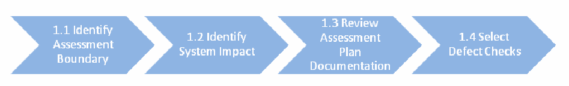
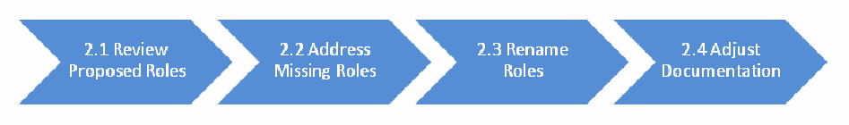

NIST IR 8011 Vol. 2 日本語訳
英語タイトル : Automation Support for Security Control Assessments: Volume 2: Hardware Asset Management日本語タイトル : セキュリティ管理策評価の自動化支援：第2巻：ハードウェア資産管理
公開日 : 2017-06-06
原文URL : https://csrc.nist.gov/pubs/ir/8011/v2/final
翻訳編集 : 自動生成（有志による非公式の日本語訳）, 原文取得日 : 2026-10-31, 訳文 : 883 / 884 ブロック
[要約] NIST IR 8011 Vol. 2 は、NISTIR 8011 の能力別の巻の一つで、ハードウェア資産管理（HWAM）という情報セキュリティ能力を扱う報告書です。HWAM 能力の焦点は、ネットワーク上の管理されていないデバイスや認可されていないデバイスが生むリスクを管理することにあります。目的は、第1巻の原則に沿って、ハードウェアに関連する SP 800-53 のセキュリティ管理策の評価を自動化する運用的な手法を提供することで、範囲はハードウェアに実装される管理策・管理策項目に限られます。HWAM 能力の定義と概要、HWAM のセキュリティ評価計画の文書化テンプレートを示し、付録では管理策項目と攻撃ステップの対応づけなどを扱います。
NISTIR 8011
Volume 2
NISTIR 8011
第2巻
Automation Support for Security Control Assessments
セキュリティ管理策評価の自動化支援
Volume 2: Hardware Asset Management
第2巻：ハードウェア資産管理
Kelley Dempsey
Paul Eavy
George Moore
Kelley Dempsey
Paul Eavy
George Moore
This publication is available free of charge from:
https://doi.org/10.6028/NIST.IR.8011-2
本刊行物は次の URL から無料で入手できます:
https://doi.org/10.6028/NIST.IR.8011-2
［NIST のロゴ。公的な標章のため、この非公式サイトには掲載していません。原本 PDF を参照してください。］
NISTIR 8011
Volume 2
NISTIR 8011
第2巻
Automation Support for Security Control Assessments
セキュリティ管理策評価の自動化支援
Volume 2: Hardware Asset Management
第2巻：ハードウェア資産管理
Kelley Dempsey
Computer Security Division
Information Technology Laboratory
Kelley Dempsey
Computer Security Division
Information Technology Laboratory
Paul Eavy
Federal Network Resilience Division
Department of Homeland Security
Paul Eavy
Federal Network Resilience Division
Department of Homeland Security
George Moore
Johns Hopkins University
Applied Physics Laboratory
George Moore
Johns Hopkins University
Applied Physics Laboratory
This publication is available free of charge from:
https://doi.org/10.6028/NIST.IR.8011-2
本刊行物は次の URL から無料で入手できます:
https://doi.org/10.6028/NIST.IR.8011-2
June 2017
2017年6月
U.S. Department of Commerce
Wilbur L. Ross, Jr., Secretary
米国商務省
Wilbur L. Ross, Jr. 長官
National Institute of Standards and Technology
Kent Rochford, Acting NIST Director and Under Secretary of Commerce for Standards and Technology
米国国立標準技術研究所（NIST）
Kent Rochford、NIST 所長代行兼商務次官（標準・技術担当）
National Institute of Standards and Technology Interagency Report 8011, Volume 2
155 pages (June 2017)
米国国立標準技術研究所 省庁間報告書 8011 第2巻
155ページ（2017年6月）
This publication is available free of charge from:
https://doi.org/10.6028/NIST.IR.8011-2
本刊行物は次の URL から無料で入手できます:
https://doi.org/10.6028/NIST.IR.8011-2
Certain commercial entities, equipment, or materials may be identified in this document in order to describe an experimental procedure or concept adequately. Such identification is not intended to imply recommendation or endorsement by NIST, nor is it intended to imply that the entities, materials, or equipment are necessarily the best available for the purpose.
本書では、実験的な手順や概念を適切に説明するために、特定の商業事業者、機器または資材を明示している場合があります。こうした明示は、NIST による推奨や支持を意味するものではなく、それらの事業者、資材または機器がその目的に照らして必ずしも最良であることを意味するものでもありません。
There may be references in this publication to other publications currently under development by NIST in accordance with its assigned statutory responsibilities. The information in this publication, including concepts and methodologies, may be used by federal agencies even before the completion of such companion publications. Thus, until each publication is completed, current requirements, guidelines, and procedures, where they exist, remain operative. For planning and transition purposes, federal agencies may wish to closely follow the development of these new publications by NIST.
本刊行物では、NIST が割り当てられた法令上の責務に従って現在策定中の他の刊行物に言及している場合があります。概念や方法論を含む本刊行物の情報は、こうした関連刊行物が完成する前であっても、連邦機関によって利用される場合があります。したがって、各刊行物が完成するまでは、現行の要件、ガイドラインおよび手順が存在する場合には、それらが引き続き有効です。計画および移行のため、連邦機関は、NIST によるこれらの新しい刊行物の策定状況を注意深く追うことを検討してもよいです。
Organizations are encouraged to review all draft publications during public comment periods and provide feedback to NIST. Many NIST information security publications, other than the ones noted above, are available at http://csrc.nist.gov/publications.
組織は、パブリックコメント期間中にすべてのドラフト刊行物を確認し、NIST にフィードバックを提供することが推奨されています。上記以外にも、NIST の情報セキュリティ関連刊行物の多くが http://csrc.nist.gov/publications で入手できます。
Comments on this publication may be submitted to:
本刊行物へのコメントは、次の宛先に提出できます。
National Institute of Standards and Technology
Attn: Computer Security Division, Information Technology Laboratory
100 Bureau Drive (Mail Stop 8930) Gaithersburg, MD 20899-8930
Email: sec-cert@nist.gov
National Institute of Standards and Technology
Attn: Computer Security Division, Information Technology Laboratory
100 Bureau Drive (Mail Stop 8930) Gaithersburg, MD 20899-8930
Email: sec-cert@nist.gov
All comments are subject to release under the Freedom of Information Act (FOIA).
すべてのコメントは、情報自由法（FOIA）に基づく公開の対象となります。
Reports on Computer Systems Technology
コンピュータシステム技術に関する報告書
The Information Technology Laboratory (ITL) at the National Institute of Standards and Technology (NIST) promotes the U.S. economy and public welfare by providing technical leadership for the Nation’s measurement and standards infrastructure. ITL develops tests, test methods, reference data, proof-of-concept implementations, and technical analyses to advance the development and productive use of information technology. ITL’s responsibilities include the development of management, administrative, technical, and physical standards and guidelines for the cost-effective security and privacy of other than national security-related information in federal systems.
米国国立標準技術研究所（NIST）の情報技術研究所（ITL）は、国の計測・標準インフラに対する技術的なリーダーシップを提供することで、米国経済と公共の福祉を促進しています。ITL は、情報技術の開発と生産的な利用を進めるため、テスト、テスト手法、参照データ、概念実証実装および技術分析を開発しています。ITL の責務には、連邦システムにおける国家安全保障に関連しない情報のセキュリティとプライバシーを費用対効果の高い形で確保するための、管理上、行政上、技術上および物理的な標準およびガイドラインの策定が含まれます。
Abstract
概要
The NISTIR 8011 volumes focus on each individual information security capability, adding tangible detail to the more general overview given in NISTIR 8011 Volume 1, and providing a template for transition to a detailed, NIST standards-compliant automated assessment. This document, Volume 2 of NISTIR 8011, addresses the Hardware Asset Management (HWAM) information security capability. The focus of the HWAM capability is to manage risk created by unmanaged and/or unauthorized devices on a network. Unmanaged devices are targets that attackers can use to gain and more easily maintain a persistent platform from which to attack the rest of the network.
NISTIR 8011 の各巻は、それぞれ個別の情報セキュリティ能力に焦点を当て、NISTIR 8011 第1巻に示された一般的な概観に具体的な詳細を加えるとともに、NIST の標準に準拠した詳細な自動評価へ移行するためのテンプレートを提供します。本書は NISTIR 8011 の第2巻であり、ハードウェア資産管理（HWAM）という情報セキュリティ能力を扱います。HWAM 能力の焦点は、ネットワーク上の管理されていないデバイスまたは認可されていないデバイス（あるいはその両方）によって生じるリスクを管理することです。管理されていないデバイスは、攻撃者がネットワークの他の部分を攻撃するための持続的な足場を獲得し、より容易に維持するために利用できる標的となります。
Keywords
キーワード
actual state; assessment; assessment boundary; assessment method; authorization boundary; automated assessment; automation; capability; continuous diagnostics and mitigation; dashboard; defect; defect check; desired state specification; hardware asset management; information security continuous monitoring; inventory management; mitigation; ongoing assessment; root cause analysis; security automation; security capability; security control; security control assessment; security control item.
実際の状態、評価、評価境界、評価手法、認可境界、自動評価、自動化、能力、継続的な診断と緩和、ダッシュボード、欠陥、欠陥チェック、望ましい状態の仕様、ハードウェア資産管理、情報セキュリティ継続的モニタリング、インベントリ管理、緩和、継続的評価、根本原因分析、セキュリティ自動化、セキュリティ能力、セキュリティ管理策、セキュリティ管理策評価、セキュリティ管理策項目。
Acknowledgments
謝辞
The authors, Kelley Dempsey of the National Institute of Standards and Technology (NIST), Dr. George Moore of the Applied Physics Laboratory at Johns Hopkins University, and Paul Eavy of the Department of Homeland Security, wish to thank their colleagues who reviewed drafts of this document, including Nathan Aileo, Nadya Bartol, Craig Chase, Ann Dixon, Terry Fletcher, Jim Foti, John Groenveld, Susan Hansche, Alicia Jones, Amy Heydman, Elizabeth Lennon, Jaime Miller, Susan Pagan, Daniel Portwood, Ron Ross, Martin Stanley, Kevin Stine, Robin Walker, David Waltermire, Kimberly Watson, and Jim Wiggins. The authors also gratefully acknowledge and appreciate the comments and contributions made by government agencies, private organizations, and individuals in providing direction and assistance in the development of this document.
著者である米国国立標準技術研究所（NIST）の Kelley Dempsey 氏、ジョンズ・ホプキンス大学応用物理研究所の George Moore 博士、国土安全保障省の Paul Eavy 氏は、本書のドラフトをレビューして貴重な意見を寄せてくれた同僚の皆様、とりわけ Nathan Aileo、Nadya Bartol、Craig Chase、Ann Dixon、Terry Fletcher、Jim Foti、John Groenveld、Susan Hansche、Alicia Jones、Amy Heydman、Elizabeth Lennon、Jaime Miller、Susan Pagan、Daniel Portwood、Ron Ross、Martin Stanley、Kevin Stine、Robin Walker、David Waltermire、Kimberly Watson、Jim Wiggins の各氏に感謝します。また著者らは、本書の作成にあたり方向性を示し支援してくださった政府機関、民間組織および個人から寄せられたコメントと貢献に対し、深く感謝いたします。
Table of Contents
目次
List of Figures
図の一覧
List of Tables
表の一覧
Executive Summary
エグゼクティブサマリー
The National Institute of Standards and Technology (NIST) and the Department of Homeland Security (DHS) have collaborated on the development of a process that automates the test assessment method described in NIST Special Publication (SP) 800-53A for the security controls catalogued in SP 800-53. The process is consistent with the Risk Management Framework as described in SP 800-37 and the Information Security Continuous Monitoring (ISCM) guidance in SP 800-137. The multi-volume NIST Interagency Report 8011 (NISTIR 8011) has been developed to provide information on automation support for ongoing assessments. NISTIR 8011 describes how ISCM facilitates automated ongoing assessment to provide near-real-time security-related information to organizational officials on the security posture of individual systems and the organization as a whole.
米国国立標準技術研究所（NIST）と国土安全保障省（DHS）は共同で、SP 800-53 に収録されたセキュリティ管理策について、NIST Special Publication（SP）800-53A に記載のテスト評価手法を自動化するプロセスを開発しました。このプロセスは、SP 800-37 に記載のリスクマネジメントフレームワークおよび SP 800-137 の情報セキュリティ継続的モニタリング（ISCM）ガイダンスと整合しています。複数巻からなる NIST 省庁間報告書 8011（NISTIR 8011）は、継続的評価の自動化支援に関する情報を提供するために作成されました。NISTIR 8011 は、ISCM がどのように自動化された継続的評価を可能にし、個々のシステムおよび組織全体のセキュリティ態勢に関するセキュリティ関連情報をほぼリアルタイムで組織の責任者に提供するかを説明しています。
NISTIR 8011 Volume 1 includes a description of ISCM Security Capabilities—groups of security controls working together to achieve a common purpose. The subsequent NISTIR 8011 volumes are capability-specific volumes. Each volume focuses on one specific ISCM information security capability in order to (a) add tangible detail to the more general overview given in NISTIR 8011 Volume 1; and (b) provide a template for the transition to detailed, standards-compliant automated assessments.
NISTIR 8011 第1巻には、ISCM セキュリティ能力（共通の目的を達成するために連携して働くセキュリティ管理策のグループ）の説明が含まれています。続く NISTIR 8011 の各巻は能力別の巻です。各巻は、特定の ISCM 情報セキュリティ能力を1つ取り上げ、(a) NISTIR 8011 第1巻に示された一般的な概観に具体的な詳細を加え、(b) 標準に準拠した詳細な自動評価へ移行するためのテンプレートを提供します。
This document, Volume 2 of NISTIR 8011, addresses the information security capability known as Hardware Asset Management (HWAM). The focus of the HWAM capability is to manage risk created by unmanaged or unauthorized devices that are on a network. When devices are unmanaged or unauthorized, they are vulnerable because the devices tend to be forgotten or unseen. Moreover, when vulnerabilities are discovered on such devices, there is no one assigned to respond to the risk. As a result, unmanaged and unauthorized devices are targets that attackers can use to gain and more easily maintain a persistent platform from which to attack the rest of the network.
本書は NISTIR 8011 の第2巻であり、ハードウェア資産管理（HWAM）として知られる情報セキュリティ能力を扱います。HWAM 能力の焦点は、ネットワーク上にある、管理されていない、または認可されていないデバイスによって生じるリスクを管理することです。デバイスが管理されていない、または認可されていない場合、そのデバイスは忘れ去られたり見過ごされたりしがちなため、脆弱な状態になります。さらに、そのようなデバイスで脆弱性が発見されても、そのリスクに対応する担当者が割り当てられていません。その結果、管理されていないデバイスや認可されていないデバイスは、攻撃者がネットワークの他の部分を攻撃するための持続的な足場を獲得し、より容易に維持するために利用できる標的となります。
A well-designed HWAM program helps to prevent (a) entry of exploits or natural events into a network; (b) exploits or events from gaining a foothold; and (c) the exfiltration of information. The assessment helps verify that hardware asset management is working.
適切に設計された HWAM プログラムは、(a) エクスプロイトや自然事象がネットワークに入り込むこと、(b) エクスプロイトや事象が足がかりを得ること、(c) 情報が外部へ持ち出されること、を防ぐのに役立ちます。この評価は、ハードウェア資産管理が機能していることの検証に役立ちます。
This volume outlines detailed step-by-step processes to adapt or customize the template presented here to meet the needs of a specific assessment target network and apply the results to the assessment of all authorization boundaries on that network. A process is also provided to implement the assessment (diagnosis) and response. Automated testing related to the controls for HWAM, as outlined herein, is compliant with other NIST guidance.
本巻では、特定の評価対象ネットワークのニーズを満たすためにここに示すテンプレートを適合またはカスタマイズし、その結果をそのネットワーク上のすべての認可境界の評価に適用するための、詳細な段階的プロセスを示します。評価（診断）と対応を実施するためのプロセスも示します。本書に示す HWAM の管理策に関連する自動テストは、NIST の他のガイダンスと整合しています。
It has not been obvious to security professionals how to automate testing of other than technical controls. This volume documents a detailed assessment plan to assess the effectiveness of controls related to authorizing and assigning devices to be managed. Included are specific tests that form the basis for such a plan, how the tests apply to specific controls, and the kinds of resources needed to operate and use the assessment to mitigate defects found. For HWAM, it can be shown that the assessment of 88 percent1 of determination statements for controls in the SP 800-53 Low-Medium-High baselines can be fully or partially automated.
セキュリティ専門家にとって、技術的管理策以外の管理策のテストを自動化する方法は明らかではありませんでした。本巻は、管理対象とするデバイスの認可および割当てに関連する管理策の有効性を評価するための詳細な評価計画を記載しています。その内容には、計画の基礎となる具体的なテスト、各テストが個々の管理策にどのように適用されるか、ならびに評価を実施してその結果を活用し、発見された欠陥を緩和するために必要な資源の種類が含まれます。HWAM については、SP 800-53 の Low-Medium-High ベースラインに含まれる管理策の判定記述の88パーセント1について、評価を完全または部分的に自動化できることを示せます。
The methods outlined here are designed to provide objective, timely, and complete identification of security defects related to HWAM at a lower cost than manual assessment methods. Using this defect information can drive the most efficient and effective remediation of the worst security defects found.
ここに示す方法は、HWAM に関連するセキュリティ上の欠陥を、手作業による評価方法よりも低いコストで、客観的かつタイムリーに、漏れなく特定できるように設計されています。この欠陥情報を用いることで、発見された最悪のセキュリティ上の欠陥に対する最も効率的で効果的な是正を進めることができます。
This volume assumes the reader is familiar with the concepts and ideas presented in the Overview (NISTIR 8011, Volume 1). Terms used herein are also defined in the Volume 1 glossary.
本巻は、読者が概要（NISTIR 8011 第1巻）で示された概念や考え方に精通していることを前提としています。本書で使用する用語は、第1巻の用語集でも定義されています。
1. Introduction
1. はじめに
1.1 Purpose and Scope
1.1 目的と範囲
The purpose of the National Institute of Standards (NIST) Interagency Report (NISTIR) 8011 Volume 2 is to provide an operational approach for automating the assessment of SP 800-53 security controls related to the ISCM-defined security capability of Hardware Asset Management (HWAM) that is consistent with the principles outlined in Volume 1.
米国国立標準技術研究所（NIST）省庁間報告書（NISTIR）8011 第2巻の目的は、第1巻に示された原則と整合する形で、ISCM で定義されたセキュリティ能力であるハードウェア資産管理（HWAM）に関連する SP 800-53 のセキュリティ管理策の評価を自動化するための、運用上のアプローチを提供することです。
The scope is limited to security controls/control items that are implemented for hardware.
範囲は、ハードウェアに対して実装されるセキュリティ管理策および管理策項目に限定されます。
1.2 Target Audience
1.2 想定読者
The target audience for this volume, because it is focused on HWAM, is of special relevance to those who manage hardware. However, it is still of value to others to help understand the risks hardware may be imposing on non-hardware assets.
本巻は HWAM に焦点を当てているため、ハードウェアを管理する人々に特に関係があります。しかし、ハードウェアがハードウェア以外の資産にもたらす可能性のあるリスクを理解するうえで、他の人々にとっても有益です。
1.3 Organization of this Volume
1.3 本巻の構成
Section 2 provides an overview of the HWAM capability to clarify both scope and purpose and provides links to additional information specific to the HWAM capability. Section 3 provides detailed information on the HWAM defect checks and how the defect checks automate assessment of the effectiveness of SP 800-53 security controls that support the HWAM capability. Section 3 also provides artifacts that can be used by an organization to produce an automated security control assessment plan for most of the control items supporting Hardware Asset Management.
第2節では、HWAM 能力の概要を示して範囲と目的を明確にするとともに、HWAM 能力に固有の追加情報へのリンクを提供します。第3節では、HWAM の欠陥チェックと、その欠陥チェックが HWAM 能力を支える SP 800-53 のセキュリティ管理策の有効性評価をどのように自動化するかについて、詳細な情報を提供します。第3節ではまた、ハードウェア資産管理を支える管理策項目の大半について、組織が自動化されたセキュリティ管理策評価計画を作成するために使用できる成果物も提供します。
1.4 Interaction with Other Volumes in this NISTIR
1.4 本 NISTIR 内の他の巻との関係
Volume 1 of this NISTIR (Overview) provides a conceptual synopsis of using automation to support security control assessment and provides definitions and background information that facilitates understanding of the information in this and subsequent volumes. This volume assumes that the reader is familiar with the information in Volume 1.
本 NISTIR の第1巻（概要）は、セキュリティ管理策評価を支援するための自動化の利用について概念的な要約を示し、本巻およびそれ以降の巻の情報の理解を助ける定義と背景情報を提供します。本巻は、読者が第1巻の情報に精通していることを前提としています。
The HWAM capability identifies devices (defined in Figure 2) that are present on the target network and supports other capabilities by providing the full census of devices on which to check for defects related to software, device privileges, and device behavior.
HWAM 能力は、対象ネットワーク上に存在するデバイス（図2で定義）を識別し、ソフトウェア、デバイス権限およびデバイスの挙動に関する欠陥をチェックする対象となるデバイスの全数調査を提供することで、他の能力を支援します。
2. Hardware Asset Management (HWAM) Capability Definition, Overview, and Scope
2. ハードウェア資産管理（HWAM）能力の定義、概要および範囲
Hardware asset management recognizes that networked devices that are unauthorized2 and/or unassigned for management are likely to be vulnerable. External and inside attackers search for and exploit such devices, either for what the device itself can offer, or as a platform from which to persist on the network to attack other assets. By removing unauthorized devices and/or assigning such devices to a person or team for system administration and authorization, HWAM helps reduce the probability that attackers find and easily exploit devices.
ハードウェア資産管理は、認可されていない2、または管理のために割り当てられていない（あるいはその両方の）ネットワーク接続デバイスは脆弱である可能性が高い、という認識に立っています。外部および内部の攻撃者は、そのようなデバイス自体が提供するものを得るため、あるいはネットワーク上で活動を継続して他の資産を攻撃するための足場として利用するために、そうしたデバイスを探し出して悪用します。HWAM は、認可されていないデバイスを排除するか、そうしたデバイスをシステム管理と認可を担当する個人またはチームに割り当てる（あるいはその両方）ことで、攻撃者がデバイスを見つけて容易に悪用する可能性を低減するのに役立ちます。
2.1 HWAM Capability Description
2.1 HWAM 能力の説明
The Hardware Asset Management Capability provides an organization visibility into the devices operating on its network(s), so it can manage and defend itself in an appropriate manner. It also provides a view of device management responsibility in a way that prioritized defects can be presented to the responsible party for mitigation actions and risk acceptance decisions.
ハードウェア資産管理能力は、組織が自らのネットワーク上で稼働しているデバイスを可視化し、適切な方法で自らを管理・防御できるようにします。また、優先順位付けされた欠陥を、緩和措置とリスク受容の判断を行う責任者に提示できるよう、デバイス管理の責任に関する見方も提供します。
HWAM identifies devices, including virtual machines, that are present on the network and compares them with the desired state inventory to determine if the devices identified as being on the target network are authorized. Some devices are network-addressable, and others are removable (and presumably connected to addressable devices). The HWAM capability is focused on ensuring that all devices authorized to be on the target network are fully identified and that an appropriate access control policy is applied, thus the means for identifying the actual devices will vary, depending on the automated tools in use and the type of device.
HWAM は、仮想マシンを含め、ネットワーク上に存在するデバイスを識別し、それを望ましい状態のインベントリと比較して、対象ネットワーク上にあると識別されたデバイスが認可されているかどうかを判定します。デバイスには、ネットワークでアドレス指定可能なものと、取り外し可能なもの（おそらくアドレス指定可能なデバイスに接続されるもの）があります。HWAM 能力は、対象ネットワーク上に存在することを認可されたすべてのデバイスが完全に識別され、適切なアクセス制御ポリシーが適用されていることを確実にすることに焦点を当てています。そのため、実際のデバイスを識別する手段は、使用する自動化ツールやデバイスの種類によって異なります。
The ISCM process (as adapted for each agency) provides insight into what percentage of the actual hardware assets are included in the desired state, and of those, how many identify an assigned manager.
ISCM プロセス（各機関に合わせて適応したもの）は、実際のハードウェア資産のうち何パーセントが望ましい状態に含まれているか、またそのうち管理者が割り当てられているものがいくつあるかを把握する手がかりを提供します。
2.2 HWAM Attack Scenarios and Desired Result
2.2 HWAM の攻撃シナリオと望ましい結果
This document (NISTIR 8011) uses an attack step model to summarize the seven primary steps of cyber attacks that SP 800-53 controls work together to block or delay (see Figure 1: HWAM Impact on an Attack Step Model). The HWAM security capability is designed to block or delay attacks at the attack steps listed in Table 1: HWAM Impact on an Attack Step Model.
本書（NISTIR 8011）は、攻撃ステップモデルを用いて、SP 800-53 の管理策が連携して阻止または遅延させるサイバー攻撃の7つの主要なステップを要約しています（図1: 攻撃ステップモデルに対する HWAM の影響を参照）。HWAM セキュリティ能力は、表1: 攻撃ステップモデルに対する HWAM の影響に挙げる攻撃ステップで攻撃を阻止または遅延させるように設計されています。
![Two-column diagram. Left column "Attack Steps": 1) Gain Internal Entry; 2) Initiate Attack Internally; 3) Gain Foothold; 4) Gain Persistence; 5) Expand Control - Escalate or Propagate; 6) Achieve Attack Objective. Right column "HWAM Impacts", with arrows pointing to attack steps: "Block or Limit Internal Access: Prevent or minimize access of potentially unauthorized/ compromised devices to trusted network resources. Reduce amount of time unauthorized devices are present before detection." (arrow to step 2); "Block Foothold: Reduce number of unauthorized or easy-to-compromise devices that aren’t being actively administered." (arrow between steps 3 and 4); "Block Physical Exfiltration: Prevent or minimize copying information to unauthorized devices." (arrow to step 6).](assets/ir-8011v2/p0013-figure-01.png)
2列の図です。左列「Attack Steps（攻撃ステップ）」には、1) Gain Internal Entry（内部への侵入）、2) Initiate Attack Internally（内部での攻撃開始）、3) Gain Foothold（足場の確保）、4) Gain Persistence（持続性の確保）、5) Expand Control - Escalate or Propagate（制御の拡大－昇格または拡散）、6) Achieve Attack Objective（攻撃目的の達成）が並びます。右列「HWAM Impacts（HWAM の効果）」から攻撃ステップへ矢印が向かいます。「Block or Limit Internal Access（内部アクセスの阻止・制限）: 認可されていない可能性のある機器や侵害された機器による信頼済みネットワーク資源へのアクセスを防止または最小化し、認可されていない機器が検出されるまでの時間を短縮する」はステップ2へ、「Block Foothold（足場の阻止）: 能動的に管理されていない認可されていない機器、または侵害されやすい機器の数を減らす」はステップ3と4の間へ、「Block Physical Exfiltration（物理的な持ち出しの阻止）: 認可されていない機器への情報の複製を防止または最小化する」はステップ6へ向かいます。
Figure 1: HWAM Impact on an Attack Step Model
図1: 攻撃ステップモデルに対する HWAM の影響
Note
The attack steps shown in Figure 1: HWAM Impact on an Attack Step Model, apply only to adversarial attacks. (See NISTIR 8011, Volume 1, Section 3.2.)
注
図1: 攻撃ステップモデルに対する HWAM の影響に示す攻撃ステップは、敵対的な攻撃にのみ適用されます。（NISTIR 8011 第1巻の第3.2節を参照してください。）
Table 1: HWAM Impact on an Attack Step Model
表1: 攻撃ステップモデルに対する HWAM の影響
| Attack Step Name | Attack Step Purpose | Examples of HWAM Impact |
|---|---|---|
| 2) Initiate Attack Internally | The attacker is inside the boundary and initiates attack on some assessment object internally. Examples include: User opens spear phishing email or clicks on attachment; user installs unauthorized software or hardware; unauthorized personnel gain physical access to restricted facility. | Block or Limit Internal Access: Prevent or minimize access of potentially unauthorized/compromised devices to trusted network resources; Reduce amount of time unauthorized devices are present before detection. |
| 3) Gain Foothold | The attacker has gained entry to the assessment object and achieves enough actual compromise to gain a foothold, but without persistence. Examples include: Unauthorized user successfully logs in with authorized credentials; browser exploit code successfully executed in memory and initiates call back; person gains unauthorized access to server room. | Block Foothold: Reduce number of unauthorized and/or easy-to-compromise devices that aren’t being actively administered. |
| 6) Achieve Attack Objective | The attacker achieves an objective. Loss of confidentiality, integrity, or availability of data or system capability. Examples include: Exfiltration of files; modification of database entries; deletion of file or application; denial of service; disclosure of PII. | Block Physical Exfiltration: Prevent or minimize copying information to unauthorized devices. |
| 攻撃ステップ名 | 攻撃ステップの目的 | HWAM の影響の例 |
|---|---|---|
| 2) 内部からの攻撃の開始（Initiate Attack Internally） | 攻撃者は境界の内側におり、評価対象のいずれかに対して内部から攻撃を開始します。 例: ユーザーがスピアフィッシングメールを開く、または添付ファイルをクリックすること、ユーザーが認可されていないソフトウェアまたはハードウェアをインストールすること、権限のない要員が制限区域に物理的に立ち入ること。 | 内部アクセスの阻止または制限: 認可されていない可能性のある、または侵害されたデバイスが信頼されたネットワーク資源にアクセスすることを防ぐか最小限に抑えます。検知されるまでに認可されていないデバイスが存在する時間を短縮します。 |
| 3) 足がかりの獲得（Gain Foothold） | 攻撃者は評価対象に侵入しており、持続性を得ることなく、足がかりを得るのに十分な侵害を達成します。 例: 権限のないユーザーが認可済みの認証情報でログインに成功すること、ブラウザーのエクスプロイトコードがメモリ上で実行されコールバックを開始すること、人物がサーバールームへの権限のないアクセスを得ること。 | 足がかりの阻止: 能動的に管理されていない、認可されていないデバイス、および／または侵害されやすいデバイスの数を減らします。 |
| 6) 攻撃目的の達成（Achieve Attack Objective） | 攻撃者が目的を達成します。データまたはシステム能力の機密性、完全性、可用性の喪失です。 例: ファイルの持ち出し、データベースエントリの改変、ファイルまたはアプリケーションの削除、サービス拒否、PII の開示。 | 物理的な持ち出しの阻止: 認可されていないデバイスへの情報のコピーを防ぐか最小限に抑えます。 |
Other examples of traceability among requirement levels. While Table 1 shows HWAM impacts on example attack steps, it is frequently useful to observe traceability among other sets of requirements. To examine such traceability, see Table 2: Traceability among Requirement Levels. To reveal traceability from one requirement type to another, look up the cell in the matching row and column of interest and click on the link.
要件レベル間の追跡可能性のその他の例。表1は、攻撃ステップの例に対する HWAM の影響を示していますが、他の要件の組の間の追跡可能性を確認することもしばしば有用です。そのような追跡可能性を調べるには、表2: 要件レベル間の追跡可能性を参照してください。ある要件の種類から別の種類への追跡可能性を明らかにするには、関心のある行と列が交わるセルを探し、そのリンクをクリックしてください。
Table 2: Traceability among Requirement Levels
表2: 要件レベル間の追跡可能性
| Example Attack Steps | Capability | Sub-Capability/Defect Check | Control Items | |
|---|---|---|---|---|
| Example Attack Steps | Figure 1 Table 1 | Table 6 | Appendix A | |
| Capability | Figure 1 Table 1 | Table 6 | Section 3.3a | |
| Sub-Capability/Defect Check | Table 6 | Table 6 | Section 3.2b | |
| Control Items | Appendix A | Section 3.3a | Section 3.2b |
| 攻撃ステップの例 | 能力 | サブ能力／欠陥チェック | 管理策項目 | |
|---|---|---|---|---|
| 攻撃ステップの例 | 図1 表1 | 表6 | 付録 A | |
| 能力 | 図1 表1 | 表6 | 第3.3節a | |
| サブ能力／欠陥チェック | 表6 | 表6 | 第3.2節b | |
| 管理策項目 | 付録 A | 第3.3節a | 第3.2節b |
a Each level-four section (e.g., 3.3.1.1) is a control item that supports this capability.
a 4 階層目の各節（たとえば 3.3.1.1）は、この能力を支える管理策項目です。
b Refer to the table under the heading Supporting Control Items within each defect check.
b 各欠陥チェック内の「支援する管理策項目」という見出しの下の表を参照してください。
2.3 Assessment Objects Protected and Assessed by HWAM
2.3 HWAM によって保護・評価される評価対象
As noted in Section 1.1, the assessment objects directly managed and assessed by the HWAM capability are hardware devices. However, the following clarification is relevant:
第1.1節で述べたとおり、HWAM 能力が直接管理・評価する評価対象は、ハードウェアデバイスです。ただし、次の点を明確にしておくことが重要です。
Hardware that cannot be attacked independently is not included in the definition of a device (Figure 2: Definition of Devices for HWAM). For example, remote attacks affect a device through its Internet Protocol (IP) connection and cannot attack a mouse independently. Thus, subcomponents of the device (Figure 3: Definition of Device Subcomponents for HWAM) are important primarily if they can be moved or accessed as independent devices (e.g., a thumb drive) or they impose risk to the overall device or the network (e.g., a wireless capability). These considerations drive the selected definitions. Otherwise, for HWAM purposes, items like a mouse, monitor, or internal memory are simply parts of the device.
独立して攻撃できないハードウェアは、デバイスの定義（図2: HWAM におけるデバイスの定義）に含まれません。たとえば、リモート攻撃はインターネットプロトコル（IP）接続を通じてデバイスに影響を及ぼすのであって、マウスを単独で攻撃することはできません。したがって、デバイスのサブコンポーネント（図3: HWAM におけるデバイスのサブコンポーネントの定義）が重要になるのは主に、それらが独立したデバイスとして移動またはアクセスできる場合（たとえば USB メモリ）、あるいはデバイス全体やネットワークにリスクをもたらす場合（たとえば無線機能）です。これらの考慮事項が、選定した定義を方向づけています。それ以外の場合、HWAM の目的においては、マウス、モニター、内部メモリのようなものは単にデバイスの一部です。
Devices (hardware assets), which are defined in the HWAM architecture and Concept of Operations [Figure 4 and HWAM Capability Description], consist of the following:
デバイス（ハードウェア資産）は、HWAM のアーキテクチャと運用概念［図4および HWAM 能力の説明］で定義されており、次のものから成ります。
•IP addressable (or otherwise network addressable) physical hardware; and
•IP アドレス指定可能な（またはその他の方法でネットワークアドレス指定可能な）物理ハードウェア。
•IP addressable virtual devices.
•IP アドレス指定可能な仮想デバイス。
Note: In NIST SP 800-53, revision 4, Section 1.1, footnote 9, devices make up almost all examples of “system components.” Therefore, devices are considered to be system components.
注: NIST SP 800-53 改訂第4版の第1.1節の脚注9の記述では、「システムコンポーネント」の例のほとんどをデバイスが占めています。したがって、デバイスはシステムコンポーネントとみなされます。
Figure 2: Definition of Devices for HWAM
図2: HWAM におけるデバイスの定義
Subcomponents are the parts or functionalities which make up a device. Organizations may optionally choose to track subcomponents and their attributes if they carry security implications. Device subcomponents may include, but are not limited to:
サブコンポーネントとは、デバイスを構成する部品または機能です。組織は、セキュリティ上の影響がある場合、サブコンポーネントとその属性を任意で追跡することを選択できます。デバイスのサブコンポーネントには、次のものが含まれますが、これらに限定されません。
•modem connections;
•モデム接続。
•wireless capabilities;
•無線機能。
•hardware that is not IP addressable (e.g., some network switches); and
•IP アドレス指定ができないハードウェア（たとえば一部のネットワークスイッチ）。
•removable hardware of security interest
•セキュリティ上関心の対象となる取り外し可能なハードウェア
•USB thumb drives;
•USB メモリ。
•removable hard drives; and
•取り外し可能なハードディスク。
•other removable media.
•その他の取り外し可能な媒体。
Individual organizations have a great deal of flexibility in defining device subcomponents as needed to meet organization specific needs. Thus, no precise definition of subcomponents is provided.
個々の組織は、組織固有のニーズを満たすために必要に応じてデバイスのサブコンポーネントを定義する際に、大きな柔軟性を持っています。そのため、サブコンポーネントの厳密な定義は示されていません。
Figure 3: Definition of Device Subcomponents for HWAM
図3: HWAM におけるデバイスのサブコンポーネントの定義
2.4 Example HWAM Data Requirements3
2.4 HWAM のデータ要件の例3
Examples of data requirements for the HWAM actual state are in Table 3. Examples of data requirements for the HWAM desired state are in Table 4.
HWAM の実際の状態に対するデータ要件の例を表3に示します。HWAM の望ましい状態に対するデータ要件の例を表4に示します。
Table 3: Example HWAM Actual State Data Requirements
表3: HWAM の実際の状態のデータ要件の例
| Data Item | Justification |
|---|---|
Data necessary to accurately identify the device. Site-specific, examples include:
| To identify which operational device is unauthorized, or has some other defect. |
Data necessary to describe the attributes of a device such that other capabilities can determine the appropriate defect checks to run on that device.a
| To ensure all appropriate defects for devices are defined, executed, and reported. |
Data necessary to compare devices connected to the network to the authorized hardware inventory.
| To identify unauthorized devices. |
Data necessary to locate physical assets based on information collected in the operational environment. Site specific, examples include:
| To ensure that specific locations of devices are known so devices can be found to repair, validate, or remove if needed. |
Data necessary to determine how long devices have been present in the environment. At a minimum:
| To determine how long the device has been in existence and the last time it was detected in the enterprise |
| データ項目 | 根拠 |
|---|---|
デバイスを正確に識別するために必要なデータ。サイトごとに異なり、例には次のものがあります。
| どの運用中のデバイスが認可されていないか、または他の欠陥を持つかを識別するため。 |
他の能力がそのデバイスに対して実行すべき適切な欠陥チェックを判断できるよう、デバイスの属性を記述するために必要なデータ。a
| デバイスに対するすべての適切な欠陥が、定義され、実行され、報告されるようにするため。 |
ネットワークに接続されたデバイスを認可済みハードウェアインベントリと比較するために必要なデータ。
| 認可されていないデバイスを識別するため。 |
運用環境で収集した情報に基づいて物理的な資産の場所を特定するために必要なデータ。サイトごとに異なり、例には次のものがあります。
| 必要に応じてデバイスを見つけて修理、検証または撤去できるよう、デバイスの具体的な場所が把握されているようにするため。 |
デバイスが環境内にどれだけの期間存在しているかを判断するために必要なデータ。最低限、次のものです。
| デバイスがどれだけの期間存在しているか、およびエンタープライズ内で最後に検知された時期を判断するため。 |
a This information could also be collected by SWAM tools (see Volume 3).
a この情報は SWAM ツールでも収集できる場合があります（第3巻を参照）。
Table 4: Example HWAM Desired State Data Requirements
表4: HWAM の望ましい状態のデータ要件の例
| Data Item | Justification |
|---|---|
Data necessary to accurately identify the device. At a minimum:
| To uniquely identify the device. To validate that the device on the network is the device authorized, and not an imposter. |
Data necessary to describe a device such that other capabilities can determine the appropriate defect checks to run on that device.
| To ensure all appropriate defects for a device are defined, run, and reported. To help identify non-reporting associated with other capabilities that look for defects on the device. |
| A person or organization that is the device manager for each device (note: this should be a reasonable assignment, do not count management assignments where a person or organization is assigned too many devices to effectively manage the devices). Local enhancements might include:
| To identify the role responsible for responding to specific risk conditions found. To assess the performance of the response roles in risk management. |
Data necessary to compare devices discovered on the network to the authorized hardware inventory. Site dependent, examples include:
| To identify unauthorized devices. To know which devices have defects. |
Data necessary to locate a physical device.
| To ensure that managers can find the device to revalidate it for supply chain risk management.
|
| The period of time the device is authorized. Local enhancements might include:
| To allow previously authorized devices to remain in the authorized hardware inventory, but know such devices are no longer authorized. |
Expected status of the device (e.g., authorized, expired, pending approval, missing) to include:
| To determine which devices in the authorized hardware inventory are not likely to be found in actual state inventory. |
| データ項目 | 根拠 |
|---|---|
デバイスを正確に識別するために必要なデータ。最低限、次のものです。
| デバイスを一意に識別するため。 ネットワーク上のデバイスが、なりすましではなく、認可されたデバイスであることを検証するため。 |
他の能力がそのデバイスに対して実行すべき適切な欠陥チェックを判断できるよう、デバイスを記述するために必要なデータ。
| デバイスに対するすべての適切な欠陥が、定義され、実行され、報告されるようにするため。 そのデバイスの欠陥を探す他の能力に関連する、報告の欠落を識別しやすくするため。 |
| 各デバイスのデバイス管理者である個人または組織（注: これは妥当な割当てであるべきです。個人または組織に割り当てられたデバイスが多すぎて、デバイスを効果的に管理できない割当ては数えません）。 ローカルな拡張には、次のものが含まれる場合があります。
| 見つかった特定のリスク状態に対応する責任を負う役割を識別するため。 リスクマネジメントにおける対応役割の実施状況を評価するため。 |
ネットワーク上で発見されたデバイスを認可済みハードウェアインベントリと比較するために必要なデータ。サイトごとに異なり、例には次のものがあります。
| 認可されていないデバイスを識別するため。 どのデバイスに欠陥があるかを把握するため。 |
物理的なデバイスの場所を特定するために必要なデータ。
| 管理者がデバイスを見つけて、サプライチェーンリスクマネジメントのために再検証できるようにするため。
|
| デバイスが認可されている期間。 ローカルな拡張には、次のものが含まれる場合があります。
| 以前に認可されたデバイスを認可済みハードウェアインベントリに残しつつ、そのようなデバイスがもはや認可されていないことを把握できるようにするため。 |
デバイスの想定される状態（たとえば、認可済み、期限切れ、承認待ち、所在不明）。次のものを含みます。
| 認可済みハードウェアインベントリ内のどのデバイスが、実際の状態のインベントリでは見つかりそうにないかを判断するため。 |
a Organizations can define data requirements and associated defects for their local environment.
a 組織は、自らのローカル環境に対するデータ要件と、それに関連する欠陥を定義できます。
2.5 HWAM Concept of Operational Implementation
2.5 HWAM の運用実装の概念
Figure 4: HWAM Concept of Operations (CONOPS) illustrates how HWAM might be implemented. The CONOPS is central to the automated assessment process.
図4: HWAM の運用概念（CONOPS）は、HWAM をどのように実装できるかを示しています。CONOPS は、自動評価プロセスの中心です。
![CONOPS flow diagram with four boxes. Top left: "Search for and Identify all Devices — Collect Actual State". Top right: "Establish/update a baseline of authorized and managed devices — Collect Desired State", with a loop arrow labeled "Managers validate assigned responsibility". Arrows from both lead to the center box "Compute the differences between actual state and desired state and score them — Find/Prioritize Defects", which leads ("Scored defects ONLY") to the bottom box "Correct discrepancies either by correcting Actual State or updating Desired State — Mitigate Defects". From Mitigate Defects, arrows go back: (1) to Collect Desired State: "Add device to desired state to authorize, if appropriate. Assign a manager if not already done."; (2) to Collect Actual State: "Remove device from actual state, if not authorized"; (3) a loop on Mitigate Defects: "Accept risk? e.g., while investigating".](assets/ir-8011v2/p0019-figure-01.png)
4つの箱からなるCONOPSの流れ図です。左上は「Search for and Identify all Devices（すべての機器の探索と識別）— Collect Actual State（実際の状態の収集）」、右上は「Establish/update a baseline of authorized and managed devices（認可され管理された機器のベースラインの確立・更新）— Collect Desired State（望ましい状態の収集）」で、右上には「Managers validate assigned responsibility（管理者が割り当てられた責任を検証）」という戻りの矢印があります。両方から中央の「Compute the differences between actual state and desired state and score them（実際の状態と望ましい状態の差を計算してスコア付け）— Find/Prioritize Defects（欠陥の発見・優先順位付け）」へ矢印が向かい、そこから「Scored defects ONLY（スコア付けされた欠陥のみ）」として下の「Correct discrepancies either by correcting Actual State or updating Desired State（実際の状態の修正または望ましい状態の更新による不一致の是正）— Mitigate Defects（欠陥の軽減）」へ進みます。欠陥の軽減からは、(1) 望ましい状態の収集へ「Add device to desired state to authorize, if appropriate. Assign a manager if not already done.（適切であれば機器を望ましい状態に加えて認可し、管理者が未割当てなら割り当てる）」、(2) 実際の状態の収集へ「Remove device from actual state, if not authorized（認可されていなければ機器を実際の状態から除く）」、(3) 自身への戻りとして「Accept risk? e.g., while investigating（リスクを受容するか。例: 調査中）」の矢印があります。
Figure 4: HWAM Concept of Operations (CONOPS)
図4: HWAM の運用概念（CONOPS）
The following is a brief description of the HWAM capability functionality:
HWAM 能力の機能の概要を次に示します。
HWAM identifies devices (including virtual machines) that are present on the network (the actual state) and compares them with the desired state inventory to determine if the identified devices are authorized for operation and connection to the network. Some devices are IP-addressable (or equivalent), and others are organization-defined device subcomponents connected through addressable devices). The means for identifying the actual devices will vary, depending on the automated capabilities available and which type of device it is.
HWAM は、ネットワーク上に存在するデバイス（仮想マシンを含む）（実際の状態）を識別し、それを望ましい状態のインベントリと比較して、識別されたデバイスが運用およびネットワークへの接続を認可されているかどうかを判定します。デバイスには、IP アドレス指定可能（またはそれと同等）なものと、アドレス指定可能なデバイスを通じて接続される、組織が定義したデバイスのサブコンポーネントがあります。実際のデバイスを識別する手段は、利用可能な自動化機能やデバイスの種類によって異なります。
2.5.1 Collect Actual State
2.5.1 実際の状態の収集
Use tools to collect information about what IP-addressable devices, virtual machines and removable media are present on the network. The network and connected devices are continuously observed to detect and learn about IP-addressable devices and removable media. Methods to detect devices (when it was first seen, and when/where it was last seen) may include (but are not limited to):
ツールを使用して、ネットワーク上にどの IP アドレス指定可能なデバイス、仮想マシンおよび取り外し可能な媒体が存在するかについての情報を収集します。ネットワークと接続されたデバイスを継続的に観測して、IP アドレス指定可能なデバイスや取り外し可能な媒体を検出し、把握します。デバイスを検出する方法（最初に確認した時期、最後に確認した時期と場所）には、次のものが含まれる場合があります（ただし、これらに限定されません）。
•Passive listening to identify devices talking;
•通信しているデバイスを識別するための受動的なリスニング。
•Active IP range scanning, to detect devices (e.g., respond to a “ping”);
•デバイスを検出するための、IP 範囲に対する能動的なスキャン（たとえば「ping」に応答するもの）。
•Active mining of Dynamic Host Configuration Protocol (DHCP) logs and/or switch tables; and
•Dynamic Host Configuration Protocol（DHCP）ログやスイッチテーブル（あるいはその両方）の能動的なマイニング。
•Network Access Control (if present).
•ネットワークアクセス制御（存在する場合）。
Methods to learn about discovered devices may include (but are not limited to):
発見したデバイスについて把握するための方法には、次のものが含まれる場合があります（ただし、これらに限定されません）。
•Passive listening to types of traffic to/from devices;
•デバイスとの間で行き来する通信の種類の受動的なリスニング。
•Active methods (e.g., trace route) to collect data about the device’s location; and
•デバイスの場所に関するデータを収集するための能動的な方法（たとえば経路追跡）。
•Active agents on the device to detect organization-defined subcomponents and other details.
•組織が定義したサブコンポーネントやその他の詳細を検出するための、デバイス上のアクティブなエージェント。
The ISCM data collection process identifies the devices that are on the network that are addressable and can provide the information required to compare the devices with the authorized inventory. Also, it is necessary to identify how much of the network is being monitored to discover the actual hardware operating on it. Device authentication significantly improves the quality of actual state data.
ISCM のデータ収集プロセスは、ネットワーク上にあってアドレス指定可能で、デバイスを認可済みインベントリと比較するのに必要な情報を提供できるデバイスを識別します。また、ネットワークのどの程度が監視されていて、そこで稼働している実際のハードウェアを発見できているかを特定する必要があります。デバイス認証は、実際の状態のデータの質を大幅に向上させます。
2.5.2 Collect Desired State
2.5.2 望ましい状態の収集
Create an Authorized Hardware Inventory using policies, procedures, and processes suggested by the information security program or as otherwise defined by the organization. Expected output is a hardware inventory that contains identifying information for a device, when it was authorized, when the authorization expires, who manages the device and the removable media authorized for each device.
情報セキュリティプログラムによって示された、またはそれ以外に組織が定義したポリシー、手順およびプロセスを用いて、認可済みハードウェアインベントリを作成します。期待される出力は、デバイスの識別情報、認可された時期、認可の期限、デバイスの管理者、および各デバイスに認可された取り外し可能な媒体を含むハードウェアインベントリです。
2.5.3 Find/Prioritize Defects
2.5.3 欠陥の検出と優先順位付け
Comparing the list of devices discovered on the network (actual state) with the authorized hardware inventory list (desired state) often reveals that devices exist on one list and not on the other. The comparison identifies both unauthorized devices and missing authorized devices that may indicate a security risk. Additional defects related to hardware management may be defined by the organization. After the comparison is complete, identified defects are scored and prioritized4 (using federal- and organization-defined criteria) so that the appropriate response action can be taken (i.e., higher risk problems are addressed first).
ネットワーク上で発見されたデバイスの一覧（実際の状態）を認可済みハードウェアインベントリの一覧（望ましい状態）と比較すると、デバイスが一方の一覧にのみ存在することがしばしば判明します。この比較により、認可されていないデバイスと、セキュリティリスクを示している可能性のある、所在不明の認可済みデバイスの両方が特定されます。ハードウェア管理に関連するその他の欠陥は、組織が定義できます。比較の完了後、特定された欠陥は（連邦および組織が定義した基準を用いて）スコア付けされ、優先順位付けされて4、適切な対応措置がとられます（すなわち、リスクの高い問題が先に対処されます）。
2.6 SP 800-53 Control Items that Support HWAM
2.6 HWAM を支援する SP 800-53 の管理策項目
This section documents how control items that support HWAM were identified as well as the nomenclature used to clarify each control item’s focus on hardware.
本節では、HWAM を支援する管理策項目をどのように特定したか、および各管理策項目がハードウェアに焦点を当てていることを明確にするために用いた命名規則を記載します。
2.6.1 Process for Identifying Needed Controls
2.6.1 必要な管理策を特定するプロセス
A section on Tracing Security Control Items to Capabilities explains the process used to determine the controls needed to support a capability—this process is described in detail in Volume 1 of this NISTIR. In short, the two steps are:
「セキュリティ管理策項目の能力への追跡」の節では、能力を支援するために必要な管理策を判断するために用いたプロセスを説明しています。このプロセスは、本 NISTIR の第1巻で詳しく説明されています。要約すると、2つの手順は次のとおりです。
1.Use a keyword search of the control text to identify control items that might support the capability. See keyword rules in Appendix B.
1.管理策の文章をキーワード検索して、その能力を支援している可能性のある管理策項目を特定します。付録 B のキーワード規則を参照してください。
2.Manually identify those that do support the capability (true positives) and ignore those that do not (false positives).
2.その能力を実際に支援しているもの（真陽性）を手作業で特定し、支援していないもの（誤検出）は除外します。
This produces three sets of controls:
これにより、3つの管理策の集合が得られます。
1.The control items in the low, moderate, and high baselines that support the HWAM capability (listed in the section on HWAM Control (Item) Security Assessment Plan Narrative Tables and Templates and the section on Control Allocation Tables).
1.Low、Moderate、High の各ベースラインにある、HWAM 能力を支援する管理策項目（「HWAM 管理策（項目）セキュリティ評価計画の説明表とテンプレート」の節および「管理策割当表」の節に記載）。
2.Control items in the low, moderate, and high baselines that were selected by the keyword search, but were manually determined to be false positives (listed in Appendix C).
2.Low、Moderate、High の各ベースラインにある、キーワード検索で選ばれたものの、手作業で誤検出と判定された管理策項目（付録 C に記載）。
3.Control items which were not in a baseline, and not analyzed further after the keyword search. These include:
3.ベースラインに含まれず、キーワード検索の後にそれ以上分析しなかった管理策項目。これには次のものが含まれます。
a.The Program Management Family of controls, because those controls do not apply to individual systems.
a.プログラムマネジメントファミリーの管理策。これらの管理策は個々のシステムには適用されないためです。
b.The not selected controls—controls that are in SP 800-53 but are not assigned to (selected in) a baseline.
b.未選択の管理策。SP 800-53 にはあるものの、ベースラインに割り当てられていない（選択されていない）管理策です。
c.The Privacy Controls.
c.プライバシー管理策。
The unanalyzed controls are listed in Appendix D, in case the organization wants to develop automated tests.
分析しなかった管理策は、組織が自動テストを開発したい場合に備えて、付録 D に記載しています。
2.6.2 Control Item Nomenclature
2.6.2 管理策項目の命名規則
Many control items that support the HWAM capability also support several other capabilities. For example, hardware, software products, software settings, and software patches may all benefit from configuration management controls.
HWAM 能力を支援する管理策項目の多くは、他のいくつかの能力も支援します。たとえば、ハードウェア、ソフトウェア製品、ソフトウェア設定、ソフトウェアパッチは、いずれも構成管理の管理策から恩恵を受ける場合があります。
To add clarity to the scope of such control items related to HWAM, the parenthetic expression {hardware} is included in this volume to denote that a particular control item, as it supports the HWAM capability, focuses on—and only on—hardware.
HWAM に関連するそのような管理策項目の範囲を明確にするため、本巻では、特定の管理策項目が HWAM 能力を支援するものとして、ハードウェアのみに焦点を当てていることを示すために、括弧付きの表現 {hardware} を含めています。
2.7 HWAM Specific Roles and Responsibilities
2.7 HWAM 固有の役割と責任
Table 5: Operational and Managerial Roles for HWAM, describes HWAM-specific roles and the corresponding responsibilities. Figure 5: Primary Roles in Automated Assessment of HWAM, shows how the roles integrate with the concept of operations. An organization implementing automated assessment can customize its approach by assigning (allocating) the responsibilities to persons in existing roles.
表5「HWAM の運用上および管理上の役割」では、HWAM 固有の役割と、それに対応する責任を説明しています。図5「HWAM の自動評価における主要な役割」では、それらの役割が運用概念とどのように統合されるかを示しています。自動評価を実装する組織は、既存の役割にある人員に責任を割り当てる（割り振る）ことで、アプローチをカスタマイズできます。
Table 5: Operational and Managerial Roles for HWAM
表5: HWAM の運用上および管理上の役割
| Role Code | Role Title | Role Description | Role Type |
|---|---|---|---|
| DM | Device Manager (DM) | Assigned to a specific device or group of devices, device managers are (for HWAM) responsible for adding/removing devices from the network, and for configuring the hardware of each device (adding and removing hardware components). The device managers are specified in the desired state inventory specification. The device manager may be a person or a group. If a group, there is a group manager in charge. | Operational |
| DSM | Desired State Managers and Authorizers (DSM) | Desired State Managers are needed for both the ISCM Target Network and each assessment object. The desired state managers ensure that data specifying the desired state of the relevant capability is entered into the ISCM system’s desired state data and is available to guide the actual state collection subsystem and to identify defects. The DSM for the ISCM Target Network also resolves any ambiguity about which system authorization boundary has defects (if any). Authorizers share some of the responsibilities by authorizing specific items (e.g., devices, software products, or settings), and thus defining the desired state. The desired state manager oversees and organizes this activity. | Operational |
| ISCM-Ops | ISCM Operators (ISCM-OPS) | ISCM operators are responsible for operating the ISCM system (see ISCM-Sys). | Operational |
| ISCM-Sys | The system that collects, analyzes and displays ISCM security-related information | The ISCM system: a) collects the desired state specification; b) collects security-related information from sensors (e.g., scanners, agents, training applications, etc.); and c) processes that information into a useful form. To support task c) the system conducts specified defect check(s) and sends defect information to an ISCM dashboard covering the relevant system(s). The ISCM system is responsible for the assessment of most SP 800-53 security controls. | Operational |
| MAN | Manual Assessors | Assessments not automated by the ISCM system are conducted by human assessors using manual/procedural methods. Manual/procedural assessments might also be conducted to verify the automated security-related information collected by the ISCM system—when there is a concern about data quality. | Operational |
| RskEx | Risk Executive, System Owner, and/or Authorizing Official (RskEx) | Defined in SPs 800-37 and 800-39. | Managerial |
| TBD | To be determined by the organization | Depends on specific use. TBD by the organization. | Unknown |
| 役割コード | 役割名 | 役割の説明 | 役割の種類 |
|---|---|---|---|
| DM | デバイス管理者（DM） | デバイス管理者は、特定のデバイスまたはデバイスのグループに割り当てられ、（HWAM においては）ネットワークへのデバイスの追加・削除や、各デバイスのハードウェア構成（ハードウェアコンポーネントの追加・削除）に責任を負います。デバイス管理者は、望ましい状態のインベントリ仕様で指定されます。デバイス管理者は個人の場合もグループの場合もあります。グループの場合は、責任者であるグループ管理者がいます。 | 運用 |
| DSM | 望ましい状態管理者および認可者（DSM） | 望ましい状態管理者は、ISCM 対象ネットワークと各評価対象の両方に必要です。望ましい状態管理者は、関連する能力の望ましい状態を指定するデータが ISCM システムの望ましい状態データに入力され、実際の状態の収集サブシステムを導き、欠陥を識別するために利用できるようにします。ISCM 対象ネットワークの DSM はまた、どのシステム認可境界に欠陥があるか（ある場合）についての曖昧さを解消します。 認可者は、特定の項目（デバイス、ソフトウェア製品、設定など）を認可することで、望ましい状態を定義し、責任の一部を分担します。望ましい状態管理者は、この活動を監督し、取りまとめます。 | 運用 |
| ISCM-Ops | ISCM オペレーター（ISCM-OPS） | ISCM オペレーターは、ISCM システム（ISCM-Sys を参照）の運用に責任を負います。 | 運用 |
| ISCM-Sys | ISCM セキュリティ関連情報を収集、分析、表示するシステム | ISCM システムは、a) 望ましい状態の仕様を収集し、b) センサー（スキャナー、エージェント、トレーニングアプリケーションなど）からセキュリティ関連情報を収集し、c) その情報を有用な形に処理します。 c) を支援するために、システムは指定された欠陥チェックを実施し、欠陥情報を関連するシステムを対象とする ISCM ダッシュボードに送信します。ISCM システムは、SP 800-53 のセキュリティ管理策の大半の評価に責任を負います。 | 運用 |
| MAN | 手動評価者 | ISCM システムで自動化されていない評価は、人間の評価者が手動／手続き的な方法で実施します。手動／手続き的な評価は、データ品質に懸念がある場合に、ISCM システムが収集した自動のセキュリティ関連情報を検証するために実施されることもあります。 | 運用 |
| RskEx | リスクエグゼクティブ、システムオーナー、および／または認可責任者（RskEx） | SP 800-37 および SP 800-39 で定義されています。 | 管理 |
| TBD | 組織が決定 | 具体的な用途によります。組織が決定します。 | 不明 |
![CONOPS flow diagram annotated with responsible roles ("Roles in red italics"). Top left box: "Search for and Identify all Devices — ISCM-Sys — Collect Actual State". Top right box: "Establish/update a baseline of authorized and managed devices — ISCM-Sys — Collect Desired State", with a loop arrow labeled "Device Managers: Managers validate assigned responsibility". Center box: "Compute the differences between actual state and desired state and score them — ISCM-Sys — Find/Prioritize Defects", connected by arrows to both top boxes. Arrow "Scored defects ONLY" leads down to the bottom box: "Correct discrepancies either by correcting Actual State or updating Desired State — (See arrows) — Mitigate Defects". Numbered paths from the bottom box: 1 (to Collect Desired State) "Add device to desired state to authorize, if appropriate. Assign a manager if not already done." — Desired State Managers; 2 (to Collect Actual State) "Remove device from actual state, if not authorized" — Device Managers; 3 (loop on the bottom box) "Accept risk? e.g., while investigating" — Risk Executive (et. al.).](assets/ir-8011v2/p0023-figure-01.png)
CONOPS の流れ図に担当の役割（赤い斜体）を書き加えた図です。左上の箱は「すべての機器を探索・識別する — ISCM-Sys — 実際の状態の収集（Collect Actual State）」、右上の箱は「許可され管理される機器のベースラインを確立・更新する — ISCM-Sys — 望ましい状態の収集（Collect Desired State）」で、右上には「Device Managers: 管理者が割り当てられた責任を確認する」という戻りの矢印があります。中央の箱「実際の状態と望ましい状態の差を計算し採点する — ISCM-Sys — 欠陥の発見・優先順位付け（Find/Prioritize Defects）」は上の二つの箱と矢印で結ばれ、「採点された欠陥のみ（Scored defects ONLY）」の矢印で下の箱「実際の状態を正すか望ましい状態を更新して不一致を是正する — （矢印を参照）— 欠陥の緩和（Mitigate Defects）」へ進みます。下の箱からの番号付きの経路は、1（望ましい状態の収集へ）「適切なら機器を望ましい状態に加えて許可し、未割当なら管理者を割り当てる」— Desired State Managers、2（実際の状態の収集へ）「許可されていなければ機器を実際の状態から除く」— Device Managers、3（下の箱への戻り）「リスクを受容するか（例: 調査中）」— Risk Executive (et. al.) です。
Figure 5: Primary Roles in Automated Assessment of HWAM
図5: HWAM の自動評価における主要な役割
2.8 HWAM Assessment Boundary
2.8 HWAM の評価境界
The assessment boundary is ideally an entire network of computers from the innermost enclave out to where the network either ends in an air-gap or interconnects to other network(s)—typically the Internet or the network(s) of a partner or partners. For HWAM, the boundary includes all devices inside this boundary and associated components, including removable devices. For more detail and definitions of some the terms applicable to the assessment boundary, see Section 4.3.2 in Volume 1 of this NISTIR.
評価境界は、理想的には、最も内側のエンクレーブから、ネットワークがエアギャップで終わるか、他のネットワーク（通常はインターネット、または1つ以上のパートナーのネットワーク）と相互接続する地点までの、コンピューターのネットワーク全体です。HWAM では、この境界には、境界内のすべてのデバイスと、取り外し可能なデバイスを含む関連コンポーネントが含まれます。評価境界に適用される一部の用語の詳細と定義については、本 NISTIR 第1巻の第4.3.2節を参照してください。
Some consideration must be given to cloud environments used, but not operated, by the organization. In this environment, the virtual machines (VMs) used are inside the HWAM, as are the communication paths to access them. The physical hardware on which the VMs operate and other devices on the cloud may be considered outside the assessment boundary if they are isolated from the VMs used, but not otherwise.
組織が利用するものの運用はしないクラウド環境については、ある程度の考慮が必要です。この環境では、利用する仮想マシン（VM）は、それにアクセスするための通信経路と同様に、HWAM の範囲内にあります。VM が動作する物理ハードウェアやクラウド上のその他のデバイスは、利用している VM から隔離されている場合に限り、評価境界の外にあるとみなせます。隔離されていない場合は、そうみなせません。
2.9 HWAM Actual State and Desired State Specification
2.9 HWAM の実際の状態と望ましい状態の仕様
For information on the actual state and the desired state specification for HWAM, see the assessment criteria notes section of the defect check tables in Section 3.2.
HWAM の実際の状態と望ましい状態の仕様に関する情報については、第3.2節の欠陥チェックの表にある評価基準の注の項を参照してください。
Note that many controls in HWAM refer to developing and updating an inventory of devices (or other inventories). Note also, that per the SP 800-53A definition of test, testing of the HWAM controls implies the need for specification of both an actual state inventory and a desired state inventory, so that the test can compare the two inventories. The details of this are described in the defect check tables in Section 3.2.
HWAM の多くの管理策が、デバイスのインベントリ（またはその他のインベントリ）の作成と更新に言及していることに注意してください。また、SP 800-53A のテストの定義に従えば、HWAM の管理策のテストには、実際の状態のインベントリと望ましい状態のインベントリの両方の仕様が必要であり、それによってテストが 2 つのインベントリを比較できるようになることにも注意してください。この詳細は、第3.2節の欠陥チェックの表で説明します。
2.10 HWAM Authorization Boundary and Inheritance
2.10 HWAM の認可境界と継承
See Section 4.3.1 of Volume 1 of this NISTIR for information on how authorization boundaries are handled in automated assessments. In short, for HWAM, each device is assigned to one and only one authorization (system) boundary, per SP 800-53 CM-08(5), System Component Inventory | No Duplicate Accounting of Components. The ISCM dashboard can include a mechanism for recording the assignment of devices to authorization boundaries, making sure all devices are assigned to at least one such boundary, and that no device is assigned to more than one boundary.
自動評価で認可境界をどのように扱うかについては、本 NISTIR 第1巻の第4.3.1節を参照してください。要約すると、HWAM では、SP 800-53 CM-08(5)、システムコンポーネントインベントリ | コンポーネントの重複計上の禁止に従い、各デバイスは1つの、かつ1つだけの認可（システム）境界に割り当てられます。ISCM ダッシュボードには、デバイスの認可境界への割当てを記録し、すべてのデバイスが少なくとも1つの境界に割り当てられていること、およびどのデバイスも複数の境界に割り当てられていないことを確認する仕組みを含められます。
For information on how inheritance is managed, see Section 4.3.3 of Volume 1 of this NISTIR. For HWAM, many network devices [e.g., firewalls, Lightweight Directory Access Protocols (LDAPs)] provide inheritable controls for other systems. The ISCM dashboard can include a mechanism to record such inheritance and use it in assessing the system’s overall risk.
継承がどのように管理されるかについては、本 NISTIR 第1巻の第4.3.3節を参照してください。HWAM では、多くのネットワークデバイス［たとえばファイアウォール、Lightweight Directory Access Protocol（LDAP）サーバー］が、他のシステムに対して継承可能な管理策を提供します。ISCM ダッシュボードには、そのような継承を記録し、システム全体のリスクを評価する際に利用する仕組みを含められます。
2.11 HWAM Assessment Criteria Recommended Scores and Risk-Acceptance Thresholds
2.11 HWAM の評価基準の推奨スコアとリスク受容しきい値
General guidance on options for using risk scores to set risk-acceptance thresholds is outside the scope of this NISTIR. In any case, organizations performing HWAM are encouraged to use metrics that look at both average risk and maximum risk per device.
リスクスコアを用いてリスク受容のしきい値を設定する選択肢に関する一般的なガイダンスは、本 NISTIR の範囲外です。いずれにせよ、HWAM を実施する組織は、デバイスごとの平均リスクと最大リスクの両方を見る指標を使用することが推奨されています。
2.12 HWAM Assessment Criteria Device Groupings to Consider
2.12 HWAM の評価基準で検討すべきデバイスグループ
To support automated assessment and ongoing authorization, devices need to be clearly grouped by authorization boundary [see Control Items CM-8a and CM-8(5) in SP 800-53] and by the device managers responsible for specific devices [see Control Item CM-8(4) in SP 800-53]. In addition to these two important groupings, the organization may want to use other groupings for risk analysis, as discussed in Section 5.6 of Volume 1 of this NISTIR.
自動評価と継続的認可を支援するには、デバイスを認可境界別［SP 800-53 の管理策項目 CM-8a および CM-8(5) を参照］、および特定のデバイスに責任を負うデバイス管理者別［SP 800-53 の管理策項目 CM-8(4) を参照］に明確にグループ化する必要があります。これら 2 つの重要なグループ化に加えて、組織は、本 NISTIR 第1巻の第5.6節で論じているとおり、リスク分析のために他のグループ化を使用したい場合があります。
3. HWAM Security Assessment Plan Documentation Template
3. HWAM セキュリティ評価計画の文書化テンプレート
3.1 Introduction and Steps for Adapting This Plan
3.1 はじめにと本計画を適合させる手順
This section provides templates for the security assessment plan in accordance with SP 800-37 and SP 800-53A. The documentation elements used are described in Section 6 of Volume 1 of this NISTIR. Section 9 of Volume 1 specifically describes how the templates and documentation relate to the assessment tasks and work products defined in SP 800-37 and SP 800-53A. The following are suggested steps to adapt this plan to the organization's needs and implement automated monitoring.
本節では、SP 800-37 および SP 800-53A に従ったセキュリティ評価計画のテンプレートを提供します。使用する文書化要素は、本 NISTIR 第1巻の第6節で説明しています。第1巻の第9節は、テンプレートと文書化が、SP 800-37 および SP 800-53A で定義された評価タスクおよび成果物とどのように関連するかを具体的に説明しています。次に、本計画を組織のニーズに適合させ、自動モニタリングを実装するための手順の案を示します。
Figure 6 shows the main steps in the adoption process. The steps are expanded to more detail in the following three sections.
図6は、導入プロセスの主な手順を示しています。これらの手順は、続く3つの節でさらに詳しく展開します。
右向きの3つの矢羽根が左から順に並んでいます。「1. Select Defect Checks to Automate」（自動化する欠陥チェックの選定）、「2. Adapt Roles to the Organization」（役割の組織への適合）、「3. Automate Selected Defect Checks」（選定した欠陥チェックの自動化）です。
Figure 6: Main Steps in Adapting the Plan Template
図6: 計画テンプレートを組織に合わせる主な手順
3.1.1 Select Defect Checks to Automate
3.1.1 自動化する欠陥チェックの選択
The main steps in selecting local defect checks to automate are described in this section.
自動化するローカルな欠陥チェックを選択する主な手順を、本節で説明します。

4つの矢羽根形が順に並んだ図です。「1.1 Identify Assessment Boundary（評価境界の特定）」「1.2 Identify System Impact（システムの影響の特定）」「1.3 Review Assessment Plan Documentation（評価計画文書のレビュー）」「1.4 Select Defect Checks（欠陥チェックの選択）」。
Figure 7: Sub-Steps to Select Defect Checks to Automate
図7: 自動化する欠陥チェックを選択するサブステップ
Take the following steps to select which local defect checks to automate:
自動化するローカルな欠陥チェックを選択するには、次の手順をとります。
1.Identify Assessment Boundary: Identify the assessment boundary to be covered. (See Section 4.3 of Volume 1 of this NISTIR.)
1.評価境界の特定: 対象とする評価境界を特定します。（本 NISTIR 第1巻の第4.3節を参照してください。）
2.Identify System Impact: Identify the Federal Information Processing Standard (FIPS) 199-defined impact level for that assessment boundary. (See SP 800-60 and/or organizational categorization records.)
2.システムへの影響の特定: その評価境界について、連邦情報処理標準（FIPS）199 で定義された影響度を特定します。（SP 800-60 または組織の分類記録（あるいはその両方）を参照してください。）
3.Review Security Assessment Plan Documentation:
3.セキュリティ評価計画の文書の確認:
a.Review the defect checks documented in Section 3.2 to get an initial sense of the proposed items to be tested.
a.第3.2節に文書化された欠陥チェックを確認し、テスト対象として提案されている項目の概略をつかみます。
b.Review the security assessment plan narratives in Section 3.2 to understand how the defect checks apply to the controls that support hardware asset management.
b.第3.2節のセキュリティ評価計画の説明を確認し、欠陥チェックがハードウェア資産管理を支援する管理策にどのように適用されるかを理解します。
4.Select Defect Checks:
4.欠陥チェックの選択:
a.Based on Steps (2) to (4) in this list and an understanding of the organization’s risk tolerance, use Table 6: Mapping of Attack Steps to Security Sub-Capability, in Section 3.2.3 to identify the local defect checks that would be necessary to test controls required by the impact level and risk tolerance.
a.この一覧の手順（2）から（4）と、組織のリスク許容度の理解に基づき、第3.2.3節の表6: 攻撃ステップとセキュリティサブ能力の対応付けを用いて、影響度とリスク許容度によって求められる管理策をテストするために必要となるローカルな欠陥チェックを特定します。
b.Mark the local defect checks necessary as selected in Section 3.2.2. The organization is not required to use automation, but automation of testing adds value to the extent that it:
b.必要なローカルな欠陥チェックを、第3.2.2節で選択済みとして印を付けます。組織は自動化を使用する必要はありませんが、テストを自動化することで価値が高まるのは、次の場合です:
i.Produces assessment results timely enough to better defend against attacks; and/or
i.攻撃に対する防御を強化できるほど迅速に評価結果を生成すること。または、その両方。
ii.Reduces the cost of assessment over the long term.
ii.長期的な評価のコストを削減すること。
3.1.2 Adapt Roles to the Organization
3.1.2 役割の組織への適合
The main steps to adapt the roles to the organization are described in this section.
役割を組織に適合させる主な手順を、本節で説明します。

4つの矢羽根形が順に並んだ図です。「2.1 提案された役割の確認」「2.2 不足している役割への対処」「2.3 役割の名称変更」「2.4 文書の調整」。
Figure 8: Sub-Steps to Adapt Roles to the Organization
図8: 役割を組織に適合させるサブステップ
1.Review Proposed Roles: Proposed roles are described in Section 2.7, HWAM Specific Roles and Responsibilities (Illustrative).
1.提案された役割の確認: 提案された役割は、第2.7節「HWAM 固有の役割と責任（例示）」で説明しています。
2.Address Missing Roles: Identify any required roles not currently assigned in the organization. Determine how to assign the unassigned roles.
2.不足している役割への対処: 組織で現在割り当てられていない必要な役割を特定します。割り当てられていない役割をどのように割り当てるかを決定します。
3.Rename Roles: Identify the organization-specific names that match each role. (Note that more than one proposed role might be performed by the same organizational role.)
3.役割の名称の変更: 各役割に対応する組織固有の名称を特定します。（提案された複数の役割を、同じ組織上の役割が担う場合があることに注意してください。）
4.Adjust Documentation: Map the organization-specific roles to the roles proposed herein, in one of two ways (either may be acceptable):
4.文書の調整: 組織固有の役割を本書で提案する役割に対応付けます。方法は次の2つのいずれかで、どちらでも差し支えない場合があります。
a.Add a column to the table in Section 2.7 for the organization-specific role and list it there; or
a.第2.7節の表に、組織固有の役割用の列を追加し、そこに記載します。または、
b.Use global replace to change the role names throughout the documentation from the names proposed here to the organization-specific names.
b.一括置換を使用して、文書全体の役割名を、本書で提案した名称から組織固有の名称に変更します。
3.1.3 Automate Selected Defect Checks
3.1.3 選択した欠陥チェックの自動化
The main steps to implement automation are described in this section.
自動化を実装する主な手順を、本節で説明します。
4つの矢羽根形が順に並んだ図です。「3.1 欠陥チェックの追加」「3.2 データ収集の調整」「3.3 ISCM システムの運用」「3.4 結果を用いたリスク管理」。
Figure 9: Sub-Steps to Automate Selected Defect Checks
図9: 選択した欠陥チェックを自動化するサブステップ
1.Add Defect Checks: Review the defect check definition and add checks as needed based on organizational risk tolerance and expected attack types. [Role: DSM (See Section 2.7.)]
1.欠陥チェックの追加: 欠陥チェックの定義を確認し、組織のリスク許容度と想定される攻撃の種類に基づいて、必要に応じてチェックを追加します。［役割: DSM（第2.7節を参照してください。）］
2.Adjust Data Collection:
2.データ収集の調整:
a.Review the actual state information needed and configure automated sensors to collect the required information. [Role: ISCM-Sys (See Section 2.7.)]
a.必要な実際の状態の情報を確認し、必要な情報を収集するように自動センサーを構成します。［役割: ISCM-Sys（第2.7節を参照してください。）］
b.Review the matching desired state specification that was specified or add additional specifications to match the added actual state to be checked. Configure the collection system to receive and store this desired state specification in a form that can be automatically compared to the actual state data. [Role: ISCM-Sys (See Section 2.7.)]
b.対応する望ましい状態の仕様として指定されたものを確認するか、追加でチェックする実際の状態に対応する仕様を追加します。収集システムを、この望ましい状態の仕様を受信し、実際の状態のデータと自動的に比較できる形式で保存するように構成します。［役割: ISCM-Sys（第2.7節を参照してください。）］
3.Operate the ISCM-System:
3.ISCM システムの運用:
a.Operate the collection system to identify both security and data quality defects.
a.収集システムを運用して、セキュリティ上の欠陥とデータ品質上の欠陥の両方を識別します。
b.Configure the collection system to send security and data quality information to the defect management dashboard.
b.収集システムを、セキュリティ情報とデータ品質情報を欠陥管理ダッシュボードに送信するように構成します。
4.Use the Results to Manage Risk: Use the results to respond to the problems that will reduce risk most significantly first (given the impact and/or effort involved in correction) and to measure potential residual risk to inform aggregate risk acceptance decisions. If risk is determined to be too great for acceptance, the results may also be used to help prioritize further mitigation actions.
4.結果を用いたリスクの管理: 結果を用いて、（是正に伴う影響や労力を踏まえて）リスクを最も大きく低減する問題から先に対応するとともに、残存しうるリスクを測定して、全体的なリスク受容の判断に役立てます。リスクが大きすぎて受容できないと判断された場合は、結果を用いて、さらなる緩和措置の優先順位付けに役立てることもできます。
3.2 HWAM Sub-Capabilities and Defect Check Tables and Templates
3.2 HWAM のサブ能力および欠陥チェックの表とテンプレート
This section documents the specific test templates that are proposed and considered adequate to assess the control items that support HWAM. See Section 5 of Volume 1 of this NISTIR for an overview of defect checks, and see Section 4.1 of Volume 1 for an overview of the actual state and desired state specifications discussed in the Assessment Criteria Notes for each defect check. Sections 3.2.1 and 3.2.2 of this document describe the foundational and local defect checks, respectively. The Supporting Control Item(s) data in sections 3.2.1 and 3.2.2 document which controls might cause any of the checks to fail, i.e., documenting why the check (test) might be needed. Refer to Section 3.1 on how to adapt the defect checks (and roles specified therein) to the organization.
本節では、HWAM を支援する管理策項目の評価に適切と考えられる、具体的なテストテンプレート案を記載しています。欠陥チェックの概要については、本 NISTIR 第1巻の第5節を参照してください。また、各欠陥チェックの評価基準の注で論じられている実際の状態と望ましい状態の仕様の概要については、第1巻の第4.1節を参照してください。本書の第3.2.1節と第3.2.2節では、それぞれ基礎的な欠陥チェックとローカルな欠陥チェックについて説明しています。第3.2.1節と第3.2.2節の「支援する管理策項目」データには、どの管理策がチェックの失敗を引き起こす可能性があるか、つまり、チェック（テスト）がなぜ必要になる可能性があるかが記載されています。欠陥チェック（およびそこで指定されている役割）を組織に適合させる方法については、第3.1節を参照してください。
Data found in Section 3.2 can be used in both defect check selection and root cause analysis, as described there. Section 3.2.3 documents how each sub-capability (tested by a defect check) serves to support the overall capability by addressing certain example attack steps and/or data quality issues.
第3.2節にあるデータは、そこで説明されているように、欠陥チェックの選択と根本原因分析の両方に利用できます。第3.2.3節では、各サブ能力（欠陥チェックによってテストされる）が、特定の攻撃ステップの例やデータ品質上の問題（またはその両方）に対処することで、全体的な能力をどのように支えるかを説明しています。
The Defect Check Templates are organized around four-part tables, as follows:
欠陥チェックのテンプレートは、次のような4つの部分からなる表で構成されています。
1.Part 1 of the table is preceded by the text, “The purpose of this sub-capability is defined as follows:” and contains the following columns:
1.表のパート1の前には、「このサブ能力の目的は次のように定義されます。」という文が置かれ、次の列が含まれます。
a.Sub-Capability Name.
a.サブ能力名。
b.Sub-Capability Purpose. This is a description of the sub-capability purpose. Note that how sub-capabilities block or delay attack steps is described in Section 3.2.3.)
b.サブ能力の目的。サブ能力の目的を説明します。サブ能力が攻撃ステップをどのように阻止または遅延させるかは、第3.2.3節で説明しています。
2.Part 2 of the table is preceded by the text, “The defect check to assess whether this sub-capability is operating effectively is defined as follows:” and contains the following columns:
2.表のパート2の前には、「このサブ能力が有効に機能しているかどうかを評価する欠陥チェックは、次のように定義されます。」という文が置かれ、次の列が含まれます。
a.Defect Check ID. Defect check identifier.
a.欠陥チェック ID。欠陥チェックの識別子。
b.Defect Check Name.
b.欠陥チェック名。
c.Assessment Criteria Summary. Short description of what is checked.
c.評価基準の概要。チェックする内容の短い説明。
d.Assessment Criteria Notes. Used to assess whether or not the sub-capability is effective in achieving its purpose.
d.評価基準の注。サブ能力がその目的を達成するうえで有効かどうかを評価するために使用します。
3.Part 3 of the table describes potential responses and example roles for taking response actions. It begins with a paragraph that leads with the words, “Example Responses.” Following the paragraph are three columns of the table:
3.表のパート3は、考えられる対応と、対応措置をとる役割の例を説明します。「対応の例」という語で始まる段落から始まり、その後に表の3つの列が続きます。
a.Defect Check ID. Defect check identifier. This is identical to the defect check identifier of Part 2.
a.欠陥チェック ID。欠陥チェックの識別子。パート2の欠陥チェック識別子と同一です。
b.Potential Response Action. Examples of responses that might be appropriate when the check finds a defect and what role is likely responsible.
b.考えられる対応措置。チェックで欠陥が見つかった場合に適切となりうる対応の例と、責任を負う可能性が高い役割。
c.Primary Responsibility. The person or role that might appropriately respond to the defect found.
c.主たる責任。見つかった欠陥に適切に対応できる個人または役割。
d.Selected. Yes or No, indicating if this defect check is selected for assessment.
d.選択済み。この欠陥チェックが評価対象として選択されているかどうかを示す「はい」または「いいえ」。
4.Part 4, the last part of the table, lists the SP 800-53 control items that work together to support this sub-capability. It begins with a paragraph that leads with the words, “Supporting Control Items,” and is followed by the remainder of the paragraph, and then the four columns described below. Identification of supporting control items is based on the mapping of defect checks to control items described in Section 3.3.
4.表のパート4は、表の最後の部分で、このサブ能力を支援するために連携して働く SP 800-53 の管理策項目を一覧にします。「支援する管理策項目」という語で始まる段落から始まり、段落の残りが続いた後、以下に説明する4つの列が続きます。支援する管理策項目の特定は、第3.3節で説明する、欠陥チェックと管理策項目の対応付けに基づいています。
a.Defect Check ID. Defect check identifier. This is identical to the defect check identifier of Part 2 and Part 3.
a.欠陥チェック ID。欠陥チェックの識別子。パート2およびパート3の欠陥チェック識別子と同一です。
b.Baseline. Low, Moderate, or High.
b.ベースライン。Low、Moderate または High。
c.Sortable Control Item Code. The Sortable Control Item Code is used to manage and sort security control items within a database. The Sortable Control Item Code is always accompanied by its corresponding SP 800-53 Control Item Code (next column). See the NISTIR 8011 Volume 1 glossary for definition of Sortable Control Item Code.
c.ソート可能な管理策項目コード。ソート可能な管理策項目コードは、データベース内でセキュリティ管理策項目を管理し、ソートするために使用します。ソート可能な管理策項目コードには常に、対応する SP 800-53 管理策項目コード（次の列）が併記されます。ソート可能な管理策項目コードの定義は、NISTIR 8011 第1巻の用語集を参照してください。
d.SP-800-53 Control Item Code.
d.SP-800-53 管理策項目コード。
As noted in Section 3.1, this material is designed to be customized and adapted to become part of an organization’s security assessment plan.
第3.1節で述べたとおり、この資料は、組織のセキュリティ評価計画の一部となるよう、カスタマイズして適応させることを想定して設計されています。
3.2.1 Foundational Sub-Capabilities and Corresponding Defect Checks
3.2.1 基礎となるサブ能力と対応する欠陥チェック
This document (NISTIR 8011) proposes two foundational security-oriented defect checks for the HWAM capability. The foundational checks are designated HWAM-F01 and HWAM-F02 and focus on security.
本書（NISTIR 8011）は、HWAM 能力に対して、セキュリティに重点を置いた2つの基礎的な欠陥チェックを提案します。基礎的なチェックは HWAM-F01 および HWAM-F02 と呼び、セキュリティに焦点を当てています。
Four data quality defect checks are also proposed and are designated HWAM-Q01 through HWAM-Q04. The data quality defect checks are important because they provide the information necessary to document how reliable the overall assessment automation process is, information which can be used to decide how much to trust the other data (i.e., provide greater assurance about security control effectiveness). Defect checks may be computed for individual checks (e.g., federal and/or local), or summarized for various groupings of devices (e.g., device manager, device owner, system, etc.) out to the full assessment boundary.
データ品質に関する4つの欠陥チェックも提案しており、HWAM-Q01 から HWAM-Q04 と呼びます。データ品質の欠陥チェックは、自動評価プロセス全体がどの程度信頼できるかを文書化するために必要な情報、すなわち、他のデータをどの程度信頼するか（つまり、セキュリティ管理策の有効性についてより高い保証を示すか）を決めるのに利用できる情報を提供するため、重要です。欠陥チェックは、個々のチェック（たとえば連邦またはローカル）について算出することも、デバイスの各種グループ（たとえばデバイス管理者、デバイス所有者、システムなど）ごとに、評価境界全体に至るまで集計することもできます。
Each of the foundational and data quality defect checks is defined in terms of assessment criteria, mitigation methods, and responsibility described in the Example Mitigation/Responses section under each defect check.
基礎となる欠陥チェックとデータ品質の欠陥チェックはそれぞれ、各欠陥チェックの下にある「緩和・対応の例」の項で説明する評価基準、緩和方法および責任によって定義されます。
The foundational and data quality defect checks were selected for their value for summary reporting. The Selected column indicates which of the checks to implement.
基礎となる欠陥チェックとデータ品質の欠陥チェックは、要約報告における価値を考慮して選択されています。「選択済み」列は、どのチェックを実装するかを示します。
3.2.1.1 Prevent Unauthorized Devices Sub-Capability and Defect Check HWAM-F01
3.2.1.1 認可されていないデバイスの防止サブ能力と欠陥チェック HWAM-F01
The purpose of this sub-capability is defined as follows:
このサブ能力の目的は次のように定義されます。
| Sub-Capability Name | Sub-Capability Purpose |
|---|---|
| Prevent unauthorized devices | Prevent or reduce the presence of unauthorized devices, thus reducing the number of potentially malicious or high-risk devices. |
| サブ能力名 | サブ能力の目的 |
|---|---|
| 認可されていないデバイスを防止する | 認可されていないデバイスの存在を防止または削減し、それによって悪意のある可能性のあるデバイスや高リスクのデバイスの数を減らします。 |
The defect check to assess whether this sub-capability is operating effectively is defined as follows:
このサブ能力が有効に動作しているかどうかを評価する欠陥チェックは次のように定義されます。
| Defect Check ID | Defect Check Name | Assessment Criteria Summary | Assessment Criteria Notes | Selected | |
|---|---|---|---|---|---|
| HWAM-F01 | Unauthorized devices | Device is present in the assessment boundary (is in Actual State) but has not been authorized to be there (is not in Desired State) [See supplemental criteria in L02] | Assessment Criteria Notes: 1) The actual state is the list (inventory) of all devices (within an organizationally defined tolerance) in the assessment boundary as determined by the ISCM system. 2) The desired state specification is a list of all devices authorized to be in the assessment boundary. 3) A defect is a device in the actual state but not in the desired state, and is thus unauthorized. This is computed by simple set differencing. | Yes |
| 欠陥チェック ID | 欠陥チェック名 | 評価基準の概要 | 評価基準の注 | 選択済み | |
|---|---|---|---|---|---|
| HWAM-F01 | 認可されていないデバイス | デバイスが評価境界内に存在する（実際の状態にある）が、そこに存在することが認可されていない（望ましい状態にない） ［L02 の補足基準を参照］ | 評価基準の注: 1) 実際の状態は、ISCM システムが判定した、評価境界内のすべてのデバイス（組織が定義した許容範囲内）の一覧（インベントリ）です。 2) 望ましい状態の仕様は、評価境界内に存在することが認可されているすべてのデバイスの一覧です。 3) 欠陥とは、実際の状態にあるが望ましい状態にないデバイスであり、したがって認可されていないデバイスです。これは単純な集合の差で算出されます。 | はい |
Example Responses: The following potential responses (with example assignments) are common actions and are appropriate when defects are discovered in this sub-capability. The example assignments do not change the overall management responsibilities defined in other NIST guidance. Moreover, the response actions and responsibilities can be customized by each organization to best adapt to local circumstances.
対応の例: 次に示す、考えられる対応（割当ての例を含む）は一般的な措置であり、このサブ能力で欠陥が発見された場合に適切です。割当ての例は、NIST の他のガイダンスで定義された全体的な管理責任を変更するものではありません。さらに、対応措置と責任は、各組織が自組織の状況に最もよく適応するようにカスタマイズできます。
| Defect Check ID | Potential Response Action | Primary Responsibility |
|---|---|---|
| HWAM-F01 | Remove Device | DM |
| HWAM-F01 | Authorize Device | DSM |
| HWAM-F01 | Accept Risk | RskEx |
| HWAM-F01 | Ensure Correct Response | DSM |
| 欠陥チェック ID | 考えられる対応措置 | 主たる責任 |
|---|---|---|
| HWAM-F01 | デバイスを撤去する | DM |
| HWAM-F01 | デバイスを認可する | DSM |
| HWAM-F01 | リスクを受容する | RskEx |
| HWAM-F01 | 正しい対応を確実にする | DSM |
Supporting Control Items: This sub-capability is supported by the following control items. Thus, if any of the following supporting controls fail, the defect check fails and overall risk is likely to increase.
支援する管理策項目: このサブ能力は、次の管理策項目によって支援されます。したがって、次の支援する管理策のいずれかが機能しなければ、欠陥チェックは失敗し、全体的なリスクが高まる可能性が高くなります。
| Defect Check ID | Baseline | Sortable Control Item Codea | SP 800-53 Control Item Code |
|---|---|---|---|
| HWAM-F01 | Low | AC-19-b | AC-19(b) |
| HWAM-F01 | Low | CM-08-a | CM-8(a) |
| HWAM-F01 | Low | CM-08-b | CM-8(b) |
| HWAM-F01 | Low | PS-04-d | PS-4(d) |
| HWAM-F01 | Low | SC-15-a | SC-15(a) |
| HWAM-F01 | Moderate | AC-20-z-02-z | AC-20(2) |
| HWAM-F01 | Moderate | CM-03-b | CM-3(b) |
| HWAM-F01 | Moderate | CM-03-c | CM-3(c) |
| HWAM-F01 | Moderate | CM-03-d | CM-3(d) |
| HWAM-F01 | Moderate | CM-03-g | CM-3(g) |
| HWAM-F01 | Moderate | CM-08-z-01-z | CM-8(1) |
| HWAM-F01 | Moderate | CM-08-z-03-b | CM-8(3)(b) |
| HWAM-F01 | Moderate | MA-03-z-01-z | MA-3(1) |
| HWAM-F01 | High | CM-03-z-01-a | CM-3(1)(a) |
| HWAM-F01 | High | CM-03-z-01-b | CM-3(1)(b) |
| HWAM-F01 | High | CM-03-z-01-d | CM-3(1)(d) |
| 欠陥チェック ID | ベースライン | ソート可能な管理策項目コードa | SP 800-53 管理策項目コード |
|---|---|---|---|
| HWAM-F01 | Low | AC-19-b | AC-19(b) |
| HWAM-F01 | Low | CM-08-a | CM-8(a) |
| HWAM-F01 | Low | CM-08-b | CM-8(b) |
| HWAM-F01 | Low | PS-04-d | PS-4(d) |
| HWAM-F01 | Low | SC-15-a | SC-15(a) |
| HWAM-F01 | Moderate | AC-20-z-02-z | AC-20(2) |
| HWAM-F01 | Moderate | CM-03-b | CM-3(b) |
| HWAM-F01 | Moderate | CM-03-c | CM-3(c) |
| HWAM-F01 | Moderate | CM-03-d | CM-3(d) |
| HWAM-F01 | Moderate | CM-03-g | CM-3(g) |
| HWAM-F01 | Moderate | CM-08-z-01-z | CM-8(1) |
| HWAM-F01 | Moderate | CM-08-z-03-b | CM-8(3)(b) |
| HWAM-F01 | Moderate | MA-03-z-01-z | MA-3(1) |
| HWAM-F01 | High | CM-03-z-01-a | CM-3(1)(a) |
| HWAM-F01 | High | CM-03-z-01-b | CM-3(1)(b) |
| HWAM-F01 | High | CM-03-z-01-d | CM-3(1)(d) |
a The Sortable Control Item Code is used to manage and sort security control items within a database. The Sortable Control Item Code is always shown with the associated SP 800-53 Control Item Code. See Volume 1 glossary for definition of Sortable Control Item Code.
a ソート可能な管理策項目コードは、データベース内でセキュリティ管理策項目を管理し、ソートするために使用します。ソート可能な管理策項目コードは常に、関連する SP 800-53 管理策項目コードとともに示されます。ソート可能な管理策項目コードの定義は、第1巻の用語集を参照してください。
3.2.1.2 Reduce Number of Devices without Assigned Device Manager Sub-Capability and Defect Check HWAM-F02
3.2.1.2 管理者が割り当てられていないデバイスの削減サブ能力と欠陥チェック HWAM-F02
The purpose of this sub-capability is defined as follows:
このサブ能力の目的は次のように定義されます。
| Sub-Capability Name | Sub-Capability Purpose |
|---|---|
| Reduce number of devices without assigned device manager | Prevent or reduce the number of authorized devices without an assigned device manager within the assessment boundary, thus reducing delay in mitigating device defects (when found). |
| サブ能力名 | サブ能力の目的 |
|---|---|
| デバイス管理者が割り当てられていないデバイスの数を減らす | 評価境界内で、デバイス管理者が割り当てられていない認可済みデバイスが生じるのを防ぐか、その数を減らし、それによって（欠陥が見つかった場合に）デバイスの欠陥を緩和するまでの遅れを減らします。 |
The defect check to assess whether this sub-capability is operating effectively is defined as follows:
このサブ能力が有効に動作しているかどうかを評価する欠陥チェックは次のように定義されます。
| Defect Check ID | Defect Check Name | Assessment Criteria Summary | Assessment Criteria Notes | Selected |
|---|---|---|---|---|
| HWAM-F02 | Authorized devices without a device manager | Device is in Actual State and in Desired State (both from HWAM-F01) but no approved device manager is assigned. | Assessment Criteria Notes: 1) The actual state is the list of device managers assigned to manage each device plus a list of approved device managers as determined by the ISCM system. 2) The desired state specification is that a device manager is specified for each device, and is in the list of approved device managers. 3) A defect is an authorized device in the HWAM-F01 actual state where the device manager is either not listed or listed but not on the approved list. Such devices are called devices without an assigned device manager". Note: The HWAM-F01 status must be known to assess HWAM-F02. Also note that an unmanaged device that has never been on the network (in the HWAM-F1 Actual State) is not counted as a defect because it cannot cause risk to the network until it is on the network. The organization still needs to consider risk to the system(s) from the unconnected device(s), if any, but because it is outside the assessment boundary, the ISCM assessment cannot do this. | Yes |
| 欠陥チェック ID | 欠陥チェック名 | 評価基準の概要 | 評価基準の注 | 選択済み |
|---|---|---|---|---|
| HWAM-F02 | デバイス管理者がいない認可済みデバイス | デバイスが実際の状態にも望ましい状態にもある（どちらも HWAM-F01 から）が、承認されたデバイス管理者が割り当てられていません。 | 評価基準の注: 1) 実際の状態は、各デバイスの管理に割り当てられたデバイス管理者の一覧と、ISCM システムが判定した承認済みデバイス管理者の一覧です。 2) 望ましい状態の仕様は、各デバイスにデバイス管理者が指定されており、その管理者が承認済みデバイス管理者の一覧に含まれていることです。 3) 欠陥とは、HWAM-F01 の実際の状態にある認可済みデバイスのうち、デバイス管理者が記載されていない、または記載されているが承認済みの一覧にないものです。そのようなデバイスを「デバイス管理者が割り当てられていないデバイス」と呼びます。 注: HWAM-F02 を評価するには、HWAM-F01 の状態が分かっていなければなりません。また、ネットワーク上に一度も存在したことがない（HWAM-F1 の実際の状態にない）管理されていないデバイスは、ネットワーク上に存在するまでネットワークにリスクを及ぼし得ないため、欠陥として数えません。組織は、接続されていないデバイスがある場合、そのデバイスがシステムに及ぼすリスクを引き続き検討する必要がありますが、そのデバイスは評価境界の外にあるため、ISCM 評価ではこれを行えません。 | はい |
Example Mitigation/Responses: The following potential responses (with example assignments) are common actions and are appropriate when defects are discovered in this sub-capability. The example assignments do not change the overall management responsibilities defined in other NIST guidance. Moreover, the response actions and responsibilities can be customized by each organization to best adapt to local circumstances.
緩和・対応の例: 次に示す、考えられる対応（割当ての例を含む）は一般的な措置であり、このサブ能力で欠陥が発見された場合に適切です。割当ての例は、NIST の他のガイダンスで定義された全体的な管理責任を変更するものではありません。さらに、対応措置と責任は、各組織が自組織の状況に最もよく適応するようにカスタマイズできます。
| Defect Check ID | Potential Response Action | Primary Responsibility |
|---|---|---|
| HWAM-F02 | Remove Device | DM |
| HWAM-F02 | Assign Device | DSM |
| HWAM-F02 | Accept Risk | RskEx |
| HWAM-F02 | Ensure Correct Response | DSM |
| 欠陥チェック ID | 考えられる対応措置 | 主たる責任 |
|---|---|---|
| HWAM-F02 | デバイスを撤去する | DM |
| HWAM-F02 | デバイスを割り当てる | DSM |
| HWAM-F02 | リスクを受容する | RskEx |
| HWAM-F02 | 正しい対応を確実にする | DSM |
Supporting Control Items: This sub-capability is supported by the following control items. Thus, if any of the following supporting controls fail, the defect check fails and overall risk is likely to increase.
支援する管理策項目: このサブ能力は、次の管理策項目によって支援されます。したがって、次の支援する管理策のいずれかが機能しなければ、欠陥チェックは失敗し、全体的なリスクが高まる可能性が高くなります。
| Defect Check ID | Baseline | Sortable Control Item Code | SP 800-53 Control Item Code |
|---|---|---|---|
| HWAM-F02 | Low | AC-19-b | AC-19(b) |
| HWAM-F02 | Low | CM-08-z-04-z | CM-8(4) |
| HWAM-F02 | Moderate | CM-03-b | CM-3(b) |
| HWAM-F02 | Moderate | CM-03-c | CM-3(c) |
| HWAM-F02 | Moderate | CM-03-d | CM-3(d) |
| HWAM-F02 | Moderate | CM-03-g | CM-3(g) |
| HWAM-F02 | Moderate | MA-03-z-01-z | MA-3(1) |
| HWAM-F02 | High | CM-03-z-01-a | CM-3(1)(a) |
| HWAM-F02 | High | CM-03-z-01-b | CM-3(1)(b) |
| 欠陥チェック ID | ベースライン | ソート可能な管理策項目コード | SP 800-53 管理策項目コード |
|---|---|---|---|
| HWAM-F02 | Low | AC-19-b | AC-19(b) |
| HWAM-F02 | Low | CM-08-z-04-z | CM-8(4) |
| HWAM-F02 | Moderate | CM-03-b | CM-3(b) |
| HWAM-F02 | Moderate | CM-03-c | CM-3(c) |
| HWAM-F02 | Moderate | CM-03-d | CM-3(d) |
| HWAM-F02 | Moderate | CM-03-g | CM-3(g) |
| HWAM-F02 | Moderate | MA-03-z-01-z | MA-3(1) |
| HWAM-F02 | High | CM-03-z-01-a | CM-3(1)(a) |
| HWAM-F02 | High | CM-03-z-01-b | CM-3(1)(b) |
3.2.1.3 Ensure Reporting of Devices Sub-Capability and Defect Check HWAM-Q01
3.2.1.3 デバイスの報告の確保サブ能力と欠陥チェック HWAM-Q01
The purpose of this sub-capability is defined as follows:
このサブ能力の目的は次のように定義されます。
| Sub-Capability Name | Sub-Capability Purpose |
|---|---|
| Ensure reporting of devices | Ensure that individual devices are regularly reported in the actual state inventory to prevent defects associated with other capabilities from going undetected. |
| サブ能力名 | サブ能力の目的 |
|---|---|
| デバイスの報告を確保する | 他の能力に関連する欠陥が検出されないままになることを防ぐため、個々のデバイスが実際の状態のインベントリに定期的に報告されるようにします。 |
The defect check to assess whether this sub-capability is operating effectively is defined as follows:
このサブ能力が有効に動作しているかどうかを評価する欠陥チェックは次のように定義されます。
| Defect Check ID | Defect Check Name | Assessment Criteria Summary | Assessment Criteria Notes | Selected |
|---|---|---|---|---|
| HWAM-Q01 | Non-reporting devices | Device in Desired State but not reported, as recently as expected, to be in Actual State. | Assessment Criteria Notes: 1) The actual state is the same as HWAM-F01. 2) The desired state is the same as HWAM-F01. 3) A defect occurs when a device in the desired state has not been detected as recently as expected in the actual state. Criteria are developed to define the threshold for “as recently as expected,” for each device or device type based on the following considerations: a. some devices (e.g., domain controllers, routers) must always be present. b. devices may not report in a particular collection because the devices are turned off, network connections are temporarily down, etc. But the devices should appear in the actual state at least every n collections, where “n” is defined by “as recently as expected.” c. defining “as recently as expected” for devices such as laptops might require information on what percent of the time the devices are expected to be connected to the network and powered on. As that percent goes down, the length of “as recently as expected” would go up. Time and experience are required to accurately define “as recently as expected” for each device/device type in order to eliminate false positives while still finding true positives. | Yes |
| 欠陥チェック ID | 欠陥チェック名 | 評価基準の概要 | 評価基準の注 | 選択済み |
|---|---|---|---|---|
| HWAM-Q01 | 報告されないデバイス | デバイスが望ましい状態にありますが、実際の状態に存在することが、想定される程度に最近の時点で報告されていません。 | 評価基準の注: 1) 実際の状態は HWAM-F01 と同じです。 2) 望ましい状態は HWAM-F01 と同じです。 3) 欠陥は、望ましい状態にあるデバイスが、想定される程度に最近の時点で実際の状態において検出されていない場合に発生します。「想定される程度に最近」のしきい値を定義する基準は、各デバイスまたはデバイスの種類について、次の点を考慮して策定します。 a. 一部のデバイス（たとえばドメインコントローラー、ルーター）は、常に存在していなければなりません。 b. デバイスの電源が切られている、ネットワーク接続が一時的に切断されているなどの理由で、特定の収集においてデバイスが報告しない場合があります。しかし、デバイスは少なくとも n 回の収集ごとに実際の状態に現れるべきです。ここで「n」は「想定される程度に最近」によって定義されます。 c. ノートパソコンなどのデバイスについて「想定される程度に最近」を定義するには、デバイスがネットワークに接続され電源が入っていると想定される時間の割合に関する情報が必要になる場合があります。その割合が下がるほど、「想定される程度に最近」の長さは長くなります。 各デバイスまたはデバイスの種類について「想定される程度に最近」を正確に定義し、誤検出をなくしつつ真陽性を見つけられるようにするには、時間と経験が必要です。 | はい |
Example Responses: The following potential responses (with example assignments) are common actions and are appropriate when defects are discovered in this sub-capability. The example assignments do not change the overall management responsibilities defined in other NIST guidance. Moreover, the response actions and responsibilities can be customized by each organization to best adapt to local circumstances.
対応の例: 次に示す、考えられる対応（割当ての例を含む）は一般的な措置であり、このサブ能力で欠陥が発見された場合に適切です。割当ての例は、NIST の他のガイダンスで定義された全体的な管理責任を変更するものではありません。さらに、対応措置と責任は、各組織が自組織の状況に最もよく適応するようにカスタマイズできます。
| Defect Check ID | Potential Response Action | Primary Responsibility |
|---|---|---|
| HWAM-Q01 | Restore Device Reporting | ISCM-Ops |
| HWAM-Q01 | Declare Device Missing | DM |
| HWAM-Q01 | Accept Risk | RskEx |
| HWAM-Q01 | Ensure Correct Response | ISCM-Ops |
| 欠陥チェック ID | 考えられる対応措置 | 主たる責任 |
|---|---|---|
| HWAM-Q01 | デバイスの報告を復旧する | ISCM-Ops |
| HWAM-Q01 | デバイスを所在不明と宣言する | DM |
| HWAM-Q01 | リスクを受容する | RskEx |
| HWAM-Q01 | 正しい対応を確実にする | ISCM-Ops |
Supporting Control Items: This sub-capability is supported by each of the following control items. Thus, if any of the following supporting controls fail, the defect check fails and overall risk is likely to increase.
支援する管理策項目: このサブ能力は、次の各管理策項目によって支援されます。したがって、次の支援する管理策のいずれかが機能しなければ、欠陥チェックは失敗し、全体的なリスクが高まる可能性が高くなります。
| Defect Check ID | Baseline | Sortable Control Item Code | SP 800-53 Control Item Code |
|---|---|---|---|
| HWAM-Q01 | Low | CM-08-a | CM-8(a) |
| HWAM-Q01 | Moderate | CM-03-f | CM-3(f) |
| HWAM-Q01 | Moderate | CM-03-z-02-z | CM-3(2) |
| HWAM-Q01 | Moderate | CM-08-z-01-z | CM-8(1) |
| HWAM-Q01 | High | CM-08-z-02-z | CM-8(2) |
| 欠陥チェック ID | ベースライン | ソート可能な管理策項目コード | SP 800-53 管理策項目コード |
|---|---|---|---|
| HWAM-Q01 | Low | CM-08-a | CM-8(a) |
| HWAM-Q01 | Moderate | CM-03-f | CM-3(f) |
| HWAM-Q01 | Moderate | CM-03-z-02-z | CM-3(2) |
| HWAM-Q01 | Moderate | CM-08-z-01-z | CM-8(1) |
| HWAM-Q01 | High | CM-08-z-02-z | CM-8(2) |
3.2.1.4 Ensure Reporting of Defect Checks Sub-Capability and Defect Check HWAM-Q02
3.2.1.4 欠陥チェックの報告の確保サブ能力と欠陥チェック HWAM-Q02
The purpose of this sub-capability is defined as follows:
このサブ能力の目的は次のように定義されます。
| Sub-Capability Name | Sub-Capability Purpose |
|---|---|
| Ensure reporting of defect checks | Ensure that defect check information is reported in the actual state inventory to prevent systematic inability to check any defect on any device. |
| サブ能力名 | サブ能力の目的 |
|---|---|
| 欠陥チェックの報告を確保する | いずれのデバイスについても欠陥をチェックできなくなるという体系的な状態を防ぐため、欠陥チェックの情報が実際の状態のインベントリに報告されるようにします。 |
The defect check to assess whether this sub-capability is operating effectively is defined as follows:
このサブ能力が有効に動作しているかどうかを評価する欠陥チェックは次のように定義されます。
| Defect Check ID | Defect Check Name | Assessment Criteria Summary | Assessment Criteria Notes | Selected |
|---|---|---|---|---|
| HWAM-Q02 | Non-reporting defect checks | Defect Checks are selected, but the HWAM Actual State Collection Manager does not report testing for all defects on all devices. (Device level and defect check level defect.) | Assessment Criteria Notes: 1) The actual state is the set of HWAM data that was collected in each collection cycle to support all implemented HWAM defect checks. 2) The desired state is the set of HWAM data that must be collected in each collection cycle to support all implemented HWAM defect checks. 3) The defect is any set of data needed for a defect where not all the data was collected for a specified number of devices (too many devices) indicating that the collection system is not providing enough information to perform a complete assessment. Criteria are developed to define the threshold for “too many devices” in order to balance the need for completeness with the reality that some data may be missing from even the highest quality collections. | Yes |
| 欠陥チェック ID | 欠陥チェック名 | 評価基準の概要 | 評価基準の注 | 選択済み |
|---|---|---|---|---|
| HWAM-Q02 | 報告されない欠陥チェック | 欠陥チェックは選択されていますが、HWAM の実際の状態の収集管理者が、すべてのデバイスにおけるすべての欠陥のテストを報告していません。（デバイスレベルおよび欠陥チェックレベルの欠陥。） | 評価基準の注: 1) 実際の状態は、実装されたすべての HWAM 欠陥チェックを支援するために、各収集サイクルで収集された HWAM データの集合です。 2) 望ましい状態は、実装されたすべての HWAM 欠陥チェックを支援するために、各収集サイクルで収集しなければならない HWAM データの集合です。 3) 欠陥とは、ある欠陥のために必要なデータの集合のうち、指定された数のデバイス（多すぎる数のデバイス）についてすべてのデータが収集されていないものです。これは、収集システムが完全な評価を行うのに十分な情報を提供していないことを示します。「多すぎる数のデバイス」のしきい値を定義する基準は、最高品質の収集であっても一部のデータが欠けるという現実と、完全性の必要性とのバランスをとるように策定します。 | はい |
Example Responses: The following potential responses (with example assignments) are common actions and are appropriate when defects are discovered in this sub-capability. The example assignments do not change the overall management responsibilities defined in other NIST documents. Moreover, the response actions and responsibilities can be customized by each organization to best adapt to local circumstances.
対応の例: 次に示す、考えられる対応（割当ての例を含む）は一般的な措置であり、このサブ能力で欠陥が発見された場合に適切です。割当ての例は、NIST の他の文書で定義された全体的な管理責任を変更するものではありません。さらに、対応措置と責任は、各組織が自組織の状況に最もよく適応するようにカスタマイズできます。
| Defect Check ID | Potential Response Action | Primary Responsibility |
|---|---|---|
| HWAM-Q02 | Restore Defect Check Reporting | ISCM-Ops |
| HWAM-Q02 | Accept Risk | RskEx |
| HWAM-Q02 | Ensure Correct Response | ISCM-Ops |
| 欠陥チェック ID | 考えられる対応措置 | 主たる責任 |
|---|---|---|
| HWAM-Q02 | 欠陥チェックの報告を復旧する | ISCM-Ops |
| HWAM-Q02 | リスクを受容する | RskEx |
| HWAM-Q02 | 正しい対応を確実にする | ISCM-Ops |
Supporting Control Items: This sub-capability is supported by the following control items. Thus, if any of the following supporting controls fail, the defect check fails and overall risk is likely to increase.
支援する管理策項目: このサブ能力は、次の管理策項目によって支援されます。したがって、次の支援する管理策のいずれかが機能しなければ、欠陥チェックは失敗し、全体的なリスクが高まる可能性が高くなります。
| Defect Check ID | Baseline | Sortable Control Item Code | SP 800-53 Control Item Code |
|---|---|---|---|
| HWAM-Q02 | Low | CM-08-a | CM-8(a) |
| HWAM-Q02 | Moderate | CM-03-f | CM-3(f) |
| HWAM-Q02 | Moderate | CM-03-z-02-z | CM-3(2) |
| 欠陥チェック ID | ベースライン | ソート可能な管理策項目コード | SP 800-53 管理策項目コード |
|---|---|---|---|
| HWAM-Q02 | Low | CM-08-a | CM-8(a) |
| HWAM-Q02 | Moderate | CM-03-f | CM-3(f) |
| HWAM-Q02 | Moderate | CM-03-z-02-z | CM-3(2) |
3.2.1.5 Ensure Defect Check Completeness Sub-Capability and Defect Check HWAM-Q03
3.2.1.5 欠陥チェックの完全性の確保サブ能力と欠陥チェック HWAM-Q03
The purpose of this sub-capability is defined as follows:
このサブ能力の目的は次のように定義されます。
| Sub-Capability Name | Sub-Capability Purpose |
|---|---|
| Ensure defect check completeness | Ensure that data for as many defect checks as possible are correctly reported in the actual state inventory to prevent defects from persisting undetected across the assessment boundary. |
| サブ能力名 | サブ能力の目的 |
|---|---|
| 欠陥チェックの完全性を確保する | 評価境界全体で欠陥が検出されないまま残ることを防ぐため、できるだけ多くの欠陥チェックのデータが実際の状態のインベントリに正しく報告されるようにします。 |
The defect check to assess whether this sub-capability is operating effectively is defined as follows:
このサブ能力が有効に動作しているかどうかを評価する欠陥チェックは次のように定義されます。
| Defect Check ID | Defect Check Name | Assessment Criteria Summary | Assessment Criteria Notes | Selected |
|---|---|---|---|---|
| HWAM-Q03 | Low completeness metric | Completeness of the actual inventory collection is below an [organization-defined-threshold] | Assessment Criteria Notes: Unlike Q01 and Q02, the completeness metric is not a device-level or defect-check-level defect, but is applied to any collection of devices – for example, those in a system authorization boundary. It is used in computing the overall maturity of the collection system. 1) The actual state is the number of specified defect checks provided by the collection system in a reporting window. 2) The desired state is the number of specified defect checks that should have been provided in that same reporting window. 3) Completeness is the actual state number divided by the desired state number – that is, it is the percentage of specified defect checks collected during the reporting window. Completeness measures long term ability to collect all needed data. 4) The metric is completeness, defined as the actual state number divided by the desired state number. 5) A defect is when completeness is too low (based on the defined threshold). This indicates risk because, when completeness is too low, there is too much risk of defects being undetected. An acceptable level of completeness balances technical feasibility against the need for 100% completeness. Note on 1): A specific check-device combination may only be counted once in the required minimum reporting period. For example, if checks are to be done every 3 days, a check done twice in that timeframe would still count as 1 check. However, if there are 30 days in the reporting window, that check-device combination could be counted for each of the ten 3-day periods included. Note on 2): Different devices may have different sets of specified checks, based on the device role. The desired state in this example includes ten instances of each specified defect-check combinations for each of the 3-day reporting cycles in a 30-day reporting window. | Yes |
| 欠陥チェック ID | 欠陥チェック名 | 評価基準の概要 | 評価基準の注 | 選択済み |
|---|---|---|---|---|
| HWAM-Q03 | 完全性指標が低い | 実際のインベントリ収集の完全性が［組織が定義するしきい値］を下回っています。（評価境界およびその他のデバイスグループ（たとえばシステム、デバイス管理者など）についての Q03 と Q04 の要約。） | 評価基準の注: Q01 や Q02 と異なり、完全性指標はデバイスレベルや欠陥チェックレベルの欠陥ではなく、たとえばシステム認可境界内のデバイスなど、任意のデバイス集合に適用されます。収集システム全体の成熟度を算出する際に使用されます。 1) 実際の状態は、報告ウィンドウ内で収集システムが提供した、指定された欠陥チェックの数です。 2) 望ましい状態は、同じ報告ウィンドウ内で提供されているはずだった、指定された欠陥チェックの数です。 3) 完全性とは、実際の状態の数を望ましい状態の数で割った値、つまり、報告ウィンドウ内に収集された指定済み欠陥チェックの割合です。完全性は、必要なデータをすべて収集する長期的な能力を測定します。 4) 指標は完全性であり、実際の状態の数を望ましい状態の数で割った値として定義されます。 5) 欠陥とは、（定義されたしきい値に基づいて）完全性が低すぎる状態です。完全性が低すぎると、欠陥が検出されないリスクが大きくなりすぎるため、これはリスクを示します。許容できる完全性のレベルは、技術的な実現可能性と、100% の完全性の必要性とのバランスをとります。 1) についての注: 特定のチェックとデバイスの組み合わせは、必要な最小限の報告期間内に1回だけ数えることができます。たとえば、チェックを3日ごとに実施する場合、その期間内に2回実施しても1回として数えます。ただし、報告ウィンドウが30日であれば、その期間に含まれる10回の3日間の各期間について、そのチェックとデバイスの組み合わせを数えることができます。 2) についての注: デバイスの役割に応じて、デバイスごとに指定されたチェックの集合は異なる場合があります。この例における望ましい状態には、30日間の報告ウィンドウに含まれる3日間の報告サイクルごとに、指定された欠陥チェックとデバイスの各組み合わせの10回分が含まれます。 | はい |
Example Responses: The following potential responses (with example assignments) are common actions and are appropriate when defects are discovered in this sub-capability. The example assignments do not change the overall management responsibilities defined in other NIST guidance. Moreover, the response actions and responsibilities can be customized by each organization to best adapt to local circumstances.
対応の例: 次に示す、考えられる対応（割当ての例を含む）は一般的な措置であり、このサブ能力で欠陥が発見された場合に適切です。割当ての例は、NIST の他のガイダンスで定義された全体的な管理責任を変更するものではありません。さらに、対応措置と責任は、各組織が自組織の状況に最もよく適応するようにカスタマイズできます。
| Defect Check ID | Potential Response Action | Primary Responsibility |
|---|---|---|
| HWAM-Q03 | Restore Completeness | ISCM-Ops |
| HWAM-Q03 | Accept Risk | RskEx |
| HWAM-Q03 | Ensure Correct Response | ISCM-Ops |
| 欠陥チェック ID | 考えられる対応措置 | 主たる責任 |
|---|---|---|
| HWAM-Q03 | 完全性を回復する | ISCM-Ops |
| HWAM-Q03 | リスクを受容する | RskEx |
| HWAM-Q03 | 正しい対応を確実にする | ISCM-Ops |
Supporting Control Items: This sub-capability is supported by the following control items. Thus, if any of the following supporting controls fail, the defect check fails and overall risk is likely to increase.
支援する管理策項目: このサブ能力は、次の管理策項目によって支援されます。したがって、次の支援する管理策のいずれかが機能しなければ、欠陥チェックは失敗し、全体的なリスクが高まる可能性が高くなります。
| Defect Check ID | Baseline | Sortable Control Item Code | SP 800-53 Control Item Code |
|---|---|---|---|
| HWAM-Q03 | Low | CM-08-a | CM-8(a) |
| HWAM-Q03 | Moderate | CM-03-f | CM-3(f) |
| HWAM-Q03 | Moderate | CM-03-z-02-z | CM-3(2) |
| HWAM-Q03 | High | CM-08-z-02-z | CM-8(2) |
| 欠陥チェック ID | ベースライン | ソート可能な管理策項目コード | SP 800-53 管理策項目コード |
|---|---|---|---|
| HWAM-Q03 | Low | CM-08-a | CM-8(a) |
| HWAM-Q03 | Moderate | CM-03-f | CM-3(f) |
| HWAM-Q03 | Moderate | CM-03-z-02-z | CM-3(2) |
| HWAM-Q03 | High | CM-08-z-02-z | CM-8(2) |
3.2.1.6 Ensure Reporting Timeliness Sub-Capability and Defect Check HWAM-Q04
3.2.1.6 報告の適時性の確保サブ能力と欠陥チェック HWAM-Q04
The purpose of this sub-capability is defined as follows:
このサブ能力の目的は次のように定義されます。
| Sub-Capability Name | Sub-Capability Purpose |
|---|---|
| Ensure reporting timeliness | Ensure that data for as many defect checks as possible are reported in a timely manner in the actual state inventory to prevent defects from persisting undetected. To be effective, defects need to be found and mitigated considerably faster than the defects can be exploited. |
| サブ能力名 | サブ能力の目的 |
|---|---|
| 報告の適時性を確保する | 欠陥が検出されないまま残ることを防ぐため、できるだけ多くの欠陥チェックのデータが実際の状態のインベントリにタイムリーに報告されるようにします。有効であるためには、欠陥が悪用されるよりもかなり速く、欠陥を発見して緩和する必要があります。 |
The defect check to assess whether this sub-capability is operating effectively is defined as follows:
このサブ能力が有効に動作しているかどうかを評価する欠陥チェックは次のように定義されます。
| Defect Check ID | Defect Check Name | Assessment Criteria Summary | Assessment Criteria Notes | Selected |
|---|---|---|---|---|
| HWAM-Q04 | Poor timeliness metric | Frequency of update (timeliness) of the actual inventory collection is lower than an [organization-defined-threshold] | Assessment Criteria Notes: Unlike Q01 and Q02, the Timeliness metric is not a device-level or defect-check-level defect, but can be applied to any collection of devices – for example, those within a system (authorization boundary). It is used in computing the overall maturity of the collection system. 1) The actual state is the number of specified defect checks provided by the collection system in one collection cycle – the period in which each defect should be checked once. 2) The desired state is the number of specified defect checks that should have been provided in the collection cycle. 3) Timeliness is the actual state number divided by the desired state number – that is, it is the percentage of specified defect checks collected in the reporting cycle. Thus it measures the percentage of data that is currently timely (collected as recently as required). 4) The metric is timeliness, defined as the actual state number divided by the desired state number. 5) A defect is when “timeliness” is too poor (based on the defined threshold). This indicates risk because when timeliness is poor there is too much risk of defects not being detected quickly enough. Note on 1): A specific check-device combination may only be counted once in the collection cycle. Note on 2): Different devices may have different sets of specified checks, based on the device role. | Yes |
| 欠陥チェック ID | 欠陥チェック名 | 評価基準の概要 | 評価基準の注 | 選択済み |
|---|---|---|---|---|
| HWAM-Q04 | 適時性指標が低い | 実際のインベントリ収集の更新頻度（適時性）が［組織が定義するしきい値］を下回っています。（評価境界およびその他のデバイスグループ（たとえばシステム、デバイス管理者など）についての Q03 と Q04 の要約。） | 評価基準の注: Q01 や Q02 と異なり、適時性指標はデバイスレベルや欠陥チェックレベルの欠陥ではなく、たとえばシステム（認可境界）内のデバイスなど、任意のデバイス集合に適用できます。収集システム全体の成熟度を算出する際に使用されます。 1) 実際の状態は、1 回の収集サイクル（各欠陥を 1 回チェックすべき期間）内に収集システムが提供した、指定された欠陥チェックの数です。 2) 望ましい状態は、その収集サイクル内で提供されているはずだった、指定された欠陥チェックの数です。 3) 適時性とは、実際の状態の数を望ましい状態の数で割った値、つまり、報告サイクル内に収集された指定済み欠陥チェックの割合です。したがって、適時性は、現時点でタイムリーである（求められる程度に最近に収集された）データの割合を測定します。 4) 指標は適時性であり、実際の状態の数を望ましい状態の数で割った値として定義されます。 5) 欠陥とは、（定義されたしきい値に基づいて）「適時性」が低すぎる状態です。適時性が低いと、欠陥が十分に迅速に検出されないリスクが大きくなりすぎるため、これはリスクを示します。 1) についての注: 特定のチェックとデバイスの組み合わせは、収集サイクル内で1回だけ数えることができます。 2) についての注: デバイスの役割に応じて、デバイスごとに指定されたチェックの集合は異なる場合があります。 | はい |
Example Responses: The following potential responses (with example assignments) are common actions and are appropriate when defects are discovered in this sub-capability. The example assignments do not change the overall management responsibilities defined in other NIST documents. Moreover, the response actions and responsibilities can be customized by each organization to best adapt to local circumstances.
対応の例: 次に示す、考えられる対応（割当ての例を含む）は一般的な措置であり、このサブ能力で欠陥が発見された場合に適切です。割当ての例は、NIST の他の文書で定義された全体的な管理責任を変更するものではありません。さらに、対応措置と責任は、各組織が自組織の状況に最もよく適応するようにカスタマイズできます。
| Defect Check ID | Potential Response Action | Primary Responsibility |
|---|---|---|
| HWAM-Q04 | Restore Frequency | ISCM-Ops |
| HWAM-Q04 | Accept Risk | RskEx |
| HWAM-Q04 | Ensure Correct Response | ISCM-Ops |
| 欠陥チェック ID | 考えられる対応措置 | 主たる責任 |
|---|---|---|
| HWAM-Q04 | 更新頻度を回復する | ISCM-Ops |
| HWAM-Q04 | リスクを受容する | RskEx |
| HWAM-Q04 | 正しい対応を確実にする | ISCM-Ops |
Supporting Control Items: This sub-capability is supported by the following control items. Thus, if any of the following supporting controls fail, the defect check fails and overall risk is likely to increase.
支援する管理策項目: このサブ能力は、次の管理策項目によって支援されます。したがって、次の支援する管理策のいずれかが機能しなければ、欠陥チェックは失敗し、全体的なリスクが高まる可能性が高くなります。
| Defect Check ID | Baseline | Sortable Control Item Code | SP 800-53 Control Item Code |
|---|---|---|---|
| HWAM-Q04 | Low | CM-08-a | CM-8(a) |
| HWAM-Q04 | Low | CM-08-b | CM-8(b) |
| HWAM-Q04 | Moderate | CM-03-f | CM-3(f) |
| HWAM-Q04 | Moderate | CM-03-g | CM-3(g) |
| HWAM-Q04 | Moderate | CM-03-z-02-z | CM-3(2) |
| HWAM-Q04 | Moderate | CM-08-z-01-z | CM-8(1) |
| HWAM-Q04 | Moderate | CM-08-z-03-a | CM-8(3)(a) |
| HWAM-Q04 | High | CM-08-z-02-z | CM-8(2) |
| 欠陥チェック ID | ベースライン | ソート可能な管理策項目コード | SP 800-53 管理策項目コード |
|---|---|---|---|
| HWAM-Q04 | Low | CM-08-a | CM-8(a) |
| HWAM-Q04 | Low | CM-08-b | CM-8(b) |
| HWAM-Q04 | Moderate | CM-03-f | CM-3(f) |
| HWAM-Q04 | Moderate | CM-03-g | CM-3(g) |
| HWAM-Q04 | Moderate | CM-03-z-02-z | CM-3(2) |
| HWAM-Q04 | Moderate | CM-08-z-01-z | CM-8(1) |
| HWAM-Q04 | Moderate | CM-08-z-03-a | CM-8(3)(a) |
| HWAM-Q04 | High | CM-08-z-02-z | CM-8(2) |
3.2.2 Local Sub-Capabilities and Corresponding Defect Checks
3.2.2 ローカルなサブ能力と対応する欠陥チェック
This section includes local defect checks, as examples of what organizations may add to the foundational checks to support more complete automated assessment of SP 800-53 controls that support HWAM.
本節には、SP 800-53 の HWAM を支援する管理策について、より完全な自動評価を支援するために、組織が基礎となるチェックに加えられるものの例として、ローカルな欠陥チェックを含めています。
Organizations exercise authority to manage risk by choosing whether or not to select specific defect checks for implementation. In general, selecting more defect checks may lower risk (if there is capacity to address defects found) and provide greater assurance but may also increase cost of detection and mitigation. The organization selects defect checks for implementation (or not) to balance the benefits and costs and prioritize risk response actions by focusing first on the problems that pose greater risk (i.e., manage risk).
組織は、特定の欠陥チェックを実装のために選択するかどうかを決めることで、リスクを管理する権限を行使します。一般に、より多くの欠陥チェックを選択すればリスクが下がり（発見された欠陥に対処する能力がある場合）、より高い保証が得られますが、検出と緩和のコストも増加する場合があります。組織は、利点とコストのバランスをとり、より大きなリスクをもたらす問題に最初に注力することでリスク対応措置の優先順位を付ける（すなわちリスクを管理する）ために、欠陥チェックを実装するか否かを選択します。
Note that each local defect check may also include options to make it more or less rigorous, as the risk tolerance of the organization deems appropriate.
各ローカルな欠陥チェックには、組織のリスク許容度に照らして適切と判断される範囲で、より厳格に、またはより緩やかにするための選択肢も含まれる場合があることに注意してください。
The “Selected” column is present to indicate which of the checks the organization chooses to implement as documented or as modified by the organization.
「選択済み」列は、組織が、記載されたとおり、または組織が変更した形で、実装することを選択したチェックを示すために設けられています。
3.2.2.1 Reduce Exploitation of Devices before Removal, during Use Elsewhere, and after Return Sub-Capability and Defect Check HWAM-L01
3.2.2.1 持ち出し前、他所での使用中および返却後のデバイスの悪用の低減サブ能力と欠陥チェック HWAM-L01
The purpose of this sub-capability is defined as follows:
このサブ能力の目的は次のように定義されます。
| Sub-Capability Name | Sub-Capability Purpose |
|---|---|
| Reduce exploitation of devices before removal, during use elsewhere, and after return | Prevent exploitation of devices before removal, during use elsewhere, and after return (or other mobile use) by a) appropriately hardening the device prior to removal from protected spaces; b) checking for organizational data before removal from protected spaces; and c) sanitizing the device before introduction or reintroduction into the assessment boundary. |
| サブ能力名 | サブ能力の目的 |
|---|---|
| 持ち出し前、他所での使用中および返却後のデバイスの悪用を低減する | a) 保護された空間から持ち出す前にデバイスを適切にハードニングすること、b) 保護された空間から持ち出す前に組織のデータの有無をチェックすること、c) 評価境界に持ち込む前または再び持ち込む前にデバイスをサニタイズすること、によって、持ち出し前、他所での使用中および返却後（またはその他のモバイル利用）のデバイスの悪用を防止します。 |
The defect check to assess whether this sub-capability is operating effectively is defined as follows:
このサブ能力が有効に動作しているかどうかを評価する欠陥チェックは次のように定義されます。
| Defect Check ID | Defect Check Name | Assessment Criteria Summary | Assessment Criteria Notes | Selected |
|---|---|---|---|---|
| HWAM-L01 | Devices moving into/out of the assessment boundary | The desired state is that the device is approved for removal and connection. The device type or sub-components do not meet organization defined rules (for removal and/or connection). | Assessment Criteria Notes: 1) The actual state includes four parts: a. the actual hardware configuration of devices approved for removal. The hardware configuration typically consists of the presence or absence of specific hardware subcomponents (e.g., DVD drives, USB ports). b. data identifying devices about to be used in travel (and to where). c. users authorized to take the devices on travel. d. data identifying devices reentering the assessment boundary (and where else the device has been connected while removed - this might be validated from GPS and IP logging, if appropriate). 2) The desired state includes two parts: a. the list of devices authorized for removal; and b. the desired hardware configuration and/or sanitization for such devices, based on connections while removed. [Reference 1a and 1d, above.] 3) A defect occurs when: a. any device unauthorized for removal is either expected to be (or has actually been) removed, regardless of hardware configuration. b. a device approved for travel does not have the desired hardware configuration for the proposed uses. c. a device approved for travel was connected to unapproved location(s) where its hardware configuration was not appropriate (matching the desired state) for those location(s). | TBD |
| 欠陥チェック ID | 欠陥チェック名 | 評価基準の概要 | 評価基準の注 | 選択済み |
|---|---|---|---|---|
| HWAM-L01 | 評価境界へ出入りするデバイス | 望ましい状態は、デバイスが持ち出しと接続を承認されていることです。デバイスの種類またはサブコンポーネントが、（持ち出しまたは接続（あるいはその両方）に関する）組織が定義した規則を満たしていません。 | 評価基準の注: 1) 実際の状態には4つの部分があります。 a. 持ち出しを承認されたデバイスの実際のハードウェア構成。ハードウェア構成は通常、特定のハードウェアサブコンポーネント（たとえば DVD ドライブ、USB ポート）の有無から成ります。 b. 携行して使用される予定のデバイス（およびその行き先）を識別するデータ。 c. デバイスを携行することを認可されたユーザー。 d. 評価境界に再び入るデバイス（および持ち出し中にそのデバイスが接続された他の場所。適切な場合は、GPS や IP のロギングから検証できる場合があります）を識別するデータ。 2) 望ましい状態には2つの部分があります。 a. 持ち出しを認可されたデバイスの一覧。 b. そのようなデバイスについての、持ち出し中の接続に基づく、望ましいハードウェア構成またはサニタイズ（あるいはその両方）。［上記の 1a と 1d を参照してください。］ 3) 欠陥は、次の場合に発生します。 a. 持ち出しを認可されていないデバイスが、ハードウェア構成にかかわらず、持ち出される予定である（または実際に持ち出された）場合。 b. 携行を承認されたデバイスが、想定される用途に対して望ましいハードウェア構成になっていない場合。 c. 携行を承認されたデバイスが、承認されていない場所に接続され、そこでのハードウェア構成がその場所に対して適切（望ましい状態に一致）でなかった場合。 | TBD |
Example Responses: The following potential responses (with example assignments) are common actions and are appropriate when defects are discovered in this sub-capability. The example assignments do not change the overall management responsibilities defined in other NIST guidance. Moreover, the response actions and responsibilities can be customized by each organization to best adapt to local circumstances.
対応の例: 次に示す、考えられる対応（割当ての例を含む）は一般的な措置であり、このサブ能力で欠陥が発見された場合に適切です。割当ての例は、NIST の他のガイダンスで定義された全体的な管理責任を変更するものではありません。さらに、対応措置と責任は、各組織が自組織の状況に最もよく適応するようにカスタマイズできます。
| Defect Check ID | Potential Response Action | Primary Responsibility |
|---|---|---|
| HWAM-L01 | Remove Authorization for Travel | DM |
| HWAM-L01 | Correct the hardware configuration | DM |
| HWAM-L01 | Accept Risk | RskEx |
| HWAM-L01 | Ensure Correct Response | DM |
| 欠陥チェック ID | 考えられる対応措置 | 主たる責任 |
|---|---|---|
| HWAM-L01 | 携行の認可を取り消す | DM |
| HWAM-L01 | ハードウェア構成を修正する | DM |
| HWAM-L01 | リスクを受容する | RskEx |
| HWAM-L01 | 正しい対応を確実にする | DM |
Supporting Control Items: This sub-capability is supported by the following control items. Thus, if any of the following supporting controls fail, the defect check fails and overall risk is likely to increase.
支援する管理策項目: このサブ能力は、次の管理策項目によって支援されます。したがって、次の支援する管理策のいずれかが機能しなければ、欠陥チェックは失敗し、全体的なリスクが高まる可能性が高くなります。
| Defect Check ID | Baseline | Sortable Control Item Code | SP 800-53 Control Item Code |
|---|---|---|---|
| HWAM-L01 | Low | AC-19-a | AC-19(a) |
| HWAM-L01 | Low | PS-04-d | PS-4(d) |
| HWAM-L01 | Low | SC-15-a | SC-15(a) |
| HWAM-L01 | Moderate | AC-20-z-02-z | AC-20(2) |
| HWAM-L01 | Moderate | CM-02-z-07-a | CM-2(7)(a) |
| HWAM-L01 | Moderate | CM-02-z-07-b | CM-2(7)(b) |
| HWAM-L01 | Moderate | CM-03-b | CM-3(b) |
| HWAM-L01 | Moderate | CM-03-c | CM-3(c) |
| HWAM-L01 | Moderate | CM-03-d | CM-3(d) |
| HWAM-L01 | Moderate | CM-03-g | CM-3(g) |
| HWAM-L01 | Moderate | MA-03-z-01-z | MA-3(1) |
| HWAM-L01 | High | CM-03-z-01-a | CM-3(1)(a) |
| HWAM-L01 | High | CM-03-z-01-b | CM-3(1)(b) |
| HWAM-L01 | High | MA-03-z-03-a | MA-3(3)(a) |
| HWAM-L01 | High | MA-03-z-03-b | MA-3(3)(b) |
| 欠陥チェック ID | ベースライン | ソート可能な管理策項目コード | SP 800-53 管理策項目コード |
|---|---|---|---|
| HWAM-L01 | Low | AC-19-a | AC-19(a) |
| HWAM-L01 | Low | PS-04-d | PS-4(d) |
| HWAM-L01 | Low | SC-15-a | SC-15(a) |
| HWAM-L01 | Moderate | AC-20-z-02-z | AC-20(2) |
| HWAM-L01 | Moderate | CM-02-z-07-a | CM-2(7)(a) |
| HWAM-L01 | Moderate | CM-02-z-07-b | CM-2(7)(b) |
| HWAM-L01 | Moderate | CM-03-b | CM-3(b) |
| HWAM-L01 | Moderate | CM-03-c | CM-3(c) |
| HWAM-L01 | Moderate | CM-03-d | CM-3(d) |
| HWAM-L01 | Moderate | CM-03-g | CM-3(g) |
| HWAM-L01 | Moderate | MA-03-z-01-z | MA-3(1) |
| HWAM-L01 | High | CM-03-z-01-a | CM-3(1)(a) |
| HWAM-L01 | High | CM-03-z-01-b | CM-3(1)(b) |
| HWAM-L01 | High | MA-03-z-03-a | MA-3(3)(a) |
| HWAM-L01 | High | MA-03-z-03-b | MA-3(3)(b) |
3.2.2.2 Reduce Insider Threat of Unauthorized Device Sub-Capability and Defect Check HWAM-L02
3.2.2.2 認可されていないデバイスによる内部脅威の低減サブ能力と欠陥チェック HWAM-L02
The purpose of this sub-capability is defined as follows:
このサブ能力の目的は次のように定義されます。
| Sub-Capability Name | Sub-Capability Purpose |
|---|---|
| Reduce insider threat of unauthorized device | Require multiple persons to authorize adding a device to the authorization boundary (i.e., apply the principle of separation of duties) to limit the ability of a single careless or malicious insider to authorize devices. Note 1: The organization might choose to use access restrictions to enforce the separation of duties. If so, that would be assessed under the PRIV capability. What is assessed here is that the separation of duties occurs. Note 2: See HWAM-L11 for authorization boundary. |
| サブ能力名 | サブ能力の目的 |
|---|---|
| 認可されていないデバイスによる内部脅威を低減する | 認可境界へのデバイスの追加を認可するために複数の人物を必要とし（すなわち職務分離の原則を適用し）、不注意または悪意のある内部者が単独でデバイスを認可できる範囲を制限します。 注 1: 組織は、職務分離を強制するためにアクセス制限を使用することを選択する場合があります。その場合、それは PRIV 能力のもとで評価されます。ここで評価するのは、職務分離が行われていることです。 注 2: 認可境界については HWAM-L11 を参照してください。 |
The defect check to assess whether this sub-capability is operating effectively is defined as follows:
このサブ能力が有効に動作しているかどうかを評価する欠陥チェックは次のように定義されます。
| Defect Check ID | Defect Check Name | Assessment Criteria Summary | Assessment Criteria Notes | Selected |
|---|---|---|---|---|
| HWAM-L02 | Required authorization missing | Device is connected before being approved by at least two authorized persons. | Assessment Criteria Notes: 1) The actual state is the list of persons who authorized the change to the system, thus allowing the device to be connected inside the assessment boundary. This would typically be recorded in the desired state inventory as part of the configuration change control process. 2) The desired state is the list of persons who are authorized to approve system changes and allow devices to be connected inside the assessment boundary. This may include rules to support separation of duties specifying first, second, etc., approver roles. 3) A defect occurs when: a. addition of the device is authorized by less than the required number of distinct and authorized approvers; or b. addition of the device is authorized by persons not authorized to approve changes to the system (at each step in the approval process). | TBD |
| 欠陥チェック ID | 欠陥チェック名 | 評価基準の概要 | 評価基準の注 | 選択済み |
|---|---|---|---|---|
| HWAM-L02 | 必要な認可の欠如 | デバイスが、少なくとも2人の認可された人物によって承認される前に接続されています。 | 評価基準の注: 1) 実際の状態は、システムへの変更を認可し、その結果デバイスを評価境界内に接続できるようにした人物の一覧です。これは通常、構成変更管理プロセスの一環として、望ましい状態のインベントリに記録されます。 2) 望ましい状態は、システムの変更を承認し、評価境界内へのデバイスの接続を許可する権限を持つ人物の一覧です。これには、1 人目、2 人目などの承認者の役割を指定する、職務分離を支援するための規則が含まれる場合があります。 3) 欠陥は、次の場合に発生します。 a. デバイスの追加が、必要な数に満たない、互いに異なる認可された承認者によって認可された場合。または、 b. デバイスの追加が、（承認プロセスの各段階で）システムの変更を承認する権限を持たない人物によって認可された場合。 | TBD |
Example Responses: The following potential responses (with example assignments) are common actions and are appropriate when defects are discovered in this sub-capability. The example assignments do not change the overall management responsibilities defined in other NIST guidance. Moreover, the response actions and responsibilities can be customized by each organization to best adapt to local circumstances.
対応の例: 次に示す、考えられる対応（割当ての例を含む）は一般的な措置であり、このサブ能力で欠陥が発見された場合に適切です。割当ての例は、NIST の他のガイダンスで定義された全体的な管理責任を変更するものではありません。さらに、対応措置と責任は、各組織が自組織の状況に最もよく適応するようにカスタマイズできます。
| Defect Check ID | Potential Response Action | Primary Responsibility |
|---|---|---|
| HWAM-L02 | Remove Device | DM |
| HWAM-L02 | Authorize Device | DSM |
| HWAM-L02 | Accept Risk | RskEx |
| HWAM-L02 | Ensure Correct Response | DSM |
| 欠陥チェック ID | 考えられる対応措置 | 主たる責任 |
|---|---|---|
| HWAM-L02 | デバイスを撤去する | DM |
| HWAM-L02 | デバイスを認可する | DSM |
| HWAM-L02 | リスクを受容する | RskEx |
| HWAM-L02 | 正しい対応を確実にする | DSM |
Supporting Control Items: This sub-capability is supported by the following control items. Thus, if any of the following supporting controls fail, the defect check fails and overall risk is likely to increase.
支援する管理策項目: このサブ能力は、次の管理策項目によって支援されます。したがって、次の支援する管理策のいずれかが機能しなければ、欠陥チェックは失敗し、全体的なリスクが高まる可能性が高くなります。
| Defect Check ID | Baseline | Sortable Control Item Code | SP 800-53 Control Item Code |
|---|---|---|---|
| HWAM-L02 | Moderate | CM-03-b | CM-3(b) |
| HWAM-L02 | Moderate | CM-03-c | CM-3(c) |
| HWAM-L02 | Moderate | CM-03-d | CM-3(d) |
| HWAM-L02 | Moderate | CM-03-g | CM-3(g) |
| HWAM-L02 | High | CM-03-z-01-a | CM-3(1)(a) |
| HWAM-L02 | High | CM-03-z-01-b | CM-3(1)(b) |
| HWAM-L02 | High | CM-03-z-01-d | CM-3(1)(d) |
| 欠陥チェック ID | ベースライン | ソート可能な管理策項目コード | SP 800-53 管理策項目コード |
|---|---|---|---|
| HWAM-L02 | Moderate | CM-03-b | CM-3(b) |
| HWAM-L02 | Moderate | CM-03-c | CM-3(c) |
| HWAM-L02 | Moderate | CM-03-d | CM-3(d) |
| HWAM-L02 | Moderate | CM-03-g | CM-3(g) |
| HWAM-L02 | High | CM-03-z-01-a | CM-3(1)(a) |
| HWAM-L02 | High | CM-03-z-01-b | CM-3(1)(b) |
| HWAM-L02 | High | CM-03-z-01-d | CM-3(1)(d) |
3.2.2.3 Reduce Denial of Service Attacks from Missing Required Devices/Subcomponents Sub-Capability and Defect Check HWAM-L03
3.2.2.3 必要なデバイス・サブコンポーネントの欠落によるサービス拒否攻撃の低減サブ能力と欠陥チェック HWAM-L03
The purpose of this sub-capability is defined as follows:
このサブ能力の目的は次のように定義されます。
| Sub-Capability Name | Sub-Capability Purpose |
|---|---|
| Reduce denial of service attacks resulting from missing required devices and/or device subcomponents. | Prevent or reduce denial of service attacks and/or attacks on resilience by ensuring that all required devices and organization-defined subcomponents are present in the assessment boundary. |
| サブ能力名 | サブ能力の目的 |
|---|---|
| 必要なデバイスやデバイスのサブコンポーネント（あるいはその両方）の欠落によって生じるサービス拒否攻撃を低減します。 | 必要なすべてのデバイスと、組織が定義したサブコンポーネントが評価境界内に存在するようにすることで、サービス拒否攻撃やレジリエンスへの攻撃（あるいはその両方）を防止または低減します。 |
The defect check to assess whether this sub-capability is operating effectively is defined as follows:
このサブ能力が有効に動作しているかどうかを評価する欠陥チェックは次のように定義されます。
| Defect Check ID | Defect Check Name | Assessment Criteria Summary | Assessment Criteria Notes | Selected |
|---|---|---|---|---|
| HWAM-L03 | Required device and/or device sub-component not installed | Device and/or device subcomponent is in the desired state and is authorized, but has not appeared in the actual state after [an organization-defined] number of collections. | Assessment Criteria Notes: 1) The actual state is the same as for HWAM-F01, the inventory of devices and/or device subcomponents actually found to be connected inside the assessment boundary. 2) The desired state includes: a. a supplement to the desired state for HWAM-F01 that specifies that some devices and/or device subcomponents are not only authorized, but required to be present on the network; and b. a time frame and frequency of search for determining that the absence of the device and/or device subcomponent is not a false positive. For example, this might specify that if the device/subcomponent is absent after an active search conducted every x minutes, the device/subcomponent is considered absent. 3) A defect occurs when a device and/or device subcomponent is listed as required in the desired state, but has not been identified in the actual state within the number of checks (n) within the specified frequency (x). | TBD |
| 欠陥チェック ID | 欠陥チェック名 | 評価基準の概要 | 評価基準の注 | 選択済み |
|---|---|---|---|---|
| HWAM-L03 | 必要なデバイスやデバイスのサブコンポーネント（あるいはその両方）が設置されていない | デバイスやデバイスのサブコンポーネント（あるいはその両方）が望ましい状態にあり、認可されていますが、［組織が定義した］回数の収集を経ても実際の状態に現れていません。 | 評価基準の注: 1) 実際の状態は HWAM-F01 と同じで、評価境界内に接続されていることが実際に確認されたデバイスやデバイスのサブコンポーネント（あるいはその両方）のインベントリです。 2) 望ましい状態には、次のものが含まれます。 a. HWAM-F01 の望ましい状態への補足。一部のデバイスやデバイスのサブコンポーネント（あるいはその両方）が、認可されているだけでなく、ネットワーク上に存在することが必須であることを指定するもの。 b. デバイスやデバイスのサブコンポーネント（あるいはその両方）の不在が誤検出ではないと判断するための、検索の期間と頻度。たとえば、x 分ごとに実施する能動的な検索を経てもデバイスやサブコンポーネントが不在であれば、不在とみなす、と指定することがあります。 3) 欠陥は、デバイスやデバイスのサブコンポーネント（あるいはその両方）が望ましい状態で必須として記載されているにもかかわらず、指定された頻度（x）で行うチェックの回数（n）の範囲内に、実際の状態で識別されなかった場合に発生します。 | TBD |
Example Responses: The following potential responses (with example assignments) are common actions and are appropriate when defects are discovered in this sub-capability. The example assignments do not change the overall management responsibilities defined in other NIST guidance. Moreover, the response actions and responsibilities can be customized by each organization to best adapt to local circumstances.
対応の例: 次に示す、考えられる対応（割当ての例を含む）は一般的な措置であり、このサブ能力で欠陥が発見された場合に適切です。割当ての例は、NIST の他のガイダンスで定義された全体的な管理責任を変更するものではありません。さらに、対応措置と責任は、各組織が自組織の状況に最もよく適応するようにカスタマイズできます。
| Defect Check ID | Potential Response Action | Primary Responsibility |
|---|---|---|
| HWAM-L03 | Install Device | DM |
| HWAM-L03 | Remove Requirement | DSM |
| HWAM-L03 | Accept Risk | RskEx |
| HWAM-L03 | Ensure Correct Response | DM |
| 欠陥チェック ID | 考えられる対応措置 | 主たる責任 |
|---|---|---|
| HWAM-L03 | デバイスを設置する | DM |
| HWAM-L03 | 要件を削除する | DSM |
| HWAM-L03 | リスクを受容する | RskEx |
| HWAM-L03 | 正しい対応を確実にする | DM |
Supporting Control Items: This sub-capability is supported by the following control items. Thus, if any of the following supporting controls fail, the defect check fails and overall risk is likely to increase.
支援する管理策項目: このサブ能力は、次の管理策項目によって支援されます。したがって、次の支援する管理策のいずれかが機能しなければ、欠陥チェックは失敗し、全体的なリスクが高まる可能性が高くなります。
| Defect Check ID | Baseline | Sortable Control Item Code | SP 800-53 Control Item Code |
|---|---|---|---|
| HWAM-L03 | Low | CM-08-a | CM-8(a) |
| HWAM-L03 | Moderate | AC-20-z-02-z | AC-20(2) |
| HWAM-L03 | Moderate | CM-03-b | CM-3(b) |
| HWAM-L03 | Moderate | CM-03-c | CM-3(c) |
| HWAM-L03 | Moderate | CM-03-d | CM-3(d) |
| HWAM-L03 | Moderate | CM-03-g | CM-3(g) |
| HWAM-L03 | High | CM-03-z-01-a | CM-3(1)(a) |
| HWAM-L03 | High | CM-03-z-01-b | CM-3(1)(b) |
| HWAM-L03 | High | CM-03-z-01-f | CM-3(1)(f) |
| HWAM-L03 | High | MA-03-z-03-a | MA-3(3)(a) |
| HWAM-L03 | High | MA-03-z-03-b | MA-3(3)(b) |
| 欠陥チェック ID | ベースライン | ソート可能な管理策項目コード | SP 800-53 管理策項目コード |
|---|---|---|---|
| HWAM-L03 | Low | CM-08-a | CM-8(a) |
| HWAM-L03 | Moderate | AC-20-z-02-z | AC-20(2) |
| HWAM-L03 | Moderate | CM-03-b | CM-3(b) |
| HWAM-L03 | Moderate | CM-03-c | CM-3(c) |
| HWAM-L03 | Moderate | CM-03-d | CM-3(d) |
| HWAM-L03 | Moderate | CM-03-g | CM-3(g) |
| HWAM-L03 | High | CM-03-z-01-a | CM-3(1)(a) |
| HWAM-L03 | High | CM-03-z-01-b | CM-3(1)(b) |
| HWAM-L03 | High | CM-03-z-01-f | CM-3(1)(f) |
| HWAM-L03 | High | MA-03-z-03-a | MA-3(3)(a) |
| HWAM-L03 | High | MA-03-z-03-b | MA-3(3)(b) |
3.2.2.4 Restrict Device Ownership Sub-Capability and Defect Check HWAM-L04
3.2.2.4 デバイス所有の制限サブ能力と欠陥チェック HWAM-L04
The purpose of this sub-capability is defined as follows:
このサブ能力の目的は次のように定義されます。
| Sub-Capability Name | Sub-Capability Purpose |
|---|---|
| Restrict Device Ownership | Ensure that devices not owned by the organization are not connected in the assessment boundary, or that the devices are authorized for connection only in accordance with organizationally defined restrictions. |
| サブ能力名 | サブ能力の目的 |
|---|---|
| デバイス所有を制限する | 組織が所有していないデバイスが評価境界内に接続されないようにする、または、そのようなデバイスが、組織が定義した制限に従う場合に限って接続を認可されるようにします。 |
The defect check to assess whether this sub-capability is operating effectively is defined as follows:
このサブ能力が有効に動作しているかどうかを評価する欠陥チェックは次のように定義されます。
| Defect Check ID | Defect Check Name | Assessment Criteria Summary | Assessment Criteria Notes | Selected |
|---|---|---|---|---|
| HWAM-L04 | Restrictions on device ownership | The device is not owned by the organization or is not in compliance with defined restrictions for non-organizationally owned device connection. | Assessment Criteria Notes: This check is relevant where connection of non-organizationally owned devices in the assessment boundary is allowed. The assessment criteria provided here include examples, and could be expanded to include other criteria of interest to the organization. 1) The actual state includes: a. the same inventory as for HWAM-F01, the inventory of devices actually found to be connected inside the assessment boundary. b. identifiers associated with defined restrictions for non-organizationally owned devices (e.g., connection type/limits, specific persons or roles permitted to connect such devices). c. the length of time (or period) each device has been connected. d. IP or MAC address of the connected non-organizationally owned device. 2) The desired state includes: a. a list of approved device owners or roles. b. a list of authorized devices approved for connection by each owner. c. rules to determine limits to connection time or periods. d. other organization-defined identifiers associated with defined restrictions for non-organizationally owned devices. 3) A defect occurs when: a. a device with no owner or an owner not on the approved owner list for that device is connected. b. a device is connected which violates restrictions on length or time of connection. c. a device without the required identifiers is connected. d. a device fails other organizationally defined restrictions related to connection of non-organizationally owned devices. | TBD |
| 欠陥チェック ID | 欠陥チェック名 | 評価基準の概要 | 評価基準の注 | 選択済み |
|---|---|---|---|---|
| HWAM-L04 | デバイス所有に関する制限 | デバイスが組織の所有ではない、または組織の所有ではないデバイスの接続について定義された制限に適合していません。 | 評価基準の注: このチェックは、組織が所有していないデバイスを評価境界内に接続することが許可されている場合に関係します。ここに示す評価基準には例が含まれており、組織にとって関心のある他の基準を含めるよう拡張できます。 1) 実際の状態には、次のものが含まれます。 a. HWAM-F01 と同じインベントリ、すなわち評価境界内に接続されていることが実際に確認されたデバイスのインベントリ。 b. 組織が所有していないデバイスについて定義された制限に関連する識別子（たとえば、接続の種類や制限、そのようなデバイスの接続を許可された特定の個人または役割）。 c. 各デバイスが接続されている時間の長さ（または期間）。 d. 接続された、組織が所有していないデバイスの IP アドレスまたは MAC アドレス。 2) 望ましい状態には、次のものが含まれます。 a. 承認されたデバイス所有者または役割の一覧。 b. 各所有者が接続を承認した認可済みデバイスの一覧。 c. 接続時間または期間の制限を判断するための規則。 d. 組織が所有していないデバイスについて定義された制限に関連する、組織が定義したその他の識別子。 3) 欠陥は、次の場合に発生します。 a. 所有者がいないデバイス、またはそのデバイスの承認済み所有者の一覧にない所有者のデバイスが接続された場合。 b. 接続の長さまたは時間に関する制限に違反するデバイスが接続された場合。 c. 必要な識別子を持たないデバイスが接続された場合。 d. 組織が所有していないデバイスの接続に関して組織が定義したその他の制限を、デバイスが満たしていない場合。 | TBD |
Example Responses: The following potential responses (with example assignments) are common actions and are appropriate when defects are discovered in this sub-capability. The example assignments do not change the overall management responsibilities defined in other NIST guidance. Moreover, the response actions and responsibilities can be customized by each organization to best adapt to local circumstances.
対応の例: 次に示す、考えられる対応（割当ての例を含む）は一般的な措置であり、このサブ能力で欠陥が発見された場合に適切です。割当ての例は、NIST の他のガイダンスで定義された全体的な管理責任を変更するものではありません。さらに、対応措置と責任は、各組織が自組織の状況に最もよく適応するようにカスタマイズできます。
| Defect Check ID | Potential Response Action | Primary Responsibility |
|---|---|---|
| HWAM-L04 | Remove Device | DM |
| HWAM-L04 | Authorize Owner | DSM |
| HWAM-L04 | Accept Risk | RskEx |
| HWAM-L04 | Ensure Correct Response | DM |
| 欠陥チェック ID | 考えられる対応措置 | 主たる責任 |
|---|---|---|
| HWAM-L04 | デバイスを撤去する | DM |
| HWAM-L04 | 所有者を認可する | DSM |
| HWAM-L04 | リスクを受容する | RskEx |
| HWAM-L04 | 正しい対応を確実にする | DM |
Supporting Control Items: This sub-capability is supported by the following control items. Thus, if any of the following supporting controls fail, the defect check fails and overall risk is likely to increase.
支援する管理策項目: このサブ能力は、次の管理策項目によって支援されます。したがって、次の支援する管理策のいずれかが機能しなければ、欠陥チェックは失敗し、全体的なリスクが高まる可能性が高くなります。
| Defect Check ID | Baseline | Sortable Control Item Code | SP 800-53 Control Item Code |
|---|---|---|---|
| HWAM-L04 | Moderate | AC-19-z-05-z | AC-19(5) |
| HWAM-L04 | Moderate | CM-03-b | CM-3(b) |
| HWAM-L04 | Moderate | CM-03-c | CM-3(c) |
| HWAM-L04 | Moderate | CM-03-d | CM-3(d) |
| HWAM-L04 | Moderate | CM-03-g | CM-3(g) |
| HWAM-L04 | Moderate | MP-07-z-01-z | MP-7(1) |
| HWAM-L04 | High | CM-03-z-01-a | CM-3(1)(a) |
| HWAM-L04 | High | CM-03-z-01-b | CM-3(1)(b) |
| 欠陥チェック ID | ベースライン | ソート可能な管理策項目コード | SP 800-53 管理策項目コード |
|---|---|---|---|
| HWAM-L04 | Moderate | AC-19-z-05-z | AC-19(5) |
| HWAM-L04 | Moderate | CM-03-b | CM-3(b) |
| HWAM-L04 | Moderate | CM-03-c | CM-3(c) |
| HWAM-L04 | Moderate | CM-03-d | CM-3(d) |
| HWAM-L04 | Moderate | CM-03-g | CM-3(g) |
| HWAM-L04 | Moderate | MP-07-z-01-z | MP-7(1) |
| HWAM-L04 | High | CM-03-z-01-a | CM-3(1)(a) |
| HWAM-L04 | High | CM-03-z-01-b | CM-3(1)(b) |
3.2.2.5 Reduce Unapproved Suppliers and/or Manufacturers Sub-Capability and Defect Check HWAM-L05
3.2.2.5 未承認の供給元・製造者の低減サブ能力と欠陥チェック HWAM-L05
The purpose of this sub-capability is defined as follows:
このサブ能力の目的は次のように定義されます。
| Sub-Capability Name | Sub-Capability Purpose |
|---|---|
| Reduce unapproved suppliers and/or manufacturers | Prevent or reduce supply chain threats in devices (e.g., by ensuring that all authorized devices are from trusted suppliers and/or manufacturers). |
| サブ能力名 | サブ能力の目的 |
|---|---|
| 未承認の供給元や製造者（あるいはその両方）を減らす | デバイスにおけるサプライチェーンの脅威を防止または低減します（たとえば、認可されたすべてのデバイスが信頼できる供給元や製造者（あるいはその両方）のものであることを確実にすることによります）。 |
The defect check to assess whether this sub-capability is operating effectively is defined as follows:
このサブ能力が有効に動作しているかどうかを評価する欠陥チェックは次のように定義されます。
| Defect Check ID | Defect Check Name | Assessment Criteria Summary | Assessment Criteria Notes | Selected |
|---|---|---|---|---|
| HWAM-L05 | Unapproved supplier and/or manufacturer | The device supplier and/or manufacturer is not on an approved list. Note: The organization could design other ways to establish supply chain trust. | Assessment Criteria Notes: 1) The actual state includes: a. the HWAM-F01 actual state inventory; b. the device manufacturer, based on inventory data about the device; and c. the device supplier, typically recorded during the device's authorization in the desired state inventory. 2) The desired state includes: a. a list of trusted manufacturers; and b. a list of trusted suppliers 3) A defect occurs when: a. a device is in the actual state inventory without an authorized manufacturer; b. a device is in the actual state inventory without an authorized supplier; c. a device is in the desired state inventory without an authorized manufacturer; and/or d. a device is in the desired state inventory without an authorized supplier. Note: While the actual state for a device is static, the desired state can change, typically causing a defect when a provider becomes untrusted. | TBD |
| 欠陥チェック ID | 欠陥チェック名 | 評価基準の概要 | 評価基準の注 | 選択済み |
|---|---|---|---|---|
| HWAM-L05 | 未承認の供給元や製造者（あるいはその両方） | デバイスの供給元や製造者（あるいはその両方）が、承認済みの一覧にありません。 注: 組織は、サプライチェーンの信頼を確立する他の方法を設計できます。 | 評価基準の注: 1) 実際の状態には、次のものが含まれます。 a. HWAM-F01 の実際の状態のインベントリ。 b. デバイスに関するインベントリデータに基づく、デバイスの製造者。 c. デバイスの供給元。通常は、望ましい状態のインベントリにおけるデバイスの認可時に記録されます。 2) 望ましい状態には、次のものが含まれます。 a. 信頼できる製造者の一覧。 b. 信頼できる供給元の一覧。 3) 欠陥は、次の場合に発生します。 a. 実際の状態のインベントリにあるデバイスに、認可された製造者がない場合。 b. 実際の状態のインベントリにあるデバイスに、認可された供給元がない場合。 c. 望ましい状態のインベントリにあるデバイスに、認可された製造者がない場合。または、 d. 望ましい状態のインベントリにあるデバイスに、認可された供給元がない場合。 注: デバイスの実際の状態は静的ですが、望ましい状態は変化する可能性があり、通常は提供元が信頼できなくなったときに欠陥が生じます。 | TBD |
Example Responses: The following potential responses (with example assignments) are common actions and are appropriate when defects are discovered in this sub-capability. The example assignments do not change the overall management responsibilities defined in other NIST guidance. Moreover, the response actions and responsibilities can be customized by each organization to best adapt to local circumstances.
対応の例: 次に示す、考えられる対応（割当ての例を含む）は一般的な措置であり、このサブ能力で欠陥が発見された場合に適切です。割当ての例は、NIST の他のガイダンスで定義された全体的な管理責任を変更するものではありません。さらに、対応措置と責任は、各組織が自組織の状況に最もよく適応するようにカスタマイズできます。
| Defect Check ID | Potential Response Action | Primary Responsibility |
|---|---|---|
| HWAM-L05 | Remove Device | DM |
| HWAM-L05 | Correct the Supplier Data | DSM |
| HWAM-L05 | Correct the Manufacturer Data | ISCM-OPS |
| HWAM-L05 | Accept Risk | RskEx |
| HWAM-L05 | Ensure Correct Response | DSM |
| 欠陥チェック ID | 考えられる対応措置 | 主たる責任 |
|---|---|---|
| HWAM-L05 | デバイスを撤去する | DM |
| HWAM-L05 | 供給元のデータを修正する | DSM |
| HWAM-L05 | 製造者のデータを修正する | ISCM-OPS |
| HWAM-L05 | リスクを受容する | RskEx |
| HWAM-L05 | 正しい対応を確実にする | DSM |
Supporting Control Items: This sub-capability is supported by the following control items. Thus, if any of the following supporting controls fail, the defect check fails and overall risk is likely to increase.
支援する管理策項目: このサブ能力は、次の管理策項目によって支援されます。したがって、次の支援する管理策のいずれかが機能しなければ、欠陥チェックは失敗し、全体的なリスクが高まる可能性が高くなります。
| Defect Check ID | Baseline | Sortable Control Item Code | SP 800-53 Control Item Code |
|---|---|---|---|
| HWAM-L05 | Moderate | CM-03-b | CM-3(b) |
| HWAM-L05 | Moderate | CM-03-c | CM-3(c) |
| HWAM-L05 | Moderate | CM-03-d | CM-3(d) |
| HWAM-L05 | High | CM-03-z-01-a | CM-3(1)(a) |
| HWAM-L05 | High | CM-03-z-01-b | CM-3(1)(b) |
| HWAM-L05 | High | SA-12 | SA-12 |
| 欠陥チェック ID | ベースライン | ソート可能な管理策項目コード | SP 800-53 管理策項目コード |
|---|---|---|---|
| HWAM-L05 | Moderate | CM-03-b | CM-3(b) |
| HWAM-L05 | Moderate | CM-03-c | CM-3(c) |
| HWAM-L05 | Moderate | CM-03-d | CM-3(d) |
| HWAM-L05 | High | CM-03-z-01-a | CM-3(1)(a) |
| HWAM-L05 | High | CM-03-z-01-b | CM-3(1)(b) |
| HWAM-L05 | High | SA-12 | SA-12 |
3.2.2.6 Reduce Unauthorized Device Subcomponents Sub-Capability and Defect Check HWAM-L06
3.2.2.6 認可されていないデバイスのサブコンポーネントの低減サブ能力と欠陥チェック HWAM-L06
The purpose of this sub-capability is defined as follows:
このサブ能力の目的は次のように定義されます。
| Sub-Capability Name | Sub-Capability Purpose |
|---|---|
| Reduce unauthorized device subcomponents | Detect and remove unauthorized device subcomponents to implement least functionality in order to prevent or reduce the introduction of device subcomponents that could enable attacks. |
| サブ能力名 | サブ能力の目的 |
|---|---|
| 認可されていないデバイスのサブコンポーネントを減らす | 攻撃を可能にしうるデバイスのサブコンポーネントの導入を防止または低減するため、最小機能を実装するよう、認可されていないデバイスのサブコンポーネントを検出して除去します。 |
The defect check to assess whether this sub-capability is operating effectively is defined as follows:
このサブ能力が有効に動作しているかどうかを評価する欠陥チェックは次のように定義されます。
| Defect Check ID | Defect Check Name | Assessment Criteria Summary | Assessment Criteria Notes | Selected |
|---|---|---|---|---|
| HWAM-L06 | Device sub-components not authorized | Device has unauthorized hardware device subcomponents. | Assessment Criteria Notes: 1) The actual state includes the list of actual hardware subcomponents discovered on a device. 2) The desired state includes the list of authorized device subcomponents: a. by device role/attributes; or b. by device identity. 3) A defect occurs when a device actually in the assessment boundary has unauthorized hardware device subcomponents. | TBD |
| 欠陥チェック ID | 欠陥チェック名 | 評価基準の概要 | 評価基準の注 | 選択済み |
|---|---|---|---|---|
| HWAM-L06 | 認可されていないデバイスのサブコンポーネント | デバイスに、認可されていないハードウェアのデバイスサブコンポーネントがあります。 | 評価基準の注: 1) 実際の状態には、デバイス上で発見された実際のハードウェアサブコンポーネントの一覧が含まれます。 2) 望ましい状態には、認可されたデバイスサブコンポーネントの一覧が、次のいずれかの単位で含まれます。 a. デバイスの役割や属性別。または、 b. デバイスの識別情報別。 3) 欠陥は、実際に評価境界内にあるデバイスに、認可されていないハードウェアのデバイスサブコンポーネントがある場合に発生します。 | TBD |
Example Responses: The following potential responses (with example assignments) are common actions and are appropriate when defects are discovered in this sub-capability. The example assignments do not change the overall management responsibilities defined in other NIST guidance. Moreover, the response actions and responsibilities can be customized by each organization to best adapt to local circumstances.
対応の例: 次に示す、考えられる対応（割当ての例を含む）は一般的な措置であり、このサブ能力で欠陥が発見された場合に適切です。割当ての例は、NIST の他のガイダンスで定義された全体的な管理責任を変更するものではありません。さらに、対応措置と責任は、各組織が自組織の状況に最もよく適応するようにカスタマイズできます。
| Defect Check ID | Potential Response Action | Primary Responsibility |
|---|---|---|
| HWAM-L06 | Remove Device Subcomponent | DM |
| HWAM-L06 | Authorize Device Subcomponent | DSM |
| HWAM-L06 | Accept Risk | RskEx |
| HWAM-L06 | Ensure Correct Response | DM |
| 欠陥チェック ID | 考えられる対応措置 | 主たる責任 |
|---|---|---|
| HWAM-L06 | デバイスのサブコンポーネントを撤去する | DM |
| HWAM-L06 | デバイスのサブコンポーネントを認可する | DSM |
| HWAM-L06 | リスクを受容する | RskEx |
| HWAM-L06 | 正しい対応を確実にする | DM |
Supporting Control Items: This sub-capability is supported by the following control items. Thus, if any of the following supporting controls fail, the defect check fails and overall risk is likely to increase.
支援する管理策項目: このサブ能力は、次の管理策項目によって支援されます。したがって、次の支援する管理策のいずれかが機能しなければ、欠陥チェックは失敗し、全体的なリスクが高まる可能性が高くなります。
| Defect Check ID | Baseline | Sortable Control Item Code | SP 800-53 Control Item |
|---|---|---|---|
| HWAM-L06 | Low | AC-19-a | AC-19(a) |
| HWAM-L06 | Low | CM-08-a | CM-8(a) |
| HWAM-L06 | Moderate | AC-19-z-05-z | AC-19(5) |
| HWAM-L06 | Moderate | CM-03-b | CM-3(b) |
| HWAM-L06 | Moderate | CM-03-c | CM-3(c) |
| HWAM-L06 | Moderate | CM-03-d | CM-3(d) |
| HWAM-L06 | Moderate | CM-03-g | CM-3(g) |
| HWAM-L06 | Moderate | CM-08-z-03-b | CM-8(3)(b) |
| HWAM-L06 | High | CM-03-z-01-a | CM-3(1)(a) |
| HWAM-L06 | High | CM-03-z-01-b | CM-3(1)(b) |
| 欠陥チェック ID | ベースライン | ソート可能な管理策項目コード | SP 800-53 管理策項目 |
|---|---|---|---|
| HWAM-L06 | Low | AC-19-a | AC-19(a) |
| HWAM-L06 | Low | CM-08-a | CM-8(a) |
| HWAM-L06 | Moderate | AC-19-z-05-z | AC-19(5) |
| HWAM-L06 | Moderate | CM-03-b | CM-3(b) |
| HWAM-L06 | Moderate | CM-03-c | CM-3(c) |
| HWAM-L06 | Moderate | CM-03-d | CM-3(d) |
| HWAM-L06 | Moderate | CM-03-g | CM-3(g) |
| HWAM-L06 | Moderate | CM-08-z-03-b | CM-8(3)(b) |
| HWAM-L06 | High | CM-03-z-01-a | CM-3(1)(a) |
| HWAM-L06 | High | CM-03-z-01-b | CM-3(1)(b) |
3.2.2.7 Verify Ongoing Business Need for Device Sub-Capability and Defect Check HWAM-L07
3.2.2.7 デバイスの継続的な事業上の必要性の確認サブ能力と欠陥チェック HWAM-L07
The purpose of this sub-capability is defined as follows:
このサブ能力の目的は次のように定義されます。
| Sub-Capability Name | Sub-Capability Purpose |
|---|---|
| Verify ongoing business need for device | Require periodic and/or event driven consideration of whether a device is still needed for system functionality to fulfill mission requirements in support of least functionality. Note: Good practice dictates that DMs review managed devices and System Owners review device functionality required within the authorization boundary as well as identifying non-supportable/ |
| サブ能力名 | サブ能力の目的 |
|---|---|
| デバイスの継続的な事業上の必要性を確認する | 最小機能を支援するため、ミッション要件を満たすシステム機能にそのデバイスがまだ必要かどうかを、定期的および／またはイベントに応じて検討することを求めます。 注: 優れた実践として、DM は管理対象のデバイスを見直し、システムオーナーは認可境界内で必要とされるデバイスの機能を見直すとともに、サポートできないデバイスや寿命を迎えたデバイスを適時に識別します。 |
The defect check to assess whether this sub-capability is operating effectively is defined as follows:
このサブ能力が有効に動作しているかどうかを評価する欠陥チェックは次のように定義されます。
| Defect Check ID | Defect Check Name | Assessment Criteria Summary | Assessment Criteria Notes | Selected |
|---|---|---|---|---|
| HWAM-L07 | Business need and/or device manager not recently verified | Device has expired sunset date. | Assessment Criteria Notes: 1) The actual state includes (for each device): a. the current date; and/or b. whether or not a specified trigger event has occurred. 2) The desired state includes: a. the maximum time before re-verification is required for each device; b. a device sunset date; and c. specific events requiring consideration of device relevance: i. by device role/attributes; and/or ii. by device identity. 3) A defect occurs when a device that is present in the assessment boundary: a. has an expired sunset date; b. is nearing an expired sunset date (to provide warning to desired state managers); and/or c. a specified trigger event has occurred to this device without re-verification of business need. | TBD |
| 欠陥チェック ID | 欠陥チェック名 | 評価基準の概要 | 評価基準の注 | 選択済み |
|---|---|---|---|---|
| HWAM-L07 | 事業上の必要性やデバイス管理者（あるいはその両方）が最近確認されていない | デバイスの利用終了日が過ぎています。 | 評価基準の注: 1) 実際の状態には、（デバイスごとに）次のものが含まれます。 a. 現在の日付、および／または b. 指定されたトリガーイベントが発生したかどうか。 2) 望ましい状態には、次のものが含まれます。 a. 再確認が必要になるまでの、デバイスごとの最大期間。 b. デバイスの利用終了日。 c. デバイスの関連性を検討する必要がある特定のイベント: i. デバイスの役割や属性別、および／または ii. デバイスの識別情報別。 3) 欠陥は、評価境界内にあるデバイスについて次のいずれかの場合に発生します。 a. 利用終了日が過ぎています。 b. 利用終了日が近づいています（望ましい状態管理者に警告を出すため）。および／または c. このデバイスについて、事業上の必要性が再確認されないまま、指定されたトリガーイベントが発生しています。 | TBD |
Example Responses: The following potential responses (with example assignments) are common actions and are appropriate when defects are discovered in this sub-capability. The example assignments do not change the overall management responsibilities defined in other NIST guidance. Moreover, the response actions and responsibilities can be customized by each organization to best adapt to local circumstances.
対応の例: 次に示す、考えられる対応（割当ての例を含む）は一般的な措置であり、このサブ能力で欠陥が発見された場合に適切です。割当ての例は、NIST の他のガイダンスで定義された全体的な管理責任を変更するものではありません。さらに、対応措置と責任は、各組織が自組織の状況に最もよく適応するようにカスタマイズできます。
| Defect Check ID | Potential Response Action | Primary Responsibility |
|---|---|---|
| HWAM-L07 | Remove Device | DM |
| HWAM-L07 | Re-authorize Device | DSM |
| HWAM-L07 | Accept Risk | RskEx |
| HWAM-L07 | Ensure Correct Response | DM |
| 欠陥チェック ID | 考えられる対応措置 | 主たる責任 |
|---|---|---|
| HWAM-L07 | デバイスを撤去する | DM |
| HWAM-L07 | デバイスを再認可する | DSM |
| HWAM-L07 | リスクを受容する | RskEx |
| HWAM-L07 | 正しい対応を確実にする | DM |
Supporting Control Items: This sub-capability is supported by the following control items. Thus, if any of the following supporting controls fail, the defect check fails and overall risk is likely to increase.
支援する管理策項目: このサブ能力は、次の管理策項目によって支援されます。したがって、次の支援する管理策のいずれかが機能しなければ、欠陥チェックは失敗し、全体的なリスクが高まる可能性が高くなります。
| Defect Check ID | Baseline | Sortable Control Item Code | SP 800-53 Control Item Code |
|---|---|---|---|
| HWAM-L07 | Moderate | CM-03-b | CM-3(b) |
| HWAM-L07 | Moderate | CM-03-c | CM-3(c) |
| HWAM-L07 | Moderate | CM-03-d | CM-3(d) |
| HWAM-L07 | Moderate | CM-03-f | CM-3(f) |
| HWAM-L07 | Moderate | CM-03-g | CM-3(g) |
| HWAM-L07 | Moderate | CM-08-z-01-z | CM-8(1) |
| HWAM-L07 | High | CM-03-z-01-a | CM-3(1)(a) |
| HWAM-L07 | High | CM-03-z-01-b | CM-3(1)(b) |
| 欠陥チェック ID | ベースライン | ソート可能な管理策項目コード | SP 800-53 管理策項目コード |
|---|---|---|---|
| HWAM-L07 | Moderate | CM-03-b | CM-3(b) |
| HWAM-L07 | Moderate | CM-03-c | CM-3(c) |
| HWAM-L07 | Moderate | CM-03-d | CM-3(d) |
| HWAM-L07 | Moderate | CM-03-f | CM-3(f) |
| HWAM-L07 | Moderate | CM-03-g | CM-3(g) |
| HWAM-L07 | Moderate | CM-08-z-01-z | CM-8(1) |
| HWAM-L07 | High | CM-03-z-01-a | CM-3(1)(a) |
| HWAM-L07 | High | CM-03-z-01-b | CM-3(1)(b) |
3.2.2.8 Ensure Required Device Data is Collected Sub-Capability and Defect Check HWAM-L08
3.2.2.8 必要なデバイスデータの収集の確保サブ能力と欠陥チェック HWAM-L08
The purpose of this sub-capability is defined as follows:
このサブ能力の目的は次のように定義されます。
| Sub-Capability Name | Sub-Capability Purpose |
|---|---|
| Ensure required device data is collected | Ensure that data required to assess risk are collected. Such data may relate to other than a HWAM defect but may need to be generated by the HWAM collector. For example, devices with inadequate memory to support basic OS as well as defensive security devices may need to be identified during collection so such problems can be detected as defects. |
| サブ能力名 | サブ能力の目的 |
|---|---|
| 必要なデバイスデータが収集されることを確保する | リスクを評価するために必要なデータが収集されるようにします。そのようなデータは HWAM の欠陥以外に関連する場合がありますが、HWAM のコレクターによって生成する必要がある場合があります。たとえば、基本的な OS を支えるのに十分なメモリを持たないデバイスや防御用のセキュリティデバイスは、そのような問題を欠陥として検出できるよう、収集時に識別する必要がある場合があります。 |
The defect check to assess whether this sub-capability is operating effectively is defined as follows:
このサブ能力が有効に動作しているかどうかを評価する欠陥チェックは次のように定義されます。
| Defect Check ID | Defect Check Name | Assessment Criteria Summary | Assessment Criteria Notes | Selected |
|---|---|---|---|---|
| HWAM-L08 | Missing required device data | Required device data not collected within required time frame. | Assessment Criteria Notes: 1) The actual state includes: a. the list of data attributes collected on each device by the actual state collection system; and b. the date each attribute was last collected. 2) The desired state includes: a. the list of attributes that are required to be collected for each device, specified: i. by device role/attributes; and/or ii. by device identity; and b. the time frame within which each attribute should be collected based on the same role/attribute/identity. 3) A defect occurs when the required data has not been collected from a device within the required time frame. | TBD |
| 欠陥チェック ID | 欠陥チェック名 | 評価基準の概要 | 評価基準の注 | 選択済み |
|---|---|---|---|---|
| HWAM-L08 | 必要なデバイスデータの欠落 | 必要なデバイスデータが、必要な期間内に収集されていません。 | 評価基準の注: 1) 実際の状態には、次のものが含まれます。 a. 実際の状態の収集システムが各デバイスについて収集したデータ属性の一覧。 b. 各属性が最後に収集された日付。 2) 望ましい状態には、次のものが含まれます。 a. 各デバイスについて収集する必要がある属性の一覧。次のいずれか、または両方の単位で指定されます。 i. デバイスの役割や属性別、および／または ii. デバイスの識別情報別。 b. 同じ役割・属性・識別情報に基づく、各属性を収集すべき期間。 3) 欠陥は、必要なデータが、必要な期間内にデバイスから収集されていない場合に発生します。 | TBD |
Example Responses: The following potential responses (with example assignments) are common actions and are appropriate when defects are discovered in this sub-capability. The example assignments do not change the overall management responsibilities defined in other NIST guidance. Moreover, the response actions and responsibilities can be customized by each organization to best adapt to local circumstances.
対応の例: 次に示す、考えられる対応（割当ての例を含む）は一般的な措置であり、このサブ能力で欠陥が発見された場合に適切です。割当ての例は、NIST の他のガイダンスで定義された全体的な管理責任を変更するものではありません。さらに、対応措置と責任は、各組織が自組織の状況に最もよく適応するようにカスタマイズできます。
| Defect Check ID | Potential Response Action | Primary Responsibility |
|---|---|---|
| HWAM-L08 | Remove Non-reporting Devices | DM |
| HWAM-L08 | Begin to Collect All Required Data | ISCM-OPS |
| HWAM-L08 | Change Reporting Requirements | RskEx |
| HWAM-L08 | Accept Risk | RskEx |
| HWAM-L08 | Ensure Correct Response | ISCM-OPS |
| 欠陥チェック ID | 考えられる対応措置 | 主たる責任 |
|---|---|---|
| HWAM-L08 | 報告しないデバイスを撤去する | DM |
| HWAM-L08 | 必要なデータをすべて収集し始める | ISCM-OPS |
| HWAM-L08 | 報告要件を変更する | RskEx |
| HWAM-L08 | リスクを受容する | RskEx |
| HWAM-L08 | 正しい対応を確実にする | ISCM-OPS |
Supporting Control Items: This sub-capability is supported by the following control items. Thus, if any of the following supporting controls fail, the defect check fails and overall risk is likely to increase.
支援する管理策項目: このサブ能力は、次の管理策項目によって支援されます。したがって、次の支援する管理策のいずれかが機能しなければ、欠陥チェックは失敗し、全体的なリスクが高まる可能性が高くなります。
| Defect Check ID | Baseline | Sortable Control Item Code | SP 800-53 Control Item Code |
|---|---|---|---|
| HWAM-L08 | Low | CM-08-a | CM-8(a) |
| HWAM-L08 | Low | CM-08-b | CM-8(b) |
| 欠陥チェック ID | ベースライン | ソート可能な管理策項目コード | SP 800-53 管理策項目コード |
|---|---|---|---|
| HWAM-L08 | Low | CM-08-a | CM-8(a) |
| HWAM-L08 | Low | CM-08-b | CM-8(b) |
3.2.2.9 Ensure Needed Changes Are Approved or Disapproved in a Timely Manner Sub-Capability and Defect Check HWAM-L09
3.2.2.9 必要な変更がタイムリーに承認または却下されることの確保サブ能力と欠陥チェック HWAM-L09
The purpose of this sub-capability is defined as follows:
このサブ能力の目的は次のように定義されます。
| Sub-Capability Name | Sub-Capability Purpose |
|---|---|
| Ensure needed changes are approved or disapproved in a timely manner | Ensure that needed changes are approved or disapproved in a timely manner by flagging requested changes not considered (approved or disapproved) in a timely manner as risks. |
| サブ能力名 | サブ能力の目的 |
|---|---|
| 必要な変更がタイムリーに承認または却下されることを確保する | 要求された変更のうち、タイムリーに（承認または却下の）検討がなされていないものをリスクとしてフラグ付けすることで、必要な変更がタイムリーに承認または却下されるようにします。 |
The defect check to assess whether this sub-capability is operating effectively is defined as follows:
このサブ能力が有効に動作しているかどうかを評価する欠陥チェックは次のように定義されます。
| Defect Check ID | Defect Check Name | Assessment Criteria Summary | Assessment Criteria Notes | Selected |
|---|---|---|---|---|
| HWAM-L09 | Proposed changes are too old | Proposed changes not approved or disapproved after [organization-defined time frame]. Assumes L02 is selected. | Assessment Criteria Notes: 1) The actual state includes: a. a list of proposed changes to the desired state; b. a list of approved changes to the actual state, likely derived from the desired state specification; and c. the date the change was proposed/approved. 2) The desired state includes: a. the time frame within which proposed items should be approved or rejected; and b. the time frame within which approved changes should be implemented in the actual state. 3) A defect occurs when a device in the assessment boundary: a. includes a proposed change that has not been addressed within the time allowed in 2(a); and/or b. includes an approved change that has not been implemented within the time frame specified in 2(b). | TBD |
| 欠陥チェック ID | 欠陥チェック名 | 評価基準の概要 | 評価基準の注 | 選択済み |
|---|---|---|---|---|
| HWAM-L09 | 提案された変更が古すぎる | 提案された変更が、［組織が定義した期間］を過ぎても承認も却下もされていません。L02 が選択されていることを前提とします。 | 評価基準の注: 1) 実際の状態には、次のものが含まれます。 a. 望ましい状態に対して提案された変更の一覧。 b. 実際の状態に対して承認された変更の一覧。望ましい状態の仕様から導出される場合が多い。 c. 変更が提案または承認された日付。 2) 望ましい状態には、次のものが含まれます。 a. 提案された項目を承認または却下すべき期間。 b. 承認された変更を実際の状態に実装すべき期間。 3) 欠陥は、評価境界内のデバイスについて、次の場合に発生します。 a. 2(a) で許容される期間内に対処されていない提案された変更が含まれている、および／または b. 2(b) で指定された期間内に実装されていない承認済みの変更が含まれている。 | TBD |
Example Responses: The following potential responses (with example assignments) are common actions and are appropriate when defects are discovered in this sub-capability. The example assignments do not change the overall management responsibilities defined in other NIST guidance. Moreover, the response actions and responsibilities can be customized by each organization to best adapt to local circumstances.
対応の例: 次に示す、考えられる対応（割当ての例を含む）は一般的な措置であり、このサブ能力で欠陥が発見された場合に適切です。割当ての例は、NIST の他のガイダンスで定義された全体的な管理責任を変更するものではありません。さらに、対応措置と責任は、各組織が自組織の状況に最もよく適応するようにカスタマイズできます。
| Defect Check ID | Potential Response Action | Primary Responsibility |
|---|---|---|
| HWAM-L09 | Reject Proposed Change | DSM |
| HWAM-L09 | Approve Proposed Change | DSM |
| HWAM-L09 | Accept Risk | RskEx |
| HWAM-L09 | Ensure Correct Response | DSM |
| 欠陥チェック ID | 考えられる対応措置 | 主たる責任 |
|---|---|---|
| HWAM-L09 | 提案された変更を却下する | DSM |
| HWAM-L09 | 提案された変更を承認する | DSM |
| HWAM-L09 | リスクを受容する | RskEx |
| HWAM-L09 | 正しい対応を確実にする | DSM |
Supporting Control Items: This sub-capability is supported by the following control items. Thus, if any of the following supporting controls fail, the defect check fails and overall risk is likely to increase.
支援する管理策項目: このサブ能力は、次の管理策項目によって支援されます。したがって、次の支援する管理策のいずれかが機能しなければ、欠陥チェックは失敗し、全体的なリスクが高まる可能性が高くなります。
| Defect Check ID | Baseline | Sortable Control Item Code | SP 800-53 Control Item Code |
|---|---|---|---|
| HWAM-L09 | Low | AC-19-a | AC-19(a) |
| HWAM-L09 | Moderate | CM-03-b | CM-3(b) |
| HWAM-L09 | Moderate | CM-03-c | CM-3(c) |
| HWAM-L09 | Moderate | CM-03-d | CM-3(d) |
| HWAM-L09 | Moderate | CM-03-f | CM-3(f) |
| HWAM-L09 | Moderate | CM-03-g | CM-3(g) |
| HWAM-L09 | High | CM-03-z-01-a | CM-3(1)(a) |
| HWAM-L09 | High | CM-03-z-01-b | CM-3(1)(b) |
| HWAM-L09 | High | CM-03-z-01-c | CM-3(1)(c) |
| 欠陥チェック ID | ベースライン | ソート可能な管理策項目コード | SP 800-53 管理策項目コード |
|---|---|---|---|
| HWAM-L09 | Low | AC-19-a | AC-19(a) |
| HWAM-L09 | Moderate | CM-03-b | CM-3(b) |
| HWAM-L09 | Moderate | CM-03-c | CM-3(c) |
| HWAM-L09 | Moderate | CM-03-d | CM-3(d) |
| HWAM-L09 | Moderate | CM-03-f | CM-3(f) |
| HWAM-L09 | Moderate | CM-03-g | CM-3(g) |
| HWAM-L09 | High | CM-03-z-01-a | CM-3(1)(a) |
| HWAM-L09 | High | CM-03-z-01-b | CM-3(1)(b) |
| HWAM-L09 | High | CM-03-z-01-c | CM-3(1)(c) |
3.2.2.10 Ensure Adequate Record Retention Sub-Capability and Defect Check HWAM-L10
3.2.2.10 適切な記録保持の確保サブ能力と欠陥チェック HWAM-L10
The purpose of this sub-capability is defined as follows:
このサブ能力の目的は次のように定義されます。
| Sub-Capability Name | Sub-Capability Purpose |
|---|---|
| Ensure adequate record retention | Ensure adequate historical records of HWAM ISCM data are kept in support of forensics and other risk management activities. |
| サブ能力名 | サブ能力の目的 |
|---|---|
| 適切な記録保持を確保する | フォレンジックやその他のリスクマネジメント活動を支援するため、HWAM の ISCM データの適切な履歴記録が保持されるようにします。 |
The defect check to assess whether this sub-capability is operating effectively is defined as follows:
このサブ能力が有効に動作しているかどうかを評価する欠陥チェックは次のように定義されます。
| Defect Check ID | Defect Check Name | Assessment Criteria Summary | Assessment Criteria Notes | Selected |
|---|---|---|---|---|
| HWAM-L10 | Records retention too short | Records of actual state and/or desired state specification are not retained for the required period. | Assessment Criteria Notes: 1) The actual state includes data from actual state collection, by collection period. 2) The desired state includes: a. the required record retention period; and b. check summary data to verify the complete recording of each collection cycle, e.g., i. record counts by type; and ii. hash of complete dataset, or equivalent. 3) A defect occurs when data for a collection cycle: a. is missing in its entirety during the retention period; or b. application of the check summary indicated the collection has been altered. | TBD |
| 欠陥チェック ID | 欠陥チェック名 | 評価基準の概要 | 評価基準の注 | 選択済み |
|---|---|---|---|---|
| HWAM-L10 | 記録の保持期間が短すぎる | 実際の状態や望ましい状態の仕様（あるいはその両方）の記録が、必要な期間保持されていません。 | 評価基準の注: 1) 実際の状態には、収集期間ごとの、実際の状態の収集によるデータが含まれます。 2) 望ましい状態には、次のものが含まれます。 a. 必要な記録の保持期間。 b. 各収集サイクルの記録が完全であることを検証するためのチェック要約データ。たとえば、 i. 種類別のレコード数。 ii. データセット全体のハッシュ、またはそれに相当するもの。 3) 欠陥は、ある収集サイクルのデータについて、次のいずれかの場合に発生します。 a. 保持期間中に全体が失われている場合。または、 b. チェック要約を適用した結果、その収集が改変されていることが示された場合。 | TBD |
Example Responses: The following potential responses (with example assignments) are common actions and are appropriate when defects are discovered in this sub-capability. The example assignments do not change the overall management responsibilities defined in other NIST guidance. Moreover, the response actions and responsibilities can be customized by each organization to best adapt to local circumstances.
対応の例: 次に示す、考えられる対応（割当ての例を含む）は一般的な措置であり、このサブ能力で欠陥が発見された場合に適切です。割当ての例は、NIST の他のガイダンスで定義された全体的な管理責任を変更するものではありません。さらに、対応措置と責任は、各組織が自組織の状況に最もよく適応するようにカスタマイズできます。
| Defect Check ID | Potential Response Action | Primary Responsibility |
|---|---|---|
| HWAM-L10 | Restore from Backup | ISCM-OPS |
| HWAM-L10 | Accept Risk | RskEx |
| HWAM-L10 | Ensure Correct Response | ISCM-OPS |
| 欠陥チェック ID | 考えられる対応措置 | 主たる責任 |
|---|---|---|
| HWAM-L10 | バックアップから復元する | ISCM-OPS |
| HWAM-L10 | リスクを受容する | RskEx |
| HWAM-L10 | 正しい対応を確実にする | ISCM-OPS |
Supporting Control Items: This sub-capability is supported by the following control items. Thus, if any of the following supporting controls fail, the defect check fails and overall risk is likely to increase.
支援する管理策項目: このサブ能力は、次の管理策項目によって支援されます。したがって、次の支援する管理策のいずれかが機能しなければ、欠陥チェックは失敗し、全体的なリスクが高まる可能性が高くなります。
| Defect Check ID | Baseline | Sortable Control Item Code | SP 800-53 Control Item Code |
|---|---|---|---|
| HWAM-L10 | Moderate | CM-03-e | CM-3(e) |
| 欠陥チェック ID | ベースライン | ソート可能な管理策項目コード | SP 800-53 管理策項目コード |
|---|---|---|---|
| HWAM-L10 | Moderate | CM-03-e | CM-3(e) |
3.2.2.11 Ensure One-to-One Device Assignment to Authorization Boundary Sub-Capability and Defect Check HWAM-L11
3.2.2.11 認可境界へのデバイスの 1 対 1 の割当てを確保するサブ能力と欠陥チェック HWAM-L11
The purpose of this sub-capability is defined as follows:
このサブ能力の目的は次のように定義されます。
| Sub-Capability Name | Sub-Capability Purpose |
|---|---|
| Ensure one-to-one device assignment to authorization boundary | Ensure device-level accountability and reduce duplication of effort by verifying that each device is in one and only one authorization boundary. |
| サブ能力名 | サブ能力の目的 |
|---|---|
| デバイスと認可境界の 1 対 1 の割当てを確保する | 各デバイスが 1 つの、かつ 1 つだけの認可境界に含まれることを検証することで、デバイスレベルの説明責任を確保し、作業の重複を減らします。 |
The defect check to assess whether this sub-capability is operating effectively is defined as follows:
このサブ能力が有効に動作しているかどうかを評価する欠陥チェックは次のように定義されます。
| Defect Check ID | Defect Check Name | Assessment Criteria Summary | Assessment Criteria Notes | Selected |
|---|---|---|---|---|
| HWAM-L11 | Device assignment to authorization boundary is not 1:1 | A device in the desired state is either not listed in any authorization boundary or is listed in more than one authorization boundary. | Assessment Criteria Notes: 1) The actual state includes the data from the desired state specifications for all authorization boundaries indicating which devices are assigned to which authorization boundaries. 2) The desired state includes details specified in the component inventory regarding the authorization boundary (system) to which the device belongs. 3) A defect occurs when: a. a device is not listed in any authorization boundary; or b. a device is listed in more than one authorization boundary. | TBD |
| 欠陥チェック ID | 欠陥チェック名 | 評価基準の概要 | 評価基準の注 | 選択済み |
|---|---|---|---|---|
| HWAM-L11 | デバイスの認可境界への割当てが 1 対 1 ではない | 望ましい状態にあるデバイスが、どの認可境界にも記載されていない、または複数の認可境界に記載されています。 | 評価基準の注: 1) 実際の状態には、どのデバイスがどの認可境界に割り当てられているかを示す、すべての認可境界の望ましい状態の仕様のデータが含まれます。 2) 望ましい状態には、デバイスが属する認可境界（システム）に関して、コンポーネントインベントリに指定された詳細が含まれます。 3) 欠陥は、次の場合に発生します。 a. デバイスがどの認可境界にも記載されていない場合。または、 b. デバイスが複数の認可境界に記載されている場合。 | TBD |
Example Responses: The following potential responses (with example assignments) are common actions and are appropriate when defects are discovered in this sub-capability. The example assignments do not change the overall management responsibilities defined in other NIST guidance. Moreover, the response actions and responsibilities can be customized by each organization to best adapt to local circumstances.
対応の例: 次に示す、考えられる対応（割当ての例を含む）は一般的な措置であり、このサブ能力で欠陥が発見された場合に適切です。割当ての例は、NIST の他のガイダンスで定義された全体的な管理責任を変更するものではありません。さらに、対応措置と責任は、各組織が自組織の状況に最もよく適応するようにカスタマイズできます。
| Defect Check ID | Potential Response Action | Primary Responsibility |
|---|---|---|
| HWAM-L11 | Add to boundary if in none | DSM |
| HWAM-L11 | Remove from all boundaries except the correct one | DSM |
| HWAM-L11 | Accept Risk | RskEx |
| HWAM-L11 | Ensure Correct Response | DSM |
| 欠陥チェック ID | 考えられる対応措置 | 主たる責任 |
|---|---|---|
| HWAM-L11 | どの境界にも含まれていない場合は境界に追加する | DSM |
| HWAM-L11 | 正しい境界を除くすべての境界から削除する | DSM |
| HWAM-L11 | リスクを受容する | RskEx |
| HWAM-L11 | 正しい対応を確実にする | DSM |
Supporting Control Items: This sub-capability is supported by the following control items. Thus, if any of the following supporting controls fail, the defect check fails and overall risk is likely to increase.
支援する管理策項目: このサブ能力は、次の管理策項目によって支援されます。したがって、次の支援する管理策のいずれかが機能しなければ、欠陥チェックは失敗し、全体的なリスクが高まる可能性が高くなります。
| Defect Check ID | Baseline | Sortable Control Item Code | SP 800-53 Control Item Code |
|---|---|---|---|
| HWAM-L11 | Moderate | CM-08-z-05-z | CM-8(5) |
| 欠陥チェック ID | ベースライン | ソート可能な管理策項目コード | SP 800-53 管理策項目コード |
|---|---|---|---|
| HWAM-L11 | Moderate | CM-08-z-05-z | CM-8(5) |
3.2.3 Security Impact of Each Sub-Capability on an Attack Step Model
3.2.3 各サブ能力が攻撃ステップモデルに与えるセキュリティ上の影響
Table 6 shows the primary ways the defect checks derived from the SP 800-53 security controls contribute to blocking attacks/event as described in Figure 1: HWAM Impact on an Attack Step Model.
表6は、SP 800-53 のセキュリティ管理策から導かれる欠陥チェックが、図1「攻撃ステップモデルに対する HWAM の影響」で説明されている攻撃または事象の阻止に、主としてどのように寄与するかを示しています。
Table 6: Mapping of Attack Steps to Security Sub-Capability
表6: 攻撃ステップとセキュリティサブ能力の対応付け
| Attack Step | Attack Step Description | Sub-Capability Name | Sub-Capability Purpose |
|---|---|---|---|
| 2) Initiate Attack Internally | The attacker is inside the boundary and initiates attack on some assessment object internally. Examples include: User opens spear phishing email or clicks on attachment; user installs unauthorized software or hardware; unauthorized personnel gain physical access to restricted facility. | Prevent unauthorized devices | Prevent or reduce the presence of unauthorized devices thus reducing the number of potentially malicious or high-risk devices. |
| 2) Initiate Attack Internally | The attacker is inside the boundary and initiates attack on some assessment object internally. Examples include: User opens spear phishing email or clicks on attachment; user installs unauthorized software or hardware; unauthorized personnel gain physical access to restricted facility. | Reduce exploitation of devices before removal, during use elsewhere, and after return | Prevent exploitation of devices before removal, during use elsewhere, and after return (or other mobile use) by a) appropriately hardening the device prior to removal; b) checking for organizational data before removal; and c) sanitizing the device before introduction or reintroduction into the assessment boundary. |
| 2) Initiate Attack Internally | The attacker is inside the boundary and initiates attack on some assessment object internally. Examples include: User opens spear phishing email or clicks on attachment; user installs unauthorized software or hardware; unauthorized personnel gain physical access to restricted facility. | Reduce insider threat of unauthorized device | Use separation of duties (i.e., requiring multiple persons to authorize adding a device to the authorization boundary) to limit the ability of a single careless or malicious insider to authorize high-risk devices. Note 1: The organization might choose to use access restrictions to enforce the separation of duties. If so, that would be assessed under the PRIV capability. What is assessed here is that the separation of duties occurs. Note 2: See HWAM-L11 for authorization boundary. |
| 2) Initiate Attack Internally | The attacker is inside the boundary and initiates attack on some assessment object internally. Examples include: User opens spear phishing email or clicks on attachment; user installs unauthorized software or hardware; unauthorized personnel gain physical access to restricted facility. | Reduce denial of service attacks from missing required devices | Prevent or reduce denial of service attacks and/or attacks on resilience by ensuring that all required devices are present in the assessment boundary. |
| 2) Initiate Attack Internally | The attacker is inside the boundary and initiates attack on some assessment object internally. Examples include: User opens spear phishing email or clicks on attachment; user installs unauthorized software or hardware; unauthorized personnel gain physical access to restricted facility. | Restrict Device Ownership | Ensure that devices not owned by the organization are not connected in the assessment boundary, or that the devices are authorized for connection only in accordance with organizationally-defined restrictions. |
| 2) Initiate Attack Internally | The attacker is inside the boundary and initiates attack on some assessment object internally. Examples include: User opens spear phishing email or clicks on attachment; user installs unauthorized software or hardware; unauthorized personnel gain physical access to restricted facility. | Reduce unauthorized components | Detect and remove unauthorized subcomponents and/or subcomponent types to implement least functionality in order to prevent or reduce the introduction of subcomponent and subcomponent types that could enable attacks. |
| 2) Initiate Attack Internally | The attacker is inside the boundary and initiates attack on some assessment object internally. Examples include: User opens spear phishing email or clicks on attachment; user installs unauthorized software or hardware; unauthorized personnel gain physical access to restricted facility. | Verify ongoing business need for device | Require periodic and/or event-driven consideration of whether a device is still needed for system functionality to fulfill mission requirements in support of least functionality). Note: Good practice dictates that DMs review managed devices and System Owners review devices functionally required within the authorization boundary as well as identifying non-supportable/ |
| 2) Initiate Attack Internally | The attacker is inside the boundary and initiates attack on some assessment object internally. Examples include: User opens spear phishing email or clicks on attachment; user installs unauthorized software or hardware; unauthorized personnel gain physical access to restricted facility. | Ensure needed changes are approved or disapproved in a timely manner | Ensure that needed changes are approved or disapproved in a timely manner by flagging requested changes not considered (approved or disapproved) in a timely manner as risks. |
| 3) Gain Foothold | The attacker has gained entry to the assessment object and achieves enough actual compromise to gain a foothold, but without persistence. Examples include: Unauthorized user successfully logs in with authorized credentials; browser exploit code successfully executed in memory and initiates call back; person gains unauthorized access to server room. | Prevent unauthorized devices | Prevent or reduce the presence of unauthorized devices thus reducing the number of potentially malicious or high-risk devices. |
| 3) Gain Foothold | The attacker has gained entry to the assessment object and achieves enough actual compromise to gain a foothold, but without persistence. Examples include: Unauthorized user successfully logs in with authorized credentials; browser exploit code successfully executed in memory and initiates call back; person gains unauthorized access to server room. | Reduce number of devices without assigned device manager | Prevent or reduce the number of devices without an assigned device manager within the assessment boundary, thus reducing delay in mitigating device defects (when found). |
| 3) Gain Foothold | The attacker has gained entry to the assessment object and achieves enough actual compromise to gain a foothold, but without persistence. Examples include: Unauthorized user successfully logs in with authorized credentials; browser exploit code successfully executed in memory and initiates call back; person gains unauthorized access to server room. | Reduce exploitation of devices before removal, during use elsewhere, and after return | Prevent exploitation of devices before removal, during use elsewhere, and after return (or other mobile use) by a) appropriately hardening the device prior to removal; b) checking for organizational data before removal; and c) sanitizing the device before introduction or reintroduction into the assessment boundary. |
| 3) Gain Foothold | The attacker has gained entry to the assessment object and achieves enough actual compromise to gain a foothold, but without persistence. Examples include: Unauthorized user successfully logs in with authorized credentials; browser exploit code successfully executed in memory and initiates call back; person gains unauthorized access to server room. | Reduce insider threat of unauthorized device | Use separation of duties (i.e., requiring multiple persons to authorize adding a device to the authorization boundary) to limit the ability of a single careless or malicious insider to authorize high-risk devices. Note 1: The organization might choose to use access restrictions to enforce the separation of duties. If so, that would be assessed under the PRIV capability. What is assessed here is that the separation of duties occurs. Note 2: See HWAM-L11 for authorization boundary. |
| 3) Gain Foothold | The attacker has gained entry to the assessment object and achieves enough actual compromise to gain a foothold, but without persistence. Examples include: Unauthorized user successfully logs in with authorized credentials; browser exploit code successfully executed in memory and initiates call back; person gains unauthorized access to server room. | Reduce denial of service attacks from missing required devices | Prevent or reduce denial of service attacks and/or attacks on resilience by ensuring that all required devices are present in the assessment boundary. |
| 3) Gain Foothold | The attacker has gained entry to the assessment object and achieves enough actual compromise to gain a foothold, but without persistence. Examples include: Unauthorized user successfully logs in with authorized credentials; browser exploit code successfully executed in memory and initiates call back; person gains unauthorized access to server room. | Restrict Device Ownership | Ensure that devices not owned by the organization are not connected in the assessment boundary, or that the devices are authorized for connection only in accordance with organizationally-defined restrictions. |
| 3) Gain Foothold | The attacker has gained entry to the assessment object and achieves enough actual compromise to gain a foothold, but without persistence. Examples include: Unauthorized user successfully logs in with authorized credentials; browser exploit code successfully executed in memory and initiates call back; person gains unauthorized access to server room. | Reduce unauthorized components | Detect and remove unauthorized subcomponents and/or subcomponent types to implement least functionality in order to prevent or reduce the introduction of subcomponent and subcomponent types that could enable attacks. |
| 3) Gain Foothold | The attacker has gained entry to the assessment object and achieves enough actual compromise to gain a foothold, but without persistence. Examples include: Unauthorized user successfully logs in with authorized credentials; browser exploit code successfully executed in memory and initiates call back; person gains unauthorized access to server room. | Verify ongoing business need for device | Require periodic and/or event driven consideration of whether a device is still needed for system functionality to fulfill mission requirements in support of least functionality). Note: Good practice dictates that DMs review managed devices and System Owners review devices functionally required within the authorization boundary as well as identifying non-supportable/ |
| 3) Gain Foothold | The attacker has gained entry to the assessment object and achieves enough actual compromise to gain a foothold, but without persistence. Examples include: Unauthorized user successfully logs in with authorized credentials; browser exploit code successfully executed in memory and initiates call back; person gains unauthorized access to server room. | Ensure needed changes are approved or disapproved in a timely manner | Ensure that needed changes are approved or disapproved in a timely manner by flagging requested changes not considered (approved or disapproved) in a timely manner as risks. |
| 6) Achieve Attack Objective | The attacker achieves an objective. Loss of confidentiality, integrity, or availability of data or system capability. Examples include: Exfiltration of files; modification of database entries; deletion of file or application; denial of service; disclosure of PII. | Prevent unauthorized devices | Prevent or reduce the presence of unauthorized devices thus reducing the number of potentially malicious or high-risk devices. |
| 6) Achieve Attack Objective | The attacker achieves an objective. Loss of confidentiality, integrity, or availability of data or system capability. Examples include: Exfiltration of files; modification of database entries; deletion of file or application; denial of service; disclosure of PII. | Reduce exploitation of devices before removal, during use elsewhere, and after return | Prevent or reduce exploitation of devices before removal, during use elsewhere, and after return (or other mobile use) by a) appropriately hardening the device prior to removal; b) checking for organizational data before removal; and c) sanitizing the device before introduction or reintroduction into the assessment boundary. |
| 6) Achieve Attack Objective | The attacker achieves an objective. Loss of confidentiality, integrity, or availability of data or system capability. Examples include: Exfiltration of files; modification of database entries; deletion of file or application; denial of service; disclosure of PII. | Reduce insider threat of unauthorized device | Use separation of duties (i.e., requiring multiple persons to authorize adding a device to the authorization boundary) to limit the ability of a single careless or malicious insider to authorize high-risk devices. Note 1: The organization might choose to use access restrictions to enforce the separation of duties. If so, that would be assessed under the PRIV capability. What is assessed here is that the separation of duties occurs. Note 2: See HWAM-L11 for authorization boundary. |
| 6) Achieve Attack Objective | The attacker achieves an objective. Loss of confidentiality, integrity, or availability of data or system capability. Examples include: Exfiltration of files; modification of database entries; deletion of file or application; denial of service; disclosure of PII. | Restrict Device Ownership | Ensure that devices not owned by the organization are not connected in the assessment boundary, or that the devices are authorized for connection only in accordance with organizationally-defined restrictions. |
| 6) Achieve Attack Objective | The attacker achieves an objective. Loss of confidentiality, integrity, or availability of data or system capability. Examples include: Exfiltration of files; modification of database entries; deletion of file or application; denial of service; disclosure of PII. | Reduce unauthorized components | Detect and remove unauthorized subcomponents and/or subcomponent types to implement least functionality in order to prevent or reduce the introduction of subcomponent and subcomponent types that could enable attacks. |
| 6) Achieve Attack Objective | The attacker achieves an objective. Loss of confidentiality, integrity, or availability of data or system capability. Examples include: Exfiltration of files; modification of database entries; deletion of file or application; denial of service; disclosure of PII. | Verify ongoing business need for device | Require periodic and/or event driven consideration of whether a device is still needed for system functionality to fulfill mission requirements in support of least functionality. Note: Good practice dictates that DMs review managed devices and System Owners review devices functionally required within the authorization boundary as well as identifying non-supportable/ |
| 攻撃ステップ | 攻撃ステップの説明 | サブ能力名 | サブ能力の目的 |
|---|---|---|---|
| 2) 内部から攻撃を開始する（Initiate Attack Internally） | 攻撃者は境界内におり、評価対象のいずれかに対して内部から攻撃を開始します。 例: ユーザーがスピアフィッシングメールを開く、または添付ファイルをクリックする。ユーザーが未認可のソフトウェアまたはハードウェアをインストールする。未認可の要員が制限施設に物理的にアクセスする。 | 未認可デバイスを防止する | 未認可デバイスの存在を防止または低減し、それによって悪意のある可能性があるデバイスや高リスクデバイスの数を減らします。 |
| 2) 内部から攻撃を開始する（Initiate Attack Internally） | 攻撃者は境界内におり、評価対象のいずれかに対して内部から攻撃を開始します。 例: ユーザーがスピアフィッシングメールを開く、または添付ファイルをクリックする。ユーザーが未認可のソフトウェアまたはハードウェアをインストールする。未認可の要員が制限施設に物理的にアクセスする。 | 持ち出し前、他所での使用中、および返却後のデバイスの悪用を低減する | a) 持ち出し前にデバイスを適切に強化し、b) 持ち出し前に組織のデータがないか確認し、c) 評価境界に導入または再導入する前にデバイスをサニタイズすることによって、持ち出し前、他所での使用中、および返却後（またはその他のモバイル利用中）のデバイスの悪用を防止します。 |
| 2) 内部から攻撃を開始する（Initiate Attack Internally） | 攻撃者は境界内におり、評価対象のいずれかに対して内部から攻撃を開始します。 例: ユーザーがスピアフィッシングメールを開く、または添付ファイルをクリックする。ユーザーが未認可のソフトウェアまたはハードウェアをインストールする。未認可の要員が制限施設に物理的にアクセスする。 | 未認可デバイスによる内部脅威を低減する | 職務分離（すなわち、認可境界へのデバイス追加を複数人で承認すること）を用いて、不注意または悪意のある内部関係者が単独で高リスクデバイスを承認できる能力を制限します。 注 1: 組織は職務分離を強制するためにアクセス制限を使用する場合があります。その場合、アクセス制限は PRIV 能力の下で評価されます。ここで評価するのは職務分離が実施されていることです。 注 2: 認可境界については HWAM-L11 を参照してください。 |
| 2) 内部から攻撃を開始する（Initiate Attack Internally） | 攻撃者は境界内におり、評価対象のいずれかに対して内部から攻撃を開始します。 例: ユーザーがスピアフィッシングメールを開く、または添付ファイルをクリックする。ユーザーが未認可のソフトウェアまたはハードウェアをインストールする。未認可の要員が制限施設に物理的にアクセスする。 | 必要なデバイスの不足によるサービス拒否攻撃を低減する | 必要なすべてのデバイスが評価境界内に存在するようにすることで、サービス拒否攻撃またはレジリエンスへの攻撃（あるいはその両方）を防止または低減します。 |
| 2) 内部から攻撃を開始する（Initiate Attack Internally） | 攻撃者は境界内におり、評価対象のいずれかに対して内部から攻撃を開始します。 例: ユーザーがスピアフィッシングメールを開く、または添付ファイルをクリックする。ユーザーが未認可のソフトウェアまたはハードウェアをインストールする。未認可の要員が制限施設に物理的にアクセスする。 | デバイスの所有権を制限する | 組織が所有していないデバイスが評価境界に接続されないようにするか、または、そのデバイスの接続を組織が定めた制限に従ってのみ認可します。 |
| 2) 内部から攻撃を開始する（Initiate Attack Internally） | 攻撃者は境界内におり、評価対象のいずれかに対して内部から攻撃を開始します。 例: ユーザーがスピアフィッシングメールを開く、または添付ファイルをクリックする。ユーザーが未認可のソフトウェアまたはハードウェアをインストールする。未認可の要員が制限施設に物理的にアクセスする。 | 未認可のコンポーネントを低減する | 攻撃を可能にするサブコンポーネントやサブコンポーネントの種類の導入を防止または低減するため、最小限の機能を実装できるよう、未認可のサブコンポーネントやサブコンポーネントの種類を検知して除去します。 |
| 2) 内部から攻撃を開始する（Initiate Attack Internally） | 攻撃者は境界内におり、評価対象のいずれかに対して内部から攻撃を開始します。 例: ユーザーがスピアフィッシングメールを開く、または添付ファイルをクリックする。ユーザーが未認可のソフトウェアまたはハードウェアをインストールする。未認可の要員が制限施設に物理的にアクセスする。 | デバイスの継続的な業務上の必要性を確認する | 最小限の機能を支援するため、ミッション要件を満たすシステム機能にそのデバイスがまだ必要かどうかを、定期的に、またはイベントに応じて（あるいはその両方で）検討することを求めます。 注: 適切な実務では、DM は管理対象デバイスを見直し、システムオーナーは認可境界内で機能上必要なデバイスを見直すとともに、サポート対象外またはサポート終了のデバイスを適時に特定することが求められます。 |
| 2) 内部から攻撃を開始する（Initiate Attack Internally） | 攻撃者は境界内におり、評価対象のいずれかに対して内部から攻撃を開始します。 例: ユーザーがスピアフィッシングメールを開く、または添付ファイルをクリックする。ユーザーが未認可のソフトウェアまたはハードウェアをインストールする。未認可の要員が制限施設に物理的にアクセスする。 | 必要な変更を適時に承認または却下する | 適時に検討（承認または却下）されていない要求済みの変更にリスクとしてフラグを付けることで、必要な変更が適時に承認または却下されるようにします。 |
| 3) 足がかりを得る（Gain Foothold） | 攻撃者は評価対象に侵入し、永続化はしていないものの、足がかりを得るのに十分な侵害を達成しています。 例: 未認可のユーザーが認可された認証情報でのログインに成功する。ブラウザーのエクスプロイトコードがメモリ上で正常に実行され、コールバックを開始する。人物がサーバールームに未認可で立ち入る。 | 未認可デバイスを防止する | 未認可デバイスの存在を防止または低減し、それによって悪意のある可能性があるデバイスや高リスクデバイスの数を減らします。 |
| 3) 足がかりを得る（Gain Foothold） | 攻撃者は評価対象に侵入し、永続化はしていないものの、足がかりを得るのに十分な侵害を達成しています。 例: 未認可のユーザーが認可された認証情報でのログインに成功する。ブラウザーのエクスプロイトコードがメモリ上で正常に実行され、コールバックを開始する。人物がサーバールームに未認可で立ち入る。 | デバイス管理者が割り当てられていないデバイスの数を減らす | 評価境界内でデバイス管理者が割り当てられていないデバイスの数を防止または低減し、それによってデバイスの欠陥が見つかった場合の緩和の遅れを減らします。 |
| 3) 足がかりを得る（Gain Foothold） | 攻撃者は評価対象に侵入し、永続化はしていないものの、足がかりを得るのに十分な侵害を達成しています。 例: 未認可のユーザーが認可された認証情報でのログインに成功する。ブラウザーのエクスプロイトコードがメモリ上で正常に実行され、コールバックを開始する。人物がサーバールームに未認可で立ち入る。 | 持ち出し前、他所での使用中、および返却後のデバイスの悪用を低減する | a) 持ち出し前にデバイスを適切に強化し、b) 持ち出し前に組織のデータがないか確認し、c) 評価境界に導入または再導入する前にデバイスをサニタイズすることによって、持ち出し前、他所での使用中、および返却後（またはその他のモバイル利用中）のデバイスの悪用を防止します。 |
| 3) 足がかりを得る（Gain Foothold） | 攻撃者は評価対象に侵入し、永続化はしていないものの、足がかりを得るのに十分な侵害を達成しています。 例: 未認可のユーザーが認可された認証情報でのログインに成功する。ブラウザーのエクスプロイトコードがメモリ上で正常に実行され、コールバックを開始する。人物がサーバールームに未認可で立ち入る。 | 未認可デバイスによる内部脅威を低減する | 職務分離（すなわち、認可境界へのデバイス追加を複数人で承認すること）を用いて、不注意または悪意のある内部関係者が単独で高リスクデバイスを承認できる能力を制限します。 注 1: 組織は職務分離を強制するためにアクセス制限を使用する場合があります。その場合、アクセス制限は PRIV 能力の下で評価されます。ここで評価するのは職務分離が実施されていることです。 注 2: 認可境界については HWAM-L11 を参照してください。 |
| 3) 足がかりを得る（Gain Foothold） | 攻撃者は評価対象に侵入し、永続化はしていないものの、足がかりを得るのに十分な侵害を達成しています。 例: 未認可のユーザーが認可された認証情報でのログインに成功する。ブラウザーのエクスプロイトコードがメモリ上で正常に実行され、コールバックを開始する。人物がサーバールームに未認可で立ち入る。 | 必要なデバイスの不足によるサービス拒否攻撃を低減する | 必要なすべてのデバイスが評価境界内に存在するようにすることで、サービス拒否攻撃またはレジリエンスへの攻撃（あるいはその両方）を防止または低減します。 |
| 3) 足がかりを得る（Gain Foothold） | 攻撃者は評価対象に侵入し、永続化はしていないものの、足がかりを得るのに十分な侵害を達成しています。 例: 未認可のユーザーが認可された認証情報でのログインに成功する。ブラウザーのエクスプロイトコードがメモリ上で正常に実行され、コールバックを開始する。人物がサーバールームに未認可で立ち入る。 | デバイスの所有権を制限する | 組織が所有していないデバイスが評価境界に接続されないようにするか、または、そのデバイスの接続を組織が定めた制限に従ってのみ認可します。 |
| 3) 足がかりを得る（Gain Foothold） | 攻撃者は評価対象に侵入し、永続化はしていないものの、足がかりを得るのに十分な侵害を達成しています。 例: 未認可のユーザーが認可された認証情報でのログインに成功する。ブラウザーのエクスプロイトコードがメモリ上で正常に実行され、コールバックを開始する。人物がサーバールームに未認可で立ち入る。 | 未認可のコンポーネントを低減する | 攻撃を可能にするサブコンポーネントやサブコンポーネントの種類の導入を防止または低減するため、最小限の機能を実装できるよう、未認可のサブコンポーネントやサブコンポーネントの種類を検知して除去します。 |
| 3) 足がかりを得る（Gain Foothold） | 攻撃者は評価対象に侵入し、永続化はしていないものの、足がかりを得るのに十分な侵害を達成しています。 例: 未認可のユーザーが認可された認証情報でのログインに成功する。ブラウザーのエクスプロイトコードがメモリ上で正常に実行され、コールバックを開始する。人物がサーバールームに未認可で立ち入る。 | デバイスの継続的な業務上の必要性を確認する | 最小限の機能を支援するため、ミッション要件を満たすシステム機能にそのデバイスがまだ必要かどうかを、定期的に、またはイベントに応じて（あるいはその両方で）検討することを求めます。 注: 適切な実務では、DM は管理対象デバイスを見直し、システムオーナーは認可境界内で機能上必要なデバイスを見直すとともに、サポート対象外またはサポート終了のデバイスを適時に特定することが求められます。 |
| 3) 足がかりを得る（Gain Foothold） | 攻撃者は評価対象に侵入し、永続化はしていないものの、足がかりを得るのに十分な侵害を達成しています。 例: 未認可のユーザーが認可された認証情報でのログインに成功する。ブラウザーのエクスプロイトコードがメモリ上で正常に実行され、コールバックを開始する。人物がサーバールームに未認可で立ち入る。 | 必要な変更を適時に承認または却下する | 適時に検討（承認または却下）されていない要求済みの変更にリスクとしてフラグを付けることで、必要な変更が適時に承認または却下されるようにします。 |
| 6) 攻撃目的を達成する（Achieve Attack Objective） | 攻撃者が目的を達成します。データまたはシステム機能の機密性、完全性、または可用性が失われます。 例: ファイルの持ち出し、データベース項目の変更、ファイルまたはアプリケーションの削除、サービス拒否、PII の開示。 | 未認可デバイスを防止する | 未認可デバイスの存在を防止または低減し、それによって悪意のある可能性があるデバイスや高リスクデバイスの数を減らします。 |
| 6) 攻撃目的を達成する（Achieve Attack Objective） | 攻撃者が目的を達成します。データまたはシステム機能の機密性、完全性、または可用性が失われます。 例: ファイルの持ち出し、データベース項目の変更、ファイルまたはアプリケーションの削除、サービス拒否、PII の開示。 | 持ち出し前、他所での使用中、および返却後のデバイスの悪用を低減する | a) 持ち出し前にデバイスを適切に強化し、b) 持ち出し前に組織のデータがないか確認し、c) 評価境界に導入または再導入する前にデバイスをサニタイズすることによって、持ち出し前、他所での使用中、および返却後（またはその他のモバイル利用中）のデバイスの悪用を防止または低減します。 |
| 6) 攻撃目的を達成する（Achieve Attack Objective） | 攻撃者が目的を達成します。データまたはシステム機能の機密性、完全性、または可用性が失われます。 例: ファイルの持ち出し、データベース項目の変更、ファイルまたはアプリケーションの削除、サービス拒否、PII の開示。 | 未認可デバイスによる内部脅威を低減する | 職務分離（すなわち、認可境界へのデバイス追加を複数人で承認すること）を用いて、不注意または悪意のある内部関係者が単独で高リスクデバイスを承認できる能力を制限します。 注 1: 組織は職務分離を強制するためにアクセス制限を使用する場合があります。その場合、アクセス制限は PRIV 能力の下で評価されます。ここで評価するのは職務分離が実施されていることです。 注 2: 認可境界については HWAM-L11 を参照してください。 |
| 6) 攻撃目的を達成する（Achieve Attack Objective） | 攻撃者が目的を達成します。データまたはシステム機能の機密性、完全性、または可用性が失われます。 例: ファイルの持ち出し、データベース項目の変更、ファイルまたはアプリケーションの削除、サービス拒否、PII の開示。 | デバイスの所有権を制限する | 組織が所有していないデバイスが評価境界に接続されないようにするか、または、そのデバイスの接続を組織が定めた制限に従ってのみ認可します。 |
| 6) 攻撃目的を達成する（Achieve Attack Objective） | 攻撃者が目的を達成します。データまたはシステム機能の機密性、完全性、または可用性が失われます。 例: ファイルの持ち出し、データベース項目の変更、ファイルまたはアプリケーションの削除、サービス拒否、PII の開示。 | 未認可のコンポーネントを低減する | 攻撃を可能にするサブコンポーネントやサブコンポーネントの種類の導入を防止または低減するため、最小限の機能を実装できるよう、未認可のサブコンポーネントやサブコンポーネントの種類を検知して除去します。 |
| 6) 攻撃目的を達成する（Achieve Attack Objective） | 攻撃者が目的を達成します。データまたはシステム機能の機密性、完全性、または可用性が失われます。 例: ファイルの持ち出し、データベース項目の変更、ファイルまたはアプリケーションの削除、サービス拒否、PII の開示。 | デバイスの継続的な業務上の必要性を確認する | 最小限の機能を支援するため、ミッション要件を満たすシステム機能にそのデバイスがまだ必要かどうかを、定期的に、またはイベントに応じて（あるいはその両方で）検討することを求めます。 注: 適切な実務では、DM は管理対象デバイスを見直し、システムオーナーは認可境界内で機能上必要なデバイスを見直すとともに、サポート対象外またはサポート終了のデバイスを適時に特定することが求められます。 |
3.3 HWAM Control (Item) Security Assessment Plan Narrative Tables and Templates
3.3 HWAM 管理策（項目）セキュリティ評価計画の説明表とテンプレート
The security assessment plan narratives in this section are designed to provide the core of an assessment plan for the automated assessment, as described in Section 6 of Volume 1 of this NISTIR. The narratives are supplemented by the other material in this section, including defect check tables (defining the tests to be used) and are summarized in the Control Allocation Tables in Section 3.4.
本節のセキュリティ評価計画の説明は、本 NISTIR 第1巻の第6節で述べるとおり、自動評価のための評価計画の中核を提供するように設計されています。これらの説明は、欠陥チェック表（使用するテストを定義するもの）を含む本節の他の資料で補足されており、第3.4節の管理策割当表に要約されています。
The roles referenced in the narratives match the roles defined by NIST in relevant special publications (SP 800-37, etc.) and/or the HWAM-specific roles defined in Section 2.7. The roles can be adapted and/or customized to the organization as described in the introduction to Section 3.
説明で参照する役割は、NIST が関連する特別刊行物（SP 800-37 など）で定義した役割、または第2.7節で定義した HWAM 固有の役割（あるいはその両方）に一致しています。これらの役割は、第3節の冒頭で述べたとおり、組織に合わせて適応またはカスタマイズ（あるいはその両方）できます。
The determination statements listed here have been derived from the relevant control item language, specifically modified by the following adjustments:
ここに挙げる判定記述は、関連する管理策項目の文言から導出したもので、次の調整を特別に加えています。
1.The phrase {for devices and device components} has been added where necessary for control items that apply to more areas than just HWAM. This language tailors the control item to remain within HWAM. In this case, the same control item is likely to appear in other capabilities with the relevant scoping for that capability. For example, most Configuration Management (CM) family controls apply not only to hardware CM, but also to software CM. Only the hardware CM aspect is relevant to the HWAM capability, so that is what is covered in this volume.
1.HWAM だけでなく、より多くの領域に適用される管理策項目には、必要に応じて {for devices and device components} という語句を追加しています。この文言により、管理策項目が HWAM の範囲内にとどまるように調整されます。この場合、同じ管理策項目が、その能力に関連する範囲設定を伴って他の能力にも現れる可能性が高くなります。たとえば、構成管理（CM）ファミリーの管理策の大半は、ハードウェアの構成管理だけでなく、ソフトウェアの構成管理にも適用されます。HWAM 能力に関連するのはハードウェアの構成管理の側面だけなので、本巻ではその部分を扱います。
2.The phrases {actual state} or {desired state specification} have been added to determination statements where both actual and desired state are needed for automated testing but where this was implicit in the original statement of the control. For example, CM-8a has two determination statements that are identical except that determination statement CM-8a(1) applies to the actual state, and determination statement CM-8a(2) applies to the desired state specification.
2.自動テストに実際の状態と望ましい状態の両方が必要であるものの、管理策の元の記述ではそれが暗黙のままになっている判定記述には、{actual state} または {desired state specification} という語句を追加しています。たとえば、CM-8a には 2 つの判定記述があり、判定記述 CM-8a(1) が実際の状態に適用され、判定記述 CM-8a(2) が望ましい状態の仕様に適用される点を除いて、両者は同一です。
3.Where a control item includes inherently different actions that are best assessed by different defect checks (typically, because the assessment criteria are different), the control item may be divided into multiple HWAM-applicable determination statements.
3.管理策項目に、異なる欠陥チェックで評価するのが最も適切な、本質的に異なる行為が含まれる場合（通常は、評価基準が異なるため）、その管理策項目は、HWAM に適用される複数の判定記述に分割される場合があります。
4.Part of a control item may not apply to HWAM, while another part does. For example, consider the control item CM-8(3b). To address this issue, the determination statements in this volume include only the portion of the control item applicable to the HWAM capability. The portion of the control item that does not apply is documented by a note under the control item and included with other capabilities, as appropriate.
4.管理策項目の一部は HWAM に適用されず、別の一部は適用される場合があります。たとえば、管理策項目 CM-8(3b) を考えてみてください。この問題に対処するため、本巻の判定記述には、管理策項目のうち HWAM 能力に適用される部分だけを含めています。適用されない部分は、管理策項目の下の注に文書化し、必要に応じて他の能力に含めています。
3.3.1 Outline Followed for Each Control Item
3.3.1 各管理策項目についての説明の構成
The literal text of the control item follows the heading Control Item Text.
管理策項目の原文は、見出し「管理策項目の文章」の後に続きます。
There may be one or more determination statements for each control item. Each determination statement is documented in a table, noting the:
各管理策項目には、1 つ以上の判定記述がある場合があります。各判定記述は表に文書化され、次の項目が記載されます。
•determination statement ID;
•判定記述 ID。
•determination statement text;
•判定記述の文。
•implemented by (responsibility);
•実装担当（責任）。
•assessment boundary;
•評価境界。
•assessment responsibility;
•評価責任。
•assessment method;
•評価方法。
•selected column (TBD by the organization);
•選択済み列（組織が決定）。
•rationale for risk acceptance (thresholds) (TBD by the organization);
•リスク受容（しきい値）の根拠（組織が決定）。
•frequency of assessment;5 and
•評価の頻度。5
•impact of not implementing the defect check (TBD by the organization).
•欠陥チェックを実装しない場合の影響（組織が決定）。
This is followed by a table showing the defect checks (and related sub-capability) that might be caused to fail if this control fails.
続いて、この管理策が機能しない場合に失敗する可能性のある欠陥チェック（および関連するサブ能力）を示す表が付きます。
This text provides a template for the organization to edit, as described in Section 3.1.
この文章は、第3.1節で述べたとおり、組織が編集するためのテンプレートを提供します。
3.3.2 Outline Organized by Baselines
3.3.2 ベースライン別に整理した概要
This section includes security control items selected in the SP 800-53 Low, Moderate, and High baselines and that support the HWAM capability. For convenience, the control items are presented in three sections as follows:
本節には、SP 800-53 の Low、Moderate、High の各ベースラインで選択され、HWAM 能力を支援するセキュリティ管理策項目を含めています。便宜上、管理策項目は次の3つの節に分けて示します。
1.Low Baseline Control Items (Section 3.3.3). Security control items in the low baseline, which are required for all systems.
1.Low ベースラインの管理策項目（第3.3.3節）。すべてのシステムに必要な、Low ベースラインのセキュリティ管理策項目。
2.Moderate Baseline Control Items (Section 3.3.4). Security control items in the moderate baseline, which are also required for the high baseline.
2.Moderate ベースラインの管理策項目（第3.3.4節）。High ベースラインにも必要な、Moderate ベースラインのセキュリティ管理策項目。
3.High Baseline Control Items (Section 3.3.5). Security control items that are required only for the high baseline.
3.High ベースラインの管理策項目（第3.3.5節）。High ベースラインにのみ必要なセキュリティ管理策項目。
Table 7 illustrates the applicability of the security control items to each baseline.
表7は、各ベースラインに対するセキュリティ管理策項目の適用可否を示しています。
Table 7: Applicability of Control Items
表7: 管理策項目の適用可否
| FIPS-199a (SP 800-60)b System Impact Level | (1) Low Control Items (Section 3.3.3) | (2) Moderate Control Items (Section 3.3.4) | (3) High Control Items (Section 3.3.5) |
|---|---|---|---|
| Low | Applicable | ||
| Moderate | Applicable | Applicable | |
| High | Applicable | Applicable | Applicable |
| FIPS-199a（SP 800-60）b システム影響度 | (1) Low の管理策項目（第3.3.3節） | (2) Moderate の管理策項目（第3.3.4節） | (3) High の管理策項目（第3.3.5節） |
|---|---|---|---|
| Low | 適用 | ||
| Moderate | 適用 | 適用 | |
| High | 適用 | 適用 | 適用 |
a FIPS-199 defines Low, Moderate, and High overall potential impact designations.
a FIPS-199 は、Low、Moderate、High という全体的な潜在影響度の区分を定義しています。
b See SP 800-60, Section 3.2.
b SP 800-60 の第3.2節を参照してください。
3.3.3 Low Baseline Security Control Item Narratives
3.3.3 Low ベースラインのセキュリティ管理策項目の説明
3.3.3.1 Control Item AC-19: ACCESS CONTROL FOR MOBILE DEVICES
3.3.3.1 管理策項目 AC-19: モバイル・デバイスのアクセス制御
Control Item Text:
管理策項目の文章:
Control: The organization:
管理策: 組織は次を行います。
a.Establishes usage restrictions, configuration requirements, connection requirements, and implementation guidance for organization-controlled mobile devices.
a.モバイルデバイスについて、組織が管理するモバイルデバイスの使用上の制限、構成要件、接続要件および実装ガイダンスを定めます。
Note: Parts of the control item are assigned to other capabilities, as follows: BEHAVE: usage restrictions; BOUND-N: connection requirements; SE implementation guidance.
注: 管理策項目の一部は、次のとおり他の能力に割り当てられています。BEHAVE: 使用上の制限、BOUND-N: 接続要件、SE: 実装ガイダンス。
Determination Statement 1:
判定記述 1:
| Determination Statement ID | Determination Statement Text |
|---|---|
| AC-19(a)(1) | Determine if the organization: Establishes configuration requirements for organization-controlled mobile devices (and subcomponents). |
| 判定記述 ID | 判定記述の文 |
|---|---|
| AC-19(a)(1) | 組織が次を行っているかどうかを判定します。 組織が管理するモバイルデバイス（およびサブコンポーネント）の構成要件を定めています。 |
| Determination Statement ID | Implemented By | Assessment Boundary | Assessment Responsibility | Assessment Methods | Selected | Rationale for Risk Acceptance | Frequency Of Assessment | Impact of not implementing |
|---|---|---|---|---|---|---|---|---|
| AC-19(a)(1) | DSM | ISCM-TN | ISCM-Sys | Test |
| 判定記述 ID | 実装担当 | 評価境界 | 評価責任 | 評価方法 | 選択済み | リスク受容の根拠 | 評価の頻度 | 未実装の影響 |
|---|---|---|---|---|---|---|---|---|
| AC-19(a)(1) | DSM | ISCM-TN | ISCM-Sys | テスト |
A failure in control item effectiveness results in a defect in one or more of the following defect checks:
この管理策項目の有効性が失われると、次の欠陥チェックの1つ以上で欠陥が生じます。
| Determination Statement ID | Defect Check ID | Defect Check Name | Rationale If an [organization-defined measure] for this defect check is above [the organization-defined threshold], then defects in usage restrictions, configuration/connection requirements, and implementation guidance for organization-controlled mobile devices being established or implemented related to this control item might be the cause of ... |
|---|---|---|---|
| AC-19(a)(1) | HWAM-L01 | Devices moving into/out of the assessment boundary | devices not being adequately prepared for movement into or out of the assessment boundary. |
| AC-19(a)(1) | HWAM-L06 | Subcomponents not authorized | a device with unauthorized subcomponents or a device lacking required subcomponents being found in the assessment boundary. |
| AC-19(a)(1) | HWAM-L09 | Proposed changes are too old | requested changes not being addressed in a timely manner. |
| 判定記述 ID | 欠陥チェック ID | 欠陥チェック名 | 根拠 この欠陥チェックの［組織が定めた指標］が［組織が定めたしきい値］を上回る場合、この管理策項目に関連する、組織が管理するモバイルデバイスの使用上の制限、構成・接続要件および実装ガイダンスの策定または実装における欠陥が、その欠陥の原因である可能性があります。すなわち、… |
|---|---|---|---|
| AC-19(a)(1) | HWAM-L01 | 評価境界へ出入りするデバイス | デバイスが、評価境界への出入りに向けて適切に準備されていないこと。 |
| AC-19(a)(1) | HWAM-L06 | 認可されていないデバイスのサブコンポーネント | 認可されていないサブコンポーネントを持つデバイス、または必要なサブコンポーネントを欠くデバイスが、評価境界内で見つかること。 |
| AC-19(a)(1) | HWAM-L09 | 提案された変更が古すぎる | 要求された変更が、タイムリーに対処されていないこと。 |
3.3.3.2 Control Item AC-19(b): ACCESS CONTROL FOR MOBILE DEVICES
3.3.3.2 管理策項目 AC-19(b): モバイル・デバイスのアクセス制御
Control Item Text:
管理策項目の文章:
Control: The organization:
管理策: 組織は次を行います。
b.Authorizes the connection of mobile devices to organizational systems.
b.モバイルデバイスの組織のシステムへの接続を認可します。
Determination Statement 1:
判定記述 1:
| Determination Statement ID | Determination Statement Text |
|---|---|
| AC-19(b)(1) | Determine if the organization: authorizes the connection of mobile devices to organizational system {considering any subcomponents} |
| 判定記述 ID | 判定記述の文 |
|---|---|
| AC-19(b)(1) | 組織が次を行っているかどうかを判定します。 サブコンポーネントも考慮したうえで、モバイルデバイスの組織のシステムへの接続を認可しています。 |
| Determination Statement ID | Implemented By | Assessment Boundary | Assessment Responsibility | Assessment Methods | Selected | Rationale for Risk Acceptance | Frequency of Assessment | Impact of not implementing |
|---|---|---|---|---|---|---|---|---|
| AC-19(b)(1) | DSM | ISCM-TN | ISCM-Sys | Test |
| 判定記述 ID | 実装担当 | 評価境界 | 評価責任 | 評価方法 | 選択済み | リスク受容の根拠 | 評価の頻度 | 未実装の影響 |
|---|---|---|---|---|---|---|---|---|
| AC-19(b)(1) | DSM | ISCM-TN | ISCM-Sys | テスト |
A failure in control item effectiveness results in a defect in one or more of the following defect checks:
この管理策項目の有効性が失われると、次の欠陥チェックの1つ以上で欠陥が生じます。
| Determination Statement ID | Defect Check ID | Defect Check Name | Rationale If an [organization-defined measure] for this defect check is above [the organization-defined threshold], then defects in the authorization of the connection of mobile devices to organizational systems related to this control item might be the cause of ... |
|---|---|---|---|
| AC-19(b)(1) | HWAM-F01 | Unauthorized devices | the presence of unauthorized devices. |
| AC-19(b)(1) | HWAM-F02 | Authorized devices without a device manager | a device manager not being assigned. |
| 判定記述 ID | 欠陥チェック ID | 欠陥チェック名 | 根拠 この欠陥チェックの［組織が定めた指標］が［組織が定めたしきい値］を上回る場合、この管理策項目に関連する、モバイルデバイスの組織のシステムへの接続の認可における欠陥が、その欠陥の原因である可能性があります。すなわち、… |
|---|---|---|---|
| AC-19(b)(1) | HWAM-F01 | 認可されていないデバイス | 認可されていないデバイスの存在。 |
| AC-19(b)(1) | HWAM-F02 | デバイス管理者がいない認可済みデバイス | デバイス管理者が割り当てられていないこと。 |
3.3.3.3 Control Item CM-8(a): SYSTEM COMPONENT INVENTORY
3.3.3.3 管理策項目 CM-8(a): システム・コンポーネント資産目録
Control Item Text:
管理策項目の文章:
Control: The organization:
管理策: 組織は次を行います。
a.Develops and documents an inventory of system components that:
a.次の条件を満たすシステムコンポーネントのインベントリを作成し、文書化します。
1.Accurately reflects the current system;
1.現在のシステムを正確に反映しています。
2.Includes all components within the authorization boundary of the system;
2.システムの認可境界内のすべてのコンポーネントを含みます。
3.Is at the level of granularity deemed necessary for tracking and reporting; and
3.追跡と報告に必要とみなされる粒度です。
4.Includes [Assignment: organization-defined information deemed necessary to achieve effective system component accountability].
4.[割当て: 効果的なシステムコンポーネントの説明責任を達成するために必要とみなされる、組織が定めた情報]を含みます。
Determination Statement 1:
判定記述 1:
| Determination Statement ID | Determination Statement Text |
|---|---|
| CM-8(a)(1) | Determine if the organization: a. Develops and documents an inventory of system components {for devices and device components} that: 1. Accurately reflects the current system; 2. Includes all components within the authorization boundary of the system; |
| 判定記述 ID | 判定記述の文 |
|---|---|
| CM-8(a)(1) | 組織が次を行っているかどうかを判定します。 a. デバイスおよびデバイスコンポーネントについて、システムコンポーネントのインベントリを作成し、文書化しています。このインベントリは次を満たします。 1. 現在のシステムを正確に反映していること。 2. システムの認可境界内のすべてのコンポーネントを含むこと。 |
| Determination Statement ID | Implemented By | Assessment Boundary | Assessment Responsibility | Assessment Methods | Selected | Rationale for Risk Acceptance | Frequency of Assessment | Impact of not implementing |
|---|---|---|---|---|---|---|---|---|
| CM-8(a)(1) | DSM | ISCM-TN | ISCM-Sys | Test |
| 判定記述 ID | 実装担当 | 評価境界 | 評価責任 | 評価方法 | 選択済み | リスク受容の根拠 | 評価の頻度 | 未実装の影響 |
|---|---|---|---|---|---|---|---|---|
| CM-8(a)(1) | DSM | ISCM-TN | ISCM-Sys | テスト |
A failure in control item effectiveness results in a defect in one or more of the following defect checks:
この管理策項目の有効性が失われると、次の欠陥チェックの1つ以上で欠陥が生じます。
| Determination Statement ID | Defect Check ID | Defect Check Name | Rationale If an [organization-defined measure] for this defect check is above [the organization-defined threshold], then defects in an inventory of the {devices and device subcomponents of the} system that includes all components within the authorization boundary being developed/documented or being accurate related to this control item might be the cause of ... |
|---|---|---|---|
| CM-8(a)(1) | HWAM-F01 | Unauthorized devices | the presence of unauthorized devices. |
| CM-8(a)(1) | HWAM-L03 | Required device not installed | a required device not being found in the assessment boundary. |
| CM-8(a)(1) | HWAM-L06 | Subcomponents not authorized | a device with unauthorized subcomponents or a device lacking required subcomponents being found in the assessment boundary. |
| CM-8(a)(1) | HWAM-L08 | Missing required device data | a device missing required data being found in the assessment boundary. |
| CM-8(a)(1) | HWAM-Q01 | Non-reporting devices | a device failing to report within the specified time frame. |
| CM-8(a)(1) | HWAM-Q03 | Low completeness metric | completeness of overall ISCM reporting not meeting the threshold. |
| CM-8(a)(1) | HWAM-Q04 | Poor timeliness metric | poor timeliness of overall ISCM reporting. |
| 判定記述 ID | 欠陥チェック ID | 欠陥チェック名 | 根拠 この欠陥チェックの［組織が定めた指標］が［組織が定めたしきい値］を上回る場合、この管理策項目に関連する、認可境界内のすべてのコンポーネントを含むシステムのデバイスおよびデバイスサブコンポーネントのインベントリについて、その作成・文書化または正確性における欠陥が、次の原因である可能性があります。 |
|---|---|---|---|
| CM-8(a)(1) | HWAM-F01 | 認可されていないデバイス | 認可されていないデバイスの存在。 |
| CM-8(a)(1) | HWAM-L03 | 必要なデバイスが設置されていない | 必要なデバイスが評価境界内で見つからないこと。 |
| CM-8(a)(1) | HWAM-L06 | 認可されていないサブコンポーネント | 認可されていないサブコンポーネントを持つデバイス、または必要なサブコンポーネントを欠くデバイスが評価境界内で見つかること。 |
| CM-8(a)(1) | HWAM-L08 | 必要なデバイスデータの欠落 | 必要なデータが欠けているデバイスが評価境界内で見つかること。 |
| CM-8(a)(1) | HWAM-Q01 | 報告されないデバイス | デバイスが指定された期間内に報告しないこと。 |
| CM-8(a)(1) | HWAM-Q03 | 網羅性指標が低い | ISCM報告全体の網羅性がしきい値を満たさないこと。 |
| CM-8(a)(1) | HWAM-Q04 | 適時性指標が低い | ISCM報告全体の適時性が低いこと。 |
Determination Statement 2:
判定記述 2:
| Determination Statement ID | Determination Statement Text |
|---|---|
| CM-8(a)(2) | Determine if the organization: a. Develops and documents an inventory of system components {for devices and device components} that: 3. Is at the level of granularity deemed necessary for tracking and reporting; |
| 判定記述 ID | 判定記述の文 |
|---|---|
| CM-8(a)(2) | 組織が次を行っているかどうかを判定します。 a. デバイスおよびデバイスコンポーネントについて、システムコンポーネントのインベントリを作成し、文書化しています。このインベントリは次を満たします。 3. 追跡と報告に必要とみなされる粒度であること。 |
| Determination Statement ID | Implemented By | Assessment Boundary | Assessment Responsibility | Assessment Methods | Selected | Rationale for Risk Acceptance | Frequency of Assessment | Impact of not implementing |
|---|---|---|---|---|---|---|---|---|
| CM-8(a)(2) | ISCM-Sys | ISCM-TN | ISCM-Sys | Test |
| 判定記述 ID | 実装担当 | 評価境界 | 評価責任 | 評価方法 | 選択済み | リスク受容の根拠 | 評価の頻度 | 未実装の影響 |
|---|---|---|---|---|---|---|---|---|
| CM-8(a)(2) | ISCM-Sys | ISCM-TN | ISCM-Sys | テスト |
A failure in control item effectiveness results in a defect in one or more of the following defect checks:
この管理策項目の有効性が失われると、次の欠陥チェックの1つ以上で欠陥が生じます。
| Determination Statement ID | Defect Check ID | Defect Check Name | Rationale If an [organization-defined measure] for this defect check is above [the organization-defined threshold], then defects in "accurately" including "all {desired state} components within the authorization boundary of the system" in this control item might be the cause of . . . |
|---|---|---|---|
| CM-8(a)(2) | HWAM-F01 | Unauthorized Devices | the presence of unauthorized devices. |
| CM-8(a)(2) | HWAM-L03 | Required Device not Installed | lack of a required device in the assessment boundary. |
| CM-8(a)(2) | HWAM-L06 | Subcomponents not Authorized | a device with unauthorized subcomponents in the assessment boundary. |
| CM-8(a)(2) | HWAM-L08 | Required Device Data | a device with missing required data. |
| 判定記述 ID | 欠陥チェック ID | 欠陥チェック名 | 根拠 この欠陥チェックの［組織が定めた指標］が［組織が定めたしきい値］を上回る場合、この管理策項目に関連する「システムの認可境界内にあるすべての{desired state}コンポーネント」を「正確に」含めることの欠陥が、次の原因である可能性があります。 |
|---|---|---|---|
| CM-8(a)(2) | HWAM-F01 | 認可されていないデバイス | 認可されていないデバイスの存在。 |
| CM-8(a)(2) | HWAM-L03 | 必要なデバイスが設置されていない | 評価境界内に必要なデバイスがないこと。 |
| CM-8(a)(2) | HWAM-L06 | 認可されていないサブコンポーネント | 評価境界内に認可されていないサブコンポーネントを持つデバイスがあること。 |
| CM-8(a)(2) | HWAM-L08 | 必要なデバイスデータ | 必要なデータが欠けているデバイス。 |
Determination Statement 3:
判定記述 3:
| Determination Statement ID | Determination Statement Text |
|---|---|
| CM-8(a)(3) | Determine if the organization: a. Develops and documents an inventory of system components {for devices and device components} that: 4. Includes [Assignment: organization-defined information deemed necessary to achieve effective system component accountability]; |
| 判定記述 ID | 判定記述の文 |
|---|---|
| CM-8(a)(3) | 組織が次を行っているかどうかを判定します。 a. デバイスおよびデバイスコンポーネントについて、システムコンポーネントのインベントリを作成し、文書化しています。このインベントリは次を満たします。 4. [割当て: 効果的なシステムコンポーネントの説明責任を達成するために必要とみなされる、組織が定めた情報]を含むこと。 |
| Determination Statement ID | Implemented By | Assessment Boundary | Assessment Responsibility | Assessment Methods | Selected | Rationale for Risk Acceptance | Frequency of Assessment | Impact of not implementing |
|---|---|---|---|---|---|---|---|---|
| CM-8(a)(3) | ISCM-Sys | ISCM-TN | ISCM-Sys | Test |
| 判定記述 ID | 実装担当 | 評価境界 | 評価責任 | 評価方法 | 選択済み | リスク受容の根拠 | 評価の頻度 | 未実装の影響 |
|---|---|---|---|---|---|---|---|---|
| CM-8(a)(3) | ISCM-Sys | ISCM-TN | ISCM-Sys | テスト |
A failure in control item effectiveness results in a defect in one or more of the following defect checks:
この管理策項目の有効性が失われると、次の欠陥チェックの1つ以上で欠陥が生じます。
| Determination Statement ID | Defect Check ID | Defect Check Name | Rationale If an [organization-defined measure] for this defect check is above [the organization-defined threshold], then defects in the inventory of system components {devices and device subcomponents} reflecting the organization-defined information deemed necessary to achieve effective system component accountability related to this control item might be the cause of ... |
|---|---|---|---|
| CM-8(a)(3) | HWAM-L08 | Missing required device data | a device missing required data being found in the assessment boundary. |
| 判定記述 ID | 欠陥チェック ID | 欠陥チェック名 | 根拠 この欠陥チェックの［組織が定めた指標］が［組織が定めたしきい値］を上回る場合、この管理策項目に関連する、効果的なシステムコンポーネントの説明責任を達成するために必要と組織が定めた情報を反映する、デバイスおよびデバイスサブコンポーネントのインベントリにおける欠陥が、次の原因である可能性があります。 |
|---|---|---|---|
| CM-8(a)(3) | HWAM-L08 | 必要なデバイスデータの欠落 | 必要なデータが欠けているデバイスが評価境界内で見つかること。 |
3.3.3.4 Control Item CM-8(b): SYSTEM COMPONENT INVENTORY
3.3.3.4 管理策項目 CM-8(b): システム・コンポーネント資産目録
Control Item Text:
管理策項目の文章:
Control: The organization:
管理策: 組織は次を行います。
b.Reviews and updates the system component inventory [Assignment: organization-defined frequency].
b.システムコンポーネントのインベントリを[割当て: 組織が定めた頻度]で見直し、更新します。
Determination Statement 1:
判定記述 1:
| Determination Statement ID | Determination Statement Text |
|---|---|
| CM-8(b)(1) | Determine if the organization: b. Reviews and updates the system component inventory {for devices and device components} [Assignment: organization-defined frequency]. |
| 判定記述 ID | 判定記述の文 |
|---|---|
| CM-8(b)(1) | 組織が次を行っているかどうかを判定します。 b. デバイスおよびデバイスコンポーネントについて、システムコンポーネントのインベントリを[割当て: 組織が定めた頻度]で見直し、更新しています。 |
| Determination Statement ID | Implemented By | Assessment Boundary | Assessment Responsibility | Assessment Methods | Selected | Rationale for Risk Acceptance | Frequency of Assessment | Impact of not implementing |
|---|---|---|---|---|---|---|---|---|
| CM-8(b)(1) | DM | ISCM-TN | ISCM-Sys | Test |
| 判定記述 ID | 実装担当 | 評価境界 | 評価責任 | 評価方法 | 選択済み | リスク受容の根拠 | 評価の頻度 | 未実装の影響 |
|---|---|---|---|---|---|---|---|---|
| CM-8(b)(1) | DM | ISCM-TN | ISCM-Sys | テスト |
A failure in control item effectiveness results in a defect in one or more of the following defect checks:
この管理策項目の有効性が失われると、次の欠陥チェックの1つ以上で欠陥が生じます。
| Determination Statement ID | Defect Check ID | Defect Check Name | Rationale If an [organization-defined measure] for this defect check is above [the organization-defined threshold], then defects in conducting reviews and updates of the {actual state} system component inventory {for devices and device components}" with the "organization-defined frequency" related to this control item might be the cause of ... |
|---|---|---|---|
| CM-8(b)(1) | HWAM-Q04 | Low Timeliness Metric | low timeliness of overall ISCM reporting. |
| 判定記述 ID | 欠陥チェック ID | 欠陥チェック名 | 根拠 この欠陥チェックの［組織が定めた指標］が［組織が定めたしきい値］を上回る場合、この管理策項目に関連する、デバイスおよびデバイスコンポーネントについての{actual state}システムコンポーネント・インベントリを「組織が定めた頻度」で見直し、更新することにおける欠陥が、次の原因である可能性があります。 |
|---|---|---|---|
| CM-8(b)(1) | HWAM-Q04 | 適時性指標が低い | ISCM報告全体の適時性が低いこと。 |
Determination Statement 2:
判定記述 2:
| Determination Statement ID | Determination Statement Text |
|---|---|
| CM-8(b)(2) | Determine if the organization: b. Reviews and updates the system component inventory {for devices and device components} [Assignment: organization-defined frequency]. |
| 判定記述 ID | 判定記述の文 |
|---|---|
| CM-8(b)(2) | 組織が次を行っているかどうかを判定します。 b. デバイスおよびデバイスコンポーネントについて、システムコンポーネントのインベントリを[割当て: 組織が定めた頻度]で見直し、更新しています。 |
| Determination Statement ID | Implemented By | Assessment Boundary | Assessment Responsibility | Assessment Methods | Selected | Rationale for Risk Acceptance | Frequency of Assessment | Impact of not implementing |
|---|---|---|---|---|---|---|---|---|
| CM-8(b)(2) | DSM | ISCM-TN | ISCM-Sys | Test |
| 判定記述 ID | 実装担当 | 評価境界 | 評価責任 | 評価方法 | 選択済み | リスク受容の根拠 | 評価の頻度 | 未実装の影響 |
|---|---|---|---|---|---|---|---|---|
| CM-8(b)(2) | DSM | ISCM-TN | ISCM-Sys | テスト |
A failure in control item effectiveness results in a defect in one or more of the following defect checks:
この管理策項目の有効性が失われると、次の欠陥チェックの1つ以上で欠陥が生じます。
| Determination Statement ID | Defect Check ID | Defect Check Name | Rationale If an [organization-defined measure] for this defect check is above [the organization-defined threshold], then defects in the system component {devices and device subcomponents} inventory being reviewed and updated with the organization-defined frequency" related to this control item might be the cause of ... |
|---|---|---|---|
| CM-8(b)(2) | HWAM-F01 | Unauthorized devices | the presence of unauthorized devices. |
| CM-8(b)(2) | HWAM-L08 | Missing required device data | a device missing required data being found in the assessment boundary. |
| 判定記述 ID | 欠陥チェック ID | 欠陥チェック名 | 根拠 この欠陥チェックの［組織が定めた指標］が［組織が定めたしきい値］を上回る場合、この管理策項目に関連する、デバイスおよびデバイスサブコンポーネントのシステムコンポーネント・インベントリが組織の定めた頻度で見直し、更新されることにおける欠陥が、次の原因である可能性があります。 |
|---|---|---|---|
| CM-8(b)(2) | HWAM-F01 | 認可されていないデバイス | 認可されていないデバイスの存在。 |
| CM-8(b)(2) | HWAM-L08 | 必要なデバイスデータの欠落 | 必要なデータが欠けているデバイスが評価境界内で見つかること。 |
3.3.3.5 Control Item CM-8(4): SYSTEM COMPONENT INVENTORY | ACCOUNTABILITY INFORMATION
3.3.3.5 管理策項目 CM-8(4): システム・コンポーネント資産目録 | 説明責任情報
Control Item Text:
管理策項目の文章:
The organization includes in the system component inventory information, a means for identifying by [Selection (one or more): name; position; role], individuals responsible/accountable for administering those components.
組織は、システムコンポーネントのインベントリ情報に、それらのコンポーネントの管理に責任を負う／説明責任を負う個人を[選択（1つ以上）: 氏名、役職、役割]によって識別する手段を含めます。
Determination Statement 1:
判定記述 1:
| Determination Statement ID | Determination Statement Text |
|---|---|
| CM-8(4)(1) | Determine if the organization: Includes in the system {hardware} component {desired state} inventory information, a means for identifying by [Selection (one or more): name; position; role], individuals responsible/accountable for administering those components |
| 判定記述 ID | 判定記述の文 |
|---|---|
| CM-8(4)(1) | 組織が次を行っているかどうかを判定します。 システムの{hardware}コンポーネントの{desired state}インベントリ情報に、それらのコンポーネントの管理に責任を負う／説明責任を負う個人を[選択（1つ以上）: 氏名、役職、役割]によって識別する手段を含めています。 |
| Determination Statement ID | Implemented By | Assessment Boundary | Assessment Responsibility | Assessment Methods | Selected | Rationale for Risk Acceptance | Frequency of Assessment | Impact of not implementing |
|---|---|---|---|---|---|---|---|---|
| CM-8(4)(1) | DSM | ISCM-TN | ISCM-Sys | Test |
| 判定記述 ID | 実装担当 | 評価境界 | 評価責任 | 評価方法 | 選択済み | リスク受容の根拠 | 評価の頻度 | 未実装の影響 |
|---|---|---|---|---|---|---|---|---|
| CM-8(4)(1) | DSM | ISCM-TN | ISCM-Sys | テスト |
A failure in control item effectiveness results in a defect in one or more of the following defect checks:
この管理策項目の有効性が失われると、次の欠陥チェックの1つ以上で欠陥が生じます。
| Determination Statement ID | Defect Check ID | Defect Check Name | Rationale If an [organization-defined measure] for this defect check is above [the organization-defined threshold], then defects in the name, position, or role of the individuals responsible/accountable for administering those components {devices and device subcomponents} being included in the system component inventory related to this control item might be the cause of ... |
|---|---|---|---|
| CM-8(4)(1) | HWAM-F02 | Authorized devices without a device manager | a device manager not being assigned. |
| 判定記述 ID | 欠陥チェック ID | 欠陥チェック名 | 根拠 この欠陥チェックの［組織が定めた指標］が［組織が定めたしきい値］を上回る場合、この管理策項目に関連する、デバイスおよびデバイスサブコンポーネントの管理に責任を負う／説明責任を負う個人の氏名、役職または役割をシステムコンポーネントのインベントリに含めることにおける欠陥が、次の原因である可能性があります。 |
|---|---|---|---|
| CM-8(4)(1) | HWAM-F02 | デバイス管理者がいない認可済みデバイス | デバイス管理者が割り当てられていないこと。 |
3.3.3.6 Control Item PS-4(d): PERSONNEL TERMINATION
3.3.3.6 管理策項目 PS-4(d): 要員の雇用終了
Control Item Text:
管理策項目の文章:
Control: The organization, upon termination of individual employment:
管理策: 組織は、個人の雇用終了時に次を行います。
d.Retrieves all security-related organizational system-related property which is {a device or subcomponent}.
d.{a device or subcomponent} である、セキュリティに関連する組織のシステム関連の資産をすべて回収します。
Determination Statement 1:
判定記述 1:
| Determination Statement ID | Determination Statement Text |
|---|---|
| PS-4(d)(1) | Determine if the organization: upon termination of individual employment: d. Retrieves all security-related organizational system-related property {devices and subcomponents}; |
| 判定記述 ID | 判定記述の文 |
|---|---|
| PS-4(d)(1) | 組織が次を行っているかどうかを判定します。 個人の雇用終了時に、 d. セキュリティに関連する組織のシステム関連の資産 {デバイスおよびサブコンポーネント} をすべて回収しています。 |
| Determination Statement ID | Implemented By | Assessment Boundary | Assessment Responsibility | Assessment Methods | Selected | Rationale for Risk Acceptance | Frequency of Assessment | Impact of not implementing |
|---|---|---|---|---|---|---|---|---|
| PS-4(d)(1) | DM | ISCM-TN | ISCM-Sys | Test |
| 判定記述 ID | 実装担当 | 評価境界 | 評価責任 | 評価方法 | 選択済み | リスク受容の根拠 | 評価の頻度 | 未実装の影響 |
|---|---|---|---|---|---|---|---|---|
| PS-4(d)(1) | DM | ISCM-TN | ISCM-Sys | テスト |
A failure in control item effectiveness results in a defect in one or more of the following defect checks:
この管理策項目の有効性が失われると、次の欠陥チェックの1つ以上で欠陥が生じます。
| Determination Statement ID | Defect Check ID | Defect Check Name | Rationale If an [organization-defined measure] for this defect check is above [the organization-defined threshold], then defects in assigned security-related devices and subcomponents being retrieved on employee termination related to this control item might be the cause of ... |
|---|---|---|---|
| PS-4(d)(1) | HWAM-F01 | Unauthorized devices | the presence of unauthorized devices. |
| PS-4(d)(1) | HWAM-L01 | Devices moving into/out of the assessment boundary | devices not being adequately prepared for movement into or out of the assessment boundary. |
| 判定記述 ID | 欠陥チェック ID | 欠陥チェック名 | 根拠 この欠陥チェックの［組織が定めた指標］が［組織が定めたしきい値］を上回る場合、この管理策項目に関連して、従業員の雇用終了時に割り当てられたセキュリティ関連のデバイスおよびサブコンポーネントを回収することにおける欠陥が、次の事象の原因となっている可能性があります。… |
|---|---|---|---|
| PS-4(d)(1) | HWAM-F01 | 認可されていないデバイス | 認可されていないデバイスの存在。 |
| PS-4(d)(1) | HWAM-L01 | 評価境界へ出入りするデバイス | デバイスが、評価境界への出入りに向けて適切に準備されていないこと。 |
3.3.3.7 Control Item SC-15(a): COLLABORATIVE COMPUTING DEVICES
3.3.3.7 管理策項目 SC-15(a): 協調コンピューティングデバイス
Control Item Text:
管理策項目の文章:
Control: The system:
管理策: システムは次を行います。
a.Prohibits remote activation of collaborative computing devices with the following exceptions: [Assignment: organization-defined exceptions where remote activation is to be allowed]; and
a.協調コンピューティングデバイスのリモートからの起動を、次の例外を除いて禁止します: [割当て: リモートからの起動を許可する、組織が定めた例外]。
Determination Statement 1:
判定記述 1:
| Determination Statement ID | Determination Statement Text |
|---|---|
| SC-15(a)(1) | Determine if the organization: prohibits remote activation of collaborative computing devices with the following exceptions: [Assignment: organization-defined exceptions where remote activation is to be allowed] |
| 判定記述 ID | 判定記述の文 |
|---|---|
| SC-15(a)(1) | 組織が次を行っているかどうかを判定します。 協調コンピューティングデバイスのリモートからの起動を、次の例外を除いて禁止しています: [割当て: リモートからの起動を許可する、組織が定めた例外]。 |
| Determination Statement ID | Implemented By | Assessment Boundary | Assessment Responsibility | Assessment Methods | Selected | Rationale for Risk Acceptance | Frequency of Assessment | Impact of not implementing |
|---|---|---|---|---|---|---|---|---|
| SC-15(a)(1) | DM | ISCM-TN | ISCM-Sys | Test |
| 判定記述 ID | 実装担当 | 評価境界 | 評価責任 | 評価方法 | 選択済み | リスク受容の根拠 | 評価の頻度 | 未実装の影響 |
|---|---|---|---|---|---|---|---|---|
| SC-15(a)(1) | DM | ISCM-TN | ISCM-Sys | テスト |
A failure in control item effectiveness results in a defect in one or more of the following defect checks:
この管理策項目の有効性が失われると、次の欠陥チェックの1つ以上で欠陥が生じます。
| Determination Statement ID | Defect Check ID | Defect Check Name | Rationale If an [organization-defined measure] for this defect check is above [the organization-defined threshold], then defects in the process to authorize collaborative computing devices in this control item might be the cause of ... |
|---|---|---|---|
| SC-15(a)(1) | HWAM-F01 | Unauthorized Devices | the presence of unauthorized devices. |
| SC-15(a)(1) | HWAM-L01 | Devices Moving into/out of the Assessment Boundary | devices not adequately prepared for movement into or out of the assessment boundary. |
| 判定記述 ID | 欠陥チェック ID | 欠陥チェック名 | 根拠 この欠陥チェックの［組織が定めた指標］が［組織が定めたしきい値］を上回る場合、この管理策項目における協調コンピューティングデバイスの認可プロセスの欠陥が、次の事象の原因となっている可能性があります。… |
|---|---|---|---|
| SC-15(a)(1) | HWAM-F01 | 認可されていないデバイス | 認可されていないデバイスの存在。 |
| SC-15(a)(1) | HWAM-L01 | 評価境界へ出入りするデバイス | デバイスが、評価境界への出入りに向けて適切に準備されていないこと。 |
3.3.3.8 Control Item SC-15(b): COLLABORATIVE COMPUTING DEVICES
3.3.3.8 管理策項目 SC-15(b): 協調コンピューティングデバイス
Control Item Text:
管理策項目の文章:
Control: The system:
管理策: システムは次を行います。
b.Provides an explicit indication of use to users physically present at the device.
b.デバイスの近くにいるユーザーに対し、使用中であることを明示的に示します。
Determination Statement 1:
判定記述 1:
| Determination Statement ID | Determination Statement Text |
|---|---|
| SC-15(b)(1) | Determine if the organization: provides an explicit indication of use {of collaborative computing} to users physically present at the devices |
| 判定記述 ID | 判定記述の文 |
|---|---|
| SC-15(b)(1) | 組織が次を行っているかどうかを判定します。 デバイスの近くにいるユーザーに対し、{協調コンピューティングの}使用中であることを明示的に示しています。 |
| Determination Statement ID | Implemented By | Assessment Boundary | Assessment Responsibility | Assessment Methods | Selected | Rationale for Risk Acceptance | Frequency of Assessment | Impact of not implementing |
|---|---|---|---|---|---|---|---|---|
| SC-15(b)(1) | MAN | ISCM-TN | ISCM-Sys | TBD |
| 判定記述 ID | 実装担当 | 評価境界 | 評価責任 | 評価方法 | 選択済み | リスク受容の根拠 | 評価の頻度 | 未実装の影響 |
|---|---|---|---|---|---|---|---|---|
| SC-15(b)(1) | MAN | ISCM-TN | ISCM-Sys | TBD |
A failure in control item effectiveness results in a defect in one or more of the following defect checks:
この管理策項目の有効性が失われると、次の欠陥チェックの1つ以上で欠陥が生じます。
N/A because tested manually.
手動でテストするため、該当しません。
3.3.4 Moderate Baseline Security Control Item Narratives
3.3.4 Moderate ベースラインのセキュリティ管理策項目の説明
3.3.4.1 Control Item AC-19(5): ACCESS CONTROL FOR MOBILE DEVICES | PERSONALLY OWNED DEVICES
3.3.4.1 管理策項目 AC-19(5): モバイル・デバイスのアクセス制御 | 個人所有デバイス
Control Item Text:
管理策項目の文章:
The organization [Selection: restricts; prohibits] the connection of personally-owned, mobile devices to organizational systems.
組織は、個人所有のモバイルデバイスの組織のシステムへの接続を[選択: 制限する、禁止する]ことを選択します。
Determination Statement 1:
判定記述 1:
| Determination Statement ID | Determination Statement Text |
|---|---|
| AC-19(5)(1) | Determine if the organization: [Selection: restricts; prohibits] the connection of personally-owned, mobile devices to organizational systems. |
| 判定記述 ID | 判定記述の文 |
|---|---|
| AC-19(5)(1) | 組織が次を行っているかどうかを判定します。 個人所有のモバイルデバイスの組織のシステムへの接続を[選択: 制限している、禁止している]ことを確認します。 |
| Determination Statement ID | Implemented By | Assessment Boundary | Assessment Responsibility | Assessment Methods | Selected | Rationale for Risk Acceptance | Frequency of Assessment | Impact of not implementing |
|---|---|---|---|---|---|---|---|---|
| AC-19(5)(1) | DM | ISCM-TN | ISCM-Sys | Test |
| 判定記述 ID | 実装担当 | 評価境界 | 評価責任 | 評価方法 | 選択済み | リスク受容の根拠 | 評価の頻度 | 未実装の影響 |
|---|---|---|---|---|---|---|---|---|
| AC-19(5)(1) | DM | ISCM-TN | ISCM-Sys | テスト |
A failure in control item effectiveness results in a defect in one or more of the following defect checks:
この管理策項目の有効性が失われると、次の欠陥チェックの1つ以上で欠陥が生じます。
| Determination Statement ID | Defect Check ID | Defect Check Name | Rationale If an [organization-defined measure] for this defect check is above [the organization-defined threshold], then defects in the connection of personally owned mobile devices to organizational systems being restricted or prohibited related to this control item might be the cause of ... |
|---|---|---|---|
| AC-19(5)(1) | HWAM-L04 | Restrictions on device ownership | a device not owned by the organization or by an approved owner being found in the assessment boundary (or violating other requirements for BYOD). |
| AC-19(5)(1) | HWAM-L06 | Subcomponents not authorized | a device with unauthorized subcomponents or a device lacking required subcomponents being found in the assessment boundary. |
| 判定記述 ID | 欠陥チェック ID | 欠陥チェック名 | 根拠 この欠陥チェックの［組織が定めた指標］が［組織が定めたしきい値］を上回る場合、この管理策項目に関連して、個人所有のモバイルデバイスの組織のシステムへの接続を制限または禁止することにおける欠陥が、次の事象の原因となっている可能性があります。… |
|---|---|---|---|
| AC-19(5)(1) | HWAM-L04 | デバイス所有に関する制限 | 組織または承認済みの所有者が所有していないデバイスが評価境界内で見つかること（または BYOD に関するその他の要件に違反していること）。 |
| AC-19(5)(1) | HWAM-L06 | 認可されていないデバイスのサブコンポーネント | 認可されていないサブコンポーネントを持つデバイス、または必要なサブコンポーネントを欠くデバイスが、評価境界内で見つかること。 |
3.3.4.2 Control Item AC-20(2): USE OF EXTERNAL SYSTEMS | PORTABLE STORAGE DEVICES
3.3.4.2 管理策項目 AC-20(2): 外部システムの使用 | ポータブルストレージデバイス
Control Item Text:
管理策項目の文章:
The organization [Selection: restricts; prohibits] the use of organization-controlled portable storage devices by authorized individuals on external systems.
組織は、認可された個人が組織管理下のポータブルストレージデバイスを外部システムで使用することを[選択: 制限する、禁止する]ことを選択します。
Determination Statement 1:
判定記述 1:
| Determination Statement ID | Determination Statement Text |
|---|---|
| AC-20(2)(1) | Determine if the organization: [Selection: restricts; prohibits] the use of organization-controlled portable storage devices by authorized individuals on external systems |
| 判定記述 ID | 判定記述の文 |
|---|---|
| AC-20(2)(1) | 組織が次を行っているかどうかを判定します。 組織が管理するポータブルストレージデバイスを、認可された個人が外部システムで使用することを[選択: 制限している、禁止している]ことを確認します。 |
| Determination Statement ID | Implemented By | Assessment Boundary | Assessment Responsibility | Assessment Methods | Selected | Rationale for Risk Acceptance | Frequency of Assessment | Impact of not implementing |
|---|---|---|---|---|---|---|---|---|
| AC-20(2)(1) | DSM | ISCM-TN | ISCM-Sys | Test |
| 判定記述 ID | 実装担当 | 評価境界 | 評価責任 | 評価方法 | 選択済み | リスク受容の根拠 | 評価の頻度 | 未実装の影響 |
|---|---|---|---|---|---|---|---|---|
| AC-20(2)(1) | DSM | ISCM-TN | ISCM-Sys | テスト |
A failure in control item effectiveness results in a defect in one or more of the following defect checks:
この管理策項目の有効性が失われると、次の欠陥チェックの1つ以上で欠陥が生じます。
| Determination Statement ID | Defect Check ID | Defect Check Name | Rationale If an [organization-defined measure] for this defect check is above [the organization-defined threshold], then defects in the use of removable storage devices being restricted or prohibited related to this control item might be the cause of ... |
|---|---|---|---|
| AC-20(2)(1) | HWAM-F01 | Unauthorized devices | the presence of unauthorized devices. |
| AC-20(2)(1) | HWAM-L01 | Devices moving into/out of the assessment boundary | devices not being adequately prepared for movement into or out of the assessment boundary. |
| AC-20(2)(1) | HWAM-L03 | Required device not installed | a required device not being found in the assessment boundary. |
| 判定記述 ID | 欠陥チェック ID | 欠陥チェック名 | 根拠 この欠陥チェックの［組織が定めた指標］が［組織が定めたしきい値］を上回る場合、この管理策項目に関連して、取り外し可能なストレージデバイスの使用が制限または禁止されていないことに起因する欠陥が、その原因である可能性があります。すなわち、… |
|---|---|---|---|
| AC-20(2)(1) | HWAM-F01 | 認可されていないデバイス | 認可されていないデバイスの存在。 |
| AC-20(2)(1) | HWAM-L01 | 評価境界へ出入りするデバイス | デバイスが、評価境界への出入りに向けて適切に準備されていないこと。 |
| AC-20(2)(1) | HWAM-L03 | 必要なデバイスが設置されていない | 必要なデバイスが評価境界内で見つからないこと。 |
3.3.4.3 Control Item CM-2(7)(a): BASELINE CONFIGURATION | CONFIGURE SYSTEMS, COMPONENTS, OR DEVICES FOR HIGH-RISK AREAS
3.3.4.3 管理策項目 CM-2(7)(a): ベースライン構成 | 高リスク地域向けのシステム、コンポーネントまたはデバイスの構成
Control Item Text:
管理策項目の文章:
The organization:
組織は次を行います。
a.Issues [Assignment: organization-defined systems, system components, or devices] with [Assignment: organization-defined configurations] to individuals traveling to locations that the organization deems to be of significant risk.
a.組織が重大なリスクがあるとみなす場所へ出張する個人に対し、[割当て: 組織が定めたシステム、システムコンポーネントまたはデバイス]に[割当て: 組織が定めた構成]を施して支給します。
Determination Statement 1:
判定記述 1:
| Determination Statement ID | Determination Statement Text |
|---|---|
| CM-2(7)(a)(1) | Determine if the organization: issues [Assignment: organization-defined … devices {and subcomponents} with [Assignment: organization-defined configurations] to individuals traveling to locations that the organization deems to be of significant risk. |
| 判定記述 ID | 判定記述の文 |
|---|---|
| CM-2(7)(a)(1) | 組織が次を行っているかどうかを判定します。 重大なリスクがあると組織がみなす場所へ出張する個人に、[割当て: 組織が定めた … デバイス {およびサブコンポーネントを含む} を[割当て: 組織が定めた構成]で支給しています。 |
| Determination Statement ID | Implemented By | Assessment Boundary | Assessment Responsibility | Assessment Methods | Selected | Rationale for Risk Acceptance | Frequency of Assessment | Impact of not implementing |
|---|---|---|---|---|---|---|---|---|
| CM-2(7)(a)(1) | DM | ISCM-TN | ISCM-Sys | Test |
| 判定記述 ID | 実装担当 | 評価境界 | 評価責任 | 評価方法 | 選択済み | リスク受容の根拠 | 評価の頻度 | 未実装の影響 |
|---|---|---|---|---|---|---|---|---|
| CM-2(7)(a)(1) | DM | ISCM-TN | ISCM-Sys | テスト |
A failure in control item effectiveness results in a defect in one or more of the following defect checks:
この管理策項目の有効性が失われると、次の欠陥チェックの1つ以上で欠陥が生じます。
| Determination Statement ID | Defect Check ID | Defect Check Name | Rationale If an [organization-defined measure] for this defect check is above [the organization-defined threshold], then defects in devices or device subcomponents of systems that are securely configured in accordance with organization-defined configurations are issued to individuals traveling to locations that the organization deems to be of significant risk related to this control item might be the cause of ... |
|---|---|---|---|
| CM-2(7)(a)(1) | HWAM-L01 | Devices moving into/out of the assessment boundary | devices not being adequately prepared for movement into or out of the assessment boundary. |
| 判定記述 ID | 欠陥チェック ID | 欠陥チェック名 | 根拠 この欠陥チェックの［組織が定めた指標］が［組織が定めたしきい値］を上回る場合、この管理策項目に関連して、組織が定めた構成に従って安全に構成されたシステムのデバイスまたはデバイスのサブコンポーネントを、重大なリスクがあると組織がみなす場所へ出張する個人に支給することにおける欠陥が、次の原因である可能性があります。… |
|---|---|---|---|
| CM-2(7)(a)(1) | HWAM-L01 | 評価境界へ出入りするデバイス | デバイスが、評価境界への出入りに向けて適切に準備されていないこと。 |
3.3.4.4 Control Item CM-2(7)(b): BASELINE CONFIGURATION | CONFIGURE SYSTEMS, COMPONENTS, OR DEVICES FOR HIGH-RISK AREAS
3.3.4.4 管理策項目 CM-2(7)(b): ベースライン構成 | 高リスク地域向けのシステム、コンポーネントまたはデバイスの構成
Control Item Text:
管理策項目の文章:
The organization:
組織は次を行います。
b.Applies [Assignment: organization-defined security safeguards] to the devices when the individuals return.
b.個人が戻った際に、そのデバイスに[割当て: 組織が定めたセキュリティ保護対策]を適用します。
Determination Statement 1:
判定記述 1:
| Determination Statement ID | Determination Statement Text |
|---|---|
| CM-2(7)(b)(1) | Determine if the organization: Applies [Assignment: organization-defined security safeguards] to the devices {and device subcomponents} when the individuals return. |
| 判定記述 ID | 判定記述の文 |
|---|---|
| CM-2(7)(b)(1) | 組織が次を行っているかどうかを判定します。 個人が戻った際に、そのデバイスおよびデバイスのサブコンポーネントに[割当て: 組織が定めたセキュリティ保護対策]を適用しています。 |
| Determination Statement ID | Implemented By | Assessment Boundary | Assessment Responsibility | Assessment Methods | Selected | Rationale for Risk Acceptance | Frequency of Assessment | Impact of not implementing |
|---|---|---|---|---|---|---|---|---|
| CM-2(7)(b)(1) | DM | ISCM-TN | ISCM-Sys | Test |
| 判定記述 ID | 実装担当 | 評価境界 | 評価責任 | 評価方法 | 選択済み | リスク受容の根拠 | 評価の頻度 | 未実装の影響 |
|---|---|---|---|---|---|---|---|---|
| CM-2(7)(b)(1) | DM | ISCM-TN | ISCM-Sys | テスト |
A failure in control item effectiveness results in a defect in one or more of the following defect checks:
この管理策項目の有効性が失われると、次の欠陥チェックの1つ以上で欠陥が生じます。
| Determination Statement ID | Defect Check ID | Defect Check Name | Rationale If an [organization-defined measure] for this defect check is above [the organization-defined threshold], then defects in "organization-defined security safeguards" being applied to the {devices and device subcomponents of the} systems when " individuals return" from "locations that the organization deems to be of significant risk" related to this control item might be the cause of ... |
|---|---|---|---|
| CM-2(7)(b)(1) | HWAM-L01 | Devices moving into/out of the assessment boundary | devices not being adequately prepared for movement into or out of the assessment boundary. |
| 判定記述 ID | 欠陥チェック ID | 欠陥チェック名 | 根拠 この欠陥チェックの［組織が定めた指標］が［組織が定めたしきい値］を上回る場合、この管理策項目に関連する、「組織が重大なリスクがあるとみなす場所」から「個人が戻った」際に、{デバイスおよびデバイスのサブコンポーネントを含む}システムに「組織が定めたセキュリティ保護対策」が適用されていないことが、欠陥の原因である可能性があります。すなわち、… |
|---|---|---|---|
| CM-2(7)(b)(1) | HWAM-L01 | 評価境界へ出入りするデバイス | デバイスが、評価境界への出入りに向けて適切に準備されていないこと。 |
3.3.4.5 Control Item CM-3(a): CONFIGURATION CHANGE CONTROL
3.3.4.5 管理策項目 CM-3(a): 構成変更管理
Control Item Text:
管理策項目の文章:
Control: The organization:
管理策: 組織は次を行います。
a.Determines the types of changes to the system that are configuration-controlled.
a.システムの構成管理対象となる変更の種類を決定します。
Determination Statement 1:
判定記述 1:
| Determination Statement ID | Determination Statement Text |
|---|---|
| CM-3(a)(1) | Determine if the organization: a. Determines the types of changes to the {devices and device subcomponents of the} system that are configuration-controlled |
| 判定記述 ID | 判定記述の文 |
|---|---|
| CM-3(a)(1) | 組織が次を行っているかどうかを判定します。 a. システムのデバイスおよびデバイスのサブコンポーネントのうち、構成管理対象となる変更の種類を決定しています。 |
| Determination Statement ID | Implemented By | Assessment Boundary | Assessment Responsibility | Assessment Methods | Selected | Rationale for Risk Acceptance | Frequency of Assessment | Impact of not implementing |
|---|---|---|---|---|---|---|---|---|
| CM-3(a)(1) | DSM | TBD | MAN | TBD |
| 判定記述 ID | 実装担当 | 評価境界 | 評価責任 | 評価方法 | 選択済み | リスク受容の根拠 | 評価の頻度 | 未実装の影響 |
|---|---|---|---|---|---|---|---|---|
| CM-3(a)(1) | DSM | TBD | MAN | TBD |
A failure in control item effectiveness results in a defect in one or more of the following defect checks:
この管理策項目の有効性が失われると、次の欠陥チェックの1つ以上で欠陥が生じます。
N/A because tested manually.
手動でテストするため、該当しません。
3.3.4.6 Control Item CM-3(b): CONFIGURATION CHANGE CONTROL
3.3.4.6 管理策項目 CM-3(b): 構成変更管理
Control Item Text:
管理策項目の文章:
Control: The organization:
管理策: 組織は次を行います。
b.Reviews proposed configuration-controlled changes to the system and approves or disapproves such changes with explicit consideration for security impact analyses;
b.システムに対して提案された構成管理対象の変更を、セキュリティ影響分析を明示的に考慮したうえでレビューし、承認または却下します。
Determination Statement 1:
判定記述 1:
| Determination Statement ID | Determination Statement Text |
|---|---|
| CM-3(b)(1) | Determine if the organization: b. Reviews proposed configuration-controlled changes to the {devices and device subcomponents of the} system and approves or disapproves such changes. |
| 判定記述 ID | 判定記述の文 |
|---|---|
| CM-3(b)(1) | 組織が次を行っているかどうかを判定します。 b. システムのデバイスおよびデバイスのサブコンポーネントに対して提案された構成管理対象の変更をレビューし、そのような変更を承認または却下しています。 |
| Determination Statement ID | Implemented By | Assessment Boundary | Assessment Responsibility | Assessment Methods | Selected | Rationale for Risk Acceptance | Frequency of Assessment | Impact of not implementing |
|---|---|---|---|---|---|---|---|---|
| CM-3(b)(1) | DSM | ISCM-TN | ISCM-Sys | Test |
| 判定記述 ID | 実装担当 | 評価境界 | 評価責任 | 評価方法 | 選択済み | リスク受容の根拠 | 評価の頻度 | 未実装の影響 |
|---|---|---|---|---|---|---|---|---|
| CM-3(b)(1) | DSM | ISCM-TN | ISCM-Sys | テスト |
A failure in control item effectiveness results in a defect in one or more of the following defect checks:
この管理策項目の有効性が失われると、次の欠陥チェックの1つ以上で欠陥が生じます。
| Determination Statement ID | Defect Check ID | Defect Check Name | Rationale If an [organization-defined measure] for this defect check is above [the organization-defined threshold], then defects in "proposed configuration-controlled changes to the" devices or device subcomponents being reviewed and approved/disapproved related to this control item might be the cause of ... |
|---|---|---|---|
| CM-3(b)(1) | HWAM-F01 | Unauthorized devices | the presence of unauthorized devices. |
| CM-3(b)(1) | HWAM-F02 | Authorized devices without a device manager | a device manager not being assigned. |
| CM-3(b)(1) | HWAM-L01 | Devices moving into/out of the assessment boundary | devices not being adequately prepared for movement into or out of the assessment boundary. |
| CM-3(b)(1) | HWAM-L02 | Required authorization missing | changes to system hardware not being authorized by multiple persons as required. |
| CM-3(b)(1) | HWAM-L03 | Required device not installed | a required device not being found in the assessment boundary. |
| CM-3(b)(1) | HWAM-L04 | Restrictions on device ownership | a device not owned by the organization or by an approved owner being found in the assessment boundary (or violating other requirements for BYOD). |
| CM-3(b)(1) | HWAM-L05 | Unapproved supplier and/or manufacturer | a device with an unapproved supplier and/or manufacturer being found in the assessment boundary. |
| CM-3(b)(1) | HWAM-L06 | Subcomponents not authorized | a device with unauthorized subcomponents or a device lacking required subcomponents being found in the assessment boundary. |
| CM-3(b)(1) | HWAM-L07 | Business need and/or device manager not recently verified | a device with an expired sunset date (or other trigger to review need and management) being found in the assessment boundary. |
| CM-3(b)(1) | HWAM-L09 | Proposed changes are too old | requested changes not being addressed in a timely manner. |
| 判定記述 ID | 欠陥チェック ID | 欠陥チェック名 | 根拠 この欠陥チェックの［組織が定めた指標］が［組織が定めたしきい値］を上回る場合、この管理策項目に関連する、「提案された構成管理対象の変更」について、デバイスまたはデバイスのサブコンポーネントがレビューされ、承認または却下されることにおける欠陥が、その欠陥の原因である可能性があります。すなわち、… |
|---|---|---|---|
| CM-3(b)(1) | HWAM-F01 | 認可されていないデバイス | 認可されていないデバイスの存在。 |
| CM-3(b)(1) | HWAM-F02 | デバイス管理者がいない認可済みデバイス | デバイス管理者が割り当てられていないこと。 |
| CM-3(b)(1) | HWAM-L01 | 評価境界へ出入りするデバイス | デバイスが、評価境界への出入りに向けて適切に準備されていないこと。 |
| CM-3(b)(1) | HWAM-L02 | 必要な認可の欠如 | システムのハードウェアへの変更が、必要とされる複数の人物によって認可されていないこと。 |
| CM-3(b)(1) | HWAM-L03 | 必要なデバイスが設置されていない | 必要なデバイスが評価境界内で見つからないこと。 |
| CM-3(b)(1) | HWAM-L04 | デバイス所有に関する制限 | 組織または承認済みの所有者が所有していないデバイスが評価境界内で見つかること（または BYOD に関するその他の要件に違反していること）。 |
| CM-3(b)(1) | HWAM-L05 | 未承認の供給元や製造者（あるいはその両方） | 未承認の供給元や製造者（あるいはその両方）のデバイスが評価境界内で見つかること。 |
| CM-3(b)(1) | HWAM-L06 | 認可されていないデバイスのサブコンポーネント | 認可されていないサブコンポーネントを持つデバイス、または必要なサブコンポーネントを欠くデバイスが、評価境界内で見つかること。 |
| CM-3(b)(1) | HWAM-L07 | 事業上の必要性やデバイス管理者（あるいはその両方）が最近確認されていない | 利用終了日が過ぎた（またはその他の、必要性と管理を見直すトリガーに該当する）デバイスが評価境界内で見つかること。 |
| CM-3(b)(1) | HWAM-L09 | 提案された変更が古すぎる | 要求された変更が、タイムリーに対処されていないこと。 |
Determination Statement 2:
判定記述 2:
| Determination Statement ID | Determination Statement Text |
|---|---|
| CM-3(b)(2) | Determine if the organization: b. explicitly considers security impact analysis when reviewing proposed configuration-controlled changes to the {devices and device subcomponents of the} system. |
| 判定記述 ID | 判定記述の文 |
|---|---|
| CM-3(b)(2) | 組織が次を行っているかどうかを判定します。 b. システムのデバイスおよびデバイスのサブコンポーネントに対して提案された構成管理対象の変更をレビューする際に、セキュリティ影響分析を明示的に考慮しています。 |
| Determination Statement ID | Implemented By | Assessment Boundary | Assessment Responsibility | Assessment Methods | Selected | Rationale for Risk Acceptance | Frequency of Assessment | Impact of not implementing |
|---|---|---|---|---|---|---|---|---|
| CM-3(b)(2) | MAN | TBD | MAN | TBD |
| 判定記述 ID | 実装担当 | 評価境界 | 評価責任 | 評価方法 | 選択済み | リスク受容の根拠 | 評価の頻度 | 未実装の影響 |
|---|---|---|---|---|---|---|---|---|
| CM-3(b)(2) | MAN | TBD | MAN | TBD |
A failure in control item effectiveness results in a defect in one or more of the following defect checks:
この管理策項目の有効性が失われると、次の欠陥チェックの1つ以上で欠陥が生じます。
N/A because assessed manually.
手動で評価するため、該当しません。
3.3.4.7 Control Item CM-3(c): CONFIGURATION CHANGE CONTROL
3.3.4.7 管理策項目 CM-3(c): 構成変更管理
Control Item Text:
管理策項目の文章:
Control: The organization:
管理策: 組織は次を行います。
c.Documents configuration change decisions associated with the system;
c.システムに関連する構成変更の決定を文書化します。
Determination Statement 1:
判定記述 1:
| Determination Statement ID | Determination Statement Text |
|---|---|
| CM-3(c)(1) | Determine if the organization: c. Documents configuration change decisions associated with the {devices and device subcomponents of the} system. |
| 判定記述 ID | 判定記述の文 |
|---|---|
| CM-3(c)(1) | 組織が次を行っているかどうかを判定します。 c. システムのデバイスおよびデバイスのサブコンポーネントに関連する構成変更の決定を文書化しています。 |
| Determination Statement ID | Implemented By | Assessment Boundary | Assessment Responsibility | Assessment Methods | Selected | Rationale for Risk Acceptance | Frequency of Assessment | Impact of not implementing |
|---|---|---|---|---|---|---|---|---|
| CM-3(c)(1) | DSM | ISCM-TN | ISCM-Sys | Test |
| 判定記述 ID | 実装担当 | 評価境界 | 評価責任 | 評価方法 | 選択済み | リスク受容の根拠 | 評価の頻度 | 未実装の影響 |
|---|---|---|---|---|---|---|---|---|
| CM-3(c)(1) | DSM | ISCM-TN | ISCM-Sys | テスト |
A failure in control item effectiveness results in a defect in one or more of the following defect checks:
この管理策項目の有効性が失われると、次の欠陥チェックの1つ以上で欠陥が生じます。
| Determination Statement ID | Defect Check ID | Defect Check Name | Rationale If an [organization-defined measure] for this defect check is above [the organization-defined threshold], then defects in "configuration change decisions associated with the {devices and device subcomponents of the} system" being documented and entered into the desired state specification related to this control item might be the cause of ... |
|---|---|---|---|
| CM-3(c)(1) | HWAM-F02 | Authorized devices without a device manager | a device manager not being assigned. |
| CM-3(c)(1) | HWAM-L01 | Devices moving into/out of the assessment boundary | devices not being adequately prepared for movement into or out of the assessment boundary. |
| CM-3(c)(1) | HWAM-L02 | Required authorization missing | changes to system hardware not being authorized by multiple persons as required. |
| CM-3(c)(1) | HWAM-L03 | Required device not installed | a required device not being found in the assessment boundary. |
| CM-3(c)(1) | HWAM-L04 | Restrictions on device ownership | a device not owned by the organization or by an approved owner being found in the assessment boundary (or violating other requirements for BYOD). |
| CM-3(c)(1) | HWAM-L05 | Unapproved supplier and/or manufacturer | a device with an unapproved supplier and/or manufacturer being found in the assessment boundary. |
| CM-3(c)(1) | HWAM-L06 | Subcomponents not authorized | a device with unauthorized subcomponents or a device lacking required subcomponents being found in the assessment boundary. |
| CM-3(c)(1) | HWAM-L07 | Business need and/or device manager not recently verified | a device with an expired sunset date (or other trigger to review need and management) being found in the assessment boundary. |
| CM-3(c)(1) | HWAM-L09 | Proposed changes are too old | requested changes not being addressed in a timely manner. |
| 判定記述 ID | 欠陥チェック ID | 欠陥チェック名 | 根拠 この欠陥チェックの［組織が定めた指標］が［組織が定めたしきい値］を上回る場合、この管理策項目に関連する「システムのデバイスおよびデバイスのサブコンポーネントに関連する構成変更の決定」が文書化され、望ましい状態の仕様に記録されていないことが、欠陥の原因である可能性があります。すなわち、… |
|---|---|---|---|
| CM-3(c)(1) | HWAM-F02 | デバイス管理者がいない認可済みデバイス | デバイス管理者が割り当てられていないこと。 |
| CM-3(c)(1) | HWAM-L01 | 評価境界へ出入りするデバイス | デバイスが、評価境界への出入りに向けて適切に準備されていないこと。 |
| CM-3(c)(1) | HWAM-L02 | 必要な認可の欠如 | システムのハードウェアへの変更が、必要とされる複数の人物によって認可されていないこと。 |
| CM-3(c)(1) | HWAM-L03 | 必要なデバイスが設置されていない | 必要なデバイスが評価境界内で見つからないこと。 |
| CM-3(c)(1) | HWAM-L04 | デバイス所有に関する制限 | 組織または承認済みの所有者が所有していないデバイスが評価境界内で見つかること（または BYOD に関するその他の要件に違反していること）。 |
| CM-3(c)(1) | HWAM-L05 | 未承認の供給元や製造者（あるいはその両方） | 未承認の供給元や製造者（あるいはその両方）のデバイスが評価境界内で見つかること。 |
| CM-3(c)(1) | HWAM-L06 | 認可されていないデバイスのサブコンポーネント | 認可されていないサブコンポーネントを持つデバイス、または必要なサブコンポーネントを欠くデバイスが、評価境界内で見つかること。 |
| CM-3(c)(1) | HWAM-L07 | 事業上の必要性やデバイス管理者（あるいはその両方）が最近確認されていない | 利用終了日が過ぎた（またはその他の、必要性と管理を見直すトリガーに該当する）デバイスが評価境界内で見つかること。 |
| CM-3(c)(1) | HWAM-L09 | 提案された変更が古すぎる | 要求された変更が、タイムリーに対処されていないこと。 |
3.3.4.8 Control Item CM-3(d): CONFIGURATION CHANGE CONTROL
3.3.4.8 管理策項目 CM-3(d): 構成変更管理
Control Item Text:
管理策項目の文章:
Control: The organization:
管理策: 組織は次を行います。
d.Implements approved configuration-controlled changes to the system;
d.システムに対する承認済みの構成管理対象の変更を実装します。
Determination Statement 1:
判定記述 1:
| Determination Statement ID | Determination Statement Text |
|---|---|
| CM-3(d)(1) | Determine if the organization: d. Implements approved configuration-controlled changes to the {devices and device subcomponents of the} system. |
| 判定記述 ID | 判定記述の文 |
|---|---|
| CM-3(d)(1) | 組織が次を行っているかどうかを判定します。 d. システムのデバイスおよびデバイスのサブコンポーネントに対する承認済みの構成管理対象の変更を実装しています。 |
| Determination Statement ID | Implemented By | Assessment Boundary | Assessment Responsibility | Assessment Methods | Selected | Rationale for Risk Acceptance | Frequency of Assessment | Impact of not implementing |
|---|---|---|---|---|---|---|---|---|
| CM-3(d)(1) | DM | ISCM-TN | ISCM-Sys | Test |
| 判定記述 ID | 実装担当 | 評価境界 | 評価責任 | 評価方法 | 選択済み | リスク受容の根拠 | 評価の頻度 | 未実装の影響 |
|---|---|---|---|---|---|---|---|---|
| CM-3(d)(1) | DM | ISCM-TN | ISCM-Sys | テスト |
A failure in control item effectiveness results in a defect in one or more of the following defect checks:
この管理策項目の有効性が失われると、次の欠陥チェックの1つ以上で欠陥が生じます。
| Determination Statement ID | Defect Check ID | Defect Check Name | Rationale If an [organization-defined measure] for this defect check is above [the organization-defined threshold], then defects in "approved configuration-controlled changes to the" devices or device subcomponents of the system" being implemented related to this control item might be the cause of ... |
|---|---|---|---|
| CM-3(d)(1) | HWAM-F01 | Unauthorized devices | the presence of unauthorized devices. |
| CM-3(d)(1) | HWAM-F02 | Authorized devices without a device manager | a device manager not being assigned. |
| CM-3(d)(1) | HWAM-L01 | Devices moving into/out of the assessment boundary | devices not being adequately prepared for movement into or out of the assessment boundary. |
| CM-3(d)(1) | HWAM-L02 | Required authorization missing | changes to system hardware not being authorized by multiple persons as required. |
| CM-3(d)(1) | HWAM-L03 | Required device not installed | a required device not being found in the assessment boundary. |
| CM-3(d)(1) | HWAM-L04 | Restrictions on device ownership | a device not owned by the organization or by an approved owner being found in the assessment boundary (or violating other requirements for BYOD). |
| CM-3(d)(1) | HWAM-L05 | Unapproved supplier and/or manufacturer | a device with an unapproved supplier and/or manufacturer being found in the assessment boundary. |
| CM-3(d)(1) | HWAM-L06 | Subcomponents not authorized | a device with unauthorized subcomponents or a device lacking required subcomponents being found in the assessment boundary. |
| CM-3(d)(1) | HWAM-L07 | Business need and/or device manager not recently verified | a device with an expired sunset date (or other trigger to review need and management) being found in the assessment boundary. |
| CM-3(d)(1) | HWAM-L09 | Proposed changes are too old | requested changes not being addressed in a timely manner. |
| 判定記述 ID | 欠陥チェック ID | 欠陥チェック名 | 根拠 この欠陥チェックの［組織が定めた指標］が［組織が定めたしきい値］を上回る場合、この管理策項目に関連して、「システムのデバイスまたはデバイスのサブコンポーネントに対する承認済みの構成管理対象の変更」が実装されていないことが、欠陥の原因である可能性があります。すなわち、… |
|---|---|---|---|
| CM-3(d)(1) | HWAM-F01 | 認可されていないデバイス | 認可されていないデバイスの存在。 |
| CM-3(d)(1) | HWAM-F02 | デバイス管理者がいない認可済みデバイス | デバイス管理者が割り当てられていないこと。 |
| CM-3(d)(1) | HWAM-L01 | 評価境界へ出入りするデバイス | デバイスが、評価境界への出入りに向けて適切に準備されていないこと。 |
| CM-3(d)(1) | HWAM-L02 | 必要な認可の欠如 | システムのハードウェアへの変更が、必要とされる複数の人物によって認可されていないこと。 |
| CM-3(d)(1) | HWAM-L03 | 必要なデバイスが設置されていない | 必要なデバイスが評価境界内で見つからないこと。 |
| CM-3(d)(1) | HWAM-L04 | デバイス所有に関する制限 | 組織または承認済みの所有者が所有していないデバイスが評価境界内で見つかること（または BYOD に関するその他の要件に違反していること）。 |
| CM-3(d)(1) | HWAM-L05 | 未承認の供給元や製造者（あるいはその両方） | 未承認の供給元や製造者（あるいはその両方）のデバイスが評価境界内で見つかること。 |
| CM-3(d)(1) | HWAM-L06 | 認可されていないデバイスのサブコンポーネント | 認可されていないサブコンポーネントを持つデバイス、または必要なサブコンポーネントを欠くデバイスが、評価境界内で見つかること。 |
| CM-3(d)(1) | HWAM-L07 | 事業上の必要性やデバイス管理者（あるいはその両方）が最近確認されていない | 利用終了日が過ぎた（またはその他の、必要性と管理を見直すトリガーに該当する）デバイスが評価境界内で見つかること。 |
| CM-3(d)(1) | HWAM-L09 | 提案された変更が古すぎる | 要求された変更が、タイムリーに対処されていないこと。 |
3.3.4.9 Control Item CM-3(e): CONFIGURATION CHANGE CONTROL
3.3.4.9 管理策項目 CM-3(e): 構成変更管理
Control Item Text:
管理策項目の文章:
Control: The organization:
管理策: 組織は次を行います。
e.Retains records of configuration-controlled changes to the system for [Assignment: organization-defined time period];
e.システムに対する構成管理対象の変更の記録を[割当て: 組織が定めた期間]保持します。
Determination Statement 1:
判定記述 1:
| Determination Statement ID | Determination Statement Text |
|---|---|
| CM-3(e)(1) | Determine if the organization: e. Retains records of configuration-controlled changes to the {devices and device subcomponents of the} system for [Assignment: organization-defined time period]. |
| 判定記述 ID | 判定記述の文 |
|---|---|
| CM-3(e)(1) | 組織が次を行っているかどうかを判定します。 e. システムのデバイスおよびデバイスのサブコンポーネントに対する構成管理対象の変更の記録を[割当て: 組織が定めた期間]保持しています。 |
| Determination Statement ID | Implemented By | Assessment Boundary | Assessment Responsibility | Assessment Methods | Selected | Rationale for Risk Acceptance | Frequency of Assessment | Impact of not implementing |
|---|---|---|---|---|---|---|---|---|
| CM-3(e)(1) | ISCM-Sys | ISCM-TN | ISCM-Sys | Test |
| 判定記述 ID | 実装担当 | 評価境界 | 評価責任 | 評価方法 | 選択済み | リスク受容の根拠 | 評価の頻度 | 未実装の影響 |
|---|---|---|---|---|---|---|---|---|
| CM-3(e)(1) | ISCM-Sys | ISCM-TN | ISCM-Sys | テスト |
A failure in control item effectiveness results in a defect in one or more of the following defect checks:
この管理策項目の有効性が失われると、次の欠陥チェックの1つ以上で欠陥が生じます。
| Determination Statement ID | Defect Check ID | Defect Check Name | Rationale If an [organization-defined measure] for this defect check is above [the organization-defined threshold], then defects in "records of configuration-controlled changes to the {devices and device subcomponents of the} system" being retained for the required time period related to this control item might be the cause of ... |
|---|---|---|---|
| CM-3(e)(1) | HWAM-L10 | Records retention too short | records of the actual/desired state not being retained for the required period. |
| 判定記述 ID | 欠陥チェック ID | 欠陥チェック名 | 根拠 この欠陥チェックの［組織が定めた指標］が［組織が定めたしきい値］を上回る場合、この管理策項目に関連する「システムのデバイスおよびデバイスのサブコンポーネントに対する構成管理対象の変更の記録」が必要な期間保持されていないことが、次の原因である可能性があります。… |
|---|---|---|---|
| CM-3(e)(1) | HWAM-L10 | 記録の保持期間が短すぎる | 実際の状態または望ましい状態の記録が、必要な期間保持されていないこと。 |
3.3.4.10 Control Item CM-3(f): CONFIGURATION CHANGE CONTROL
3.3.4.10 管理策項目 CM-3(f): 構成変更管理
Control Item Text:
管理策項目の文章:
Control: The organization:
管理策: 組織は次を行います。
f.Audits and reviews activities associated with configuration-controlled changes to the system
f.システムに対する構成管理対象の変更に関連する活動を監査し、レビューします。
Determination Statement 1:
判定記述 1:
| Determination Statement ID | Determination Statement Text |
|---|---|
| CM-3(f)(1) | Determine if the organization: f. Audits activities associated with configuration-controlled changes to the {devices and device subcomponents of the} system. |
| 判定記述 ID | 判定記述の文 |
|---|---|
| CM-3(f)(1) | 組織が次を行っているかどうかを判定します。 f. システムのデバイスおよびデバイスのサブコンポーネントに対する構成管理対象の変更に関連する活動を監査しています。 |
| Determination Statement ID | Implemented By | Assessment Boundary | Assessment Responsibility | Assessment Methods | Selected | Rationale for Risk Acceptance | Frequency of Assessment | Impact of not implementing |
|---|---|---|---|---|---|---|---|---|
| CM-3(f)(1) | ISCM-Sys | ISCM-TN | ISCM-Sys | Test |
| 判定記述 ID | 実装担当 | 評価境界 | 評価責任 | 評価方法 | 選択済み | リスク受容の根拠 | 評価の頻度 | 未実装の影響 |
|---|---|---|---|---|---|---|---|---|
| CM-3(f)(1) | ISCM-Sys | ISCM-TN | ISCM-Sys | テスト |
A failure in control item effectiveness results in a defect in one or more of the following defect checks:
この管理策項目の有効性が失われると、次の欠陥チェックの1つ以上で欠陥が生じます。
| Determination Statement ID | Defect Check ID | Defect Check Name | Rationale If an [organization-defined measure] for this defect check is above [the organization-defined threshold], then defects in activities associated with configuration-controlled changes to the {devices and device subcomponents of the} system being audited related to this control item might be the cause of ... |
|---|---|---|---|
| CM-3(f)(1) | HWAM-Q01 | Non-reporting devices | a device failing to report within the specified time frame. |
| CM-3(f)(1) | HWAM-Q02 | Non-reporting defect checks | specific defect checks failing to report. |
| CM-3(f)(1) | HWAM-Q03 | Low completeness metric | completeness of overall ISCM reporting not meeting the threshold. |
| CM-3(f)(1) | HWAM-Q04 | Poor timeliness metric | poor timeliness of overall ISCM reporting. |
| 判定記述 ID | 欠陥チェック ID | 欠陥チェック名 | 根拠 この欠陥チェックの［組織が定めた指標］が［組織が定めたしきい値］を上回る場合、この管理策項目に関連して、システムのデバイスおよびデバイスのサブコンポーネントの構成管理対象の変更に関連する活動が監査されていないことが、欠陥の原因である可能性があります。すなわち、… |
|---|---|---|---|
| CM-3(f)(1) | HWAM-Q01 | 報告されないデバイス | デバイスが指定された期間内に報告しないこと。 |
| CM-3(f)(1) | HWAM-Q02 | 報告されない欠陥チェック | 特定の欠陥チェックが報告されないこと。 |
| CM-3(f)(1) | HWAM-Q03 | 完全性指標が低い | ISCM 報告全体の完全性がしきい値を満たさないこと。 |
| CM-3(f)(1) | HWAM-Q04 | 適時性指標が低い | ISCM 報告全体の適時性が低いこと。 |
Determination Statement 2:
判定記述 2:
| Determination Statement ID | Determination Statement Text |
|---|---|
| CM-3(f)(2) | Determine if the organization: f. Reviews activities associated with configuration-controlled changes to the {devices and device subcomponents of the} system. |
| 判定記述 ID | 判定記述の文 |
|---|---|
| CM-3(f)(2) | 組織が次を行っているかどうかを判定します。 f. システムのデバイスおよびデバイスのサブコンポーネントに対する構成管理対象の変更に関連する活動をレビューしています。 |
| Determination Statement ID | Implemented By | Assessment Boundary | Assessment Responsibility | Assessment Methods | Selected | Rationale for Risk Acceptance | Frequency of Assessment | Impact of not implementing |
|---|---|---|---|---|---|---|---|---|
| CM-3(f)(2) | DSM | ISCM-TN | ISCM-Sys | Test |
| 判定記述 ID | 実装担当 | 評価境界 | 評価責任 | 評価方法 | 選択済み | リスク受容の根拠 | 評価の頻度 | 未実装の影響 |
|---|---|---|---|---|---|---|---|---|
| CM-3(f)(2) | DSM | ISCM-TN | ISCM-Sys | テスト |
A failure in control item effectiveness results in a defect in one or more of the following defect checks:
この管理策項目の有効性が失われると、次の欠陥チェックの1つ以上で欠陥が生じます。
| Determination Statement ID | Defect Check ID | Defect Check Name | Rationale If an [organization-defined measure] for this defect check is above [the organization-defined threshold], then defects in activities associated with configuration-controlled changes to the {devices and device subcomponents of the} system being reviewed related to this control item might be the cause of ... |
|---|---|---|---|
| CM-3(f)(2) | HWAM-L07 | Business need and/or device manager not recently verified | a device with an expired sunset date (or other trigger to review need and management) being found in the assessment boundary. |
| CM-3(f)(2) | HWAM-L09 | Proposed changes are too old | requested changes not being addressed in a timely manner. |
| CM-3(f)(2) | HWAM-Q04 | Poor timeliness metric | poor timeliness of overall ISCM reporting. |
| 判定記述 ID | 欠陥チェック ID | 欠陥チェック名 | 根拠 この欠陥チェックの［組織が定めた指標］が［組織が定めたしきい値］を上回る場合、この管理策項目に関連して、システムのデバイスおよびデバイスのサブコンポーネントの構成管理対象の変更に関連する活動がレビューされていないことが、欠陥の原因である可能性があります。すなわち、… |
|---|---|---|---|
| CM-3(f)(2) | HWAM-L07 | 事業上の必要性やデバイス管理者（あるいはその両方）が最近確認されていない | 利用終了日が過ぎた（または必要性や管理を見直すその他のトリガーに該当する）デバイスが評価境界内で見つかること。 |
| CM-3(f)(2) | HWAM-L09 | 提案された変更が古すぎる | 要求された変更がタイムリーに対処されていないこと。 |
| CM-3(f)(2) | HWAM-Q04 | 適時性指標が低い | ISCM 報告全体の適時性が低いこと。 |
3.3.4.11 Control Item CM-3(g): CONFIGURATION CHANGE CONTROL
3.3.4.11 管理策項目 CM-3(g): 構成変更管理
Control Item Text:
管理策項目の文章:
Control: The organization:
管理策: 組織は次を行います。
g.Coordinates and provides oversight for configuration change control activities through [Assignment: organization-defined configuration change control element (e.g., committee, board] that convenes [Selection (one or more): [Assignment: organization-defined frequency]; [Assignment: organization-defined configuration change conditions].
g.[割当て: 組織が定めた構成変更管理要素（たとえば委員会、評議会）]を通じて、構成変更管理活動を調整し、監督します。この要素は、[選択（1つ以上）: [割当て: 組織が定めた頻度]; [割当て: 組織が定めた構成変更の条件]]で招集されます。
Determination Statement 1:
判定記述 1:
| Determination Statement ID | Determination Statement Text |
|---|---|
| CM-3(g)(1) | Determine if the organization: g. Coordinates configuration change control activities {of devices and device subcomponents} through [Assignment: organization-defined configuration change control element (e.g., committee, board] that convenes [Selection (one or more): [Assignment: organization-defined frequency]; [Assignment: organization-defined configuration change conditions]. |
| 判定記述 ID | 判定記述の文 |
|---|---|
| CM-3(g)(1) | 組織が次を行っているかどうかを判定します。 g. [割当て: 組織が定めた構成変更管理要素（たとえば委員会、評議会）]を通じて、デバイスおよびデバイスのサブコンポーネントの構成変更管理活動を調整しています。この要素は、[選択（1つ以上）: [割当て: 組織が定めた頻度]; [割当て: 組織が定めた構成変更の条件]]で招集されます。 |
| Determination Statement ID | Implemented By | Assessment Boundary | Assessment Responsibility | Assessment Methods | Selected | Rationale for Risk Acceptance | Frequency of Assessment | Impact of not implementing |
|---|---|---|---|---|---|---|---|---|
| CM-3(g)(1) | DSM | ISCM-TN | ISCM-Sys | Test |
| 判定記述 ID | 実装担当 | 評価境界 | 評価責任 | 評価方法 | 選択済み | リスク受容の根拠 | 評価の頻度 | 未実装の影響 |
|---|---|---|---|---|---|---|---|---|
| CM-3(g)(1) | DSM | ISCM-TN | ISCM-Sys | テスト |
A failure in control item effectiveness results in a defect in one or more of the following defect checks:
この管理策項目の有効性が失われると、次の欠陥チェックの1つ以上で欠陥が生じます。
| Determination Statement ID | Defect Check ID | Defect Check Name | Rationale If an [organization-defined measure] for this defect check is above [the organization-defined threshold], then defects in coordination of configuration change control activities related to {devices and device subcomponents of the} of the system being provided via an established configuration change control element related to this control item might be the cause of ... |
|---|---|---|---|
| CM-3(g)(1) | HWAM-F01 | Unauthorized devices | the presence of unauthorized devices. |
| CM-3(g)(1) | HWAM-F02 | Authorized devices without a device manager | a device manager not being assigned. |
| CM-3(g)(1) | HWAM-L01 | Devices moving into/out of the assessment boundary | devices not being adequately prepared for movement into or out of the assessment boundary. |
| CM-3(g)(1) | HWAM-L02 | Required authorization missing | changes to system hardware not being authorized by multiple persons as required. |
| CM-3(g)(1) | HWAM-L03 | Required device not installed | a required device not being found in the assessment boundary. |
| CM-3(g)(1) | HWAM-L04 | Restrictions on device ownership | a device not owned by the organization or by an approved owner being found in the assessment boundary (or violating other requirements for BYOD). |
| CM-3(g)(1) | HWAM-L06 | Subcomponents not authorized | a device with unauthorized subcomponents or a device lacking required subcomponents being found in the assessment boundary. |
| CM-3(g)(1) | HWAM-L07 | Business need and/or device manager not recently verified | a device with an expired sunset date (or other trigger to review need and management) being found in the assessment boundary. |
| CM-3(g)(1) | HWAM-L09 | Proposed changes are too old | requested changes not being addressed in a timely manner. |
| 判定記述 ID | 欠陥チェック ID | 欠陥チェック名 | 根拠 この欠陥チェックの［組織が定めた指標］が［組織が定めたしきい値］を上回る場合、この管理策項目に関連して、確立された構成変更管理要素を通じて、システムのデバイスおよびデバイスのサブコンポーネントの構成変更管理活動が調整されていないことが、欠陥の原因である可能性があります。すなわち、… |
|---|---|---|---|
| CM-3(g)(1) | HWAM-F01 | 認可されていないデバイス | 認可されていないデバイスの存在。 |
| CM-3(g)(1) | HWAM-F02 | デバイス管理者がいない認可済みデバイス | デバイス管理者が割り当てられていないこと。 |
| CM-3(g)(1) | HWAM-L01 | 評価境界へ出入りするデバイス | デバイスが評価境界への出入りに向けて適切に準備されていないこと。 |
| CM-3(g)(1) | HWAM-L02 | 必要な認可の欠如 | システムのハードウェアへの変更が、必要とされる複数の人物によって認可されていないこと。 |
| CM-3(g)(1) | HWAM-L03 | 必要なデバイスが設置されていない | 必要なデバイスが評価境界内で見つからないこと。 |
| CM-3(g)(1) | HWAM-L04 | デバイス所有に関する制限 | 組織または承認済みの所有者が所有していないデバイスが評価境界内で見つかること（または BYOD に関するその他の要件に違反していること）。 |
| CM-3(g)(1) | HWAM-L06 | 認可されていないデバイスのサブコンポーネント | 認可されていないサブコンポーネントを持つデバイス、または必要なサブコンポーネントを欠くデバイスが、評価境界内で見つかること。 |
| CM-3(g)(1) | HWAM-L07 | 事業上の必要性やデバイス管理者（あるいはその両方）が最近確認されていない | 利用終了日が過ぎた（または必要性や管理を見直すその他のトリガーに該当する）デバイスが評価境界内で見つかること。 |
| CM-3(g)(1) | HWAM-L09 | 提案された変更が古すぎる | 要求された変更がタイムリーに対処されていないこと。 |
Determination Statement 2:
判定記述 2:
| Determination Statement ID | Determination Statement Text |
|---|---|
| CM-3(g)(2) | Determine if the organization: g. Provides oversight for configuration change control activities {of devices and device subcomponents} through [Assignment: organization-defined configuration change control element (e.g., committee, board] that convenes [Selection (one or more): [Assignment: organization-defined frequency]; [Assignment: organization-defined configuration change conditions]. |
| 判定記述 ID | 判定記述の文 |
|---|---|
| CM-3(g)(2) | 組織が次を行っているかどうかを判定します。 g. [割当て: 組織が定めた構成変更管理要素（たとえば委員会、評議会）]を通じて、デバイスおよびデバイスのサブコンポーネントの構成変更管理活動を監督しています。この要素は、[選択（1つ以上）: [割当て: 組織が定めた頻度]; [割当て: 組織が定めた構成変更の条件]]で招集されます。 |
| Determination Statement ID | Implemented By | Assessment Boundary | Assessment Responsibility | Assessment Methods | Selected | Rationale for Risk Acceptance | Frequency of Assessment | Impact of not implementing |
|---|---|---|---|---|---|---|---|---|
| CM-3(g)(2) | DSM | ISCM-TN | ISCM-Sys | Test |
| 判定記述 ID | 実装担当 | 評価境界 | 評価責任 | 評価方法 | 選択済み | リスク受容の根拠 | 評価の頻度 | 未実装の影響 |
|---|---|---|---|---|---|---|---|---|
| CM-3(g)(2) | DSM | ISCM-TN | ISCM-Sys | テスト |
A failure in control item effectiveness results in a defect in one or more of the following defect checks:
この管理策項目の有効性が失われると、次の欠陥チェックの1つ以上で欠陥が生じます。
| Determination Statement ID | Defect Check ID | Defect Check Name | Rationale If an [organization-defined measure] for this defect check is above [the organization-defined threshold], then defects in oversight of configuration change control activities related to {devices and device subcomponents of the} of the system being provided via an established configuration change control element related to this control item might be the cause of ... |
|---|---|---|---|
| CM-3(g)(2) | HWAM-L07 | Business need and/or device manager not recently verified | a device with an expired sunset date (or other trigger to review need and management) being found in the assessment boundary. |
| CM-3(g)(2) | HWAM-L09 | Proposed changes are too old | requested changes not being addressed in a timely manner. |
| CM-3(g)(2) | HWAM-Q04 | Poor timeliness metric | poor timeliness of overall ISCM reporting. |
| 判定記述 ID | 欠陥チェック ID | 欠陥チェック名 | 根拠 この欠陥チェックの［組織が定めた指標］が［組織が定めたしきい値］を上回る場合、この管理策項目に関連して、確立された構成変更管理要素を通じて、システムのデバイスおよびデバイスのサブコンポーネントの構成変更管理活動が監督されていないことが、欠陥の原因である可能性があります。すなわち、… |
|---|---|---|---|
| CM-3(g)(2) | HWAM-L07 | 事業上の必要性やデバイス管理者（あるいはその両方）が最近確認されていない | 利用終了日が過ぎた（または必要性や管理を見直すその他のトリガーに該当する）デバイスが評価境界内で見つかること。 |
| CM-3(g)(2) | HWAM-L09 | 提案された変更が古すぎる | 要求された変更がタイムリーに対処されていないこと。 |
| CM-3(g)(2) | HWAM-Q04 | 適時性指標が低い | ISCM 報告全体の適時性が低いこと。 |
3.3.4.12 Control Item CM-3(2): CONFIGURATION CHANGE CONTROL | TEST / VALIDATE / DOCUMENT CHANGES
3.3.4.12 管理策項目 CM-3(2): 構成変更管理 | 変更のテスト／妥当性確認／文書化
Control Item Text:
管理策項目の文章:
The organization tests, validates, and documents changes to the system before implementing the changes on the operational system.
組織は、システムへの変更を、運用システムに実装する前にテストし、妥当性を確認し、文書化します。
Determination Statement 1:
判定記述 1:
| Determination Statement ID | Determination Statement Text |
|---|---|
| CM-3(2)(1) | Determine if the organization: tests, validates, and documents changes to the {devices and device subcomponents of the} system before implementing the changes on the operational system. This control should be assessed via manual reauthorization prior to placing policy in the desired state. Because it occurs as part of system engineering, it is outside the scope of this operational capability. |
| 判定記述 ID | 判定記述の文 |
|---|---|
| CM-3(2)(1) | 組織が次を行っているかどうかを判定します。 システムのデバイスおよびデバイスのサブコンポーネントへの変更を、運用システムに実装する前にテストし、検証し、文書化しています。 この管理策は、望ましい状態にポリシーを設定する前に、手動で再認可して評価すべきです。システムエンジニアリングの一環として行われるため、この運用能力の範囲外です。 |
| Determination Statement ID | Implemented By | Assessment Boundary | Assessment Responsibility | Assessment Methods | Selected | Rationale for Risk Acceptance | Frequency of Assessment | Impact of not implementing |
|---|---|---|---|---|---|---|---|---|
| CM-3(2)(1) | TBD | TBD | MAN | TBD |
| 判定記述 ID | 実装担当 | 評価境界 | 評価責任 | 評価方法 | 選択済み | リスク受容の根拠 | 評価の頻度 | 未実装の影響 |
|---|---|---|---|---|---|---|---|---|
| CM-3(2)(1) | TBD | TBD | MAN | TBD |
A failure in control item effectiveness results in a defect in one or more of the following defect checks:
この管理策項目の有効性が失われると、次の欠陥チェックの1つ以上で欠陥が生じます。
N/A because assessed manually.
手動で評価するため、該当しません。
3.3.4.13 Control Item CM-8(1): SYSTEM COMPONENT INVENTORY | UPDATES DURING INSTALLATIONS / REMOVALS
3.3.4.13 管理策項目 CM-8(1): システム・コンポーネント資産目録 | インストール／削除時の更新
Control Item Text:
管理策項目の文章:
The organization updates the inventory of system components as an integral part of component installations, removals, and system updates.
組織は、コンポーネントのインストール、削除およびシステム更新の不可欠な一部として、システムコンポーネントのインベントリを更新します。
Determination Statement 1:
判定記述 1:
| Determination Statement ID | Determination Statement Text |
|---|---|
| CM-8(1)(1) | Determine if the organization: (1) The organization updates the inventory of system {devices and device subcomponents} as an integral part of component installations, removals, and system updates. |
| 判定記述 ID | 判定記述の文 |
|---|---|
| CM-8(1)(1) | 組織が次を行っているかどうかを判定します。 (1) 組織は、コンポーネントのインストール、削除およびシステム更新の不可欠な一部として、システムのデバイスおよびデバイスのサブコンポーネントのインベントリを更新しています。 |
| Determination Statement ID | Implemented By | Assessment Boundary | Assessment Responsibility | Assessment Methods | Selected | Rationale for Risk Acceptance | Frequency of Assessment | Impact of not implementing |
|---|---|---|---|---|---|---|---|---|
| CM-8(1)(1) | ISCM-Sys | ISCM-TN | ISCM-Sys | Test |
| 判定記述 ID | 実装担当 | 評価境界 | 評価責任 | 評価方法 | 選択済み | リスク受容の根拠 | 評価の頻度 | 未実装の影響 |
|---|---|---|---|---|---|---|---|---|
| CM-8(1)(1) | ISCM-Sys | ISCM-TN | ISCM-Sys | テスト |
A failure in control item effectiveness results in a defect in one or more of the following defect checks:
この管理策項目の有効性が失われると、次の欠陥チェックの1つ以上で欠陥が生じます。
| Determination Statement ID | Defect Check ID | Defect Check Name | Rationale If an [organization-defined measure] for this defect check is above [the organization-defined threshold], then defects in updating the inventory of system {device and device subcomponents} as an integral part of component installations, removals, and system updates related to this control item might be the cause of ... |
|---|---|---|---|
| CM-8(1)(1) | HWAM-Q01 | Non-reporting devices | a device failing to report within the specified time frame. |
| CM-8(1)(1) | HWAM-Q04 | Poor timeliness metric | poor timeliness of overall ISCM reporting. |
| 判定記述 ID | 欠陥チェック ID | 欠陥チェック名 | 根拠 この欠陥チェックの［組織が定めた指標］が［組織が定めたしきい値］を上回る場合、この管理策項目に関連する、コンポーネントのインストール、削除およびシステム更新の不可欠な一部としてシステムのデバイスおよびデバイスのサブコンポーネントのインベントリを更新する際に生じた欠陥が、次の原因である可能性があります。… |
|---|---|---|---|
| CM-8(1)(1) | HWAM-Q01 | 報告されないデバイス | デバイスが指定された期間内に報告しないこと。 |
| CM-8(1)(1) | HWAM-Q04 | 適時性指標が低い | ISCM 報告全体の適時性が低いこと。 |
Determination Statement 2:
判定記述 2:
| Determination Statement ID | Determination Statement Text |
|---|---|
| CM-8(1)(2) | Determine if the organization: (1) The organization updates the {desired state} inventory of {devices and device subcomponents of the} system components as an integral part of component installations, removals, and system updates. |
| 判定記述 ID | 判定記述の文 |
|---|---|
| CM-8(1)(2) | 組織が次を行っているかどうかを判定します。 (1) 組織は、コンポーネントのインストール、削除およびシステム更新の不可欠な一部として、システムコンポーネントの{デバイスおよびデバイスのサブコンポーネント}の{望ましい状態}のインベントリを更新しています。 |
| Determination Statement ID | Implemented By | Assessment Boundary | Assessment Responsibility | Assessment Methods | Selected | Rationale for Risk Acceptance | Frequency of Assessment | Impact of not implementing |
|---|---|---|---|---|---|---|---|---|
| CM-8(1)(2) | DSM | ISCM-TN | ISCM-Sys | Test |
| 判定記述 ID | 実装担当 | 評価境界 | 評価責任 | 評価方法 | 選択済み | リスク受容の根拠 | 評価の頻度 | 未実装の影響 |
|---|---|---|---|---|---|---|---|---|
| CM-8(1)(2) | DSM | ISCM-TN | ISCM-Sys | テスト |
A failure in control item effectiveness results in a defect in one or more of the following defect checks:
この管理策項目の有効性が失われると、次の欠陥チェックの1つ以上で欠陥が生じます。
| Determination Statement ID | Defect Check ID | Defect Check Name | Rationale If an [organization-defined measure] for this defect check is above [the organization-defined threshold], then defects in updates to the system component {devices and device subcomponents} inventory being an integral part of component installations, removals, and system updates related to this control item might be the cause of ... |
|---|---|---|---|
| CM-8(1)(2) | HWAM-F01 | Unauthorized devices | the presence of unauthorized devices. |
| CM-8(1)(2) | HWAM-L07 | Business need and/or device manager not recently verified | a device with an expired sunset date (or other trigger to review need and management) being found in the assessment boundary. |
| 判定記述 ID | 欠陥チェック ID | 欠陥チェック名 | 根拠 この欠陥チェックの［組織が定めた指標］が［組織が定めたしきい値］を上回る場合、この管理策項目に関連する、コンポーネントのインストール、削除およびシステム更新の不可欠な一部としてシステムコンポーネントのデバイスおよびデバイスのサブコンポーネントのインベントリを更新することにおける欠陥が、次の原因である可能性があります。… |
|---|---|---|---|
| CM-8(1)(2) | HWAM-F01 | 認可されていないデバイス | 認可されていないデバイスの存在。 |
| CM-8(1)(2) | HWAM-L07 | 事業上の必要性やデバイス管理者（あるいはその両方）が最近確認されていない | 利用終了日が過ぎた（または必要性や管理を見直すその他のトリガーに該当する）デバイスが評価境界内で見つかること。 |
3.3.4.14 Control Item CM-8(3)(a): SYSTEM COMPONENT INVENTORY | AUTOMATED UNAUTHORIZED COMPONENT DETECTION
3.3.4.14 管理策項目 CM-8(3)(a): システム・コンポーネント資産目録 | 認可されていないコンポーネントの自動検知
Control Item Text:
管理策項目の文章:
The organization:
組織は次を行います。
a.Employs automated mechanisms [Assignment: organization-defined frequency] to detect the presence of unauthorized hardware, software, and firmware components within the system;
a.[割当て: 組織が定めた頻度]で自動化された仕組みを用いて、システム内の認可されていないハードウェア、ソフトウェアおよびファームウェアのコンポーネントの存在を検知します。
Determination Statement 1:
判定記述 1:
| Determination Statement ID | Determination Statement Text |
|---|---|
| CM-8(3)(a)(1) | Determine if the organization: (a) Employs automated mechanisms [Assignment: organization-defined frequency] to detect the presence of unauthorized {devices and device subcomponents} within the system. |
| 判定記述 ID | 判定記述の文 |
|---|---|
| CM-8(3)(a)(1) | 組織が次を行っているかどうかを判定します。 (a) [割当て: 組織が定めた頻度]で自動化された仕組みを用いて、システム内の認可されていない{デバイスおよびデバイスのサブコンポーネント}の存在を検知しています。 |
| Determination Statement ID | Implemented By | Assessment Boundary | Assessment Responsibility | Assessment Methods | Selected | Rationale for Risk Acceptance | Frequency of Assessment | Impact of not implementing |
|---|---|---|---|---|---|---|---|---|
| CM-8(3)(a)(1) | ISCM-Sys | ISCM-TN | ISCM-Sys | Test |
| 判定記述 ID | 実装担当 | 評価境界 | 評価責任 | 評価方法 | 選択済み | リスク受容の根拠 | 評価の頻度 | 未実装の影響 |
|---|---|---|---|---|---|---|---|---|
| CM-8(3)(a)(1) | ISCM-Sys | ISCM-TN | ISCM-Sys | テスト |
A failure in control item effectiveness results in a defect in one or more of the following defect checks:
この管理策項目の有効性が失われると、次の欠陥チェックの1つ以上で欠陥が生じます。
| Determination Statement ID | Defect Check ID | Defect Check Name | Rationale If an [organization-defined measure] for this defect check is above [the organization-defined threshold], then defects in automated mechanisms to detect the presence of unauthorized system components {devices and device subcomponents} at the organization-defined frequency being implemented related to this control item might be the cause of ... |
|---|---|---|---|
| CM-8(3)(a)(1) | HWAM-Q04 | Poor timeliness metric | poor timeliness of overall ISCM reporting. |
| 判定記述 ID | 欠陥チェック ID | 欠陥チェック名 | 根拠 この欠陥チェックの［組織が定めた指標］が［組織が定めたしきい値］を上回る場合、この管理策項目に関連して、組織が定めた頻度で実装される、認可されていないシステムコンポーネント {デバイスおよびデバイスのサブコンポーネント} の存在を検知する自動化された仕組みにおける欠陥が、欠陥の原因である可能性があります。すなわち、… |
|---|---|---|---|
| CM-8(3)(a)(1) | HWAM-Q04 | 適時性指標が低い | ISCM 報告全体の適時性が低いこと。 |
3.3.4.15 Control Item CM-8(3)(b): SYSTEM COMPONENT INVENTORY | AUTOMATED UNAUTHORIZED COMPONENT DETECTION
3.3.4.15 管理策項目 CM-8(3)(b): システム・コンポーネント資産目録 | 認可されていないコンポーネントの自動検知
Control Item Text:
管理策項目の文章:
The organization:
組織は次を行います。
b.Takes the following actions when unauthorized components are detected: [Selection (one or more): disables network access by such components; isolates the components; notifies [Assignment: organization-defined personnel or roles].
b.認可されていないコンポーネントが検知された場合、次の措置をとります: [選択（1つ以上）: そのコンポーネントによるネットワークアクセスを無効にする、コンポーネントを隔離する、[割当て: 組織が定めた要員または役割]に通知する]。
Note: Parts of the control item are assigned to other capabilities, as follows: BEHAVE: notifies [Assignment: organization-defined personnel or roles].
注: 管理策項目の一部は、次のとおり他の能力に割り当てられています。BEHAVE: [割当て: 組織が定めた要員または役割]に通知します。
Determination Statement 1:
判定記述 1:
| Determination Statement ID | Determination Statement Text |
|---|---|
| CM-8(3)(b)(1) | Determine if the organization: (b) Takes the following actions when unauthorized {devices and device subcomponents} are detected: [Selection (one or more): disables network access by such components; isolates the components]. |
| 判定記述 ID | 判定記述の文 |
|---|---|
| CM-8(3)(b)(1) | 組織が次を行っているかどうかを判定します。 (b) 認可されていない {デバイスおよびデバイスのサブコンポーネント} が検知された場合、次の措置をとっています: [選択（1つ以上）: そのコンポーネントによるネットワークアクセスを無効にする、コンポーネントを隔離する]。 |
| Determination Statement ID | Implemented By | Assessment Boundary | Assessment Responsibility | Assessment Methods | Selected | Rationale for Risk Acceptance | Frequency of Assessment | Impact of not implementing |
|---|---|---|---|---|---|---|---|---|
| CM-8(3)(b)(1) | DM | ISCM-TN | ISCM-Sys | Test |
| 判定記述 ID | 実装担当 | 評価境界 | 評価責任 | 評価方法 | 選択済み | リスク受容の根拠 | 評価の頻度 | 未実装の影響 |
|---|---|---|---|---|---|---|---|---|
| CM-8(3)(b)(1) | DM | ISCM-TN | ISCM-Sys | テスト |
A failure in control item effectiveness results in a defect in one or more of the following defect checks:
この管理策項目の有効性が失われると、次の欠陥チェックの1つ以上で欠陥が生じます。
| Determination Statement ID | Defect Check ID | Defect Check Name | Rationale If an [organization-defined measure] for this defect check is above [the organization-defined threshold], then defects in selected actions being taken by defined personnel or roles when unauthorized components {devices and device subcomponents} are detected (i.e., actual state components not found in the device inventory) related to this control item might be the cause of ... |
|---|---|---|---|
| CM-8(3)(b)(1) | HWAM-F01 | Unauthorized devices | the presence of unauthorized devices. |
| CM-8(3)(b)(1) | HWAM-L06 | Subcomponents not authorized | a device with unauthorized subcomponents or a device lacking required subcomponents being found in the assessment boundary. |
| 判定記述 ID | 欠陥チェック ID | 欠陥チェック名 | 根拠 この欠陥チェックの［組織が定めた指標］が［組織が定めたしきい値］を上回る場合、この管理策項目に関連して、認可されていないコンポーネント {デバイスおよびデバイスのサブコンポーネント} が検知された（すなわち、実際の状態のコンポーネントがデバイスインベントリに見つからない）場合に定められた要員または役割が選択した措置をとることにおける欠陥が、欠陥の原因である可能性があります。すなわち、… |
|---|---|---|---|
| CM-8(3)(b)(1) | HWAM-F01 | 認可されていないデバイス | 認可されていないデバイスの存在。 |
| CM-8(3)(b)(1) | HWAM-L06 | 認可されていないデバイスのサブコンポーネント | 認可されていないサブコンポーネントを持つデバイス、または必要なサブコンポーネントを欠くデバイスが、評価境界内で見つかること。 |
3.3.4.16 Control Item CM-8(5): SYSTEM COMPONENT INVENTORY | NO DUPLICATE ACCOUNTING OF COMPONENTS
3.3.4.16 管理策項目 CM-8(5): システム・コンポーネント資産目録 | コンポーネントの重複計上の禁止
Control Item Text:
管理策項目の文章:
The organization verifies that all components within the authorization boundary of the system are not duplicated in other system component inventories.
組織は、システムの認可境界内のすべてのコンポーネントが、他のシステムコンポーネントのインベントリに重複して含まれていないことを検証します。
Determination Statement 1:
判定記述 1:
| Determination Statement ID | Determination Statement Text |
|---|---|
| CM-8(5)(1) | Determine if the organization: verifies that all {devices} within the authorization boundary of the system are not duplicated in other system inventories. |
| 判定記述 ID | 判定記述の文 |
|---|---|
| CM-8(5)(1) | 組織が次を行っているかどうかを判定します。 システムの認可境界内のすべての {デバイス} が、他のシステムのインベントリに重複して含まれていないことを検証しています。 |
| Determination Statement ID | Implemented By | Assessment Boundary | Assessment Responsibility | Assessment Methods | Selected | Rationale for Risk Acceptance | Frequency of Assessment | Impact of not implementing |
|---|---|---|---|---|---|---|---|---|
| CM-8(5)(1) | ISCM-Sys | ISCM-TN | ISCM-Sys | Test |
| 判定記述 ID | 実装担当 | 評価境界 | 評価責任 | 評価方法 | 選択済み | リスク受容の根拠 | 評価の頻度 | 未実装の影響 |
|---|---|---|---|---|---|---|---|---|
| CM-8(5)(1) | ISCM-Sys | ISCM-TN | ISCM-Sys | テスト |
A failure in control item effectiveness results in a defect in one or more of the following defect checks:
この管理策項目の有効性が失われると、次の欠陥チェックの1つ以上で欠陥が生じます。
| Determination Statement ID | Defect Check ID | Defect Check Name | Rationale If an [organization-defined measure] for this defect check is above [the organization-defined threshold], then defects in the verification that components {devices and device subcomponents} within the authorization boundary of the system are duplicated in other system component inventories related to this control item might be the cause of ... |
|---|---|---|---|
| CM-8(5)(1) | HWAM-L11 | Device assignment to authorization boundary is not 1:1. | device not being assigned correctly to one and only one authorization boundary. |
| 判定記述 ID | 欠陥チェック ID | 欠陥チェック名 | 根拠 この欠陥チェックの［組織が定めた指標］が［組織が定めたしきい値］を上回る場合、この管理策項目に関連して、システムの認可境界内のコンポーネント {デバイスおよびデバイスのサブコンポーネント} が他のシステムコンポーネントのインベントリに重複して含まれていないことの検証における欠陥が、その原因である可能性があります。すなわち、… |
|---|---|---|---|
| CM-8(5)(1) | HWAM-L11 | デバイスの認可境界への割当てが 1 対 1 ではありません。 | デバイスが、1つの、かつ1つだけの認可境界に正しく割り当てられていないこと。 |
3.3.4.17 Control Item MA-3(1): MAINTENANCE TOOLS | INSPECT TOOLS
3.3.4.17 管理策項目 MA-3(1): 保守ツール | ツールの検査
Control Item Text:
管理策項目の文章:
The organization inspects the maintenance tools carried into a facility by maintenance personnel for improper or unauthorized modifications.
組織は、保守要員が施設に持ち込む保守ツールを検査し、不適切または認可されていない改変がないかを確認します。
Determination Statement 1:
判定記述 1:
| Determination Statement ID | Determination Statement Text |
|---|---|
| MA-3(1)(1) | Determine if the organization: inspects the maintenance tools {devices and subcomponents} carried into a facility by maintenance personnel for improper or unauthorized modifications. |
| 判定記述 ID | 判定記述の文 |
|---|---|
| MA-3(1)(1) | 組織が次を行っているかどうかを判定します。 保守要員が施設に持ち込む保守ツール {デバイスおよびサブコンポーネント} を検査し、不適切または認可されていない改変がないかを確認しています。 |
| Determination Statement ID | Implemented By | Assessment Boundary | Assessment Responsibility | Assessment Methods | Selected | Rationale for Risk Acceptance | Frequency of Assessment | Impact of not implementing |
|---|---|---|---|---|---|---|---|---|
| MA-3(1)(1) | DM | ISCM-TN | ISCM-Sys | Test |
| 判定記述 ID | 実装担当 | 評価境界 | 評価責任 | 評価方法 | 選択済み | リスク受容の根拠 | 評価の頻度 | 未実装の影響 |
|---|---|---|---|---|---|---|---|---|
| MA-3(1)(1) | DM | ISCM-TN | ISCM-Sys | テスト |
Note: May not find all instances, depending on frequency and completeness of assessment.
注: 評価の頻度や完全性によっては、すべての事例を見つけられない場合があります。
A failure in control item effectiveness results in a defect in one or more of the following defect checks:
この管理策項目の有効性が失われると、次の欠陥チェックの1つ以上で欠陥が生じます。
| Determination Statement ID | Defect Check ID | Defect Check Name | Rationale If an [organization-defined measure] for this defect check is above [the organization-defined threshold], then defects in maintenance tools {devices and device subcomponents} brought to a facility by maintenance personnel being inspected to check for improper or unauthorized modifications related to this control item might be the cause of ... |
|---|---|---|---|
| MA-3(1)(1) | HWAM-F016 | Unauthorized devices | the presence of unauthorized devices. |
| MA-3(1)(1) | HWAM-F02 | Authorized devices without a device manager | a device manager not being assigned. |
| MA-3(1)(1) | HWAM-L01 | Devices moving into/out of the assessment boundary | devices not being adequately prepared for movement into or out of the assessment boundary. |
| 判定記述 ID | 欠陥チェック ID | 欠陥チェック名 | 根拠 この欠陥チェックの［組織が定めた指標］が［組織が定めたしきい値］を上回る場合、この管理策項目に関連して、保守要員が施設に持ち込む保守ツール {デバイスおよびデバイスのサブコンポーネント} が、不適切または認可されていない改変の有無を確認するために検査されていないことが、欠陥の原因である可能性があります。すなわち、… |
|---|---|---|---|
| MA-3(1)(1) | HWAM-F016 | 認可されていないデバイス | 認可されていないデバイスの存在。 |
| MA-3(1)(1) | HWAM-F02 | デバイス管理者がいない認可済みデバイス | デバイス管理者が割り当てられていないこと。 |
| MA-3(1)(1) | HWAM-L01 | 評価境界へ出入りするデバイス | デバイスが、評価境界への出入りに向けて適切に準備されていないこと。 |
3.3.4.18 Control Item MP-7(1): MEDIA USE | PROHIBIT USE WITHOUT OWNER
3.3.4.18 管理策項目 MP-7(1): 媒体の使用 | 所有者がいない場合の使用の禁止
Control Item Text:
管理策項目の文章:
The organization prohibits the use of portable storage devices in organizational systems when such devices have no identifiable owner.
組織は、識別可能な所有者がいないポータブルストレージデバイスの、組織のシステムでの使用を禁止します。
Determination Statement 1:
判定記述 1:
| Determination Statement ID | Determination Statement Text |
|---|---|
| MP-7(1)(1) | Determine if the organization: prohibits the use of portable storage devices in organizational systems when such devices have no identifiable owner. |
| 判定記述 ID | 判定記述の文 |
|---|---|
| MP-7(1)(1) | 組織が次を行っているかどうかを判定します。 識別可能な所有者がいないポータブルストレージデバイスの、組織のシステムでの使用を禁止しています。 |
| Determination Statement ID | Implemented By | Assessment Boundary | Assessment Responsibility | Assessment Methods | Selected | Rationale for Risk Acceptance | Frequency of Assessment | Impact of not implementing |
|---|---|---|---|---|---|---|---|---|
| MP-7(1)(1) | DM | ISCM-TN | ISCM-Sys | Test |
| 判定記述 ID | 実装担当 | 評価境界 | 評価責任 | 評価方法 | 選択済み | リスク受容の根拠 | 評価の頻度 | 未実装の影響 |
|---|---|---|---|---|---|---|---|---|
| MP-7(1)(1) | DM | ISCM-TN | ISCM-Sys | テスト |
Note: May not find all instances, depending on frequency and completeness of assessment.
注: 評価の頻度や完全性によっては、すべての事例を見つけられない場合があります。
A defect in control item effectiveness will create a defect in one or more defect checks as follows:
管理策項目の有効性に欠陥があると、次のように、1つ以上の欠陥チェックに欠陥が生じます。
| Determination Statement ID | Defect Check ID | Defect Check Name | Rationale If an [organization-defined measure] for this defect check is above [the organization-defined threshold], then defects in the use of portable storage devices with no owner not being prohibited in {the actual state of} organizational system (i.e., no policy or process exists, or the policies/processes are being followed). related to this control item might be the cause of ... |
|---|---|---|---|
| MP-7(1)(1) | HWAM-L04 | Restrictions on device ownership | a device not owned by the organization or by an approved owner being found in the assessment boundary (or violating other requirements for BYOD). |
| 判定記述 ID | 欠陥チェック ID | 欠陥チェック名 | 根拠 この欠陥チェックの［組織が定めた指標］が［組織が定めたしきい値］を上回る場合、この管理策項目に関連して、所有者のいないポータブルストレージデバイスの使用が、組織のシステムの{実際の状態}で禁止されていないこと（すなわち、ポリシーまたはプロセスが存在しない、またはポリシー／プロセスに従っている）ことが、欠陥の原因である可能性があります。すなわち、… |
|---|---|---|---|
| MP-7(1)(1) | HWAM-L04 | デバイス所有に関する制限 | 組織または承認済みの所有者が所有していないデバイスが評価境界内で見つかること（または BYOD に関するその他の要件に違反していること）。 |
3.3.5 High Baseline Security Control Item Narratives
3.3.5 高ベースラインのセキュリティ管理策項目の説明
3.3.5.1 Control Item CM-3(1)(a): CONFIGURATION CHANGE CONTROL | AUTOMATED DOCUMENT / NOTIFICATION / PROHIBITION OF CHANGES
3.3.5.1 管理策項目 CM-3(1)(a): 構成変更管理 | 変更の自動文書化／通知／禁止
Control Item Text:
管理策項目の文章:
The organization employs automated mechanisms to:
組織は、次のために自動化された仕組みを用います。
a.Document proposed changes to the system;
a.システムに対する変更の提案を文書化します。
Determination Statement 1:
判定記述 1:
| Determination Statement ID | Determination Statement Text |
|---|---|
| CM-3(1)(a)(1) | Determine if the organization: employs automated mechanisms to: (a) Document proposed changes to the {devices and device subcomponents of the} system. |
| 判定記述 ID | 判定記述の文 |
|---|---|
| CM-3(1)(a)(1) | 組織が次を行っているかどうかを判定します。 次のために自動化された仕組みを用いています。(a) システムのデバイスおよびデバイスのサブコンポーネントに対する変更の提案を文書化します。 |
| Determination Statement ID | Implemented By | Assessment Boundary | Assessment Responsibility | Assessment Methods | Selected | Rationale for Risk Acceptance | Frequency of Assessment | Impact of not implementing |
|---|---|---|---|---|---|---|---|---|
| CM-3(1)(a)(1) | DSM | ISCM-TN | ISCM-Sys | Test |
| 判定記述 ID | 実装担当 | 評価境界 | 評価責任 | 評価方法 | 選択済み | リスク受容の根拠 | 評価の頻度 | 未実装の影響 |
|---|---|---|---|---|---|---|---|---|
| CM-3(1)(a)(1) | DSM | ISCM-TN | ISCM-Sys | テスト |
A failure in control item effectiveness results in a defect in one or more of the following defect checks:
この管理策項目の有効性が失われると、次の欠陥チェックの1つ以上で欠陥が生じます。
| Determination Statement ID | Defect Check ID | Defect Check Name | Rationale If an [organization-defined measure] for this defect check is above [the organization-defined threshold], then defects in automated mechanisms to document proposed changes to the {devices and device subcomponents of the} system being implemented related to this control item might be the cause of ... |
|---|---|---|---|
| CM-3(1)(a)(1) | HWAM-F01 | Unauthorized devices | the presence of unauthorized devices. |
| CM-3(1)(a)(1) | HWAM-F02 | Authorized devices without a device manager | a device manager not being assigned. |
| CM-3(1)(a)(1) | HWAM-L01 | Devices moving into/out of the assessment boundary | devices not being adequately prepared for movement into or out of the assessment boundary. |
| CM-3(1)(a)(1) | HWAM-L02 | Required authorization missing | changes to system hardware not being authorized by multiple persons as required. |
| CM-3(1)(a)(1) | HWAM-L03 | Required device not installed | a required device not being found in the assessment boundary. |
| CM-3(1)(a)(1) | HWAM-L04 | Restrictions on device ownership | a device not owned by the organization or by an approved owner being found in the assessment boundary (or violating other requirements for BYOD). |
| CM-3(1)(a)(1) | HWAM-L05 | Unapproved supplier and/or manufacturer | a device with an unapproved supplier and/or manufacturer being found in the assessment boundary. |
| CM-3(1)(a)(1) | HWAM-L06 | Subcomponents not authorized | a device with unauthorized subcomponents or a device lacking required subcomponents being found in the assessment boundary. |
| CM-3(1)(a)(1) | HWAM-L07 | Business need and/or device manager not recently verified | a device with an expired sunset date (or other trigger to review need and management) being found in the assessment boundary. |
| CM-3(1)(a)(1) | HWAM-L09 | Proposed changes are too old | requested changes not being addressed in a timely manner. |
| 判定記述 ID | 欠陥チェック ID | 欠陥チェック名 | 根拠 この欠陥チェックの［組織が定めた指標］が［組織が定めたしきい値］を上回る場合、この管理策項目に関連して実装される、システムの{デバイスおよびデバイスのサブコンポーネント}に対する変更案を文書化する自動化された仕組みの不備が、次の原因である可能性があります。 |
|---|---|---|---|
| CM-3(1)(a)(1) | HWAM-F01 | 認可されていないデバイス | 認可されていないデバイスの存在。 |
| CM-3(1)(a)(1) | HWAM-F02 | デバイス管理者がいない認可済みデバイス | デバイス管理者が割り当てられていないこと。 |
| CM-3(1)(a)(1) | HWAM-L01 | 評価境界へ出入りするデバイス | デバイスが、評価境界への出入りに向けて適切に準備されていないこと。 |
| CM-3(1)(a)(1) | HWAM-L02 | 必要な認可の欠如 | システムのハードウェアへの変更が、必要とされる複数の人物によって認可されていないこと。 |
| CM-3(1)(a)(1) | HWAM-L03 | 必要なデバイスが設置されていない | 必要なデバイスが評価境界内で見つからないこと。 |
| CM-3(1)(a)(1) | HWAM-L04 | デバイス所有に関する制限 | 組織または承認済みの所有者が所有していないデバイスが評価境界内で見つかること（または BYOD に関するその他の要件に違反していること）。 |
| CM-3(1)(a)(1) | HWAM-L05 | 未承認の供給元や製造者（あるいはその両方） | 未承認の供給元や製造者（あるいはその両方）のデバイスが評価境界内で見つかること。 |
| CM-3(1)(a)(1) | HWAM-L06 | 認可されていないデバイスのサブコンポーネント | 認可されていないサブコンポーネントを持つデバイス、または必要なサブコンポーネントを欠くデバイスが、評価境界内で見つかること。 |
| CM-3(1)(a)(1) | HWAM-L07 | 事業上の必要性やデバイス管理者（あるいはその両方）が最近確認されていない | 利用終了日が過ぎた（またはその他の、必要性と管理を見直すトリガーに該当する）デバイスが評価境界内で見つかること。 |
| CM-3(1)(a)(1) | HWAM-L09 | 提案された変更が古すぎる | 要求された変更が、適時に対処されていないこと。 |
3.3.5.2 Control Item CM-3(1)(b): CONFIGURATION CHANGE CONTROL | AUTOMATED DOCUMENT / NOTIFICATION / PROHIBITION OF CHANGES
3.3.5.2 管理策項目 CM-3(1)(b): 構成変更管理 | 変更の自動文書化／通知／禁止
Control Item Text:
管理策項目の文章:
The organization employs automated mechanisms to:
組織は、次のために自動化された仕組みを用います。
b.Notify [Assignment: organized-defined approval authorities] of proposed changes to the system and request change approval;
b.システムに対する変更の提案を[割当て: 組織が定めた承認権限者]に通知し、変更の承認を要請します。
Determination Statement 1:
判定記述 1:
| Determination Statement ID | Determination Statement Text |
|---|---|
| CM-3(1)(b)(1) | Determine if the organization: employs automated mechanisms to: (b) Notify [Assignment: organized-defined approval authorities] of proposed changes to the {devices and device subcomponents of the} system and request change approval. |
| 判定記述 ID | 判定記述の文 |
|---|---|
| CM-3(1)(b)(1) | 組織が次を行っているかどうかを判定します。 次のために自動化された仕組みを用いています。(b) システムの{デバイスおよびデバイスのサブコンポーネント}に対する変更案を[割当て: 組織が定めた承認権限者]に通知し、変更の承認を要請します。 |
| Determination Statement ID | Implemented By | Assessment Boundary | Assessment Responsibility | Assessment Methods | Selected | Rationale for Risk Acceptance | Frequency of Assessment | Impact of not implementing |
|---|---|---|---|---|---|---|---|---|
| CM-3(1)(b)(1) | ISCM-Sys | ISCM-TN | ISCM-Sys | Test |
| 判定記述 ID | 実装担当 | 評価境界 | 評価責任 | 評価方法 | 選択済み | リスク受容の根拠 | 評価の頻度 | 未実装の影響 |
|---|---|---|---|---|---|---|---|---|
| CM-3(1)(b)(1) | ISCM-Sys | ISCM-TN | ISCM-Sys | テスト |
A failure in control item effectiveness results in a defect in one or more of the following defect checks:
この管理策項目の有効性が失われると、次の欠陥チェックの1つ以上で欠陥が生じます。
| Determination Statement ID | Defect Check ID | Defect Check Name | Rationale If an [organization-defined measure] for this defect check is above [the organization-defined threshold], then defects in automated mechanisms to notify appropriate personnel of proposed changes to the {devices and device subcomponents of the} system and request change approval being implemented related to this control item might be the cause of ... |
|---|---|---|---|
| CM-3(1)(b)(1) | HWAM-F01 | Unauthorized devices | the presence of unauthorized devices. |
| CM-3(1)(b)(1) | HWAM-F02 | Authorized devices without a device manager | a device manager not being assigned. |
| CM-3(1)(b)(1) | HWAM-L01 | Devices moving into/out of the assessment boundary | devices not being adequately prepared for movement into or out of the assessment boundary. |
| CM-3(1)(b)(1) | HWAM-L02 | Required authorization missing | changes to system hardware not being authorized by multiple persons as required. |
| CM-3(1)(b)(1) | HWAM-L03 | Required device not installed | a required device not being found in the assessment boundary. |
| CM-3(1)(b)(1) | HWAM-L04 | Restrictions on device ownership | a device not owned by the organization or by an approved owner being found in the assessment boundary (or violating other requirements for BYOD). |
| CM-3(1)(b)(1) | HWAM-L05 | Unapproved supplier and/or manufacturer | a device with an unapproved supplier and/or manufacturer being found in the assessment boundary. |
| CM-3(1)(b)(1) | HWAM-L06 | Subcomponents not authorized | a device with unauthorized subcomponents or a device lacking required subcomponents being found in the assessment boundary. |
| CM-3(1)(b)(1) | HWAM-L07 | Business need and/or device manager not recently verified | a device with an expired sunset date (or other trigger to review need and management) being found in the assessment boundary. |
| CM-3(1)(b)(1) | HWAM-L09 | Proposed changes are too old | requested changes not being addressed in a timely manner. |
| 判定記述 ID | 欠陥チェック ID | 欠陥チェック名 | 根拠 この欠陥チェックの［組織が定めた指標］が［組織が定めたしきい値］を上回る場合、この管理策項目に関連して実装される、システムの{デバイスおよびデバイスのサブコンポーネント}に対する変更案を適切な要員に通知し、変更承認を要請する自動化された仕組みの不備が、次の原因である可能性があります。 |
|---|---|---|---|
| CM-3(1)(b)(1) | HWAM-F01 | 認可されていないデバイス | 認可されていないデバイスの存在。 |
| CM-3(1)(b)(1) | HWAM-F02 | デバイス管理者がいない認可済みデバイス | デバイス管理者が割り当てられていないこと。 |
| CM-3(1)(b)(1) | HWAM-L01 | 評価境界へ出入りするデバイス | デバイスが、評価境界への出入りに向けて適切に準備されていないこと。 |
| CM-3(1)(b)(1) | HWAM-L02 | 必要な認可の欠如 | システムのハードウェアへの変更が、必要とされる複数の人物によって認可されていないこと。 |
| CM-3(1)(b)(1) | HWAM-L03 | 必要なデバイスが設置されていない | 必要なデバイスが評価境界内で見つからないこと。 |
| CM-3(1)(b)(1) | HWAM-L04 | デバイス所有に関する制限 | 組織または承認済みの所有者が所有していないデバイスが評価境界内で見つかること（または BYOD に関するその他の要件に違反していること）。 |
| CM-3(1)(b)(1) | HWAM-L05 | 未承認の供給元や製造者（あるいはその両方） | 未承認の供給元や製造者（あるいはその両方）のデバイスが評価境界内で見つかること。 |
| CM-3(1)(b)(1) | HWAM-L06 | 認可されていないデバイスのサブコンポーネント | 認可されていないサブコンポーネントを持つデバイス、または必要なサブコンポーネントを欠くデバイスが、評価境界内で見つかること。 |
| CM-3(1)(b)(1) | HWAM-L07 | 事業上の必要性やデバイス管理者（あるいはその両方）が最近確認されていない | 利用終了日が過ぎた（またはその他の、必要性と管理を見直すトリガーに該当する）デバイスが評価境界内で見つかること。 |
| CM-3(1)(b)(1) | HWAM-L09 | 提案された変更が古すぎる | 要求された変更が、適時に対処されていないこと。 |
3.3.5.3 Control Item CM-3(1)(c): CONFIGURATION CHANGE CONTROL | AUTOMATED DOCUMENT / NOTIFICATION / PROHIBITION OF CHANGES
3.3.5.3 管理策項目 CM-3(1)(c): 構成変更管理 | 変更の自動文書化／通知／禁止
Control Item Text:
管理策項目の文章:
The organization employs automated mechanisms to:
組織は、次のために自動化された仕組みを用います。
c.Highlight proposed changes to the system that have not been approved or disapproved by [Assignment: organization-defined time period];
c.システムに対する変更の提案のうち、[割当て: 組織が定めた期間]内に承認も却下もされていないものを強調表示します。
Determination Statement 1:
判定記述 1:
| Determination Statement ID | Determination Statement Text |
|---|---|
| CM-3(1)(c)(1) | Determine if the organization: employs automated mechanisms to: (c) Highlight proposed changes to the {devices and device subcomponents of the} system that have not been approved or disapproved by [Assignment: organization-defined time period]. |
| 判定記述 ID | 判定記述の文 |
|---|---|
| CM-3(1)(c)(1) | 組織が次を行っているかどうかを判定します。 次のために自動化された仕組みを用いています。(c) {devices and device subcomponents of the} システムに対する変更の提案のうち、[割当て: 組織が定めた期間]内に承認も却下もされていないものを強調表示します。 |
| Determination Statement ID | Implemented By | Assessment Boundary | Assessment Responsibility | Assessment Methods | Selected | Rationale for Risk Acceptance | Frequency of Assessment | Impact of not implementing |
|---|---|---|---|---|---|---|---|---|
| CM-3(1)(c)(1) | ISCM-Sys | ISCM-TN | ISCM-Sys | Test |
| 判定記述 ID | 実装担当 | 評価境界 | 評価責任 | 評価方法 | 選択済み | リスク受容の根拠 | 評価の頻度 | 未実装の影響 |
|---|---|---|---|---|---|---|---|---|
| CM-3(1)(c)(1) | ISCM-Sys | ISCM-TN | ISCM-Sys | テスト |
A failure in control item effectiveness results in a defect in one or more of the following defect checks:
この管理策項目の有効性が失われると、次の欠陥チェックの1つ以上で欠陥が生じます。
| Determination Statement ID | Defect Check ID | Defect Check Name | Rationale If an [organization-defined measure] for this defect check is above [the organization-defined threshold], then defects in automated mechanisms to highlight proposed changes to the {devices and device subcomponents of the} system not being approved or disapproved within the established time period and thus being implemented related to this control item might be the cause of ... |
|---|---|---|---|
| CM-3(1)(c)(1) | HWAM-L09 | Proposed changes are too old | requested changes not being addressed in a timely manner. |
| 判定記述 ID | 欠陥チェック ID | 欠陥チェック名 | 根拠 この欠陥チェックの［組織が定めた指標］が［組織が定めたしきい値］を上回る場合、この管理策項目に関連して実装される、定められた期間内に承認または却下されず、その結果実施されるシステムの{デバイスおよびデバイスのサブコンポーネント}への変更案を明示する自動化された仕組みの不備が、次の原因である可能性があります。 |
|---|---|---|---|
| CM-3(1)(c)(1) | HWAM-L09 | 提案された変更が古すぎる | 要求された変更が、適時に対処されていないこと。 |
3.3.5.4 Control Item CM-3(1)(d): CONFIGURATION CHANGE CONTROL | AUTOMATED DOCUMENT / NOTIFICATION / PROHIBITION OF CHANGES
3.3.5.4 管理策項目 CM-3(1)(d): 構成変更管理 | 変更の自動文書化／通知／禁止
Control Item Text:
管理策項目の文章:
The organization employs automated mechanisms to:
組織は、次のために自動化された仕組みを用います。
d.Prohibit changes to the system until designated approvals are received;
d.指定された承認が得られるまで、システムへの変更を禁止します。
Determination Statement 1:
判定記述 1:
| Determination Statement ID | Determination Statement Text |
|---|---|
| CM-3(1)(d)(1) | Determine if the organization: employs automated mechanisms to: (d) Prohibit changes to the {devices and device subcomponents of the} system until designated approvals are received. |
| 判定記述 ID | 判定記述の文 |
|---|---|
| CM-3(1)(d)(1) | 組織が次を行っているかどうかを判定します。 次のために自動化された仕組みを用いています。(d) 指定された承認を受けるまで、システムの{デバイスおよびデバイスのサブコンポーネント}への変更を禁止します。 |
| Determination Statement ID | Implemented By | Assessment Boundary | Assessment Responsibility | Assessment Methods | Selected | Rationale for Risk Acceptance | Frequency of Assessment | Impact of not implementing |
|---|---|---|---|---|---|---|---|---|
| CM-3(1)(d)(1) | ISCM-Sys | ISCM-TN | ISCM-Sys | Test |
| 判定記述 ID | 実装担当 | 評価境界 | 評価責任 | 評価方法 | 選択済み | リスク受容の根拠 | 評価の頻度 | 未実装の影響 |
|---|---|---|---|---|---|---|---|---|
| CM-3(1)(d)(1) | ISCM-Sys | ISCM-TN | ISCM-Sys | テスト |
A failure in control item effectiveness results in a defect in one or more of the following defect checks:
この管理策項目の有効性が失われると、次の欠陥チェックの1つ以上で欠陥が生じます。
| Determination Statement ID | Defect Check ID | Defect Check Name | Rationale If an [organization-defined measure] for this defect check is above [the organization-defined threshold], then defects in automated mechanisms to prohibit changes to the {devices and device subcomponents of the} system until approval is received being implemented related to this control item might be the cause of ... |
|---|---|---|---|
| CM-3(1)(d)(1) | HWAM-F01 | Unauthorized devices | the presence of unauthorized devices. |
| CM-3(1)(d)(1) | HWAM-L02 | Required authorization missing | changes to system hardware not being authorized by multiple persons as required. |
| CM-3(1)(b)(1) | HWAM-L06 | Subcomponents not authorized | a device with unauthorized subcomponents or a device lacking required subcomponents being found in the assessment boundary. |
| 判定記述 ID | 欠陥チェック ID | 欠陥チェック名 | 根拠 この欠陥チェックの［組織が定めた指標］が［組織が定めたしきい値］を上回る場合、この管理策項目に関連して実装される、承認を受けるまでシステムの{デバイスおよびデバイスのサブコンポーネント}への変更を禁止する自動化された仕組みの不備が、次の原因である可能性があります。 |
|---|---|---|---|
| CM-3(1)(d)(1) | HWAM-F01 | 認可されていないデバイス | 認可されていないデバイスの存在。 |
| CM-3(1)(d)(1) | HWAM-L02 | 必要な認可の欠如 | システムのハードウェアへの変更が、必要とされる複数の人物によって認可されていないこと。 |
| CM-3(1)(d)(1) | HWAM-L06 | サブコンポーネントが認可されていない | 認可されていないサブコンポーネントを持つデバイス、または必要なサブコンポーネントを欠くデバイスが評価境界内で見つかること。 |
3.3.5.5 Control Item CM-3(1)(e): CONFIGURATION CHANGE CONTROL | AUTOMATED DOCUMENT / NOTIFICATION / PROHIBITION OF CHANGES
3.3.5.5 管理策項目 CM-3(1)(e): 構成変更管理 | 変更の自動文書化／通知／禁止
Control Item Text:
管理策項目の文章:
The organization employs automated mechanisms to:
組織は、次のために自動化された仕組みを用います。
e.Document all changes to the system;
e.システムに対するすべての変更を文書化します。
Determination Statement 1:
判定記述 1:
| Determination Statement ID | Determination Statement Text |
|---|---|
| CM-3(1)(e)(1) | Determine if the organization: employs automated mechanisms to: (e) Document all changes to the {devices and device subcomponents of the} system. |
| 判定記述 ID | 判定記述の文 |
|---|---|
| CM-3(1)(e)(1) | 組織が次を行っているかどうかを判定します。 次のために自動化された仕組みを用いています。(e) システムの{デバイスおよびデバイスのサブコンポーネント}に対するすべての変更を文書化します。 |
| Determination Statement ID | Implemented By | Assessment Boundary | Assessment Responsibility | Assessment Methods | Selected | Rationale for Risk Acceptance | Frequency of Assessment | Impact of not implementing |
|---|---|---|---|---|---|---|---|---|
| CM-3(1)(e)(1) | ISCM-Sys | TBD | MAN | TBD |
| 判定記述 ID | 実装担当 | 評価境界 | 評価責任 | 評価方法 | 選択済み | リスク受容の根拠 | 評価の頻度 | 未実装の影響 |
|---|---|---|---|---|---|---|---|---|
| CM-3(1)(e)(1) | ISCM-Sys | TBD | MAN | TBD |
A failure in control item effectiveness results in a defect in one or more of the following defect checks:
この管理策項目の有効性が失われると、次の欠陥チェックの1つ以上で欠陥が生じます。
N/A because assessed manually.
手動で評価するため、該当しません。
3.3.5.6 Control Item CM-3(1)(f): CONFIGURATION CHANGE CONTROL | AUTOMATED DOCUMENT / NOTIFICATION / PROHIBITION OF CHANGES
3.3.5.6 管理策項目 CM-3(1)(f): 構成変更管理 | 変更の自動文書化／通知／禁止
Control Item Text:
管理策項目の文章:
The organization employs automated mechanisms to:
組織は、次のために自動化された仕組みを用います。
f.Notify [Assignment: organization-defined personnel] when approved changes to the system are completed.
f.システムに対する承認済みの変更が完了した際に、[割当て: 組織が定めた要員]に通知します。
Determination Statement 1:
判定記述 1:
| Determination Statement ID | Determination Statement Text |
|---|---|
| CM-3(1)(f)(1) | Determine if the organization: employs automated mechanisms to: (f) Notify [Assignment: organization-defined personnel] when approved changes to the {devices and device subcomponents of the} system are completed. |
| 判定記述 ID | 判定記述の文 |
|---|---|
| CM-3(1)(f)(1) | 組織が次を行っているかどうかを判定します。 次のために自動化された仕組みを用いています。(f) システムの{デバイスおよびデバイスのサブコンポーネント}に対する承認済みの変更が完了した際に、[割当て: 組織が定めた要員]に通知します。 |
| Determination Statement ID | Implemented By | Assessment Boundary | Assessment Responsibility | Assessment Methods | Selected | Rationale for Risk Acceptance | Frequency of Assessment | Impact of not implementing |
|---|---|---|---|---|---|---|---|---|
| CM-3(1)(f)(1) | ISCM-Sys | ISCM-TN | ISCM-Sys | Test |
| 判定記述 ID | 実装担当 | 評価境界 | 評価責任 | 評価方法 | 選択済み | リスク受容の根拠 | 評価の頻度 | 未実装の影響 |
|---|---|---|---|---|---|---|---|---|
| CM-3(1)(f)(1) | ISCM-Sys | ISCM-TN | ISCM-Sys | テスト |
A failure in control item effectiveness results in a defect in one or more of the following defect checks:
この管理策項目の有効性が失われると、次の欠陥チェックの1つ以上で欠陥が生じます。
| Determination Statement ID | Defect Check ID | Defect Check Name | Rationale If an [organization-defined measure] for this defect check is above [the organization-defined threshold], then defects in automated mechanisms to notify designated personnel when approved changes to the {devices and device subcomponents of the} system are being implemented related to this control item might be the cause of ... |
|---|---|---|---|
| CM-3(1)(f)(1) | HWAM-L03 | Required device not installed | a required device not being found in the assessment boundary. |
| 判定記述 ID | 欠陥チェック ID | 欠陥チェック名 | 根拠 この欠陥チェックの［組織が定めた指標］が［組織が定めたしきい値］を上回る場合、この管理策項目に関連して実装される、システムの{デバイスおよびデバイスのサブコンポーネント}への承認済み変更の実施時に指定要員へ通知する自動化された仕組みの不備が、次の原因である可能性があります。 |
|---|---|---|---|
| CM-3(1)(f)(1) | HWAM-L03 | 必要なデバイスが設置されていない | 必要なデバイスが評価境界内で見つからないこと。 |
3.3.5.7 Control Item CM-8(2): SYSTEM COMPONENT INVENTORY | AUTOMATED MAINTENANCE
3.3.5.7 管理策項目 CM-8(2): システム・コンポーネント資産目録 | 自動化された維持
Control Item Text:
管理策項目の文章:
The organization employs automated mechanisms to help maintain an up-to-date, complete, accurate, and readily available inventory of system components.
組織は、最新で、完全で、正確で、すぐに利用できるシステムコンポーネントのインベントリを維持するのに役立てるため、自動化された仕組みを用います。
Determination Statement 1:
判定記述 1:
| Determination Statement ID | Determination Statement Text |
|---|---|
| CM-8(2)(1) | Determine if the organization: employs automated mechanisms to: help maintain an up-to-date, complete, accurate, and readily available {actual state} inventory of {devices and device subcomponents of the} system. |
| 判定記述 ID | 判定記述の文 |
|---|---|
| CM-8(2)(1) | 組織が次を行っているかどうかを判定します。 最新で、完全で、正確で、すぐに利用できる、システムの{デバイスおよびデバイスのサブコンポーネント}の{実際の状態}インベントリを維持するのに役立てるため、自動化された仕組みを用いています。 |
| Determination Statement ID | Implemented By | Assessment Boundary | Assessment Responsibility | Assessment Methods | Selected | Rationale for Risk Acceptance | Frequency of Assessment | Impact of not implementing |
|---|---|---|---|---|---|---|---|---|
| CM-8(2)(1) | ISCM-Sys | ISCM-TN | ISCM-Sys | Test |
| 判定記述 ID | 実装担当 | 評価境界 | 評価責任 | 評価方法 | 選択済み | リスク受容の根拠 | 評価の頻度 | 未実装の影響 |
|---|---|---|---|---|---|---|---|---|
| CM-8(2)(1) | ISCM-Sys | ISCM-TN | ISCM-Sys | テスト |
A failure in control item effectiveness results in a defect in one or more of the following defect checks:
この管理策項目の有効性が失われると、次の欠陥チェックの1つ以上で欠陥が生じます。
| Determination Statement ID | Defect Check ID | Defect Check Name | Rationale If an [organization-defined measure] for this defect check is above [the organization-defined threshold], then defects in automated mechanisms to help maintain and up-to-date, complete, accurate, and readily available system component {devices and device subcomponents} inventory being implemented related to this control item might be the cause of ... |
|---|---|---|---|
| CM-8(2)(1) | HWAM-Q01 | Non-reporting devices | a device failing to report within the specified time frame. |
| CM-8(2)(1) | HWAM-Q03 | Low completeness metric | completeness of overall ISCM reporting not meeting the threshold. |
| CM-8(2)(1) | HWAM-Q04 | Poor timeliness metric | poor timeliness of overall ISCM reporting. |
| 判定記述 ID | 欠陥チェック ID | 欠陥チェック名 | 根拠 この欠陥チェックの［組織が定めた指標］が［組織が定めたしきい値］を上回る場合、この管理策項目に関連して実装される、最新で、完全で、正確で、すぐに利用できるシステムコンポーネントの{デバイスおよびデバイスのサブコンポーネント}インベントリの維持を支援する自動化された仕組みの不備が、次の原因である可能性があります。 |
|---|---|---|---|
| CM-8(2)(1) | HWAM-Q01 | 報告されないデバイス | デバイスが指定された期間内に報告しないこと。 |
| CM-8(2)(1) | HWAM-Q03 | 完全性指標が低い | ISCM 報告全体の完全性がしきい値を満たさないこと。 |
| CM-8(2)(1) | HWAM-Q04 | 適時性指標が低い | ISCM 報告全体の適時性が低いこと。 |
3.3.5.8 Control Item MA-3(3)(a): MAINTENANCE TOOLS | PREVENT UNAUTHORIZED REMOVAL
3.3.5.8 管理策項目 MA-3(3)(a): 保守ツール | 認可されていない持ち出しの防止
Control Item Text:
管理策項目の文章:
The organization prevents the unauthorized removal of maintenance equipment containing organizational information by:
組織は、組織の情報を含む保守機器が認可されずに持ち出されることを、次の方法で防止します。
a.Verifying that there is no organizational information contained on the equipment;
a.機器に組織の情報が含まれていないことを検証します。
Determination Statement 1:
判定記述 1:
| Determination Statement ID | Determination Statement Text |
|---|---|
| MA-3(3)(a)(1) | Determine if the organization: prevents the unauthorized removal of maintenance equipment containing organizational information by: (a) Verifying that there is no organizational information contained on the equipment [before removal]. |
| 判定記述 ID | 判定記述の文 |
|---|---|
| MA-3(3)(a)(1) | 組織が次を行っているかどうかを判定します。 組織の情報を含む保守機器が認可されずに持ち出されることを、次の方法で防止しています。 (a) 機器に組織の情報が含まれていないことを［持ち出し前に］検証します。 |
| Determination Statement ID | Implemented By | Assessment Boundary | Assessment Responsibility | Assessment Methods | Selected | Rationale for Risk Acceptance | Frequency of Assessment | Impact of not implementing |
|---|---|---|---|---|---|---|---|---|
| MA-3(3)(a)(1) | DM | ISCM-TN | ISCM-Sys | Test |
| 判定記述 ID | 実装担当 | 評価境界 | 評価責任 | 評価方法 | 選択済み | リスク受容の根拠 | 評価の頻度 | 未実装の影響 |
|---|---|---|---|---|---|---|---|---|
| MA-3(3)(a)(1) | DM | ISCM-TN | ISCM-Sys | テスト |
A failure in control item effectiveness results in a defect in one or more of the following defect checks:
この管理策項目の有効性が失われると、次の欠陥チェックの1つ以上で欠陥が生じます。
| Determination Statement ID | Defect Check ID | Defect Check Name | Rationale If an [organization-defined measure] for this defect check is above [the organization-defined threshold], then defects in verification that organizational information being contained on maintenance equipment {devices and device subcomponents} to be removed related to this control item might be the cause of ... |
|---|---|---|---|
| MA-3(3)(a)(1) | HWAM-L01 | Devices moving into/out of the assessment boundary | devices not being adequately prepared for movement into or out of the assessment boundary. |
| MA-3(3)(a)(1) | HWAM-L03 | Required device not installed | a required device not being found in the assessment boundary. |
| 判定記述 ID | 欠陥チェック ID | 欠陥チェック名 | 根拠 この欠陥チェックの［組織が定めた指標］が［組織が定めたしきい値］を上回る場合、この管理策項目に関連する、持ち出される保守機器 {デバイスおよびデバイスのサブコンポーネント}に組織の情報が含まれていないことを検証する際の欠陥が、次の原因となっている可能性があります。… |
|---|---|---|---|
| MA-3(3)(a)(1) | HWAM-L01 | 評価境界へ出入りするデバイス | デバイスが、評価境界への出入りに向けて適切に準備されていないこと。 |
| MA-3(3)(a)(1) | HWAM-L03 | 必要なデバイスが設置されていない | 必要なデバイスが評価境界内で見つからないこと。 |
3.3.5.9 Control Item MA-3(3)(b): MAINTENANCE TOOLS | PREVENT UNAUTHORIZED REMOVAL
3.3.5.9 管理策項目 MA-3(3)(b): 保守ツール | 認可されていない持ち出しの防止
Control Item Text:
管理策項目の文章:
The organization prevents the unauthorized removal of maintenance equipment containing organizational information by:
組織は、組織の情報を含む保守機器が認可されずに持ち出されることを、次の方法で防止します。
b.Sanitizing or destroying the equipment;
b.機器をサニタイズまたは破棄します。
Determination Statement 1:
判定記述 1:
| Determination Statement ID | Determination Statement Text |
|---|---|
| MA-3(3)(b)(1) | Determine if the organization: prevents the unauthorized removal of maintenance equipment containing organizational information by: (b) Sanitizing or destroying the equipment. |
| 判定記述 ID | 判定記述の文 |
|---|---|
| MA-3(3)(b)(1) | 組織が次を行っているかどうかを判定します。 組織の情報を含む保守機器が認可されずに持ち出されることを、次の方法で防止しています。 (b) 機器をサニタイズまたは破棄します。 |
| Determination Statement ID | Implemented By | Assessment Boundary | Assessment Responsibility | Assessment Methods | Selected | Rationale for Risk Acceptance | Frequency of Assessment | Impact of not implementing |
|---|---|---|---|---|---|---|---|---|
| MA-3(3)(b)(1) | DM | ISCM-TN | ISCM-Sys | Test |
| 判定記述 ID | 実装担当 | 評価境界 | 評価責任 | 評価方法 | 選択済み | リスク受容の根拠 | 評価の頻度 | 未実装の影響 |
|---|---|---|---|---|---|---|---|---|
| MA-3(3)(b)(1) | DM | ISCM-TN | ISCM-Sys | テスト |
A failure in control item effectiveness results in a defect in one or more of the following defect checks:
この管理策項目の有効性が失われると、次の欠陥チェックの1つ以上で欠陥が生じます。
| Determination Statement ID | Defect Check ID | Defect Check Name | Rationale If an [organization-defined measure] for this defect check is above [the organization-defined threshold], then defects in maintenance equipment {devices and device subcomponents} being sanitized or destroyed before removal related to this control item might be the cause of ... |
|---|---|---|---|
| MA-3(3)(b)(1) | HWAM-L01 | Devices moving into/out of the assessment boundary | devices not being adequately prepared for movement into or out of the assessment boundary. |
| MA-3(3)(b)(1) | HWAM-L03 | Required device not installed | a required device not being found in the assessment boundary. |
| 判定記述 ID | 欠陥チェック ID | 欠陥チェック名 | 根拠 この欠陥チェックの［組織が定めた指標］が［組織が定めたしきい値］を上回る場合、この管理策項目に関連して、持ち出す前にサニタイズまたは破棄される保守機器{デバイスおよびデバイスのサブコンポーネント}に関する不備が、次の原因である可能性があります。 |
|---|---|---|---|
| MA-3(3)(b)(1) | HWAM-L01 | 評価境界へ出入りするデバイス | デバイスが、評価境界への出入りに向けて適切に準備されていないこと。 |
| MA-3(3)(b)(1) | HWAM-L03 | 必要なデバイスが設置されていない | 必要なデバイスが評価境界内で見つからないこと。 |
Note: May not find all instances, depending on the frequency and completeness of assessment.
注: 評価の頻度や完全性によっては、すべての事例を見つけられない場合があります。
3.3.5.10 Control Item SA-12: SUPPLY CHAIN PROTECTION
3.3.5.10 管理策項目 SA-12: サプライチェーン保護
Control Item Text:
管理策項目の文章:
Control: The organization protects against supply chain threats to the system, system component, or system service by employing [Assignment: organization-defined security safeguards] as part of a comprehensive, defense-in-breadth information security strategy.
管理策: 組織は、包括的で多層的な（defense-in-breadth）情報セキュリティ戦略の一環として、[割当て: 組織が定めたセキュリティ保護対策]を用いることで、システム、システムコンポーネントまたはシステムサービスに対するサプライチェーンの脅威から保護します。
Determination Statement 1:
判定記述 1:
| Determination Statement ID | Determination Statement Text |
|---|---|
| SA-12(1) | Determine if the organization: protects against supply chain threats to the system {devices and device subcomponents } by employing [Assignment: organization-defined security safeguards] as part of a comprehensive, defense-in-breadth information security strategy. |
| 判定記述 ID | 判定記述の文 |
|---|---|
| SA-12(1) | 組織が次を行っているかどうかを判定します。 包括的で多層的な（defense-in-breadth）情報セキュリティ戦略の一環として、[割当て: 組織が定めたセキュリティ保護対策]を用いることで、システム{デバイスおよびデバイスのサブコンポーネント }に対するサプライチェーンの脅威から保護しています。 |
| Determination Statement ID | Implemented By | Assessment Boundary | Assessment Responsibility | Assessment Methods | Selected | Rationale for Risk Acceptance | Frequency of Assessment | Impact of not implementing |
|---|---|---|---|---|---|---|---|---|
| SA-12(1) | DSM | ISCM-TN | ISCM-Sys | Test |
| 判定記述 ID | 実装担当 | 評価境界 | 評価責任 | 評価方法 | 選択済み | リスク受容の根拠 | 評価の頻度 | 未実装の影響 |
|---|---|---|---|---|---|---|---|---|
| SA-12(1) | DSM | ISCM-TN | ISCM-Sys | テスト |
A failure in control item effectiveness results in a defect in one or more of the following defect checks:
この管理策項目の有効性が失われると、次の欠陥チェックの1つ以上で欠陥が生じます。
| Determination Statement ID | Defect Check ID | Defect Check Name | Rationale If an [organization-defined measure] for this defect check is above [the organization-defined threshold], then defects in organization-defined security safeguards/mechanisms being employed to protect against supply-chain threats to the {devices and device subcomponents of the} system related to this control item might be the cause of ... |
|---|---|---|---|
| SA-12(1) | HWAM-L05 | Unapproved supplier and/or manufacturer | a device with an unapproved supplier and/or manufacturer being found in the assessment boundary. |
| 判定記述 ID | 欠陥チェック ID | 欠陥チェック名 | 根拠 この欠陥チェックの［組織が定めた指標］が［組織が定めたしきい値］を上回る場合、この管理策項目に関連して、システムの{デバイスおよびデバイスのサブコンポーネント}をサプライチェーンの脅威から保護するために組織が定めたセキュリティ保護対策・仕組みを採用する際の不備が、次の原因である可能性があります。 |
|---|---|---|---|
| SA-12(1) | HWAM-L05 | 未承認の供給元や製造者（あるいはその両方） | 未承認の供給元や製造者（あるいはその両方）のデバイスが評価境界内で見つかること。 |
3.4 Control Allocation Tables (CATs)
3.4 管理策割当表（CATs）
Table 8: Low Baseline Control (Item) Allocation Table, Table 9: Moderate Baseline Control (Item) Allocation Table, and Table 10: High Baseline Control (Item) Allocation Table provide the low, moderate, and high baseline control allocation tables, respectively. This is a summary of the material in the security plan assessment narrative for each determination statement in Section 3.3. It provides a concise summary of the assessment plan.
表8: Low ベースライン管理策（項目）割当表、表9: Moderate ベースライン管理策（項目）割当表、表10: High ベースライン管理策（項目）割当表は、それぞれ Low、Moderate、High ベースラインの管理策割当表を示しています。これは、第3.3節の各判定記述に対するセキュリティ計画評価の説明にある内容の要約です。この表は、評価計画の簡潔な要約を示します。
3.4.1 Low Baseline Control Allocation Table
3.4.1 Low ベースライン管理策割当表
Table 8: Low Baseline Control (Item) Allocation Table
表8: Low ベースライン管理策（項目）割当表
| Determination Statement ID | Implemented By | Assessment Boundary | Assessment Responsibility | Assessment Methods | Selected | Rationale for Risk Acceptance | Frequency of Assessment | Impact of not implementing |
|---|---|---|---|---|---|---|---|---|
| AC-19(a)(1) | DSM | ISCM-TN | ISCM-Sys | Test | ||||
| AC-19(b)(1) | DSM | ISCM-TN | ISCM-Sys | Test | ||||
| CM-8(a)(1) | DSM | ISCM-TN | ISCM-Sys | Test | ||||
| CM-8(a)(2) | ISCM-Sys | ISCM-TN | ISCM-Sys | Test | ||||
| CM-8(a)(3) | ISCM-Sys | ISCM-TN | ISCM-Sys | Test | ||||
| CM-8(b)(1) | DM | ISCM-TN | ISCM-Sys | Test | ||||
| CM-8(b)(2) | DSM | ISCM-TN | ISCM-Sys | Test | ||||
| CM-8(4)(1) | DSM | ISCM-TN | ISCM-Sys | Test | ||||
| PS-4(d)(1) | DM | ISCM-TN | ISCM-Sys | Test | ||||
| SC-15(a)(1) | DM | ISCM-TN | ISCM-Sys | Test | ||||
| SC-15(b)(1) | MAN | ISCM-TN | ISCM-Sys | TBD |
| 判定記述 ID | 実装担当 | 評価境界 | 評価責任 | 評価方法 | 選択済み | リスク受容の根拠 | 評価の頻度 | 未実装の影響 |
|---|---|---|---|---|---|---|---|---|
| AC-19(a)(1) | DSM | ISCM-TN | ISCM-Sys | テスト | ||||
| AC-19(b)(1) | DSM | ISCM-TN | ISCM-Sys | テスト | ||||
| CM-8(a)(1) | DSM | ISCM-TN | ISCM-Sys | テスト | ||||
| CM-8(a)(2) | ISCM-Sys | ISCM-TN | ISCM-Sys | テスト | ||||
| CM-8(a)(3) | ISCM-Sys | ISCM-TN | ISCM-Sys | テスト | ||||
| CM-8(b)(1) | DM | ISCM-TN | ISCM-Sys | テスト | ||||
| CM-8(b)(2) | DSM | ISCM-TN | ISCM-Sys | テスト | ||||
| CM-8(4)(1) | DSM | ISCM-TN | ISCM-Sys | テスト | ||||
| PS-4(d)(1) | DM | ISCM-TN | ISCM-Sys | テスト | ||||
| SC-15(a)(1) | DM | ISCM-TN | ISCM-Sys | テスト | ||||
| SC-15(b)(1) | MAN | ISCM-TN | ISCM-Sys | TBD |
3.4.2 Moderate Baseline Control Allocation Table
3.4.2 Moderate ベースライン管理策割当表
Table 9: Moderate Baseline Control (Item) Allocation Table
表9: Moderate ベースライン管理策（項目）割当表
| Determination Statement ID | Implemented By | Assessment Boundary | Assessment Responsibility | Assessment Methods | Selected | Rationale for Risk Acceptance | Frequency of Assessment | Impact of not implementing |
|---|---|---|---|---|---|---|---|---|
| AC-19(5)(1) | DM | ISCM-TN | ISCM-Sys | Test | ||||
| AC-20(2)(1) | DSM | ISCM-TN | ISCM-Sys | Test | ||||
| CM-2(7)(a)(1) | DM | ISCM-TN | ISCM-Sys | Test | ||||
| CM-2(7)(b)(1) | DM | ISCM-TN | ISCM-Sys | Test | ||||
| CM-3(a)(1) | DSM | TBD | MAN | TBD | ||||
| CM-3(b)(1) | DSM | ISCM-TN | ISCM-Sys | Test | ||||
| CM-3(b)(2) | MAN | ISCM-TN | MAN | TBD | ||||
| CM-3(c)(1) | DSM | ISCM-TN | ISCM-Sys | Test | ||||
| CM-3(d)(1) | DM | ISCM-TN | ISCM-Sys | Test | ||||
| CM-3(e)(1) | ISCM-Sys | ISCM-TN | ISCM-Sys | Test | ||||
| CM-3(f)(1) | ISCM-Sys | ISCM-TN | ISCM-Sys | Test | ||||
| CM-3(f)(2) | DSM | ISCM-TN | ISCM-Sys | Test | ||||
| CM-3(g)(1) | DSM | ISCM-TN | ISCM-Sys | Test | ||||
| CM-3(g)(2) | DSM | ISCM-TN | ISCM-Sys | Test | ||||
| CM-3(2)(1) | TBD | TBD | MAN | TBD | ||||
| CM-8(1)(1) | ISCM-Sys | ISCM-TN | ISCM-Sys | Test | ||||
| CM-8(1)(2) | DSM | ISCM-TN | ISCM-Sys | Test | ||||
| CM-8(3)(a)(1) | ISCM-Sys | ISCM-TN | ISCM-Sys | Test | ||||
| CM-8(3)(b)(1) | DM | ISCM-TN | ISCM-Sys | Test | ||||
| CM-8(5)(1) | ISCM-Sys | ISCM-TN | ISCM-Sys | Test | ||||
| MA-3(1)(1) | DM | ISCM-TN | ISCM-Sys | Test | ||||
| MP-7(1)(1) | DM | ISCM-TN | ISCM-Sys | Test |
| 判定記述 ID | 実装担当 | 評価境界 | 評価責任 | 評価方法 | 選択済み | リスク受容の根拠 | 評価の頻度 | 未実装の影響 |
|---|---|---|---|---|---|---|---|---|
| AC-19(5)(1) | DM | ISCM-TN | ISCM-Sys | テスト | ||||
| AC-20(2)(1) | DSM | ISCM-TN | ISCM-Sys | テスト | ||||
| CM-2(7)(a)(1) | DM | ISCM-TN | ISCM-Sys | テスト | ||||
| CM-2(7)(b)(1) | DM | ISCM-TN | ISCM-Sys | テスト | ||||
| CM-3(a)(1) | DSM | TBD | MAN | TBD | ||||
| CM-3(b)(1) | DSM | ISCM-TN | ISCM-Sys | テスト | ||||
| CM-3(b)(2) | MAN | ISCM-TN | MAN | TBD | ||||
| CM-3(c)(1) | DSM | ISCM-TN | ISCM-Sys | テスト | ||||
| CM-3(d)(1) | DM | ISCM-TN | ISCM-Sys | テスト | ||||
| CM-3(e)(1) | ISCM-Sys | ISCM-TN | ISCM-Sys | テスト | ||||
| CM-3(f)(1) | ISCM-Sys | ISCM-TN | ISCM-Sys | テスト | ||||
| CM-3(f)(2) | DSM | ISCM-TN | ISCM-Sys | テスト | ||||
| CM-3(g)(1) | DSM | ISCM-TN | ISCM-Sys | テスト | ||||
| CM-3(g)(2) | DSM | ISCM-TN | ISCM-Sys | テスト | ||||
| CM-3(2)(1) | TBD | TBD | MAN | TBD | ||||
| CM-8(1)(1) | ISCM-Sys | ISCM-TN | ISCM-Sys | テスト | ||||
| CM-8(1)(2) | DSM | ISCM-TN | ISCM-Sys | テスト | ||||
| CM-8(3)(a)(1) | ISCM-Sys | ISCM-TN | ISCM-Sys | テスト | ||||
| CM-8(3)(b)(1) | DM | ISCM-TN | ISCM-Sys | テスト | ||||
| CM-8(5)(1) | ISCM-Sys | ISCM-TN | ISCM-Sys | テスト | ||||
| MA-3(1)(1) | DM | ISCM-TN | ISCM-Sys | テスト | ||||
| MP-7(1)(1) | DM | ISCM-TN | ISCM-Sys | テスト |
3.4.3 High Baseline Control Allocation Table
3.4.3 High ベースライン管理策割当表
Table 10: High Baseline Control (Item) Allocation Table
表10: High ベースライン管理策（項目）割当表
| Impact Level | Determination Statement ID | Implemented By | Assessment Boundary | Assessment Responsibility | Assessment Methods | Selected | Rationale for Risk Acceptance | Frequency of Assessment | Impact of not implementing |
|---|---|---|---|---|---|---|---|---|---|
| 3 | CM-3(1)(a)(1) | DSM | ISCM-TN | ISCM-Sys | Test | ||||
| 3 | CM-3(1)(b)(1) | ISCM-Sys | ISCM-TN | ISCM-Sys | Test | ||||
| 3 | CM-3(1)(c)(1) | ISCM-Sys | ISCM-TN | ISCM-Sys | Test | ||||
| 3 | CM-3(1)(d)(1) | ISCM-Sys | ISCM-TN | ISCM-Sys | Test | ||||
| 3 | CM-3(1)(e)(1) | ISCM-Sys | TBD | MAN | TBD | ||||
| 3 | CM-3(1)(f)(1) | ISCM-Sys | ISCM-TN | ISCM-Sys | Test | ||||
| 3 | CM-8(2)(1) | ISCM-Sys | ISCM-TN | ISCM-Sys | Test | ||||
| 3 | MA-3(3)(a)(1) | DM | ISCM-TN | ISCM-Sys | Test | ||||
| 3 | MA-3(3)(b)(1) | DM | ISCM-TN | ISCM-Sys | Test | ||||
| 3 | SA-12(1) | DSM | ISCM-TN | ISCM-Sys | Test |
| 影響度 | 判定記述 ID | 実装担当 | 評価境界 | 評価責任 | 評価方法 | 選択済み | リスク受容の根拠 | 評価の頻度 | 未実装の影響 |
|---|---|---|---|---|---|---|---|---|---|
| 3 | CM-3(1)(a)(1) | DSM | ISCM-TN | ISCM-Sys | テスト | ||||
| 3 | CM-3(1)(b)(1) | ISCM-Sys | ISCM-TN | ISCM-Sys | テスト | ||||
| 3 | CM-3(1)(c)(1) | ISCM-Sys | ISCM-TN | ISCM-Sys | テスト | ||||
| 3 | CM-3(1)(d)(1) | ISCM-Sys | ISCM-TN | ISCM-Sys | テスト | ||||
| 3 | CM-3(1)(e)(1) | ISCM-Sys | TBD | MAN | TBD | ||||
| 3 | CM-3(1)(f)(1) | ISCM-Sys | ISCM-TN | ISCM-Sys | テスト | ||||
| 3 | CM-8(2)(1) | ISCM-Sys | ISCM-TN | ISCM-Sys | テスト | ||||
| 3 | MA-3(3)(a)(1) | DM | ISCM-TN | ISCM-Sys | テスト | ||||
| 3 | MA-3(3)(b)(1) | DM | ISCM-TN | ISCM-Sys | テスト | ||||
| 3 | SA-12(1) | DSM | ISCM-TN | ISCM-Sys | テスト |
Appendix A. Traceability of HWAM Control Items to Example Attack Steps
付録 A. HWAM 管理策項目と攻撃ステップ例との追跡可能性
| Example Attack Step | Sortable Control Item Code | SP 800-53 Control Item Code |
|---|---|---|
| 2) Initiate Attack Internally | AC-19-a | AC-19(a) |
| 2) Initiate Attack Internally | AC-19-b | AC-19(b) |
| 2) Initiate Attack Internally | AC-19-z-05-z | AC-19(5) |
| 2) Initiate Attack Internally | AC-20-z-02-z | AC-20(2) |
| 2) Initiate Attack Internally | CM-02-z-07-a | CM-2(7)(a) |
| 2) Initiate Attack Internally | CM-02-z-07-b | CM-2(7)(b) |
| 2) Initiate Attack Internally | CM-03-b | CM-3(b) |
| 2) Initiate Attack Internally | CM-03-c | CM-3(c) |
| 2) Initiate Attack Internally | CM-03-d | CM-3(d) |
| 2) Initiate Attack Internally | CM-03-f | CM-3(f) |
| 2) Initiate Attack Internally | CM-03-g | CM-3(g) |
| 2) Initiate Attack Internally | CM-03-z-01-a | CM-3(1)(a) |
| 2) Initiate Attack Internally | CM-03-z-01-b | CM-3(1)(b) |
| 2) Initiate Attack Internally | CM-03-z-01-c | CM-3(1)(c) |
| 2) Initiate Attack Internally | CM-03-z-01-d | CM-3(1)(d) |
| 2) Initiate Attack Internally | CM-03-z-01-f | CM-3(1)(f) |
| 2) Initiate Attack Internally | CM-08-a | CM-8(a) |
| 2) Initiate Attack Internally | CM-08-b | CM-8(b) |
| 2) Initiate Attack Internally | CM-08-z-01-z | CM-8(1) |
| 2) Initiate Attack Internally | CM-08-z-03-b | CM-8(3)(b) |
| 2) Initiate Attack Internally | MA-03-z-01-z | MA-3(1) |
| 2) Initiate Attack Internally | MA-03-z-03-a | MA-3(3)(a) |
| 2) Initiate Attack Internally | MA-03-z-03-b | MA-3(3)(b) |
| 2) Initiate Attack Internally | MP-07-z-01-z | MP-7(1) |
| 2) Initiate Attack Internally | PS-04-d | PS-4(d) |
| 2) Initiate Attack Internally | SC-15-a | SC-15(a) |
| 3) Gain Foothold | AC-19-a | AC-19(a) |
| 3) Gain Foothold | AC-19-b | AC-19(b) |
| 3) Gain Foothold | AC-19-z-05-z | AC-19(5) |
| 3) Gain Foothold | AC-20-z-02-z | AC-20(2) |
| 3) Gain Foothold | CM-02-z-07-a | CM-2(7)(a) |
| 3) Gain Foothold | CM-02-z-07-b | CM-2(7)(b) |
| 3) Gain Foothold | CM-03-b | CM-3(b) |
| 3) Gain Foothold | CM-03-c | CM-3(c) |
| 3) Gain Foothold | CM-03-d | CM-3(d) |
| 3) Gain Foothold | CM-03-f | CM-3(f) |
| 3) Gain Foothold | CM-03-g | CM-3(g) |
| 3) Gain Foothold | CM-03-z-01-a | CM-3(1)(a) |
| 3) Gain Foothold | CM-03-z-01-b | CM-3(1)(b) |
| 3) Gain Foothold | CM-03-z-01-c | CM-3(1)(c) |
| 3) Gain Foothold | CM-03-z-01-d | CM-3(1)(d) |
| 3) Gain Foothold | CM-03-z-01-f | CM-3(1)(f) |
| 3) Gain Foothold | CM-08-a | CM-8(a) |
| 3) Gain Foothold | CM-08-b | CM-8(b) |
| 3) Gain Foothold | CM-08-z-01-z | CM-8(1) |
| 3) Gain Foothold | CM-08-z-03-b | CM-8(3)(b) |
| 3) Gain Foothold | CM-08-z-04-z | CM-8(4) |
| 3) Gain Foothold | MA-03-z-01-z | MA-3(1) |
| 3) Gain Foothold | MA-03-z-03-a | MA-3(3)(a) |
| 3) Gain Foothold | MA-03-z-03-b | MA-3(3)(b) |
| 3) Gain Foothold | MP-07-z-01-z | MP-7(1) |
| 3) Gain Foothold | PS-04-d | PS-4(d) |
| 3) Gain Foothold | SC-15-a | SC-15(a) |
| 6) Achieve Attack Objective | AC-19-a | AC-19(a) |
| 6) Achieve Attack Objective | AC-19-b | AC-19(b) |
| 6) Achieve Attack Objective | AC-19-z-05-z | AC-19(5) |
| 6) Achieve Attack Objective | AC-20-z-02-z | AC-20(2) |
| 6) Achieve Attack Objective | CM-02-z-07-a | CM-2(7)(a) |
| 6) Achieve Attack Objective | CM-02-z-07-b | CM-2(7)(b) |
| 6) Achieve Attack Objective | CM-03-b | CM-3(b) |
| 6) Achieve Attack Objective | CM-03-c | CM-3(c) |
| 6) Achieve Attack Objective | CM-03-d | CM-3(d) |
| 6) Achieve Attack Objective | CM-03-f | CM-3(f) |
| 6) Achieve Attack Objective | CM-03-g | CM-3(g) |
| 6) Achieve Attack Objective | CM-03-z-01-a | CM-3(1)(a) |
| 6) Achieve Attack Objective | CM-03-z-01-b | CM-3(1)(b) |
| 6) Achieve Attack Objective | CM-03-z-01-d | CM-3(1)(d) |
| 6) Achieve Attack Objective | CM-08-a | CM-8(a) |
| 6) Achieve Attack Objective | CM-08-b | CM-8(b) |
| 6) Achieve Attack Objective | CM-08-z-01-z | CM-8(1) |
| 6) Achieve Attack Objective | CM-08-z-03-b | CM-8(3)(b) |
| 6) Achieve Attack Objective | MA-03-z-01-z | MA-3(1) |
| 6) Achieve Attack Objective | MA-03-z-03-a | MA-3(3)(a) |
| 6) Achieve Attack Objective | MA-03-z-03-b | MA-3(3)(b) |
| 6) Achieve Attack Objective | MP-07-z-01-z | MP-7(1) |
| 6) Achieve Attack Objective | PS-04-d | PS-4(d) |
| 6) Achieve Attack Objective | SC-15-a | SC-15(a) |
| 攻撃ステップの例 | ソート可能な管理策項目コード | SP 800-53 管理策項目コード |
|---|---|---|
| 2) 内部からの攻撃の開始（Initiate Attack Internally） | AC-19-a | AC-19(a) |
| 2) 内部からの攻撃の開始（Initiate Attack Internally） | AC-19-b | AC-19(b) |
| 2) 内部からの攻撃の開始（Initiate Attack Internally） | AC-19-z-05-z | AC-19(5) |
| 2) 内部からの攻撃の開始（Initiate Attack Internally） | AC-20-z-02-z | AC-20(2) |
| 2) 内部からの攻撃の開始（Initiate Attack Internally） | CM-02-z-07-a | CM-2(7)(a) |
| 2) 内部からの攻撃の開始（Initiate Attack Internally） | CM-02-z-07-b | CM-2(7)(b) |
| 2) 内部からの攻撃の開始（Initiate Attack Internally） | CM-03-b | CM-3(b) |
| 2) 内部からの攻撃の開始（Initiate Attack Internally） | CM-03-c | CM-3(c) |
| 2) 内部からの攻撃の開始（Initiate Attack Internally） | CM-03-d | CM-3(d) |
| 2) 内部からの攻撃の開始（Initiate Attack Internally） | CM-03-f | CM-3(f) |
| 2) 内部からの攻撃の開始（Initiate Attack Internally） | CM-03-g | CM-3(g) |
| 2) 内部からの攻撃の開始（Initiate Attack Internally） | CM-03-z-01-a | CM-3(1)(a) |
| 2) 内部からの攻撃の開始（Initiate Attack Internally） | CM-03-z-01-b | CM-3(1)(b) |
| 2) 内部からの攻撃の開始（Initiate Attack Internally） | CM-03-z-01-c | CM-3(1)(c) |
| 2) 内部からの攻撃の開始（Initiate Attack Internally） | CM-03-z-01-d | CM-3(1)(d) |
| 2) 内部からの攻撃の開始（Initiate Attack Internally） | CM-03-z-01-f | CM-3(1)(f) |
| 2) 内部からの攻撃の開始（Initiate Attack Internally） | CM-08-a | CM-8(a) |
| 2) 内部からの攻撃の開始（Initiate Attack Internally） | CM-08-b | CM-8(b) |
| 2) 内部からの攻撃の開始（Initiate Attack Internally） | CM-08-z-01-z | CM-8(1) |
| 2) 内部からの攻撃の開始（Initiate Attack Internally） | CM-08-z-03-b | CM-8(3)(b) |
| 2) 内部からの攻撃の開始（Initiate Attack Internally） | MA-03-z-01-z | MA-3(1) |
| 2) 内部からの攻撃の開始（Initiate Attack Internally） | MA-03-z-03-a | MA-3(3)(a) |
| 2) 内部からの攻撃の開始（Initiate Attack Internally） | MA-03-z-03-b | MA-3(3)(b) |
| 2) 内部からの攻撃の開始（Initiate Attack Internally） | MP-07-z-01-z | MP-7(1) |
| 2) 内部からの攻撃の開始（Initiate Attack Internally） | PS-04-d | PS-4(d) |
| 2) 内部からの攻撃の開始（Initiate Attack Internally） | SC-15-a | SC-15(a) |
| 3) 足がかりの獲得（Gain Foothold） | AC-19-a | AC-19(a) |
| 3) 足がかりの獲得（Gain Foothold） | AC-19-b | AC-19(b) |
| 3) 足がかりの獲得（Gain Foothold） | AC-19-z-05-z | AC-19(5) |
| 3) 足がかりの獲得（Gain Foothold） | AC-20-z-02-z | AC-20(2) |
| 3) 足がかりの獲得（Gain Foothold） | CM-02-z-07-a | CM-2(7)(a) |
| 3) 足がかりの獲得（Gain Foothold） | CM-02-z-07-b | CM-2(7)(b) |
| 3) 足がかりの獲得（Gain Foothold） | CM-03-b | CM-3(b) |
| 3) 足がかりの獲得（Gain Foothold） | CM-03-c | CM-3(c) |
| 3) 足がかりの獲得（Gain Foothold） | CM-03-d | CM-3(d) |
| 3) 足がかりの獲得（Gain Foothold） | CM-03-f | CM-3(f) |
| 3) 足がかりの獲得（Gain Foothold） | CM-03-g | CM-3(g) |
| 3) 足がかりの獲得（Gain Foothold） | CM-03-z-01-a | CM-3(1)(a) |
| 3) 足がかりの獲得（Gain Foothold） | CM-03-z-01-b | CM-3(1)(b) |
| 3) 足がかりの獲得（Gain Foothold） | CM-03-z-01-c | CM-3(1)(c) |
| 3) 足がかりの獲得（Gain Foothold） | CM-03-z-01-d | CM-3(1)(d) |
| 3) 足がかりの獲得（Gain Foothold） | CM-03-z-01-f | CM-3(1)(f) |
| 3) 足がかりの獲得（Gain Foothold） | CM-08-a | CM-8(a) |
| 3) 足がかりの獲得（Gain Foothold） | CM-08-b | CM-8(b) |
| 3) 足がかりの獲得（Gain Foothold） | CM-08-z-01-z | CM-8(1) |
| 3) 足がかりの獲得（Gain Foothold） | CM-08-z-03-b | CM-8(3)(b) |
| 3) 足がかりの獲得（Gain Foothold） | CM-08-z-04-z | CM-8(4) |
| 3) 足がかりの獲得（Gain Foothold） | MA-03-z-01-z | MA-3(1) |
| 3) 足がかりの獲得（Gain Foothold） | MA-03-z-03-a | MA-3(3)(a) |
| 3) 足がかりの獲得（Gain Foothold） | MA-03-z-03-b | MA-3(3)(b) |
| 3) 足がかりの獲得（Gain Foothold） | MP-07-z-01-z | MP-7(1) |
| 3) 足がかりの獲得（Gain Foothold） | PS-04-d | PS-4(d) |
| 3) 足がかりの獲得（Gain Foothold） | SC-15-a | SC-15(a) |
| 6) 攻撃目的の達成（Achieve Attack Objective） | AC-19-a | AC-19(a) |
| 6) 攻撃目的の達成（Achieve Attack Objective） | AC-19-b | AC-19(b) |
| 6) 攻撃目的の達成（Achieve Attack Objective） | AC-19-z-05-z | AC-19(5) |
| 6) 攻撃目的の達成（Achieve Attack Objective） | AC-20-z-02-z | AC-20(2) |
| 6) 攻撃目的の達成（Achieve Attack Objective） | CM-02-z-07-a | CM-2(7)(a) |
| 6) 攻撃目的の達成（Achieve Attack Objective） | CM-02-z-07-b | CM-2(7)(b) |
| 6) 攻撃目的の達成（Achieve Attack Objective） | CM-03-b | CM-3(b) |
| 6) 攻撃目的の達成（Achieve Attack Objective） | CM-03-c | CM-3(c) |
| 6) 攻撃目的の達成（Achieve Attack Objective） | CM-03-d | CM-3(d) |
| 6) 攻撃目的の達成（Achieve Attack Objective） | CM-03-f | CM-3(f) |
| 6) 攻撃目的の達成（Achieve Attack Objective） | CM-03-g | CM-3(g) |
| 6) 攻撃目的の達成（Achieve Attack Objective） | CM-03-z-01-a | CM-3(1)(a) |
| 6) 攻撃目的の達成（Achieve Attack Objective） | CM-03-z-01-b | CM-3(1)(b) |
| 6) 攻撃目的の達成（Achieve Attack Objective） | CM-03-z-01-d | CM-3(1)(d) |
| 6) 攻撃目的の達成（Achieve Attack Objective） | CM-08-a | CM-8(a) |
| 6) 攻撃目的の達成（Achieve Attack Objective） | CM-08-b | CM-8(b) |
| 6) 攻撃目的の達成（Achieve Attack Objective） | CM-08-z-01-z | CM-8(1) |
| 6) 攻撃目的の達成（Achieve Attack Objective） | CM-08-z-03-b | CM-8(3)(b) |
| 6) 攻撃目的の達成（Achieve Attack Objective） | MA-03-z-01-z | MA-3(1) |
| 6) 攻撃目的の達成（Achieve Attack Objective） | MA-03-z-03-a | MA-3(3)(a) |
| 6) 攻撃目的の達成（Achieve Attack Objective） | MA-03-z-03-b | MA-3(3)(b) |
| 6) 攻撃目的の達成（Achieve Attack Objective） | MP-07-z-01-z | MP-7(1) |
| 6) 攻撃目的の達成（Achieve Attack Objective） | PS-04-d | PS-4(d) |
| 6) 攻撃目的の達成（Achieve Attack Objective） | SC-15-a | SC-15(a) |
Appendix B. Keyword Rules Used to Identify Controls that Support HWAM
付録 B. HWAM を支援する管理策を特定するために使用したキーワード規則
Automated keyword searches were employed to identify SP 800-53 controls that might support each ISCM capability. Controls returned by the keyword search were then examined manually, to separate those that do support the capability (true positives) from those that do not (false positives). The specific keyword rules used for the searches are in the table below
各 ISCM 能力を支援する可能性のある SP 800-53 の管理策を特定するために、自動化されたキーワード検索を用いました。キーワード検索で返された管理策は、その能力を支援しているもの（真陽性）と支援していないもの（誤検出）を分けるために、その後手作業で検討されました。検索に使用した具体的なキーワード規則は、次の表のとおりです。
| Keyword Rule | Rationale |
|---|---|
| *change control* | Ensuring that devices are authorized before connection to the network Approving device hardware configurations, including consideration of the risk context |
| *collaborative computing device* | Approving device hardware configurations, including consideration of the risk context |
| *high-risk areas* | Approving device hardware configurations, including consideration of the risk context |
| *inventory* | Approving device hardware configurations, including consideration of the risk context |
| *property* | Approving device hardware configurations, including consideration of the risk context |
| *supply chain* NOT *monitoring* | Approving device hardware configurations, including consideration of the risk context |
| *tamper resistance* | Approving device hardware configurations, including consideration of the risk context |
| *anti-counterfeit* | Approving hardware with a valid supply chain that is not counterfeit |
| *personally owned* OR *non-organizationally owned systems* | Approving hardware with a valid supply chain that is not counterfeit |
| *supply chain* NOT *monitoring* | Approving hardware with a valid supply chain that is not counterfeit |
| *thin nodes* | Approving hardware with a valid supply chain that is not counterfeit |
| *unsupport* AND *system* | Approving hardware with a valid supply chain that is not counterfeit |
| *heterogen* | Using heterogeneity or diversity techniques to manage risk |
| キーワード規則 | 根拠 |
|---|---|
| *change control* | デバイスがネットワークへの接続前に認可されていることを確実にする リスクの状況の考慮を含め、デバイスのハードウェア構成を承認する |
| *collaborative computing device* | リスクの状況の考慮を含め、デバイスのハードウェア構成を承認する |
| *high-risk areas* | リスクの状況の考慮を含め、デバイスのハードウェア構成を承認する |
| *inventory* | リスクの状況の考慮を含め、デバイスのハードウェア構成を承認する |
| *property* | リスクの状況の考慮を含め、デバイスのハードウェア構成を承認する |
| *supply chain* NOT *monitoring* | リスクの状況の考慮を含め、デバイスのハードウェア構成を承認する |
| *tamper resistance* | リスクの状況の考慮を含め、デバイスのハードウェア構成を承認する |
| *anti-counterfeit* | 偽造品ではない、有効なサプライチェーンを持つハードウェアを承認する |
| *personally owned* OR *non-organizationally owned systems* | 偽造品ではない、有効なサプライチェーンを持つハードウェアを承認する |
| *supply chain* NOT *monitoring* | 偽造品ではない、有効なサプライチェーンを持つハードウェアを承認する |
| *thin nodes* | 偽造品ではない、有効なサプライチェーンを持つハードウェアを承認する |
| *unsupport* AND *system* | 偽造品ではない、有効なサプライチェーンを持つハードウェアを承認する |
| *heterogen* | リスクを管理するために、異種混在または多様性の手法を用いる |
Appendix C. Control Items in the Low-High Baseline that were Selected by the Keyword Search, but were Manually Determined to be False Positives
付録 C. キーワード検索で選ばれたが、手作業で誤検出と判定された Low〜High ベースラインの管理策項目
| Sortable Control Item Code | SP 800-53 Control Item | Control Text | Level | Rationale for Calling a False Positive |
|---|---|---|---|---|
| AC-18-z-01-z | AC-18 (1) | (1) WIRELESS ACCESS | AUTHENTICATION AND ENCRYPTION The system protects wireless access to the system using authentication of [Selection (one or more): users; devices] and encryption. | Moderate | Belongs in BOUND-O |
| IA-03 | IA-3 | DEVICE IDENTIFICATION AND AUTHENTICATION Control: The system uniquely identifies and authenticates [Assignment: organization-defined specific and/or types of devices] before establishing a [Selection (one or more): local; remote; network] connection. | Moderate | Involves authentication and identification of devices which is in CRED |
| IA-05-I | IA-5 | AUTHENTICATOR MANAGEMENT Control: The organization manages system authenticators by: i. Requiring individuals to take, and having devices implement, specific security safeguards to protect authenticators; and | Low | The safeguards to protect authenticators are usually configuration settings so this is fundamentally CSM work, but risk may be more tied to CRED. |
| MA-02-b | MA-2 | CONTROLLED MAINTENANCE Control: The organization: b. Approves and monitors all maintenance activities, whether performed on site or remotely and whether the equipment is serviced on site or removed to another location; | Low | This control item is covered under BOUND-P, which is a major protector of hardware and media |
| MA-02-d | MA-2 | CONTROLLED MAINTENANCE Control: The organization: d. Sanitizes equipment to remove all information from associated media prior to removal from organizational facilities for off-site maintenance or repairs; | Low | This control item is covered under BOUND-P, which is a major protector of hardware and media |
| MA-03-z-03-c | MA-3 (3) | (3) MAINTENANCE TOOLS | PREVENT UNAUTHORIZED REMOVAL The organization prevents the unauthorized removal of maintenance equipment containing organizational information by: (c) Retaining the equipment within the facility; or | High | This control item is covered under BOUND-P, which is a major protector of hardware and media |
| MA-03-z-03-d | MA-3 (3) | (3) MAINTENANCE TOOLS | PREVENT UNAUTHORIZED REMOVAL The organization prevents the unauthorized removal of maintenance equipment containing organizational information by: (d) Obtaining an exemption from [Assignment: organization-defined personnel or roles] explicitly authorizing removal of the equipment from the facility. | High | This control item is covered under BOUND-P, which is a major protector of hardware and media |
| MP-06-z-03-z | MP-6 (3) | (3) MEDIA SANITIZATION | NONDESTRUCTIVE TECHNIQUES The organization applies nondestructive sanitization techniques to portable storage devices prior to connecting such devices to the system under the following circumstances: [Assignment: organization-defined circumstances requiring sanitization of portable storage devices]. | High | This control item is covered under BOUND-P, which is a major protector of hardware and media |
| PE-03-a | PE-3 | PHYSICAL ACCESS CONTROL Control: The organization: a. Enforces physical access authorizations at [Assignment: organization-defined entry/exit points to the facility where the system resides] by; 1. Verifying individual access authorizations before granting access to the facility; and 2. Controlling ingress/egress to the facility using [Selection (one or more): [Assignment: organization-defined physical access control systems/devices]; guards]; | Low | This control item is covered under BOUND-P, which is a major protector of hardware and media |
| PE-03-e | PE-3 | PHYSICAL ACCESS CONTROL Control: The organization: e. Secures keys, combinations, and other physical access devices; | Low | These devices are credentials, and thus assigned to CRED |
| PE-03-f | PE-3 | PHYSICAL ACCESS CONTROL Control: The organization: f. Inventories [Assignment: organization-defined physical access devices] every [Assignment: organization-defined frequency]; and | Low | These devices are credentials, and thus assigned to CRED |
| PE-05 | PE-5 | PE-5 ACCESS CONTROL FOR OUTPUT DEVICES Control: The organization controls physical access to system output devices to prevent unauthorized individuals from obtaining the output. | Moderate | This control item is covered under BOUND-P, which is a major protector of hardware and media |
| PE-10-b | PE-10 | PE-10 EMERGENCY SHUTOFF Control: The organization: b. Places emergency shutoff switches or devices in [Assignment: organization-defined location by system or system component] to facilitate safe and easy access for personnel; and | Moderate | These devices are special purpose to detect and respond to contingencies. Putting the devices in place is assigned to PREP |
| PE-13 | PE-13 | PE-13 FIRE PROTECTION Control: The organization employs and maintains fire suppression and detection devices/systems for the system that are supported by an independent energy source. | Low | These devices are special purpose to detect and respond to contingencies. Putting the devices in place is assigned to PREP |
| PE-13-z-01-z | PE-13 (1) | (1) FIRE PROTECTION | DETECTION DEVICES / SYSTEMS The organization employs fire detection devices/systems for the system that activate automatically and notify [Assignment: organization-defined personnel or roles] and [Assignment: organization-defined emergency responders] in the event of a fire. | High | These devices are special purpose to detect and respond to contingencies. Putting the devices in place is assigned to PREP |
| PE-13-z-02-z | PE-13 (2) | (2) FIRE PROTECTION | SUPPRESSION DEVICES / SYSTEMS The organization employs fire suppression devices/systems for the system that provide automatic notification of any activation to Assignment: organization-defined personnel or roles] and [Assignment: organization-defined emergency responders]. | High | These devices are special purpose to detect and respond to contingencies. Putting the devices in place is assigned to PREP |
| SC-03 | SC-3 | SC-3 SECURITY FUNCTION ISOLATION Control: The system isolates security functions from non-security functions. | High | Focus is on the isolation of security functions in the SWAM capability. |
| SC-07-c | SC-7 | SC-7 BOUNDARY PROTECTION Control: The system: c. Connects to external networks or systems only through managed interfaces consisting of boundary protection devices arranged in accordance with an organizational security architecture. | Low | External connections are details of how that hardware/software protects the boundary are covered in BOUND N, O and P |
| SC-07-z-07-z | SC-7 (7) | (7) BOUNDARY PROTECTION | PREVENT SPLIT TUNNELING FOR REMOTE DEVICES The system, in conjunction with a remote device, prevents the device from simultaneously establishing non-remote connections with the system and communicating via some other connection to resources in external networks. | Moderate | External connections are details of how that hardware/software protects the boundary are covered in BOUND N, O and P |
| SI-04-c | SI-4 | SI-4 SYSTEM MONITORING Control: The organization: c. Deploys monitoring devices: (i) strategically within the system to collect organization-determined essential information; and (ii) at ad hoc locations within the system to track specific types of transactions of interest to the organization; | Low | All ISCM devices and associated requirements are covered within each capability, and data quality is assessed via defect checks Q01 through Q04. |
| ソート可能な管理策項目コード | SP 800-53 管理策項目 | 管理策の文章 | レベル | 誤検出と判定した根拠 |
|---|---|---|---|---|
| AC-18-z-01-z | AC-18 (1) | (1) 無線アクセス | 認証と暗号化 システムは、[選択（1つ以上）: ユーザー、デバイス]の認証と暗号化を用いて、システムへの無線アクセスを保護します。 | Moderate | BOUND-O に属する |
| IA-03 | IA-3 | デバイスの識別および認証 管理策: システムは、[選択（1つ以上）: ローカル、リモート、ネットワーク]接続を確立する前に、[割当て: 組織が定めた特定のデバイスまたはデバイスの種類（あるいはその両方）]を一意に識別し、認証します。 | Moderate | デバイスの認証と識別に関わるもので、CRED に属する |
| IA-05-I | IA-5 | 認証器管理 管理策: 組織は、次の方法でシステムの認証器を管理します。 i. 個人に認証器を保護するための特定のセキュリティ保護対策をとることを求め、デバイスにそれを実装させる。 | Low | 認証器を保護するための保護対策は通常は構成設定であるため、これは基本的に CSM の作業ですが、リスクは CRED により密接に関連する場合があります。 |
| MA-02-b | MA-2 | 管理された保守 管理策: 組織は次を行います。 b. 保守活動を、現地で実施されるかリモートで実施されるか、また機器が現地で保守されるか別の場所に持ち出されるかを問わず、すべて承認し、監視します。 | Low | この管理策項目は BOUND-P で扱われ、BOUND-P はハードウェアと媒体の主要な保護手段である |
| MA-02-d | MA-2 | 管理された保守 管理策: 組織は次を行います。 d. 組織の施設から外部の保守または修理のために持ち出す前に、機器をサニタイズして、関連する媒体からすべての情報を削除します。 | Low | この管理策項目は BOUND-P で扱われ、BOUND-P はハードウェアと媒体の主要な保護手段である |
| MA-03-z-03-c | MA-3 (3) | (3) 保守ツール | 認可されていない持ち出しの防止 組織は、組織の情報を含む保守機器が認可されずに持ち出されることを、次の方法で防止します。 (c) 機器を施設内に保持します。または、 | High | この管理策項目は BOUND-P で扱われ、BOUND-P はハードウェアと媒体の主要な保護手段である |
| MA-03-z-03-d | MA-3 (3) | (3) 保守ツール | 認可されていない持ち出しの防止 組織は、組織の情報を含む保守機器が認可されずに持ち出されることを、次の方法で防止します。 (d) 機器の施設からの持ち出しを明示的に認可する、[割当て: 組織が定めた要員または役割]からの免除を得ます。 | High | この管理策項目は BOUND-P で扱われ、BOUND-P はハードウェアと媒体の主要な保護手段である |
| MP-06-z-03-z | MP-6 (3) | (3) 媒体サニタイズ | 非破壊的手法 組織は、次の状況において、ポータブルストレージデバイスをシステムに接続する前に、そのデバイスに非破壊的なサニタイズ手法を適用します: [割当て: ポータブルストレージデバイスのサニタイズが必要となる、組織が定めた状況]。 | High | この管理策項目は BOUND-P で扱われ、BOUND-P はハードウェアと媒体の主要な保護手段である |
| PE-03-a | PE-3 | 物理アクセス制御 管理策: 組織は次を行います。 a. [割当て: システムが設置された施設の、組織が定めた出入口]で、次の方法により物理アクセス認可を強制します。 1. 施設へのアクセスを許可する前に、個人のアクセス認可を検証します。 2. [選択（1つ以上）: [割当て: 組織が定めた物理アクセス制御システム／デバイス]、警備員]を用いて、施設への出入りを制御します。 | Low | この管理策項目は BOUND-P で扱われ、BOUND-P はハードウェアと媒体の主要な保護手段である |
| PE-03-e | PE-3 | 物理アクセス制御 管理策: 組織は次を行います。 e. 鍵、組合せ番号およびその他の物理アクセスデバイスを保護します。 | Low | これらのデバイスは認証情報であるため、CRED に割り当てられる |
| PE-03-f | PE-3 | 物理アクセス制御 管理策: 組織は次を行います。 f. [割当て: 組織が定めた物理アクセスデバイス]を[割当て: 組織が定めた頻度]ごとに棚卸しします。そして、 | Low | これらのデバイスは認証情報であるため、CRED に割り当てられる |
| PE-05 | PE-5 | PE-5 出力装置へのアクセス制御 管理策: 組織は、システムの出力装置への物理アクセスを制御し、認可されていない個人が出力を入手することを防ぎます。 | Moderate | この管理策項目は BOUND-P で扱われ、BOUND-P はハードウェアと媒体の主要な保護手段である |
| PE-10-b | PE-10 | PE-10 緊急遮断 管理策: 組織は次を行います。 b. 要員が安全かつ容易にアクセスできるよう、[割当て: システムまたはシステムコンポーネントごとの、組織が定めた場所]に非常停止スイッチまたはデバイスを設置します。 | Moderate | これらのデバイスは、不測の事態を検知して対応するための専用のものです。デバイスの設置は PREP に割り当てられる |
| PE-13 | PE-13 | PE-13 防火 管理策: 組織は、独立したエネルギー源で支えられた、システム用の消火・火災検知デバイス／システムを導入し、維持します。 | Low | これらのデバイスは、不測の事態を検知して対応するための専用のものです。デバイスの設置は PREP に割り当てられる |
| PE-13-z-01-z | PE-13 (1) | (1) 防火 | 検知デバイス／システム 組織は、火災が発生した場合に自動的に作動し、[割当て: 組織が定めた要員または役割]および[割当て: 組織が定めた緊急対応要員]に通知する、システム用の火災検知デバイス／システムを導入します。 | High | これらのデバイスは、不測の事態を検知して対応するための専用のものです。デバイスの設置は PREP に割り当てられる |
| PE-13-z-02-z | PE-13 (2) | (2) 防火 | 消火デバイス／システム 組織は、いずれかが作動した場合に[割当て: 組織が定めた要員または役割]および[割当て: 組織が定めた緊急対応要員]に自動的に通知する、システム用の消火デバイス／システムを導入します。 | High | これらのデバイスは、不測の事態を検知して対応するための専用のものです。デバイスの設置は PREP に割り当てられる |
| SC-03 | SC-3 | SC-3 セキュリティ機能の隔離 管理策: システムは、セキュリティ機能を非セキュリティ機能から隔離します。 | High | SWAM 能力におけるセキュリティ機能の隔離に重点を置いています。 |
| SC-07-c | SC-7 | SC-7 境界保護 管理策: システムは次を行います。 c. 組織のセキュリティアーキテクチャに従って配置された境界保護デバイスで構成される管理されたインターフェースを通じてのみ、外部ネットワークまたはシステムに接続します。 | Low | 外部接続については、そのハードウェア・ソフトウェアが境界をどのように保護するかの詳細が、BOUND N、O、P で扱われる |
| SC-07-z-07-z | SC-7 (7) | (7) 境界保護 | リモートデバイスのスプリットトンネリングの防止 システムは、リモートデバイスと連携して、そのデバイスがシステムとの非リモート接続を同時に確立しながら、他の接続を介して外部ネットワークの資源と通信することを防ぎます。 | Moderate | 外部接続については、そのハードウェア・ソフトウェアが境界をどのように保護するかの詳細が、BOUND N、O、P で扱われる |
| SI-04-c | SI-4 | SI-4 システム監視 管理策: 組織は次を行います。 c. 監視デバイスを、(i) 組織が決定した重要な情報を収集するためにシステム内の戦略的な場所に、(ii) 組織にとって関心のある特定の種類のトランザクションを追跡するためにシステム内の臨時の場所に、配置します。 | Low | すべての ISCM デバイスと関連する要件は各能力の中で扱われ、データ品質は欠陥チェック Q01 から Q04 を通じて評価されます。 |
Appendix D. Control Items Not in the Low, Moderate, or High Baselines
付録 D. Low、Moderate、High のいずれのベースラインにも含まれない管理策項目
The following security controls items are not included in an SP 800-53 baseline and thus were not analyzed further after the keyword search:
次のセキュリティ管理策項目は SP 800-53 のベースラインに含まれていないため、キーワード検索の後にそれ以上分析しませんでした。
•the Program Management (PM) Family, because the PM controls do not apply to individual systems;
•プログラムマネジメント（PM）ファミリー。PM 管理策は個々のシステムには適用されないためです。
•the not selected controls that are in other SP 800-53 families but were not assigned to a baseline; and
•SP 800-53 の他のファミリーにあるものの、ベースラインに割り当てられていない、未選択の管理策。
•the Privacy Controls.
•プライバシー管理策。
These are listed in this appendix in case an organization wants to develop automated tests.
これらは、組織が自動テストを開発したい場合に備えて、本付録に一覧で示しています。
| Sortable Control Item Code | SP 800-53 Control Item | Control Text |
|---|---|---|
| AC-07-z-02-z | AC-7 (2) | (2) UNSUCCESSFUL LOGON ATTEMPTS | PURGE / WIPE MOBILE DEVICE The system purges/wipes information from [Assignment: organization-defined mobile devices] based on [Assignment: organization-defined purging/wiping requirements/techniques] after [Assignment: organization-defined number] consecutive, unsuccessful device logon attempts. |
| AC-16-z-05-z | AC-16 (5) | (5) SECURITY ATTRIBUTES | ATTRIBUTE DISPLAYS FOR OUTPUT DEVICES The system displays security attributes in human-readable form on each assessment object that the system transmits to output devices to identify [Assignment: organization-identified special dissemination, handling, or distribution instructions] using [Assignment: organization-identified human-readable, standard naming conventions]. |
| AC-19-z-04-a | AC-19 (4) | (4) ACCESS CONTROL FOR MOBILE DEVICES | RESTRICTIONS FOR CLASSIFIED INFORMATION The organization: (a) Prohibits the use of unclassified mobile devices in facilities containing systems processing, storing, or transmitting classified information unless specifically permitted by the authorizing official; and |
| AC-19-z-04-b | AC-19 (4) | (4) ACCESS CONTROL FOR MOBILE DEVICES | RESTRICTIONS FOR CLASSIFIED INFORMATION The organization: (b) Enforces the following restrictions on individuals permitted by the authorizing official to use unclassified mobile devices in facilities containing systems processing, storing, or transmitting classified information: - Connection of unclassified mobile devices to classified systems is prohibited; - Connection of unclassified mobile devices to unclassified systems requires approval from the authorizing official; - Use of internal or external modems or wireless interfaces within the unclassified mobile devices is prohibited; and - Unclassified mobile devices and the information stored on those devices are subject to random reviews and inspections by [Assignment: organization-defined security officials], and if classified information is found, the incident handling policy is followed. |
| AC-19-z-06-z | AC-19 (6) | (6) ACCESS CONTROL FOR MOBILE DEVICES | FULL DISK ENCRYPTION The organization uses full-disk encryption to protect the confidentiality of information on [Assignment: organization-defined mobile devices]. |
| AC-19-z-07-z | AC-19 (7) | (7) ACCESS CONTROL FOR MOBILE DEVICES | CENTRAL MANAGEMENT OF MOBILE DEVICES The organization centrally manages [Assignment: organization-defined mobile devices]. Supplemental Guidance: This control enhancement applies to mobile devices that are organization-controlled and excludes portable storage media. [MAPCAT-HWAM] |
| AC-19-z-08-z | AC-19 (8) | (8) ACCESS CONTROL FOR MOBILE DEVICES | REMOTE PURGING OF INFORMATION The organization provides the capability to remotely purge information from [Assignment: organization-defined mobile devices]. |
| AC-19-z-09-z | AC-19 (9) | (9) ACCESS CONTROL FOR MOBILE DEVICES | TAMPER DETECTION The organization inspects [Assignment: organization-defined mobile devices] [Selection (one or more): at random; at [Assignment: organization-defined frequency], upon [Assignment: organization-defined indications of need for inspection]] to detect tampering. |
| AC-20-z-03-z | AC-20 (3) | (3) USE OF EXTERNAL SYSTEMS | NON-ORGANIZATIONALLY OWNED SYSTEMS / COMPONENTS / DEVICES The organization [Selection: restricts; prohibits] the use of non-organizationally owned systems, system components, or devices to process, store, or transmit organizational information. |
| AC-20-z-04-z | AC-20 (4) | (4) USE OF EXTERNAL SYSTEMS | NETWORK ACCESSIBLE STORAGE DEVICES The organization prohibits the use of [Assignment: organization-defined network accessible storage devices] in external systems. |
| CM-03-z-03-z | CM-3 (3) | (3) CONFIGURATION CHANGE CONTROL | AUTOMATED CHANGE IMPLEMENTATION The organization employs automated mechanisms to implement changes to the current system baseline and deploys the updated baseline across the installed base. |
| CM-03-z-04-z | CM-3 (4) | (4) CONFIGURATION CHANGE CONTROL | SECURITY REPRESENTATIVE The organization requires an information security representative to be a member of the [Assignment: organization-defined configuration change control element]. |
| CM-03-z-05-z | CM-3 (5) | (5) CONFIGURATION CHANGE CONTROL | AUTOMATED SECURITY RESPONSE The system implements [Assignment: organization-defined security responses] automatically if baseline configurations are changed in an unauthorized manner. |
| CM-03-z-06-z | CM-3 (6) | (6) CONFIGURATION CHANGE CONTROL | CRYPTOGRAPHY MANAGEMENT The organization ensures that cryptographic mechanisms used to provide [Assignment: organization-defined security safeguards] are under configuration management. |
| CM-08-z-06-z | CM-8 (6) | (6) SYSTEM COMPONENT INVENTORY | ASSESSED CONFIGURATIONS / APPROVED DEVIATIONS The organization includes assessed component configurations and any approved deviations to current deployed configurations in the system component inventory. |
| CM-08-z-07-z | CM-8 (7) | (7) SYSTEM COMPONENT INVENTORY | CENTRALIZED REPOSITORY The organization provides a centralized repository for the inventory of system components. |
| CM-08-z-08-z | CM-8 (8) | (8) SYSTEM COMPONENT INVENTORY | AUTOMATED LOCATION TRACKING The organization employs automated mechanisms to support tracking of system components by geographic location. |
| CM-08-z-09-a | CM-8 (9) | (9) SYSTEM COMPONENT INVENTORY | ASSIGNMENT OF COMPONENTS TO SYSTEMS The organization: (a) Assigns [Assignment: organization-defined acquired system components] to a system; and |
| CM-08-z-09-b | CM-8 (9) | (9) SYSTEM COMPONENT INVENTORY | ASSIGNMENT OF COMPONENTS TO SYSTEMS The organization: (b) Receives an acknowledgement from the system owner of this assignment. |
| IA-03-z-01-z | IA-3 (1) | (1) DEVICE IDENTIFICATION AND AUTHENTICATION | CRYPTOGRAPHIC BIDIRECTIONAL AUTHENTICATION The system authenticates [Assignment: organization-defined specific devices and/or types of devices] before establishing [Selection (one or more): local; remote; network] connection using bidirectional authentication that is cryptographically based. |
| IA-03-z-03-a | IA-3 (3) | (3) DEVICE IDENTIFICATION AND AUTHENTICATION | DYNAMIC ADDRESS ALLOCATION The organization: (a) Standardizes dynamic address allocation lease information and the lease duration assigned to devices in accordance with [Assignment: organization-defined lease information and lease duration]; and |
| IA-11 | IA-11 | RE-AUTHENTICATION Control: The organization requires users and devices to re-authenticate when [Assignment: organization-defined circumstances or situations requiring re-authentication]. |
| IR-04-z-10-z | IR-4 (10) | (10) INCIDENT HANDLING | SUPPLY CHAIN COORDINATION The organization coordinates incident handling activities involving supply chain events with other organizations involved in the supply chain. |
| IR-06-z-03-z | IR-6 (3) | (3) INCIDENT REPORTING | COORDINATION WITH SUPPLY CHAIN The organization provides security incident information to other organizations involved in the supply chain for systems or system components related to the incident. |
| MP-06-z-08-z | MP-6 (8) | (8) MEDIA SANITIZATION | REMOTE PURGING / WIPING OF INFORMATION The organization provides the capability to purge/wipe information from [Assignment: organization-defined systems, system components, or devices] either remotely or under the following conditions: [Assignment: organization-defined conditions]. |
| PE-05-z-01-a | PE-5 (1) | (1) ACCESS CONTROL FOR OUTPUT DEVICES | ACCESS TO OUTPUT BY AUTHORIZED INDIVIDUALS The organization: (a) Controls physical access to output from [Assignment: organization-defined output devices]; and |
| PE-05-z-01-b | PE-5 (1) | (1) ACCESS CONTROL FOR OUTPUT DEVICES | ACCESS TO OUTPUT BY AUTHORIZED INDIVIDUALS The organization: (b) Ensures that only authorized individuals receive output from the device. |
| PE-05-z-02-a | PE-5 (2) | (2) ACCESS CONTROL FOR OUTPUT DEVICES | ACCESS TO OUTPUT BY INDIVIDUAL IDENTITY The system: (a) Controls physical access to output from [Assignment: organization-defined output devices]; and |
| PE-05-z-02-b | PE-5 (2) | (2) ACCESS CONTROL FOR OUTPUT DEVICES | ACCESS TO OUTPUT BY INDIVIDUAL IDENTITY The system: (b) Links individual identity to receipt of the output from the device. |
| PE-05-z-03-z | PE-5 (3) | (3) ACCESS CONTROL FOR OUTPUT DEVICES | MARKING OUTPUT DEVICES The organization marks [Assignment: organization-defined system output devices] indicating the appropriate security marking of the information permitted to be output from the device. |
| PM-05 | PM-5 | PM-5 SYSTEM INVENTORY Control: The organization develops and maintains an inventory of its systems. |
| SA-12-z-01-z | SA-12 (1) | (1) SUPPLY CHAIN PROTECTION | ACQUISITION STRATEGIES / TOOLS / METHODS The organization employs [Assignment: organization-defined tailored acquisition strategies, contract tools, and procurement methods] for the purchase of the system, system component, or system service from suppliers. |
| SA-12-z-02-z | SA-12 (2) | (2) SUPPLY CHAIN PROTECTION | SUPPLIER REVIEWS The organization conducts a supplier review prior to entering into a contractual agreement to acquire the system, system component, or system service |
| SA-12-z-05-z | SA-12 (5) | (5) SUPPLY CHAIN PROTECTION | LIMITATION OF HARM The organization employs [Assignment: organization-defined security safeguards] to limit harm from potential adversaries identifying and targeting the organizational supply chain. |
| SA-12-z-07-z | SA-12 (7) | (7) SUPPLY CHAIN PROTECTION | ASSESSMENTS PRIOR TO SELECTION / ACCEPTANCE / UPDATE The organization conducts an assessment of the system, system component, or system service prior to selection, acceptance, or update. |
| SA-12-z-08-z | SA-12 (8) | (8) SUPPLY CHAIN PROTECTION | USE OF ALL-SOURCE INTELLIGENCE The organization uses all-source intelligence analysis of suppliers and potential suppliers of the system, system component, or system service. |
| SA-12-z-09-z | SA-12 (9) | (9) SUPPLY CHAIN PROTECTION | OPERATIONS SECURITY The organization employs [Assignment: organization-defined Operations Security (OPSEC) safeguards] in accordance with classification guides to protect supply chain-related information for the system, system component, or system service. |
| SA-12-z-10-z | SA-12 (10) | (10) SUPPLY CHAIN PROTECTION | VALIDATE AS GENUINE AND NOT ALTERED The organization employs [Assignment: organization-defined security safeguards] to validate that the system or system component received is genuine and has not been altered. |
| SA-12-z-11-z | SA-12 (11) | (11) SUPPLY CHAIN PROTECTION | PENETRATION TESTING / ANALYSIS OF ELEMENTS, PROCESSES, AND ACTORS The organization employs [Selection (one or more): organizational analysis, independent third-party analysis, organizational penetration testing, independent third-party penetration testing] of [Assignment: organization-defined supply chain elements, processes, and actors] associated with the system, system component, or system service. |
| SA-12-z-12-z | SA-12 (12) | (12) SUPPLY CHAIN PROTECTION | INTER-ORGANIZATIONAL AGREEMENTS The organization establishes inter-organizational agreements and procedures with entities involved in the supply chain for the system, system component, or system service. |
| SA-12-z-13-z | SA-12 (13) | (13) SUPPLY CHAIN PROTECTION | CRITICAL SYSTEM COMPONENTS The organization employs [Assignment: organization-defined security safeguards] to ensure an adequate supply of [Assignment: organization-defined critical system components]. |
| SA-12-z-14-z | SA-12 (14) | (14) SUPPLY CHAIN PROTECTION | IDENTITY AND TRACEABILITY The organization establishes and retains unique identification of [Assignment: organization-defined supply chain elements, processes, and actors] for the system, system component, or system service. |
| SA-12-z-15-z | SA-12 (15) | (15) SUPPLY CHAIN PROTECTION | PROCESSES TO ADDRESS WEAKNESSES OR DEFICIENCIES The organization establishes a process to address weaknesses or deficiencies in supply chain elements identified during independent or organizational assessments of such elements. |
| SA-18 | SA-18 | SA-18 TAMPER RESISTANCE AND DETECTION Control: The organization implements a tamper protection program for the system, system component, or system service. |
| SA-18-z-01-z | SA-18 (1) | (1) TAMPER RESISTANCE AND DETECTION | MULTIPLE PHASES OF SDLC The organization employs anti-tamper technologies and techniques during multiple phases in the system development life cycle including design, development, integration, operations, and maintenance. |
| SA-18-z-02-z | SA-18 (2) | (2) TAMPER RESISTANCE AND DETECTION | INSPECTION OF SYSTEMS, COMPONENTS, OR DEVICES The organization inspects [Assignment: organization-defined systems, system components, or devices] [Selection (one or more): at random; at [Assignment: organization-defined frequency], upon [Assignment: organization-defined indications of need for inspection]] to detect tampering. |
| SA-19-a | SA-19 | SA-19 COMPONENT AUTHENTICITY Control: The organization: a. Develops and implements anti-counterfeit policy and procedures that include the means to detect and prevent counterfeit components from entering the system; and |
| SA-19-z-01-z | SA-19 (1) | (1) COMPONENT AUTHENTICITY | ANTI-COUNTERFEIT TRAINING The organization trains [Assignment: organization-defined personnel or roles] to detect counterfeit system components (including hardware, software, and firmware). |
| SA-19-z-04-z | SA-19 (4) | (4) COMPONENT AUTHENTICITY | ANTI-COUNTERFEIT TRAINING The organization scans for counterfeit system components [Assignment: organization-defined frequency]. |
| SA-22-a | SA-22 | SA-22 UNSUPPORTED SYSTEM COMPONENTS Control: The organization: a. Replaces system components when support for the components is no longer available from the developer, vendor, or manufacturer; and |
| SA-22-b | SA-22 | SA-22 UNSUPPORTED SYSTEM COMPONENTS Control: The organization: b. Provides justification and documents approval for the continued use of unsupported system components required to satisfy mission/business needs. |
| SA-22-z-01-z | SA-22 (1) | (1) UNSUPPORTED SYSTEM COMPONENTS | ALTERNATIVE SOURCES FOR CONTINUED SUPPORT The organization provides [Selection (one or more): in-house support; [Assignment: organization-defined support from external providers]] for unsupported system components. |
| SC-03-z-01-z | SC-3 (1) | (1) SECURITY FUNCTION ISOLATION | HARDWARE SEPARATION The system utilizes underlying hardware separation mechanisms to implement security function isolation. |
| SC-03-z-02-z | SC-3 (2) | (2) SECURITY FUNCTION ISOLATION | ACCESS / FLOW CONTROL FUNCTIONS The system isolates security functions enforcing access and information flow control from non-security functions and from other security functions. |
| SC-03-z-03-z | SC-3 (3) | (3) SECURITY FUNCTION ISOLATION | MINIMIZE NONSECURITY FUNCTIONALITY The organization minimizes the number of non-security functions included within the isolation boundary containing security functions. |
| SC-03-z-04-z | SC-3 (4) | (4) SECURITY FUNCTION ISOLATION | MODULE COUPLING AND COHESIVENESS The organization implements security functions as largely independent modules that maximize internal cohesiveness within modules and minimize coupling between modules. |
| SC-03-z-05-z | SC-3 (5) | (5) SECURITY FUNCTION ISOLATION | LAYERED STRUCTURES The organization implements security functions as a layered structure minimizing interactions between layers of the design and avoiding any dependence by lower layers on the functionality or correctness of higher layers. |
| SC-07-z-16-z | SC-7 (16) | (16) BOUNDARY PROTECTION | PREVENT DISCOVERY OF COMPONENTS / DEVICES The system prevents discovery of specific system components composing a managed interface. |
| SC-15-z-01-z | SC-15 (1) | (1) COLLABORATIVE COMPUTING DEVICES | PHYSICAL DISCONNECT The system provides physical disconnect of collaborative computing devices in a manner that supports ease of use. |
| SC-15-z-03-z | SC-15 (3) | (3) COLLABORATIVE COMPUTING DEVICES | DISABLING / REMOVAL IN SECURE WORK AREAS The organization disables or removes collaborative computing devices from [Assignment: organization-defined systems or system components] in [Assignment: organization-defined secure work areas]. |
| SC-15-z-04-z | SC-15 (4) | (4) COLLABORATIVE COMPUTING DEVICES | EXPLICITLY INDICATE CURRENT PARTICIPANTS The system provides an explicit indication of current participants in [Assignment: organization-defined online meetings and teleconferences]. |
| SC-25 | SC-25 | SC-25 THIN NODES Control: The organization employs [Assignment: organization-defined system components] with minimal functionality and information storage. |
| SC-29 | SC-29 | SC-29 HETEROGENEITY Control: The organization employs a diverse set of information technologies for [Assignment: organization-defined system components] in the implementation of the system. |
| SC-29-z-01-z | SC-29 (1) | (1) HETEROGENEITY | VIRTUALIZATION TECHNIQUES The organization employs virtualization techniques to support the deployment of a diversity of operating systems and applications that are changed [Assignment: organization-defined frequency]. |
| SC-37 | SC-37 | SC-37 OUT-OF-BAND CHANNELS Control: The organization employs [Assignment: organization-defined out-of-band channels] for the physical delivery or electronic transmission of [Assignment: organization-defined information, system components, or devices] to [Assignment: organization-defined individuals or systems]. |
| SC-37-z-01-z | SC-37 (1) | (1) OUT-OF-BAND CHANNELS | ENSURE DELIVERY / TRANSMISSION The organization employs [Assignment: organization-defined security safeguards] to ensure that only [Assignment: organization-defined individuals or systems] receive the [Assignment: organization-defined information, system components, or devices]. |
| SC-41 | SC-41 | SC-41 PORT AND I/O DEVICE ACCESS Control: The organization physically disables or removes [Assignment: organization-defined connection ports or input/output devices] on [Assignment: organization-defined systems or system components]. |
| SC-42-z-03-z | SC-42 (3) | (3) SENSOR CAPABILITY AND DATA | PROHIBIT USE OF DEVICES The organization prohibits the use of devices possessing [Assignment: organization-defined environmental sensing capabilities] in [Assignment: organization-defined facilities, areas, or systems]. |
| SE-01-a | SE-1 | SE-1 INVENTORY OF PERSONALLY IDENTIFIABLE INFORMATION Control: The organization: a. Establishes, maintains, and updates [Assignment: organization-defined frequency] an inventory that contains a listing of all programs and systems identified as collecting, using, maintaining, or sharing personally identifiable information (PII); and |
| SE-01-b | SE-1 | SE-1 INVENTORY OF PERSONALLY IDENTIFIABLE INFORMATION Control: The organization: b. Provides each update of the PII inventory to the CIO or information security official [Assignment: organization-defined frequency] to support the establishment of information security requirements for all new or modified systems containing PII. |
| SI-04-z-13-c | SI-4 (13) | (13) SYSTEM MONITORING | ANALYZE TRAFFIC / EVENT PATTERNS The organization: (c) Uses the traffic/event profiles in tuning system-monitoring devices to reduce the number of false positives and the number of false negatives. |
| SI-04-z-14-z | SI-4 (14) | (14) SYSTEM MONITORING | WIRELESS INTRUSION DETECTION The organization employs a wireless intrusion detection system to identify rogue wireless devices and to detect attack attempts and potential compromises/breaches to the system. |
| SI-04-z-23-z | SI-4 (23) | (23) SYSTEM MONITORING | HOST-BASED DEVICES The organization implements [Assignment: organization-defined host-based monitoring mechanisms] at [Assignment: organization-defined system components]. |
| SI-07-z-09-z | SI-7 (9) | (9) SOFTWARE, FIRMWARE, AND INFORMATION INTEGRITY | VERIFY BOOT PROCESS The system verifies the integrity of the boot process of [Assignment: organization-defined devices]. |
| SI-07-z-10-z | SI-7 (10) | (10) SOFTWARE, FIRMWARE, AND INFORMATION INTEGRITY | PROTECTION OF BOOT FIRMWARE The system implements [Assignment: organization-defined security safeguards] to protect the integrity of boot firmware in [Assignment: organization-defined devices]. |
| ソート可能な管理策項目コード | SP 800-53 管理策項目 | 管理策の文章 |
|---|---|---|
| AC-07-z-02-z | AC-7 (2) | (2) ログオン試行の失敗 | モバイルデバイスのパージ／ワイプ システムは、デバイスのログオン試行が[割当て: 組織が定めた回数]連続して失敗した後、[割当て: 組織が定めたパージ／ワイプの要件・手法]に基づいて、[割当て: 組織が定めたモバイルデバイス]から情報をパージ／ワイプします。 |
| AC-16-z-05-z | AC-16 (5) | (5) セキュリティ属性 | 出力装置向けの属性表示 システムは、[割当て: 組織が特定した特別な配布、取扱いまたは頒布の指示]を識別するために、出力装置へ送信する各評価対象に、[割当て: 組織が特定した、人間が読める標準の命名規則]を用いて、セキュリティ属性を人間が読める形式で表示します。 |
| AC-19-z-04-a | AC-19 (4) | (4) モバイルデバイスのアクセス制御 | 機密情報に関する制限 組織は次を行います。 (a) 機密情報を処理、保存または伝送するシステムがある施設内での、非機密のモバイルデバイスの使用を、認可責任者が特に許可した場合を除き禁止します。そして、 |
| AC-19-z-04-b | AC-19 (4) | (4) モバイルデバイスのアクセス制御 | 機密情報に関する制限 組織は次を行います。 (b) 機密情報を処理、保存または伝送するシステムがある施設内で、認可責任者が非機密のモバイルデバイスの使用を許可した個人に対し、次の制限を強制します。 - 非機密のモバイルデバイスの機密システムへの接続は禁止されます。 - 非機密のモバイルデバイスの非機密システムへの接続には、認可責任者の承認が必要です。 - 非機密のモバイルデバイス内の内蔵または外付けのモデムや無線インターフェースの使用は禁止されます。そして、 - 非機密のモバイルデバイスとそのデバイスに保存された情報は、[割当て: 組織が定めたセキュリティ担当者]によるランダムなレビューおよび検査の対象となり、機密情報が見つかった場合は、インシデント対応ポリシーに従います。 |
| AC-19-z-06-z | AC-19 (6) | (6) モバイルデバイスのアクセス制御 | フルディスク暗号化 組織は、[割当て: 組織が定めたモバイルデバイス]上の情報の機密性を保護するために、フルディスク暗号化を用います。 |
| AC-19-z-07-z | AC-19 (7) | (7) モバイルデバイスのアクセス制御 | モバイルデバイスの集中管理 組織は、[割当て: 組織が定めたモバイルデバイス]を集中管理します。 補足ガイダンス: この管理策強化は、組織が管理するモバイルデバイスに適用され、ポータブル記憶媒体は除きます。 [MAPCAT-HWAM] |
| AC-19-z-08-z | AC-19 (8) | (8) モバイルデバイスのアクセス制御 | 情報のリモートパージ 組織は、[割当て: 組織が定めたモバイルデバイス]から情報をリモートでパージする能力を提供します。 |
| AC-19-z-09-z | AC-19 (9) | (9) モバイルデバイスのアクセス制御 | 改ざん検知 組織は、改ざんを検知するために、[割当て: 組織が定めたモバイルデバイス]を[選択（1つ以上）: ランダムに、[割当て: 組織が定めた頻度]で、[割当て: 検査の必要性を示す、組織が定めた兆候]があったときに]検査します。 |
| AC-20-z-03-z | AC-20 (3) | (3) 外部システムの使用 | 組織が所有していないシステム／コンポーネント／デバイス 組織は、組織が所有していないシステム、システムコンポーネントまたはデバイスを、組織の情報の処理、保存または伝送に使用することを[選択: 制限する、禁止する]。 |
| AC-20-z-04-z | AC-20 (4) | (4) 外部システムの使用 | ネットワークアクセス可能なストレージデバイス 組織は、外部システムで[割当て: 組織が定めたネットワークアクセス可能なストレージデバイス]を使用することを禁止します。 |
| CM-03-z-03-z | CM-3 (3) | (3) 構成変更管理 | 自動化された変更の実装 組織は、現在のシステムベースラインへの変更を実装し、更新したベースラインを導入済みの全環境に展開するために、自動化された仕組みを用います。 |
| CM-03-z-04-z | CM-3 (4) | (4) 構成変更管理 | セキュリティ担当者 組織は、[割当て: 組織が定めた構成変更管理要素]に、情報セキュリティ担当者が参加することを求めます。 |
| CM-03-z-05-z | CM-3 (5) | (5) 構成変更管理 | 自動化されたセキュリティ対応 システムは、ベースライン構成が認可されていない方法で変更された場合、[割当て: 組織が定めたセキュリティ対応]を自動的に実施します。 |
| CM-03-z-06-z | CM-3 (6) | (6) 構成変更管理 | 暗号の管理 組織は、[割当て: 組織が定めたセキュリティ保護対策]を提供するために用いられる暗号的な仕組みが、構成管理下にあるようにします。 |
| CM-08-z-06-z | CM-8 (6) | (6) システムコンポーネントのインベントリ | 評価済みの構成／承認済みの逸脱 組織は、評価済みのコンポーネント構成と、現在展開されている構成からの承認済みの逸脱を、システムコンポーネントのインベントリに含めます。 |
| CM-08-z-07-z | CM-8 (7) | (7) システムコンポーネントのインベントリ | 一元的なリポジトリ 組織は、システムコンポーネントのインベントリのための一元的なリポジトリを提供します。 |
| CM-08-z-08-z | CM-8 (8) | (8) システムコンポーネントのインベントリ | 自動化された位置の追跡 組織は、システムコンポーネントを地理的な位置によって追跡することを支援するために、自動化された仕組みを用います。 |
| CM-08-z-09-a | CM-8 (9) | (9) システムコンポーネントのインベントリ | システムへのコンポーネントの割当て 組織は次を行います。 (a) [割当て: 組織が定めた、調達したシステムコンポーネント]をシステムに割り当てます。そして、 |
| CM-08-z-09-b | CM-8 (9) | (9) システムコンポーネントのインベントリ | システムへのコンポーネントの割当て 組織は次を行います。 (b) この割当てについて、システムオーナーから受領確認を受け取ります。 |
| IA-03-z-01-z | IA-3 (1) | (1) デバイスの識別および認証 | 暗号による双方向認証 システムは、[割当て: 組織が定めた特定のデバイスまたはデバイスの種類（あるいはその両方）]との[選択（1つ以上）: ローカル、リモート、ネットワーク]接続を確立する前に、暗号に基づく双方向認証を用いて認証します。 |
| IA-03-z-03-a | IA-3 (3) | (3) デバイスの識別および認証 | 動的アドレス割当て 組織は次を行います。 (a) デバイスに割り当てる動的アドレスのリース情報とリース期間を、[割当て: 組織が定めたリース情報とリース期間]に従って標準化します。そして、 |
| IA-11 | IA-11 | 再認証 管理策: 組織は、[割当て: 再認証が必要となる、組織が定めた状況または状態]の場合に、ユーザーとデバイスに再認証を求めます。 |
| IR-04-z-10-z | IR-4 (10) | (10) インシデント対応 | サプライチェーンの調整 組織は、サプライチェーン上の事象に関わるインシデント対応活動を、サプライチェーンに関与する他の組織と調整します。 |
| IR-06-z-03-z | IR-6 (3) | (3) インシデント報告 | サプライチェーンとの調整 組織は、インシデントに関連するシステムまたはシステムコンポーネントのサプライチェーンに関与する他の組織に、セキュリティインシデントの情報を提供します。 |
| MP-06-z-08-z | MP-6 (8) | (8) 媒体サニタイズ | 情報のリモートパージ／ワイプ 組織は、[割当て: 組織が定めたシステム、システムコンポーネントまたはデバイス]から、リモートで、または次の条件下で、情報をパージ／ワイプする能力を提供します: [割当て: 組織が定めた条件]。 |
| PE-05-z-01-a | PE-5 (1) | (1) 出力装置へのアクセス制御 | 認可された個人による出力へのアクセス 組織は次を行います。 (a) [割当て: 組織が定めた出力装置]からの出力への物理アクセスを制御します。そして、 |
| PE-05-z-01-b | PE-5 (1) | (1) 出力装置へのアクセス制御 | 認可された個人による出力へのアクセス 組織は次を行います。 (b) 認可された個人のみがデバイスからの出力を受け取るようにします。 |
| PE-05-z-02-a | PE-5 (2) | (2) 出力装置へのアクセス制御 | 個人の識別情報による出力へのアクセス システムは次を行います。 (a) [割当て: 組織が定めた出力装置]からの出力への物理アクセスを制御します。そして、 |
| PE-05-z-02-b | PE-5 (2) | (2) 出力装置へのアクセス制御 | 個人の識別情報による出力へのアクセス システムは次を行います。 (b) 個人の識別情報を、デバイスからの出力の受領と関連付けます。 |
| PE-05-z-03-z | PE-5 (3) | (3) 出力装置へのアクセス制御 | 出力装置のマーキング 組織は、そのデバイスから出力することが許可された情報の適切なセキュリティマーキングを示すために、[割当て: 組織が定めたシステム出力装置]にマーキングを付します。 |
| PM-05 | PM-5 | PM-5 システムインベントリ 管理策: 組織は、自らのシステムのインベントリを作成し、維持します。 |
| SA-12-z-01-z | SA-12 (1) | (1) サプライチェーン保護 | 調達戦略／ツール／方法 組織は、供給元からのシステム、システムコンポーネントまたはシステムサービスの購入にあたり、[割当て: 組織の状況に合わせた調達戦略、契約ツールおよび調達方法]を用います。 |
| SA-12-z-02-z | SA-12 (2) | (2) サプライチェーン保護 | 供給元のレビュー 組織は、システム、システムコンポーネントまたはシステムサービスを取得するための契約上の合意に入る前に、供給元のレビューを実施します。 |
| SA-12-z-05-z | SA-12 (5) | (5) サプライチェーン保護 | 被害の限定 組織は、潜在的な敵対者が組織のサプライチェーンを特定して標的にすることによる被害を限定するために、[割当て: 組織が定めたセキュリティ保護対策]を用います。 |
| SA-12-z-07-z | SA-12 (7) | (7) サプライチェーン保護 | 選定／受入れ／更新前の評価 組織は、システム、システムコンポーネントまたはシステムサービスを、選定、受入れまたは更新する前に評価します。 |
| SA-12-z-08-z | SA-12 (8) | (8) サプライチェーン保護 | オールソースインテリジェンスの利用 組織は、システム、システムコンポーネントまたはシステムサービスの供給元および潜在的な供給元について、オールソースインテリジェンスの分析を用います。 |
| SA-12-z-09-z | SA-12 (9) | (9) サプライチェーン保護 | 運用セキュリティ 組織は、システム、システムコンポーネントまたはシステムサービスに関するサプライチェーン関連情報を保護するために、機密区分ガイドに従って、[割当て: 組織が定めた運用セキュリティ（OPSEC）保護対策]を用います。 |
| SA-12-z-10-z | SA-12 (10) | (10) サプライチェーン保護 | 真正で改変されていないことの妥当性確認 組織は、受領したシステムまたはシステムコンポーネントが真正であり、改変されていないことを妥当性確認するために、[割当て: 組織が定めたセキュリティ保護対策]を用います。 |
| SA-12-z-11-z | SA-12 (11) | (11) サプライチェーン保護 | 要素、プロセスおよび関係者のペネトレーションテスト／分析 組織は、システム、システムコンポーネントまたはシステムサービスに関連する[割当て: 組織が定めたサプライチェーンの要素、プロセスおよび関係者]について、[選択（1つ以上）: 組織による分析、独立した第三者による分析、組織によるペネトレーションテスト、独立した第三者によるペネトレーションテスト]を用います。 |
| SA-12-z-12-z | SA-12 (12) | (12) サプライチェーン保護 | 組織間の合意 組織は、システム、システムコンポーネントまたはシステムサービスのサプライチェーンに関与する事業体との間で、組織間の合意および手順を確立します。 |
| SA-12-z-13-z | SA-12 (13) | (13) サプライチェーン保護 | 重要なシステムコンポーネント 組織は、[割当て: 組織が定めた重要なシステムコンポーネント]の十分な供給を確保するために、[割当て: 組織が定めたセキュリティ保護対策]を用います。 |
| SA-12-z-14-z | SA-12 (14) | (14) サプライチェーン保護 | 識別と追跡可能性 組織は、システム、システムコンポーネントまたはシステムサービスについて、[割当て: 組織が定めたサプライチェーンの要素、プロセスおよび関係者]の一意の識別情報を確立し、保持します。 |
| SA-12-z-15-z | SA-12 (15) | (15) サプライチェーン保護 | 弱点または欠陥に対処するプロセス 組織は、サプライチェーンの要素に対する独立した評価または組織による評価で特定された、その要素の弱点または欠陥に対処するプロセスを確立します。 |
| SA-18 | SA-18 | SA-18 改ざん耐性と検知 管理策: 組織は、システム、システムコンポーネントまたはシステムサービスに対する改ざん防止プログラムを実施します。 |
| SA-18-z-01-z | SA-18 (1) | (1) 改ざん耐性と検知 | SDLC の複数のフェーズ 組織は、設計、開発、統合、運用および保守を含む、システム開発ライフサイクルの複数のフェーズで、改ざん防止の技術と手法を用います。 |
| SA-18-z-02-z | SA-18 (2) | (2) 改ざん耐性と検知 | システム、コンポーネントまたはデバイスの検査 組織は、改ざんを検知するために、[割当て: 組織が定めたシステム、システムコンポーネントまたはデバイス]を[選択（1つ以上）: ランダムに、[割当て: 組織が定めた頻度]で、[割当て: 検査の必要性を示す、組織が定めた兆候]があったときに]検査します。 |
| SA-19-a | SA-19 | SA-19 コンポーネントの真正性 管理策: 組織は次を行います。 a. 偽造コンポーネントがシステムに入り込むことを検知し、防止する手段を含む、偽造防止のポリシーと手順を策定し、実装します。そして、 |
| SA-19-z-01-z | SA-19 (1) | (1) コンポーネントの真正性 | 偽造防止トレーニング 組織は、（ハードウェア、ソフトウェアおよびファームウェアを含む）偽造されたシステムコンポーネントを検知できるよう、[割当て: 組織が定めた要員または役割]をトレーニングします。 |
| SA-19-z-04-z | SA-19 (4) | (4) コンポーネントの真正性 | 偽造防止トレーニング 組織は、[割当て: 組織が定めた頻度]で、偽造されたシステムコンポーネントがないかをスキャンします。 |
| SA-22-a | SA-22 | SA-22 サポートされていないシステムコンポーネント 管理策: 組織は次を行います。 a. 開発者、ベンダーまたは製造者からのコンポーネントのサポートが利用できなくなった場合、そのシステムコンポーネントを交換します。そして、 |
| SA-22-b | SA-22 | SA-22 サポートされていないシステムコンポーネント 管理策: 組織は次を行います。 b. ミッション／業務上のニーズを満たすために必要なサポートされていないシステムコンポーネントの継続使用について、正当性を示し、承認を文書化します。 |
| SA-22-z-01-z | SA-22 (1) | (1) サポートされていないシステムコンポーネント | 継続的なサポートのための代替の供給源 組織は、サポートされていないシステムコンポーネントに対して、[選択（1つ以上）: 社内サポート、[割当て: 組織が定めた外部提供者によるサポート]]を提供します。 |
| SC-03-z-01-z | SC-3 (1) | (1) セキュリティ機能の隔離 | ハードウェアによる分離 システムは、セキュリティ機能の隔離を実装するために、基盤となるハードウェアの分離の仕組みを利用します。 |
| SC-03-z-02-z | SC-3 (2) | (2) セキュリティ機能の隔離 | アクセス／フロー制御機能 システムは、アクセスおよび情報フローの制御を強制するセキュリティ機能を、非セキュリティ機能および他のセキュリティ機能から隔離します。 |
| SC-03-z-03-z | SC-3 (3) | (3) セキュリティ機能の隔離 | 非セキュリティ機能の最小化 組織は、セキュリティ機能を含む隔離境界内に含まれる非セキュリティ機能の数を最小限にします。 |
| SC-03-z-04-z | SC-3 (4) | (4) セキュリティ機能の隔離 | モジュールの結合度と凝集度 組織は、モジュール内の凝集度を最大化し、モジュール間の結合度を最小化する、ほぼ独立したモジュールとして、セキュリティ機能を実装します。 |
| SC-03-z-05-z | SC-3 (5) | (5) セキュリティ機能の隔離 | 階層構造 組織は、設計の階層間の相互作用を最小限にし、下位の階層が上位の階層の機能や正しさに依存することを避ける、階層構造として、セキュリティ機能を実装します。 |
| SC-07-z-16-z | SC-7 (16) | (16) 境界保護 | コンポーネント／デバイスの発見の防止 システムは、管理されたインターフェースを構成する特定のシステムコンポーネントが発見されることを防ぎます。 |
| SC-15-z-01-z | SC-15 (1) | (1) 協調コンピューティングデバイス | 物理的な切断 システムは、使いやすさを支える方法で、協調コンピューティングデバイスの物理的な切断を提供します。 |
| SC-15-z-03-z | SC-15 (3) | (3) 協調コンピューティングデバイス | セキュアな作業領域での無効化／取り外し 組織は、[割当て: 組織が定めたシステムまたはシステムコンポーネント]にある協調コンピューティングデバイスを、[割当て: 組織が定めたセキュアな作業領域]で無効化または取り外します。 |
| SC-15-z-04-z | SC-15 (4) | (4) 協調コンピューティングデバイス | 現在の参加者の明示 システムは、[割当て: 組織が定めたオンライン会議および電話会議]における現在の参加者を明示的に示します。 |
| SC-25 | SC-25 | SC-25 シンノード 管理策: 組織は、機能と情報の保存を最小限にした[割当て: 組織が定めたシステムコンポーネント]を用います。 |
| SC-29 | SC-29 | SC-29 異種混在 管理策: 組織は、システムの実装において、[割当て: 組織が定めたシステムコンポーネント]に多様な情報技術を用います。 |
| SC-29-z-01-z | SC-29 (1) | (1) 異種混在 | 仮想化技術 組織は、[割当て: 組織が定めた頻度]で変更される多様なオペレーティングシステムとアプリケーションの展開を支援するために、仮想化技術を用います。 |
| SC-37 | SC-37 | SC-37 帯域外チャネル 管理策: 組織は、[割当て: 組織が定めた情報、システムコンポーネントまたはデバイス]を[割当て: 組織が定めた個人またはシステム]へ物理的に配送または電子的に伝送するために、[割当て: 組織が定めた帯域外チャネル]を用います。 |
| SC-37-z-01-z | SC-37 (1) | (1) 帯域外チャネル | 配送／伝送の確保 組織は、[割当て: 組織が定めた個人またはシステム]のみが[割当て: 組織が定めた情報、システムコンポーネントまたはデバイス]を受け取るようにするために、[割当て: 組織が定めたセキュリティ保護対策]を用います。 |
| SC-41 | SC-41 | SC-41 ポートおよび I/O デバイスへのアクセス 管理策: 組織は、[割当て: 組織が定めたシステムまたはシステムコンポーネント]上の[割当て: 組織が定めた接続ポートまたは入出力デバイス]を物理的に無効化または取り外します。 |
| SC-42-z-03-z | SC-42 (3) | (3) センサーの能力とデータ | デバイスの使用の禁止 組織は、[割当て: 組織が定めた施設、区域またはシステム]において、[割当て: 組織が定めた環境センシング能力]を備えたデバイスの使用を禁止します。 |
| SE-01-a | SE-1 | SE-1 個人を特定できる情報のインベントリ 管理策: 組織は次を行います。 a. 個人を特定できる情報（PII）を収集、使用、維持または共有していると識別されたすべてのプログラムとシステムの一覧を含むインベントリを、[割当て: 組織が定めた頻度]で確立し、維持し、更新します。そして、 |
| SE-01-b | SE-1 | SE-1 個人を特定できる情報のインベントリ 管理策: 組織は次を行います。 b. PII を含むすべての新規または変更されたシステムに対する情報セキュリティ要件の確立を支援するため、PII インベントリの各更新を、[割当て: 組織が定めた頻度]で CIO または情報セキュリティ責任者に提供します。 |
| SI-04-z-13-c | SI-4 (13) | (13) システム監視 | トラフィック／イベントパターンの分析 組織は次を行います。 (c) 誤検知と見逃しの数を減らすためにシステム監視デバイスを調整する際に、トラフィック／イベントのプロファイルを用います。 |
| SI-04-z-14-z | SI-4 (14) | (14) システム監視 | 無線侵入検知 組織は、不正な無線デバイスを識別し、システムへの攻撃の試みや侵害・漏えいの可能性を検知するために、無線侵入検知システムを用います。 |
| SI-04-z-23-z | SI-4 (23) | (23) システム監視 | ホストベースのデバイス 組織は、[割当て: 組織が定めたシステムコンポーネント]に、[割当て: 組織が定めたホストベースの監視の仕組み]を実装します。 |
| SI-07-z-09-z | SI-7 (9) | (9) ソフトウェア、ファームウェアおよび情報の完全性 | ブートプロセスの検証 システムは、[割当て: 組織が定めたデバイス]のブートプロセスの完全性を検証します。 |
| SI-07-z-10-z | SI-7 (10) | (10) ソフトウェア、ファームウェアおよび情報の完全性 | ブートファームウェアの保護 システムは、[割当て: 組織が定めたデバイス]のブートファームウェアの完全性を保護するために、[割当て: 組織が定めたセキュリティ保護対策]を実装します。 |
Appendix E. HWAM-Specific Acronyms and Abbreviations
付録 E. HWAM 固有の頭字語および略語
SWID – Software Identification
SWID – ソフトウェア識別